primary-analyses
rackerman27
2020-03-19
Last updated: 2020-03-19
Checks: 7 0
Knit directory: Narcissism-and-Romantic-Relationship-Initiation-In-Emerging-Adulthood/
This reproducible R Markdown analysis was created with workflowr (version 1.6.1). The Checks tab describes the reproducibility checks that were applied when the results were created. The Past versions tab lists the development history.
Great! Since the R Markdown file has been committed to the Git repository, you know the exact version of the code that produced these results.
Great job! The global environment was empty. Objects defined in the global environment can affect the analysis in your R Markdown file in unknown ways. For reproduciblity it’s best to always run the code in an empty environment.
The command set.seed(20200319) was run prior to running the code in the R Markdown file. Setting a seed ensures that any results that rely on randomness, e.g. subsampling or permutations, are reproducible.
Great job! Recording the operating system, R version, and package versions is critical for reproducibility.
Nice! There were no cached chunks for this analysis, so you can be confident that you successfully produced the results during this run.
Great job! Using relative paths to the files within your workflowr project makes it easier to run your code on other machines.
Great! You are using Git for version control. Tracking code development and connecting the code version to the results is critical for reproducibility.
The results in this page were generated with repository version a599f6d. See the Past versions tab to see a history of the changes made to the R Markdown and HTML files.
Note that you need to be careful to ensure that all relevant files for the analysis have been committed to Git prior to generating the results (you can use wflow_publish or wflow_git_commit). workflowr only checks the R Markdown file, but you know if there are other scripts or data files that it depends on. Below is the status of the Git repository when the results were generated:
Untracked files:
Untracked: data/pairwise_SD_data.sav
Note that any generated files, e.g. HTML, png, CSS, etc., are not included in this status report because it is ok for generated content to have uncommitted changes.
These are the previous versions of the repository in which changes were made to the R Markdown (analysis/primary-analyses.Rmd) and HTML (docs/primary-analyses.html) files. If you’ve configured a remote Git repository (see ?wflow_git_remote), click on the hyperlinks in the table below to view the files as they were in that past version.
| File | Version | Author | Date | Message |
|---|---|---|---|---|
| Rmd | a599f6d | rackerman27 | 2020-03-19 | Add my primary analyses |
Introduction
Loading Libraries
library(glmmTMB)
library(TMB)
library(lattice)
library(lme4)Loading required package: Matrixlibrary(nlme)
Attaching package: 'nlme'The following object is masked from 'package:lme4':
lmListlibrary(DHARMa)Registered S3 method overwritten by 'DHARMa':
method from
refit.glmmTMB glmmTMB
Attaching package: 'DHARMa'The following object is masked from 'package:nlme':
getResponseReading in data set
library(haven)
SD_data4 <- read_sav("data/pairwise_SD_data.sav")
View(SD_data4)Functions for Later Use
Rounding Function
rround = function (num,dig) # Rounding function
{
if (dig==2) return(sprintf("%.2f", round(num,2)))
if (dig==3) return(sprintf("%.3f", round(num,3)))
if (dig==1) return(sprintf("%.1f", round(num,1)))
if (dig==4) return(sprintf("%.4f", round(num,4)))
if (dig==5) return(sprintf("%.5f", round(num,5)))
}SRM Relative Percentage Function
SRMRelativePercentage <- function(MActVar, FPartVar, MFRelVar, FActVar, MPartVar, FMRelVar) {
MFActorPerc = 100*(MActVar/(MActVar + FPartVar + MFRelVar))
MFPartPerc = 100*(FPartVar/(MActVar + FPartVar + MFRelVar))
MFRelPerc = 100*(MFRelVar/(MActVar + FPartVar + MFRelVar))
MFTotVar = (MActVar + FPartVar + MFRelVar)
FMActorPerc = 100*(FActVar/(FActVar + MPartVar + FMRelVar))
FMPartPerc = 100*(MPartVar/(FActVar + MPartVar + FMRelVar))
FMRelPerc = 100*(FMRelVar/(FActVar + MPartVar + FMRelVar))
FMTotVar = (FActVar + MPartVar + FMRelVar)
list(MFActorPerc, MFPartPerc, MFRelPerc, MFTotVar, FMActorPerc, FMPartPerc, FMRelPerc, FMTotVar)
{tab_BasicSRM <- as.data.frame(matrix(c(
#Relative SRM Variance Percentages for Man-to-Woman Ratings
rround(MFActorPerc, 2),
rround(MFPartPerc, 2),
rround(MFRelPerc, 2),
rround(MFTotVar, 2),
#Relative SRM Variance Percentages for Woman-to-Man Ratings
rround(FMActorPerc, 2),
rround(FMPartPerc, 2),
rround(FMRelPerc, 2),
rround(FMTotVar, 2))
#Features of Table
,ncol=4, byrow=TRUE))
rownames(tab_BasicSRM) <- c('Man-to-Woman Ratings',
'Woman-to-Man Ratings')
colnames(tab_BasicSRM) <- c('Actor', 'Partner', 'Relation Plus Error', 'Total Variance')
}
return(tab_BasicSRM)
}Basic SRM Analysis of Perceptions of Partner’s Narcissism
Subsetting data
myvars <- c("GROUPID", "MaleID", "FemaleID", "MF", "FM",
"APARTNARC", "Agender", "GroupID_EC1", "GroupID_EC2",
"GroupID_EC3", "GroupID_EC4", "GroupID_EC5", "GroupID_EC6",
"GroupID_EC7", "GroupID_EC8", "GroupID_EC9", "GroupID_EC10",
"GroupID_EC11", "GroupID_EC12", "GroupID_EC13", "GroupID_EC14",
"GroupID_EC15", "GroupID_EC16", "GroupID_EC17", "GroupID_EC18",
"GroupID_EC19", "GroupID_EC20", "GroupID_EC21", "GroupID_EC22",
"GroupID_EC23", "GroupID_EC24", "GroupID_EC25", "GroupID_EC26",
"GroupID_EC27", "GroupID_EC28", "GroupID_EC29", "GroupID_EC30",
"GroupID_EC31", "GroupID_EC32")
SD_data_APARTNARC <- SD_data4[myvars]
SD_data_APARTNARC <- na.omit(SD_data_APARTNARC)Basic SRM Analysis
basicSRM_APARTNARC <- glmmTMB(APARTNARC ~ 1 + Agender*GroupID_EC1 + Agender*GroupID_EC2 + Agender*GroupID_EC3 + Agender*GroupID_EC4 +
Agender*GroupID_EC5 + Agender*GroupID_EC6 + Agender*GroupID_EC7 + Agender*GroupID_EC8 + Agender*GroupID_EC9 +
Agender*GroupID_EC10 + Agender*GroupID_EC11 + Agender*GroupID_EC12 + Agender*GroupID_EC13 + Agender*GroupID_EC14 +
Agender*GroupID_EC15 + Agender*GroupID_EC16 + Agender*GroupID_EC17 + Agender*GroupID_EC18 + Agender*GroupID_EC19 +
Agender*GroupID_EC20 + Agender*GroupID_EC21 + Agender*GroupID_EC22 + Agender*GroupID_EC23 + Agender*GroupID_EC24 +
Agender*GroupID_EC25 + Agender*GroupID_EC26 + Agender*GroupID_EC27 + Agender*GroupID_EC28 + Agender*GroupID_EC29 +
Agender*GroupID_EC30 + Agender*GroupID_EC31 + Agender*GroupID_EC32 + (0 + MF + FM|GROUPID:MaleID) + (0 + FM +
MF|GROUPID:FemaleID) + us(0 + MF + FM + 0| GROUPID:MaleID:FemaleID),data = SD_data_APARTNARC,
family = gaussian(link = "identity"), dispformula=~0, REML = TRUE,
verbose = FALSE, na.action = na.omit)summary(basicSRM_APARTNARC) Family: gaussian ( identity )
Formula:
APARTNARC ~ 1 + Agender * GroupID_EC1 + Agender * GroupID_EC2 +
Agender * GroupID_EC3 + Agender * GroupID_EC4 + Agender *
GroupID_EC5 + Agender * GroupID_EC6 + Agender * GroupID_EC7 +
Agender * GroupID_EC8 + Agender * GroupID_EC9 + Agender *
GroupID_EC10 + Agender * GroupID_EC11 + Agender * GroupID_EC12 +
Agender * GroupID_EC13 + Agender * GroupID_EC14 + Agender *
GroupID_EC15 + Agender * GroupID_EC16 + Agender * GroupID_EC17 +
Agender * GroupID_EC18 + Agender * GroupID_EC19 + Agender *
GroupID_EC20 + Agender * GroupID_EC21 + Agender * GroupID_EC22 +
Agender * GroupID_EC23 + Agender * GroupID_EC24 + Agender *
GroupID_EC25 + Agender * GroupID_EC26 + Agender * GroupID_EC27 +
Agender * GroupID_EC28 + Agender * GroupID_EC29 + Agender *
GroupID_EC30 + Agender * GroupID_EC31 + Agender * GroupID_EC32 +
(0 + MF + FM | GROUPID:MaleID) + (0 + FM + MF | GROUPID:FemaleID) +
us(0 + MF + FM + 0 | GROUPID:MaleID:FemaleID)
Dispersion: ~0
Data: SD_data_APARTNARC
AIC BIC logLik deviance df.resid
2669.1 3027.0 -1259.6 2519.1 864
Random effects:
Conditional model:
Groups Name Variance Std.Dev. Corr
GROUPID:MaleID MF 0.90826 0.9530
FM 0.01679 0.1296 0.67
GROUPID:FemaleID FM 0.75545 0.8692
MF 0.05787 0.2406 0.09
GROUPID:MaleID:FemaleID MF 0.67804 0.8234
FM 0.68571 0.8281 0.01
Number of obs: 873, groups:
GROUPID:MaleID, 123; GROUPID:FemaleID, 121; GROUPID:MaleID:FemaleID, 455
Conditional model:
Estimate Std. Error z value Pr(>|z|)
(Intercept) 2.323863 0.072834 31.91 < 2e-16 ***
Agender 0.173827 0.066538 2.61 0.00899 **
GroupID_EC1 -0.403863 0.330767 -1.22 0.22209
GroupID_EC2 0.238637 0.373438 0.64 0.52280
GroupID_EC3 0.176137 0.439449 0.40 0.68856
GroupID_EC4 -0.103863 0.330767 -0.31 0.75352
GroupID_EC5 0.483458 0.487501 0.99 0.32134
GroupID_EC6 0.009471 0.439449 0.02 0.98281
GroupID_EC7 0.130335 0.397195 0.33 0.74281
GroupID_EC8 -0.342479 0.399914 -0.86 0.39179
GroupID_EC9 -0.417613 0.373438 -1.12 0.26344
GroupID_EC10 0.120582 0.439449 0.27 0.78378
GroupID_EC11 0.398360 0.439449 0.91 0.36467
GroupID_EC12 0.426137 0.373438 1.14 0.25382
GroupID_EC13 0.009471 0.439449 0.02 0.98281
GroupID_EC14 0.113637 0.373438 0.30 0.76090
GroupID_EC15 -0.306358 0.483271 -0.63 0.52613
GroupID_EC16 0.110146 0.486724 0.23 0.82097
GroupID_EC17 0.620582 0.439449 1.41 0.15790
GroupID_EC18 0.519887 0.373438 1.39 0.16387
GroupID_EC19 0.065026 0.439449 0.15 0.88236
GroupID_EC20 -0.323863 0.439449 -0.74 0.46114
GroupID_EC21 -0.063863 0.330767 -0.19 0.84690
GroupID_EC22 0.486439 0.375058 1.30 0.19464
GroupID_EC23 -0.396707 0.374577 -1.06 0.28956
GroupID_EC24 0.394887 0.373438 1.06 0.29031
GroupID_EC25 -0.730113 0.373438 -1.96 0.05057 .
GroupID_EC26 0.342804 0.439449 0.78 0.43535
GroupID_EC27 0.238637 0.373438 0.64 0.52280
GroupID_EC28 -0.490529 0.439449 -1.12 0.26432
GroupID_EC29 -0.136363 0.373438 -0.37 0.71500
GroupID_EC30 -0.645526 0.482075 -1.34 0.18055
GroupID_EC31 -0.028551 0.461361 -0.06 0.95065
GroupID_EC32 -0.448863 0.373438 -1.20 0.22937
Agender:GroupID_EC1 -0.013827 0.298744 -0.05 0.96308
Agender:GroupID_EC2 -0.048827 0.338284 -0.14 0.88523
Agender:GroupID_EC3 -1.007161 0.399946 -2.52 0.01179 *
Agender:GroupID_EC4 0.126173 0.298744 0.42 0.67277
Agender:GroupID_EC5 -0.366506 0.452215 -0.81 0.41767
Agender:GroupID_EC6 -0.062716 0.399946 -0.16 0.87539
Agender:GroupID_EC7 -0.315524 0.364326 -0.87 0.38646
Agender:GroupID_EC8 -0.442443 0.367303 -1.20 0.22837
Agender:GroupID_EC9 0.232423 0.338284 0.69 0.49204
Agender:GroupID_EC10 0.159506 0.399946 0.40 0.69003
Agender:GroupID_EC11 0.103951 0.399946 0.26 0.79493
Agender:GroupID_EC12 0.388673 0.338284 1.15 0.25057
Agender:GroupID_EC13 0.492839 0.399946 1.23 0.21785
Agender:GroupID_EC14 0.388673 0.338284 1.15 0.25057
Agender:GroupID_EC15 -0.191332 0.447620 -0.43 0.66906
Agender:GroupID_EC16 -0.184263 0.451376 -0.41 0.68311
Agender:GroupID_EC17 -0.229383 0.399946 -0.57 0.56628
Agender:GroupID_EC18 -0.267577 0.338284 -0.79 0.42895
Agender:GroupID_EC19 0.103951 0.399946 0.26 0.79493
Agender:GroupID_EC20 0.159506 0.399946 0.40 0.69003
Agender:GroupID_EC21 0.406173 0.298744 1.36 0.17396
Agender:GroupID_EC22 0.156474 0.347145 0.45 0.65217
Agender:GroupID_EC23 0.503328 0.339532 1.48 0.13823
Agender:GroupID_EC24 0.419923 0.338284 1.24 0.21448
Agender:GroupID_EC25 0.044923 0.338284 0.13 0.89435
Agender:GroupID_EC26 -0.284938 0.399946 -0.71 0.47619
Agender:GroupID_EC27 0.201173 0.338284 0.59 0.55205
Agender:GroupID_EC28 0.437284 0.399946 1.09 0.27424
Agender:GroupID_EC29 -0.236327 0.338284 -0.70 0.48480
Agender:GroupID_EC30 -0.185497 0.446339 -0.42 0.67771
Agender:GroupID_EC31 -0.043773 0.433328 -0.10 0.91954
Agender:GroupID_EC32 -0.548827 0.338284 -1.62 0.10472
---
Signif. codes: 0 '***' 0.001 '**' 0.01 '*' 0.05 '.' 0.1 ' ' 1Checking Normality of Level-1 Residuals
Standard low tech way
hist(scale(resid(basicSRM_APARTNARC)),
freq = FALSE, ylim = c(0, 1), xlim = c(-4, 5),
main = "Basic SRM Analysis of Ratings of Partner's Narcissism",
col = "lightblue",
xlab = "Standardized Residuals")
lines(density(scale(resid(basicSRM_APARTNARC))))
box()qqnorm(scale(resid(basicSRM_APARTNARC)), main = "Normal Quantile-Quantile Plot")
qqline(scale(resid(basicSRM_APARTNARC)))There are some minor problems with the normality of the residuals for APARTNARC, most likely due to the fact that it is a single-item measure.
More high tech way with DHARMa package (note that residual ~ pred plot is incorrect)
basicSRM_APARTNARC_simres <- simulateResiduals(basicSRM_APARTNARC)Model family was recognized or set as continuous, but duplicate values were detected in the response. Consider if you are fitting an appropriate model.system.time(sr.basicSRM_APARTNARC <- simulateResiduals(basicSRM_APARTNARC))Model family was recognized or set as continuous, but duplicate values were detected in the response. Consider if you are fitting an appropriate model. user system elapsed
0.96 0.03 0.99 plot(sr.basicSRM_APARTNARC)The Kolmogoriv-Smirnov test confirms that the assumption of normality of the residuals is violated.
Checking for potential non-linearity and heteroscedasticity
Method suggested by Florian Hartig on Github to obtain predicted values
that are not conditioned on random effects (this prevents an artificial
correlation between residuals and predicted values in scatterplot)
newdata=SD_data_APARTNARC
newdata$GROUPID = NA
pred_APARTNARC <- predict(basicSRM_APARTNARC, newdata)
Stdresiduals_APARTNARC <- scale(resid(basicSRM_APARTNARC))plot(pred_APARTNARC, Stdresiduals_APARTNARC)
No noticeable issues with non-linearity, though there may be some concern with heteroscedasticity given the smaller variability at lower levels of predicted narcissism compared to higher levels.
Checking Normality of Random Effects
Extracting Random Effects from Model
REs_basicSRM_APARTNARC <- ranef(basicSRM_APARTNARC)Histogram and Q-Q Plot for Male Actor Effects
hist(REs_basicSRM_APARTNARC$cond$`GROUPID:MaleID`$MF, col = "lightblue",
freq = FALSE, ylim = c(0, 1), xlim = c(-4, 5),
xlab = "Men's Actor Effects for Ratings of Partner Narcissism",
main = "Histogram for Men's Actor Effects")
lines(density(REs_basicSRM_APARTNARC$cond$`GROUPID:MaleID`$MF))
box()qqnorm(scale(REs_basicSRM_APARTNARC$cond$`GROUPID:MaleID`$MF), main = "Normal Quantile-Quantile Plot")
qqline(scale(REs_basicSRM_APARTNARC$cond$`GROUPID:MaleID`$MF))The random effects for men’s actor effects seem pretty normal in shape.
Histogram and Q-Q Plot for Male Partner Effects
hist(REs_basicSRM_APARTNARC$cond$`GROUPID:MaleID`$FM, col = "lightblue",
freq = FALSE, ylim = c(0, 1), xlim = c(-4, 5),
xlab = "Men's Partner Effects for Ratings of Partner Narcissism",
main = "Histogram for Men's Partner Effects")
lines(density(REs_basicSRM_APARTNARC$cond$`GROUPID:MaleID`$FM))
box()qqnorm(scale(REs_basicSRM_APARTNARC$cond$`GROUPID:MaleID`$FM), main = "Normal Quantile-Quantile Plot")
qqline(scale(REs_basicSRM_APARTNARC$cond$`GROUPID:MaleID`$FM))The random effects for men’s partner effects are rather non-normal in shape.
Histogram and Q-Q Plot for Female Actor Effects
hist(REs_basicSRM_APARTNARC$cond$`GROUPID:FemaleID`$FM, col = "lightblue",
freq = FALSE, ylim = c(0, 1), xlim = c(-4, 5),
xlab = "Women's Actor Effects for Ratings of Partner Narcissism",
main = "Histogram for Women's Actor Effects")
lines(density(REs_basicSRM_APARTNARC$cond$`GROUPID:FemaleID`$FM))
box()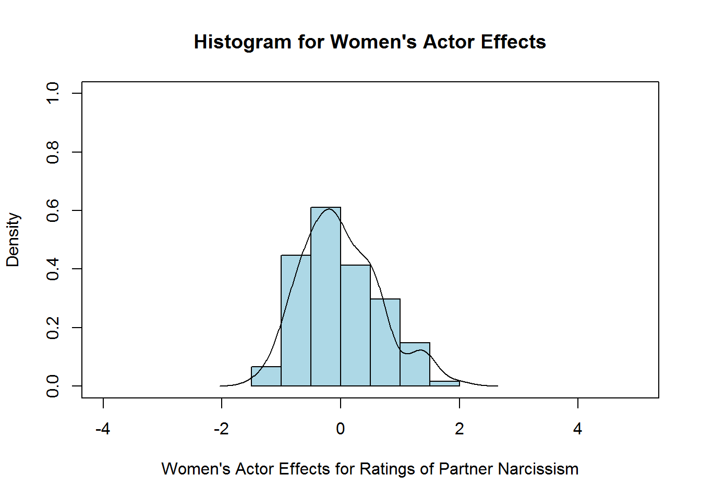
qqnorm(scale(REs_basicSRM_APARTNARC$cond$`GROUPID:FemaleID`$FM), main = "Normal Quantile-Quantile Plot")
qqline(scale(REs_basicSRM_APARTNARC$cond$`GROUPID:FemaleID`$FM))The random effects for women’s actor effects seem more-or-less normal in shape.
Histogram and Q-Q Plot for Female Partner Effects
hist(REs_basicSRM_APARTNARC$cond$`GROUPID:FemaleID`$MF, col = "lightblue",
freq = FALSE, ylim = c(0, 1), xlim = c(-4, 5),
xlab = "Women's Partner Effects for Ratings of Partner Narcissism",
main = "Histogram for Women's Partner Effects")
lines(density(REs_basicSRM_APARTNARC$cond$`GROUPID:FemaleID`$MF))
box()qqnorm(scale(REs_basicSRM_APARTNARC$cond$`GROUPID:FemaleID`$MF), main = "Normal Quantile-Quantile Plot")
qqline(scale(REs_basicSRM_APARTNARC$cond$`GROUPID:FemaleID`$MF))The random effects for women’s partner effects seem rather non-normal in shape (histogram is especially high in kurtosis).
Histogram and Q-Q Plot for Man-to-Woman Relationship Effects
hist(REs_basicSRM_APARTNARC$cond$`GROUPID:MaleID:FemaleID`$MF, col = "lightblue",
freq = FALSE, ylim = c(0, .7), xlim = c(-4, 5),
xlab = "Man-to-Woman Relationship Effects for Ratings of Partner Narcissism",
main = "Histogram for Man-to-Woman Relationship Effects")
lines(density(REs_basicSRM_APARTNARC$cond$`GROUPID:MaleID:FemaleID`$MF))
box()qqnorm(scale(REs_basicSRM_APARTNARC$cond$`GROUPID:MaleID:FemaleID`$MF), main = "Normal Quantile-Quantile Plot")
qqline(scale(REs_basicSRM_APARTNARC$cond$`GROUPID:MaleID:FemaleID`$MF))Q-Q plot suggests some non-normality.
Histogram and Q-Q Plot for Woman-to-Man Relationship Effects
hist(REs_basicSRM_APARTNARC$cond$`GROUPID:MaleID:FemaleID`$FM, col = "lightblue",
freq = FALSE, ylim = c(0, .7), xlim = c(-4, 5),
xlab = "Woman-to-Man Relationship Effects for Ratings of Partner Narcissism",
main = "Histogram for Woman-to-Man Relationship Effects")
lines(density(REs_basicSRM_APARTNARC$cond$`GROUPID:MaleID:FemaleID`$FM))
box()qqnorm(scale(REs_basicSRM_APARTNARC$cond$`GROUPID:MaleID:FemaleID`$FM), main = "Normal Quantile-Quantile Plot")
qqline(scale(REs_basicSRM_APARTNARC$cond$`GROUPID:MaleID:FemaleID`$FM))Q-Q plot suggests some non-normality.
Scatterplots for Pairs of Random Effects
Scatterplot of men’s actor and partner effects
plot(REs_basicSRM_APARTNARC$cond$`GROUPID:MaleID`)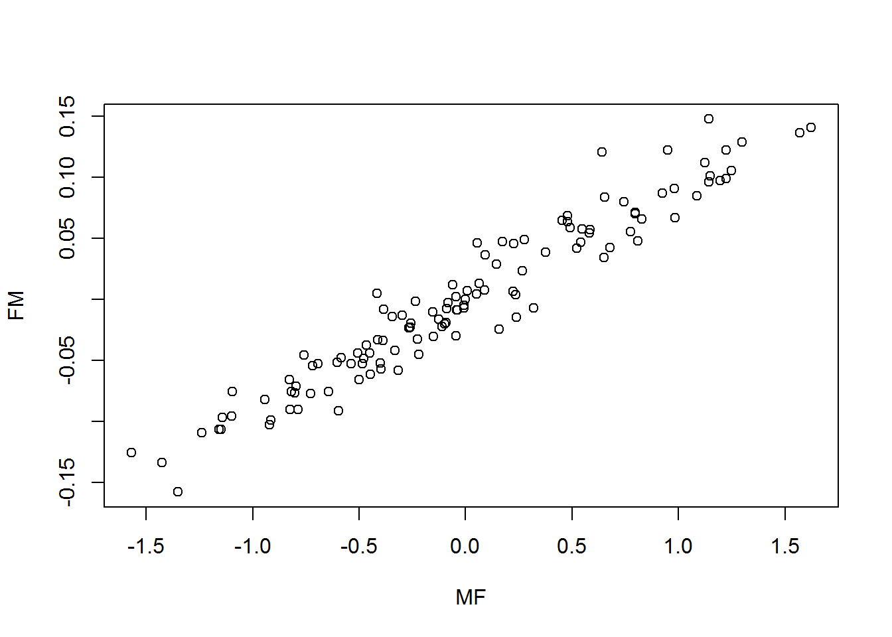
Scatterplot of women’s actor and partner effects
plot(REs_basicSRM_APARTNARC$cond$`GROUPID:FemaleID`)Scatterplot of men’s and women’s relationship effects
plot(REs_basicSRM_APARTNARC$cond$`GROUPID:MaleID:FemaleID`)Getting Relative Percentage (these estimates are from SPSS)
SRMRelativePercentage(MActVar = 0.908263, FPartVar = 0.057862, MFRelVar = 0.678044,
FActVar = 0.755441, MPartVar = 0.016787, FMRelVar = 0.685712) Actor Partner Relation Plus Error Total Variance
Man-to-Woman Ratings 55.24 3.52 41.24 1.64
Woman-to-Man Ratings 51.82 1.15 47.03 1.46Basic SRM Analysis of Perceptions of Partner’s Warmth
Subsetting data
myvars <- c("GROUPID", "MaleID", "FemaleID", "MF", "FM",
"AWARM", "Agender", "GroupID_EC1", "GroupID_EC2",
"GroupID_EC3", "GroupID_EC4", "GroupID_EC5", "GroupID_EC6",
"GroupID_EC7", "GroupID_EC8", "GroupID_EC9", "GroupID_EC10",
"GroupID_EC11", "GroupID_EC12", "GroupID_EC13", "GroupID_EC14",
"GroupID_EC15", "GroupID_EC16", "GroupID_EC17", "GroupID_EC18",
"GroupID_EC19", "GroupID_EC20", "GroupID_EC21", "GroupID_EC22",
"GroupID_EC23", "GroupID_EC24", "GroupID_EC25", "GroupID_EC26",
"GroupID_EC27", "GroupID_EC28", "GroupID_EC29", "GroupID_EC30",
"GroupID_EC31", "GroupID_EC32")
SD_data_AWARM <- SD_data4[myvars]
SD_data_AWARM <- na.omit(SD_data_AWARM)Basic SRM Analysis
basicSRM_AWARM <- glmmTMB(AWARM ~ 1 + Agender*GroupID_EC1 + Agender*GroupID_EC2 + Agender*GroupID_EC3 + Agender*GroupID_EC4 +
Agender*GroupID_EC5 + Agender*GroupID_EC6 + Agender*GroupID_EC7 + Agender*GroupID_EC8 + Agender*GroupID_EC9 +
Agender*GroupID_EC10 + Agender*GroupID_EC11 + Agender*GroupID_EC12 + Agender*GroupID_EC13 + Agender*GroupID_EC14 +
Agender*GroupID_EC15 + Agender*GroupID_EC16 + Agender*GroupID_EC17 + Agender*GroupID_EC18 + Agender*GroupID_EC19 +
Agender*GroupID_EC20 + Agender*GroupID_EC21 + Agender*GroupID_EC22 + Agender*GroupID_EC23 + Agender*GroupID_EC24 +
Agender*GroupID_EC25 + Agender*GroupID_EC26 + Agender*GroupID_EC27 + Agender*GroupID_EC28 + Agender*GroupID_EC29 +
Agender*GroupID_EC30 + Agender*GroupID_EC31 + Agender*GroupID_EC32 + (0 + MF + FM|GROUPID:MaleID) + (0 + FM +
MF|GROUPID:FemaleID) + us(0 + MF + FM + 0| GROUPID:MaleID:FemaleID),data = SD_data_AWARM,
family = gaussian(link = "identity"), dispformula=~0, REML = TRUE,
verbose = FALSE, na.action = na.omit)Warning in fitTMB(TMBStruc): Model convergence problem; false convergence (8).
See vignette('troubleshooting')glmmTMB issues a false convergence warning (8), but same model runs fine in SPSS, with the same exact deviance value and virtually identical parameter estimates.
updated_basicSRM_AWARM <- update(basicSRM_AWARM, control=glmmTMBControl(optimizer=optim,
optArgs=list(method="BFGS")))all.equal(ranef(basicSRM_AWARM), ranef(updated_basicSRM_AWARM))[1] "Component \"cond\": Component \"GROUPID:MaleID\": Attributes: < Component \"condVar\": Mean relative difference: 0.0001276411 >"
[2] "Component \"cond\": Component \"GROUPID:MaleID\": Component \"MF\": Mean relative difference: 0.0001594839"
[3] "Component \"cond\": Component \"GROUPID:MaleID\": Component \"FM\": Mean relative difference: 0.0002037012"
[4] "Component \"cond\": Component \"GROUPID:FemaleID\": Attributes: < Component \"condVar\": Mean relative difference: 5.723914e-05 >"
[5] "Component \"cond\": Component \"GROUPID:FemaleID\": Component \"FM\": Mean relative difference: 4.788058e-05"
[6] "Component \"cond\": Component \"GROUPID:FemaleID\": Component \"MF\": Mean relative difference: 4.008551e-05"
[7] "Component \"cond\": Component \"GROUPID:MaleID:FemaleID\": Attributes: < Component \"condVar\": Mean relative difference: 3.672755e-05 >"
[8] "Component \"cond\": Component \"GROUPID:MaleID:FemaleID\": Component \"MF\": Mean relative difference: 9.07592e-05"
[9] "Component \"cond\": Component \"GROUPID:MaleID:FemaleID\": Component \"FM\": Mean relative difference: 8.34697e-05" Random effects are nearly identical.
summary(basicSRM_AWARM) Family: gaussian ( identity )
Formula:
AWARM ~ 1 + Agender * GroupID_EC1 + Agender * GroupID_EC2 + Agender *
GroupID_EC3 + Agender * GroupID_EC4 + Agender * GroupID_EC5 +
Agender * GroupID_EC6 + Agender * GroupID_EC7 + Agender *
GroupID_EC8 + Agender * GroupID_EC9 + Agender * GroupID_EC10 +
Agender * GroupID_EC11 + Agender * GroupID_EC12 + Agender *
GroupID_EC13 + Agender * GroupID_EC14 + Agender * GroupID_EC15 +
Agender * GroupID_EC16 + Agender * GroupID_EC17 + Agender *
GroupID_EC18 + Agender * GroupID_EC19 + Agender * GroupID_EC20 +
Agender * GroupID_EC21 + Agender * GroupID_EC22 + Agender *
GroupID_EC23 + Agender * GroupID_EC24 + Agender * GroupID_EC25 +
Agender * GroupID_EC26 + Agender * GroupID_EC27 + Agender *
GroupID_EC28 + Agender * GroupID_EC29 + Agender * GroupID_EC30 +
Agender * GroupID_EC31 + Agender * GroupID_EC32 + (0 + MF +
FM | GROUPID:MaleID) + (0 + FM + MF | GROUPID:FemaleID) +
us(0 + MF + FM + 0 | GROUPID:MaleID:FemaleID)
Dispersion: ~0
Data: SD_data_AWARM
AIC BIC logLik deviance df.resid
3532.8 3891.3 -1691.4 3382.8 871
Random effects:
Conditional model:
Groups Name Variance Std.Dev. Corr
GROUPID:MaleID MF 0.8054 0.8975
FM 0.6062 0.7786 0.47
GROUPID:FemaleID FM 0.9225 0.9605
MF 0.8055 0.8975 -0.06
GROUPID:MaleID:FemaleID MF 1.5998 1.2648
FM 2.3366 1.5286 0.04
Number of obs: 880, groups:
GROUPID:MaleID, 123; GROUPID:FemaleID, 121; GROUPID:MaleID:FemaleID, 455
Conditional model:
Estimate Std. Error z value Pr(>|z|)
(Intercept) 8.347157 0.103669 80.52 <2e-16 ***
Agender -0.099837 0.090541 -1.10 0.2702
GroupID_EC1 0.232843 0.471719 0.49 0.6216
GroupID_EC2 -0.159657 0.536213 -0.30 0.7659
GroupID_EC3 -0.791602 0.637642 -1.24 0.2144
GroupID_EC4 0.472843 0.471719 1.00 0.3162
GroupID_EC5 -0.397807 0.675357 -0.59 0.5558
GroupID_EC6 0.041732 0.637642 0.07 0.9478
GroupID_EC7 0.502099 0.563538 0.89 0.3729
GroupID_EC8 -0.003407 0.536213 -0.01 0.9949
GroupID_EC9 0.371593 0.536213 0.69 0.4883
GroupID_EC10 0.486176 0.637642 0.76 0.4458
GroupID_EC11 -0.569379 0.637642 -0.89 0.3719
GroupID_EC12 -0.222157 0.536213 -0.41 0.6786
GroupID_EC13 0.430621 0.637642 0.68 0.4995
GroupID_EC14 0.559093 0.536213 1.04 0.2971
GroupID_EC15 0.186186 0.688708 0.27 0.7869
GroupID_EC16 -0.467622 0.675581 -0.69 0.4888
GroupID_EC17 -0.291602 0.637642 -0.46 0.6474
GroupID_EC18 -0.034657 0.536213 -0.06 0.9485
GroupID_EC19 -0.291602 0.637642 -0.46 0.6474
GroupID_EC20 0.375065 0.637642 0.59 0.5564
GroupID_EC21 -0.327157 0.471719 -0.69 0.4880
GroupID_EC22 -0.811945 0.504314 -1.61 0.1074
GroupID_EC23 1.128695 0.538192 2.10 0.0360 *
GroupID_EC24 -0.190907 0.536213 -0.36 0.7218
GroupID_EC25 -0.034657 0.536213 -0.06 0.9485
GroupID_EC26 0.097287 0.637642 0.15 0.8787
GroupID_EC27 -0.159657 0.536213 -0.30 0.7659
GroupID_EC28 -0.291602 0.637642 -0.46 0.6474
GroupID_EC29 -0.097157 0.536213 -0.18 0.8562
GroupID_EC30 0.041732 0.637642 0.07 0.9478
GroupID_EC31 -0.446712 0.623859 -0.72 0.4740
GroupID_EC32 0.121593 0.536213 0.23 0.8206
Agender:GroupID_EC1 0.359837 0.406588 0.89 0.3761
Agender:GroupID_EC2 0.849837 0.464373 1.83 0.0672 .
Agender:GroupID_EC3 0.433170 0.556189 0.78 0.4361
Agender:GroupID_EC4 0.239837 0.406588 0.59 0.5553
Agender:GroupID_EC5 0.493631 0.599054 0.82 0.4099
Agender:GroupID_EC6 -1.066830 0.556189 -1.92 0.0551 .
Agender:GroupID_EC7 0.125580 0.495650 0.25 0.8000
Agender:GroupID_EC8 0.068587 0.464373 0.15 0.8826
Agender:GroupID_EC9 0.693587 0.464373 1.49 0.1353
Agender:GroupID_EC10 -0.511275 0.556189 -0.92 0.3580
Agender:GroupID_EC11 -0.344608 0.556189 -0.62 0.5355
Agender:GroupID_EC12 -0.087663 0.464373 -0.19 0.8503
Agender:GroupID_EC13 -0.344608 0.556189 -0.62 0.5355
Agender:GroupID_EC14 0.131087 0.464373 0.28 0.7777
Agender:GroupID_EC15 0.122049 0.614096 0.20 0.8425
Agender:GroupID_EC16 0.868261 0.599307 1.45 0.1474
Agender:GroupID_EC17 0.155392 0.556189 0.28 0.7799
Agender:GroupID_EC18 -0.025163 0.464373 -0.05 0.9568
Agender:GroupID_EC19 0.155392 0.556189 0.28 0.7799
Agender:GroupID_EC20 -0.511275 0.556189 -0.92 0.3580
Agender:GroupID_EC21 -0.200163 0.406588 -0.49 0.6225
Agender:GroupID_EC22 -0.684951 0.443989 -1.54 0.1229
Agender:GroupID_EC23 -0.236811 0.466657 -0.51 0.6118
Agender:GroupID_EC24 -0.056413 0.464373 -0.12 0.9033
Agender:GroupID_EC25 -0.025163 0.464373 -0.05 0.9568
Agender:GroupID_EC26 -0.900163 0.556189 -1.62 0.1056
Agender:GroupID_EC27 -0.275163 0.464373 -0.59 0.5535
Agender:GroupID_EC28 -0.066830 0.556189 -0.12 0.9044
Agender:GroupID_EC29 0.474837 0.464373 1.02 0.3065
Agender:GroupID_EC30 0.710948 0.556189 1.28 0.2012
Agender:GroupID_EC31 -0.886982 0.564961 -1.57 0.1164
Agender:GroupID_EC32 0.131087 0.464373 0.28 0.7777
---
Signif. codes: 0 '***' 0.001 '**' 0.01 '*' 0.05 '.' 0.1 ' ' 1Checking Normality of Level-1 Residuals
Standard low tech way
hist(scale(resid(basicSRM_AWARM)),
freq = FALSE, ylim = c(0, .7), xlim = c(-4, 5),
main = "Basic SRM Analysis of Ratings of Partner's Warmth",
col = "lightblue",
xlab = "Standardized Residuals")
lines(density(scale(resid(basicSRM_AWARM))))
box()qqnorm(scale(resid(basicSRM_AWARM)), main = "Normal Quantile-Quantile Plot")
qqline(scale(resid(basicSRM_AWARM)))There are some minor problems with the normality of the residuals for AWARM, most likely due to the fact that it is a single-item measure.
More high tech way with DHARMa package (note that residual ~ pred plot is incorrect)
basicSRM_AWARM_simres <- simulateResiduals(basicSRM_AWARM)Model family was recognized or set as continuous, but duplicate values were detected in the response. Consider if you are fitting an appropriate model.system.time(sr.basicSRM_AWARM <- simulateResiduals(basicSRM_AWARM))Model family was recognized or set as continuous, but duplicate values were detected in the response. Consider if you are fitting an appropriate model. user system elapsed
0.93 0.06 1.00 plot(sr.basicSRM_AWARM)The Kolmogoriv-Smirnov test confirms that the assumption of normality of the residuals is violated.
Checking for potential non-linearity and heteroscedasticity
Method suggested by Florian Hartig on Github to obtain predicted values
that are not conditioned on random effects (this prevents an artificial
correlation between residuals and predicted values in scatterplot)
newdata=SD_data_AWARM
newdata$GROUPID = NA
pred_AWARM <- predict(basicSRM_AWARM, newdata)
Stdresiduals_AWARM <- scale(resid(basicSRM_AWARM))plot(pred_AWARM, Stdresiduals_AWARM)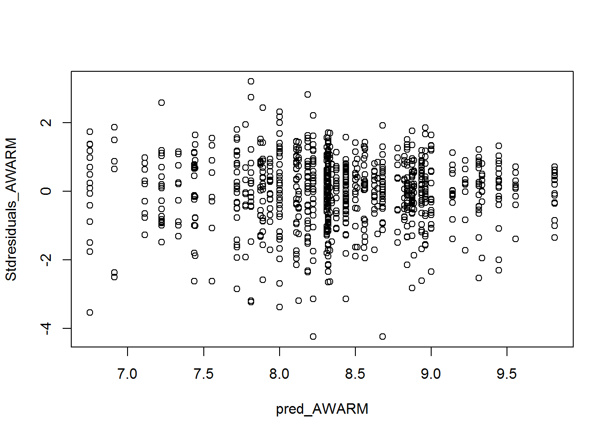
No noticeable issues with non-linearity or heteroscedasticity.
Checking Normality of Random Effects
Extracting Random Effects from Model
REs_basicSRM_AWARM <- ranef(basicSRM_AWARM)Histogram and Q-Q Plot for Male Actor Effects
hist(REs_basicSRM_AWARM$cond$`GROUPID:MaleID`$MF, col = "lightblue",
freq = FALSE, ylim = c(0, .7), xlim = c(-4, 5),
xlab = "Men's Actor Effects for Ratings of Partner Warmth",
main = "Histogram for Men's Actor Effects")
lines(density(REs_basicSRM_AWARM$cond$`GROUPID:MaleID`$MF))
box()qqnorm(scale(REs_basicSRM_AWARM$cond$`GROUPID:MaleID`$MF), main = "Normal Quantile-Quantile Plot")
qqline(scale(REs_basicSRM_AWARM$cond$`GROUPID:MaleID`$MF))The random effects for men’s actor effects seem pretty normal in shape.
Histogram and Q-Q Plot for Male Partner Effects
hist(REs_basicSRM_AWARM$cond$`GROUPID:MaleID`$FM, col = "lightblue",
freq = FALSE, ylim = c(0, .7), xlim = c(-4, 5),
xlab = "Men's Partner Effects for Ratings of Partner Warmth",
main = "Histogram for Men's Partner Effects")
lines(density(REs_basicSRM_AWARM$cond$`GROUPID:MaleID`$FM))
box()qqnorm(scale(REs_basicSRM_AWARM$cond$`GROUPID:MaleID`$FM), main = "Normal Quantile-Quantile Plot")
qqline(scale(REs_basicSRM_AWARM$cond$`GROUPID:MaleID`$FM))The random effects for men’s partner effects seem pretty normal in shape.
Histogram and Q-Q Plot for Female Actor Effects
hist(REs_basicSRM_AWARM$cond$`GROUPID:FemaleID`$FM, col = "lightblue",
freq = FALSE, ylim = c(0, .7), xlim = c(-4, 5),
xlab = "Women's Actor Effects for Ratings of Partner Warmth",
main = "Histogram for Women's Actor Effects")
lines(density(REs_basicSRM_AWARM$cond$`GROUPID:FemaleID`$FM))
box()qqnorm(scale(REs_basicSRM_AWARM$cond$`GROUPID:FemaleID`$FM), main = "Normal Quantile-Quantile Plot")
qqline(scale(REs_basicSRM_AWARM$cond$`GROUPID:FemaleID`$FM))The random effects for women’s actor effects seem more-or-less normal in shape.
Histogram and Q-Q Plot for Female Partner Effects
hist(REs_basicSRM_AWARM$cond$`GROUPID:FemaleID`$MF, col = "lightblue",
freq = FALSE, ylim = c(0, .7), xlim = c(-4, 5),
xlab = "Women's Partner Effects for Ratings of Partner Warmth",
main = "Histogram for Women's Partner Effects")
lines(density(REs_basicSRM_AWARM$cond$`GROUPID:FemaleID`$MF))
box()qqnorm(scale(REs_basicSRM_AWARM$cond$`GROUPID:FemaleID`$MF), main = "Normal Quantile-Quantile Plot")
qqline(scale(REs_basicSRM_AWARM$cond$`GROUPID:FemaleID`$MF))
The random effects for women’s partner effects seem pretty normal in shape.
Histogram and Q-Q Plot for Man-to-Woman Relationship Effects
hist(REs_basicSRM_AWARM$cond$`GROUPID:MaleID:FemaleID`$MF, col = "lightblue",
freq = FALSE, ylim = c(0, .7), xlim = c(-4, 5),
xlab = "Man-to-Woman Relationship Effects for Ratings of Partner Warmth",
main = "Histogram for Man-to-Woman Relationship Effects")
lines(density(REs_basicSRM_AWARM$cond$`GROUPID:MaleID:FemaleID`$MF))
box()qqnorm(scale(REs_basicSRM_AWARM$cond$`GROUPID:MaleID:FemaleID`$MF), main = "Normal Quantile-Quantile Plot")
qqline(scale(REs_basicSRM_AWARM$cond$`GROUPID:MaleID:FemaleID`$MF))Q-Q plot suggests some non-normality.
Histogram and Q-Q Plot for Woman-to-Man Relationship Effects
hist(REs_basicSRM_AWARM$cond$`GROUPID:MaleID:FemaleID`$FM, col = "lightblue",
freq = FALSE, ylim = c(0, .7), xlim = c(-4, 5),
xlab = "Woman-to-Man Relationship Effects for Ratings of Partner Warmth",
main = "Histogram for Woman-to-Man Relationship Effects")
lines(density(REs_basicSRM_AWARM$cond$`GROUPID:MaleID:FemaleID`$FM))
box()qqnorm(scale(REs_basicSRM_AWARM$cond$`GROUPID:MaleID:FemaleID`$FM), main = "Normal Quantile-Quantile Plot")
qqline(scale(REs_basicSRM_AWARM$cond$`GROUPID:MaleID:FemaleID`$FM))Q-Q plot suggests some non-normality.
Scatterplots for Pairs of Random Effects
Scatterplot of men’s actor and partner effects
plot(REs_basicSRM_AWARM$cond$`GROUPID:MaleID`)Scatterplot of women’s actor and partner effects
plot(REs_basicSRM_AWARM$cond$`GROUPID:FemaleID`)Scatterplot of men’s and women’s relationship effects
plot(REs_basicSRM_AWARM$cond$`GROUPID:MaleID:FemaleID`)Getting Relative Percentage (these estimates are from SPSS)
SRMRelativePercentage(MActVar = 0.805500, FPartVar = 0.805482, MFRelVar = 1.599805,
FActVar = 0.922503, MPartVar = 0.606151, FMRelVar = 2.336658) Actor Partner Relation Plus Error Total Variance
Man-to-Woman Ratings 25.09 25.09 49.83 3.21
Woman-to-Man Ratings 23.87 15.68 60.45 3.87Basic SRM Analysis of Perceptions of Partner’s Dominance
Subsetting data
myvars <- c("GROUPID", "MaleID", "FemaleID", "MF", "FM",
"ADOMINANT", "Agender", "GroupID_EC1", "GroupID_EC2",
"GroupID_EC3", "GroupID_EC4", "GroupID_EC5", "GroupID_EC6",
"GroupID_EC7", "GroupID_EC8", "GroupID_EC9", "GroupID_EC10",
"GroupID_EC11", "GroupID_EC12", "GroupID_EC13", "GroupID_EC14",
"GroupID_EC15", "GroupID_EC16", "GroupID_EC17", "GroupID_EC18",
"GroupID_EC19", "GroupID_EC20", "GroupID_EC21", "GroupID_EC22",
"GroupID_EC23", "GroupID_EC24", "GroupID_EC25", "GroupID_EC26",
"GroupID_EC27", "GroupID_EC28", "GroupID_EC29", "GroupID_EC30",
"GroupID_EC31", "GroupID_EC32")
SD_data_ADOMINANT <- SD_data4[myvars]
SD_data_ADOMINANT <- na.omit(SD_data_ADOMINANT)Basic SRM Analysis
basicSRM_ADOMINANT <- glmmTMB(ADOMINANT ~ 1 + Agender*GroupID_EC1 + Agender*GroupID_EC2 + Agender*GroupID_EC3 + Agender*GroupID_EC4 +
Agender*GroupID_EC5 + Agender*GroupID_EC6 + Agender*GroupID_EC7 + Agender*GroupID_EC8 + Agender*GroupID_EC9 +
Agender*GroupID_EC10 + Agender*GroupID_EC11 + Agender*GroupID_EC12 + Agender*GroupID_EC13 + Agender*GroupID_EC14 +
Agender*GroupID_EC15 + Agender*GroupID_EC16 + Agender*GroupID_EC17 + Agender*GroupID_EC18 + Agender*GroupID_EC19 +
Agender*GroupID_EC20 + Agender*GroupID_EC21 + Agender*GroupID_EC22 + Agender*GroupID_EC23 + Agender*GroupID_EC24 +
Agender*GroupID_EC25 + Agender*GroupID_EC26 + Agender*GroupID_EC27 + Agender*GroupID_EC28 + Agender*GroupID_EC29 +
Agender*GroupID_EC30 + Agender*GroupID_EC31 + Agender*GroupID_EC32 + (0 + MF + FM|GROUPID:MaleID) + (0 + FM +
MF|GROUPID:FemaleID) + us(0 + MF + FM + 0| GROUPID:MaleID:FemaleID),data = SD_data_ADOMINANT,
family = gaussian(link = "identity"), dispformula=~0, REML = TRUE,
verbose = FALSE, na.action = na.omit)Warning in fitTMB(TMBStruc): Model convergence problem; false convergence (8).
See vignette('troubleshooting')glmmTMB issues a false convergence warning (8), but same model runs fine in SPSS, with the same exact deviance value and virtually identical parameter estimates.
updated_basicSRM_ADOMINANT <- update(basicSRM_ADOMINANT, control=glmmTMBControl(optimizer=optim,
optArgs=list(method="BFGS")))all.equal(ranef(basicSRM_ADOMINANT), ranef(updated_basicSRM_ADOMINANT))[1] "Component \"cond\": Component \"GROUPID:MaleID\": Attributes: < Component \"condVar\": Mean relative difference: 0.0002750907 >"
[2] "Component \"cond\": Component \"GROUPID:MaleID\": Component \"MF\": Mean relative difference: 0.001126995"
[3] "Component \"cond\": Component \"GROUPID:MaleID\": Component \"FM\": Mean relative difference: 0.000314055"
[4] "Component \"cond\": Component \"GROUPID:FemaleID\": Attributes: < Component \"condVar\": Mean relative difference: 0.0001955307 >"
[5] "Component \"cond\": Component \"GROUPID:FemaleID\": Component \"FM\": Mean relative difference: 0.0004900666"
[6] "Component \"cond\": Component \"GROUPID:FemaleID\": Component \"MF\": Mean relative difference: 0.0008669447"
[7] "Component \"cond\": Component \"GROUPID:MaleID:FemaleID\": Attributes: < Component \"condVar\": Mean relative difference: 8.121123e-05 >"
[8] "Component \"cond\": Component \"GROUPID:MaleID:FemaleID\": Component \"MF\": Mean relative difference: 0.0002869344"
[9] "Component \"cond\": Component \"GROUPID:MaleID:FemaleID\": Component \"FM\": Mean relative difference: 0.0002816567" Random effects are nearly identical.
summary(basicSRM_ADOMINANT) Family: gaussian ( identity )
Formula:
ADOMINANT ~ 1 + Agender * GroupID_EC1 + Agender * GroupID_EC2 +
Agender * GroupID_EC3 + Agender * GroupID_EC4 + Agender *
GroupID_EC5 + Agender * GroupID_EC6 + Agender * GroupID_EC7 +
Agender * GroupID_EC8 + Agender * GroupID_EC9 + Agender *
GroupID_EC10 + Agender * GroupID_EC11 + Agender * GroupID_EC12 +
Agender * GroupID_EC13 + Agender * GroupID_EC14 + Agender *
GroupID_EC15 + Agender * GroupID_EC16 + Agender * GroupID_EC17 +
Agender * GroupID_EC18 + Agender * GroupID_EC19 + Agender *
GroupID_EC20 + Agender * GroupID_EC21 + Agender * GroupID_EC22 +
Agender * GroupID_EC23 + Agender * GroupID_EC24 + Agender *
GroupID_EC25 + Agender * GroupID_EC26 + Agender * GroupID_EC27 +
Agender * GroupID_EC28 + Agender * GroupID_EC29 + Agender *
GroupID_EC30 + Agender * GroupID_EC31 + Agender * GroupID_EC32 +
(0 + MF + FM | GROUPID:MaleID) + (0 + FM + MF | GROUPID:FemaleID) +
us(0 + MF + FM + 0 | GROUPID:MaleID:FemaleID)
Dispersion: ~0
Data: SD_data_ADOMINANT
AIC BIC logLik deviance df.resid
3695.6 4054.2 -1772.8 3545.6 872
Random effects:
Conditional model:
Groups Name Variance Std.Dev. Corr
GROUPID:MaleID MF 0.3617 0.6014
FM 1.4548 1.2062 -0.34
GROUPID:FemaleID FM 0.7531 0.8678
MF 0.3761 0.6133 -0.42
GROUPID:MaleID:FemaleID MF 2.7250 1.6508
FM 2.4617 1.5690 0.10
Number of obs: 881, groups:
GROUPID:MaleID, 123; GROUPID:FemaleID, 121; GROUPID:MaleID:FemaleID, 455
Conditional model:
Estimate Std. Error z value Pr(>|z|)
(Intercept) 6.215093 0.090274 68.85 <2e-16 ***
Agender -0.250867 0.107166 -2.34 0.0192 *
GroupID_EC1 0.324907 0.395191 0.82 0.4110
GroupID_EC2 0.003657 0.458224 0.01 0.9936
GroupID_EC3 -0.603982 0.560845 -1.08 0.2815
GroupID_EC4 0.224907 0.395191 0.57 0.5693
GroupID_EC5 -0.401883 0.603199 -0.67 0.5052
GroupID_EC6 -0.437315 0.560845 -0.78 0.4355
GroupID_EC7 0.244241 0.488070 0.50 0.6168
GroupID_EC8 0.253657 0.458224 0.55 0.5799
GroupID_EC9 0.034907 0.458224 0.08 0.9393
GroupID_EC10 -0.159537 0.560845 -0.28 0.7761
GroupID_EC11 0.451574 0.560845 0.81 0.4207
GroupID_EC12 -0.090093 0.458224 -0.20 0.8441
GroupID_EC13 0.007129 0.560845 0.01 0.9899
GroupID_EC14 0.316157 0.458224 0.69 0.4902
GroupID_EC15 -0.024981 0.613667 -0.04 0.9675
GroupID_EC16 0.652683 0.604180 1.08 0.2800
GroupID_EC17 -0.048426 0.560845 -0.09 0.9312
GroupID_EC18 -0.027593 0.458224 -0.06 0.9520
GroupID_EC19 -0.770649 0.560845 -1.37 0.1694
GroupID_EC20 -0.548426 0.560845 -0.98 0.3281
GroupID_EC21 -0.135093 0.395191 -0.34 0.7325
GroupID_EC22 -0.272895 0.429870 -0.63 0.5255
GroupID_EC23 0.441157 0.458224 0.96 0.3357
GroupID_EC24 0.066157 0.458224 0.14 0.8852
GroupID_EC25 -0.058843 0.458224 -0.13 0.8978
GroupID_EC26 0.673796 0.560845 1.20 0.2296
GroupID_EC27 -0.371343 0.458224 -0.81 0.4177
GroupID_EC28 -0.381760 0.560845 -0.68 0.4961
GroupID_EC29 0.003657 0.458224 0.01 0.9936
GroupID_EC30 -0.048426 0.560845 -0.09 0.9312
GroupID_EC31 -0.241321 0.552673 -0.44 0.6624
GroupID_EC32 0.472407 0.458224 1.03 0.3026
Agender:GroupID_EC1 0.470867 0.487464 0.97 0.3341
Agender:GroupID_EC2 0.969617 0.554817 1.75 0.0805 .
Agender:GroupID_EC3 -0.026911 0.661037 -0.04 0.9675
Agender:GroupID_EC4 -0.149133 0.487464 -0.31 0.7597
Agender:GroupID_EC5 -0.047035 0.697332 -0.07 0.9462
Agender:GroupID_EC6 -0.304689 0.661037 -0.46 0.6449
Agender:GroupID_EC7 -0.770967 0.579641 -1.33 0.1835
Agender:GroupID_EC8 0.032117 0.554817 0.06 0.9538
Agender:GroupID_EC9 -0.499133 0.554817 -0.90 0.3683
Agender:GroupID_EC10 -0.249133 0.661037 -0.38 0.7063
Agender:GroupID_EC11 0.695311 0.661037 1.05 0.2929
Agender:GroupID_EC12 0.125867 0.554817 0.23 0.8205
Agender:GroupID_EC13 -0.415800 0.661037 -0.63 0.5293
Agender:GroupID_EC14 0.407117 0.554817 0.73 0.4631
Agender:GroupID_EC15 -0.494801 0.706365 -0.70 0.4836
Agender:GroupID_EC16 0.451976 0.698179 0.65 0.5174
Agender:GroupID_EC17 0.306422 0.661037 0.46 0.6430
Agender:GroupID_EC18 -1.249133 0.554817 -2.25 0.0244 *
Agender:GroupID_EC19 0.139756 0.661037 0.21 0.8326
Agender:GroupID_EC20 -0.082467 0.661037 -0.12 0.9007
Agender:GroupID_EC21 0.530867 0.487464 1.09 0.2761
Agender:GroupID_EC22 -0.686935 0.515980 -1.33 0.1831
Agender:GroupID_EC23 0.344617 0.554817 0.62 0.5345
Agender:GroupID_EC24 0.157117 0.554817 0.28 0.7770
Agender:GroupID_EC25 -0.467883 0.554817 -0.84 0.3991
Agender:GroupID_EC26 -0.526911 0.661037 -0.80 0.4254
Agender:GroupID_EC27 0.532117 0.554817 0.96 0.3375
Agender:GroupID_EC28 1.084200 0.661037 1.64 0.1010
Agender:GroupID_EC29 1.094617 0.554817 1.97 0.0485 *
Agender:GroupID_EC30 -0.026911 0.661037 -0.04 0.9675
Agender:GroupID_EC31 -1.117307 0.623376 -1.79 0.0731 .
Agender:GroupID_EC32 0.188367 0.554817 0.34 0.7342
---
Signif. codes: 0 '***' 0.001 '**' 0.01 '*' 0.05 '.' 0.1 ' ' 1Checking Normality of Level-1 Residuals
Standard low tech way
hist(scale(resid(basicSRM_ADOMINANT)),
freq = FALSE, ylim = c(0, .7), xlim = c(-4, 5),
main = "Basic SRM Analysis of Ratings of Partner's Dominance",
col = "lightblue",
xlab = "Standardized Residuals")
lines(density(scale(resid(basicSRM_ADOMINANT))))
box()qqnorm(scale(resid(basicSRM_ADOMINANT)), main = "Normal Quantile-Quantile Plot")
qqline(scale(resid(basicSRM_ADOMINANT)))Residuals are pretty normal in shape.
More high tech way with DHARMa package (note that residual ~ pred plot is incorrect)
basicSRM_ADOMINANT_simres <- simulateResiduals(basicSRM_ADOMINANT)Model family was recognized or set as continuous, but duplicate values were detected in the response. Consider if you are fitting an appropriate model.system.time(sr.basicSRM_ADOMINANT <- simulateResiduals(basicSRM_ADOMINANT))Model family was recognized or set as continuous, but duplicate values were detected in the response. Consider if you are fitting an appropriate model. user system elapsed
1 0 1 plot(sr.basicSRM_ADOMINANT)
The Kolmogoriv-Smirnov test confirms that the assumption of normality of the residuals is NOT violated.
Checking for potential non-linearity and heteroscedasticity
Method suggested by Florian Hartig on Github to obtain predicted values
that are not conditioned on random effects (this prevents an artificial
correlation between residuals and predicted values in scatterplot)
newdata=SD_data_ADOMINANT
newdata$GROUPID = NA
pred_ADOMINANT <- predict(basicSRM_ADOMINANT, newdata)
Stdresiduals_ADOMINANT <- scale(resid(basicSRM_ADOMINANT))plot(pred_ADOMINANT, Stdresiduals_ADOMINANT)No noticeable issues with non-linearity or heteroscedasticity.
Checking Normality of Random Effects
Extracting Random Effects from Model
REs_basicSRM_ADOMINANT <- ranef(basicSRM_ADOMINANT)Histogram and Q-Q Plot for Male Actor Effects
hist(REs_basicSRM_ADOMINANT$cond$`GROUPID:MaleID`$MF, col = "lightblue",
freq = FALSE, ylim = c(0, .7), xlim = c(-4, 5),
xlab = "Men's Actor Effects for Ratings of Partner Dominance",
main = "Histogram for Men's Actor Effects")
lines(density(REs_basicSRM_ADOMINANT$cond$`GROUPID:MaleID`$MF))
box()qqnorm(scale(REs_basicSRM_ADOMINANT$cond$`GROUPID:MaleID`$MF), main = "Normal Quantile-Quantile Plot")
qqline(scale(REs_basicSRM_ADOMINANT$cond$`GROUPID:MaleID`$MF))The random effects for men’s actor effects seem somewhat non-normal in shape (histogram suggests high degree of kurtosis)
Histogram and Q-Q Plot for Male Partner Effects
hist(REs_basicSRM_ADOMINANT$cond$`GROUPID:MaleID`$FM, col = "lightblue",
freq = FALSE, ylim = c(0, .7), xlim = c(-4, 5),
xlab = "Men's Partner Effects for Ratings of Partner Dominance",
main = "Histogram for Men's Partner Effects")
lines(density(REs_basicSRM_ADOMINANT$cond$`GROUPID:MaleID`$FM))
box()qqnorm(scale(REs_basicSRM_ADOMINANT$cond$`GROUPID:MaleID`$FM), main = "Normal Quantile-Quantile Plot")
qqline(scale(REs_basicSRM_ADOMINANT$cond$`GROUPID:MaleID`$FM))The random effects for men’s partner effects seem pretty normal in shape.
Histogram and Q-Q Plot for Female Actor Effects
hist(REs_basicSRM_ADOMINANT$cond$`GROUPID:FemaleID`$FM, col = "lightblue",
freq = FALSE, ylim = c(0, .7), xlim = c(-4, 5),
xlab = "Women's Actor Effects for Ratings of Partner Dominance",
main = "Histogram for Women's Actor Effects")
lines(density(REs_basicSRM_ADOMINANT$cond$`GROUPID:FemaleID`$FM))
box()qqnorm(scale(REs_basicSRM_ADOMINANT$cond$`GROUPID:FemaleID`$FM), main = "Normal Quantile-Quantile Plot")
qqline(scale(REs_basicSRM_ADOMINANT$cond$`GROUPID:FemaleID`$FM))The random effects for women’s actor effects seem more-or-less normal in shape.
Histogram and Q-Q Plot for Female Partner Effects
hist(REs_basicSRM_ADOMINANT$cond$`GROUPID:FemaleID`$MF, col = "lightblue",
freq = FALSE, ylim = c(0, .7), xlim = c(-4, 5),
xlab = "Women's Partner Effects for Ratings of Partner Dominance",
main = "Histogram for Women's Partner Effects")
lines(density(REs_basicSRM_ADOMINANT$cond$`GROUPID:FemaleID`$MF))
box()qqnorm(scale(REs_basicSRM_ADOMINANT$cond$`GROUPID:FemaleID`$MF), main = "Normal Quantile-Quantile Plot")
qqline(scale(REs_basicSRM_ADOMINANT$cond$`GROUPID:FemaleID`$MF))The random effects for women’s partner effects seem pretty normal in shape (although histogram suggests high level of kurtosis)
Histogram and Q-Q Plot for Man-to-Woman Relationship Effects
hist(REs_basicSRM_ADOMINANT$cond$`GROUPID:MaleID:FemaleID`$MF, col = "lightblue",
freq = FALSE, ylim = c(0, .7), xlim = c(-4, 5),
xlab = "Man-to-Woman Relationship Effects for Ratings of Partner Dominance",
main = "Histogram for Man-to-Woman Relationship Effects")
lines(density(REs_basicSRM_ADOMINANT$cond$`GROUPID:MaleID:FemaleID`$MF))
box()qqnorm(scale(REs_basicSRM_ADOMINANT$cond$`GROUPID:MaleID:FemaleID`$MF), main = "Normal Quantile-Quantile Plot")
qqline(scale(REs_basicSRM_ADOMINANT$cond$`GROUPID:MaleID:FemaleID`$MF))Q-Q plot suggests normality.
Histogram and Q-Q Plot for Woman-to-Man Relationship Effects
hist(REs_basicSRM_ADOMINANT$cond$`GROUPID:MaleID:FemaleID`$FM, col = "lightblue",
freq = FALSE, ylim = c(0, .7), xlim = c(-4, 5),
xlab = "Woman-to-Man Relationship Effects for Ratings of Partner Dominance",
main = "Histogram for Woman-to-Man Relationship Effects")
lines(density(REs_basicSRM_ADOMINANT$cond$`GROUPID:MaleID:FemaleID`$FM))
box()qqnorm(scale(REs_basicSRM_ADOMINANT$cond$`GROUPID:MaleID:FemaleID`$FM), main = "Normal Quantile-Quantile Plot")
qqline(scale(REs_basicSRM_ADOMINANT$cond$`GROUPID:MaleID:FemaleID`$FM))Q-Q plot suggests normality.
Scatterplots for Pairs of Random Effects
Scatterplot of men’s actor and partner effects
plot(REs_basicSRM_ADOMINANT$cond$`GROUPID:MaleID`)Scatterplot of women’s actor and partner effects
plot(REs_basicSRM_ADOMINANT$cond$`GROUPID:FemaleID`)Scatterplot of men’s and women’s relationship effects
plot(REs_basicSRM_ADOMINANT$cond$`GROUPID:MaleID:FemaleID`)Getting Relative Percentage (these estimates are from SPSS)
SRMRelativePercentage(MActVar = 0.361737, FPartVar = 0.376160, MFRelVar = 2.724991,
FActVar = 0.753043, MPartVar = 1.454595, FMRelVar = 2.461820) Actor Partner Relation Plus Error Total Variance
Man-to-Woman Ratings 10.45 10.86 78.69 3.46
Woman-to-Man Ratings 16.13 31.15 52.72 4.67Basic SRM Analysis of Perceptions of Partner’s Assured-Dominance
Subsetting data
myvars <- c("GROUPID", "MaleID", "FemaleID", "MF", "FM",
"AAssDom", "Agender", "GroupID_EC1", "GroupID_EC2",
"GroupID_EC3", "GroupID_EC4", "GroupID_EC5", "GroupID_EC6",
"GroupID_EC7", "GroupID_EC8", "GroupID_EC9", "GroupID_EC10",
"GroupID_EC11", "GroupID_EC12", "GroupID_EC13", "GroupID_EC14",
"GroupID_EC15", "GroupID_EC16", "GroupID_EC17", "GroupID_EC18",
"GroupID_EC19", "GroupID_EC20", "GroupID_EC21", "GroupID_EC22",
"GroupID_EC23", "GroupID_EC24", "GroupID_EC25", "GroupID_EC26",
"GroupID_EC27", "GroupID_EC28", "GroupID_EC29", "GroupID_EC30",
"GroupID_EC31", "GroupID_EC32")
SD_data_AAssDom <- SD_data4[myvars]
SD_data_AAssDom <- na.omit(SD_data_AAssDom)Basic SRM Analysis
basicSRM_AAssDom <- glmmTMB(AAssDom ~ 1 + Agender*GroupID_EC1 + Agender*GroupID_EC2 + Agender*GroupID_EC3 + Agender*GroupID_EC4 +
Agender*GroupID_EC5 + Agender*GroupID_EC6 + Agender*GroupID_EC7 + Agender*GroupID_EC8 + Agender*GroupID_EC9 +
Agender*GroupID_EC10 + Agender*GroupID_EC11 + Agender*GroupID_EC12 + Agender*GroupID_EC13 + Agender*GroupID_EC14 +
Agender*GroupID_EC15 + Agender*GroupID_EC16 + Agender*GroupID_EC17 + Agender*GroupID_EC18 + Agender*GroupID_EC19 +
Agender*GroupID_EC20 + Agender*GroupID_EC21 + Agender*GroupID_EC22 + Agender*GroupID_EC23 + Agender*GroupID_EC24 +
Agender*GroupID_EC25 + Agender*GroupID_EC26 + Agender*GroupID_EC27 + Agender*GroupID_EC28 + Agender*GroupID_EC29 +
Agender*GroupID_EC30 + Agender*GroupID_EC31 + Agender*GroupID_EC32 + (0 + MF + FM|GROUPID:MaleID) + (0 + FM +
MF|GROUPID:FemaleID) + us(0 + MF + FM + 0| GROUPID:MaleID:FemaleID),data = SD_data_AAssDom,
family = gaussian(link = "identity"), dispformula=~0, REML = TRUE,
verbose = FALSE, na.action = na.omit)Warning in fitTMB(TMBStruc): Model convergence problem; false convergence (8).
See vignette('troubleshooting')glmmTMB issues a false convergence warning (8), but same model runs fine in SPSS, with the same exact deviance value and virtually identical parameter estimates.
summary(basicSRM_AAssDom) Family: gaussian ( identity )
Formula:
AAssDom ~ 1 + Agender * GroupID_EC1 + Agender * GroupID_EC2 +
Agender * GroupID_EC3 + Agender * GroupID_EC4 + Agender *
GroupID_EC5 + Agender * GroupID_EC6 + Agender * GroupID_EC7 +
Agender * GroupID_EC8 + Agender * GroupID_EC9 + Agender *
GroupID_EC10 + Agender * GroupID_EC11 + Agender * GroupID_EC12 +
Agender * GroupID_EC13 + Agender * GroupID_EC14 + Agender *
GroupID_EC15 + Agender * GroupID_EC16 + Agender * GroupID_EC17 +
Agender * GroupID_EC18 + Agender * GroupID_EC19 + Agender *
GroupID_EC20 + Agender * GroupID_EC21 + Agender * GroupID_EC22 +
Agender * GroupID_EC23 + Agender * GroupID_EC24 + Agender *
GroupID_EC25 + Agender * GroupID_EC26 + Agender * GroupID_EC27 +
Agender * GroupID_EC28 + Agender * GroupID_EC29 + Agender *
GroupID_EC30 + Agender * GroupID_EC31 + Agender * GroupID_EC32 +
(0 + MF + FM | GROUPID:MaleID) + (0 + FM + MF | GROUPID:FemaleID) +
us(0 + MF + FM + 0 | GROUPID:MaleID:FemaleID)
Dispersion: ~0
Data: SD_data_AAssDom
AIC BIC logLik deviance df.resid
2890.1 3248.3 -1370.1 2740.1 867
Random effects:
Conditional model:
Groups Name Variance Std.Dev. Corr
GROUPID:MaleID MF 0.3328 0.5769
FM 0.5685 0.7540 -0.27
GROUPID:FemaleID FM 0.3616 0.6013
MF 0.3025 0.5500 -0.26
GROUPID:MaleID:FemaleID MF 0.8295 0.9108
FM 0.9203 0.9593 -0.04
Number of obs: 876, groups:
GROUPID:MaleID, 123; GROUPID:FemaleID, 121; GROUPID:MaleID:FemaleID, 455
Conditional model:
Estimate Std. Error z value Pr(>|z|)
(Intercept) 3.652623 0.060552 60.32 <2e-16 ***
Agender -0.087945 0.074003 -1.19 0.2347
GroupID_EC1 0.027377 0.271924 0.10 0.9198
GroupID_EC2 0.109747 0.312565 0.35 0.7255
GroupID_EC3 -0.347068 0.372046 -0.93 0.3509
GroupID_EC4 0.267377 0.271924 0.98 0.3255
GroupID_EC5 -0.188219 0.401929 -0.47 0.6396
GroupID_EC6 -0.124845 0.372046 -0.34 0.7372
GroupID_EC7 0.125392 0.331128 0.38 0.7049
GroupID_EC8 0.063216 0.312562 0.20 0.8397
GroupID_EC9 -0.215123 0.310594 -0.69 0.4885
GroupID_EC10 0.430710 0.372046 1.16 0.2470
GroupID_EC11 0.236266 0.372046 0.64 0.5254
GroupID_EC12 -0.277623 0.310594 -0.89 0.3714
GroupID_EC13 0.208488 0.372046 0.56 0.5752
GroupID_EC14 0.019252 0.310594 0.06 0.9506
GroupID_EC15 -0.064645 0.404938 -0.16 0.8732
GroupID_EC16 0.550194 0.402106 1.37 0.1712
GroupID_EC17 0.180710 0.372046 0.49 0.6272
GroupID_EC18 0.066127 0.310594 0.21 0.8314
GroupID_EC19 0.069599 0.372046 0.19 0.8516
GroupID_EC20 -0.652623 0.372046 -1.75 0.0794 .
GroupID_EC21 -0.002623 0.271924 -0.01 0.9923
GroupID_EC22 -0.233223 0.298203 -0.78 0.4342
GroupID_EC23 0.128627 0.310594 0.41 0.6788
GroupID_EC24 0.269252 0.310594 0.87 0.3860
GroupID_EC25 -0.574498 0.310594 -1.85 0.0644 .
GroupID_EC26 -0.347068 0.372046 -0.93 0.3509
GroupID_EC27 -0.124895 0.312589 -0.40 0.6895
GroupID_EC28 0.125155 0.372046 0.34 0.7366
GroupID_EC29 0.188569 0.312561 0.60 0.5463
GroupID_EC30 -0.208179 0.372046 -0.56 0.5758
GroupID_EC31 0.037322 0.374429 0.10 0.9206
GroupID_EC32 0.159877 0.310594 0.51 0.6067
Agender:GroupID_EC1 0.387945 0.339309 1.14 0.2529
Agender:GroupID_EC2 0.419325 0.386119 1.09 0.2775
Agender:GroupID_EC3 -0.050944 0.455123 -0.11 0.9109
Agender:GroupID_EC4 0.027945 0.339309 0.08 0.9344
Agender:GroupID_EC5 -0.114317 0.479861 -0.24 0.8117
Agender:GroupID_EC6 0.115723 0.455123 0.25 0.7993
Agender:GroupID_EC7 -0.550614 0.400874 -1.37 0.1696
Agender:GroupID_EC8 -0.159144 0.386110 -0.41 0.6802
Agender:GroupID_EC9 -0.380805 0.384527 -0.99 0.3220
Agender:GroupID_EC10 -0.106499 0.455123 -0.23 0.8150
Agender:GroupID_EC11 -0.078721 0.455123 -0.17 0.8627
Agender:GroupID_EC12 0.462945 0.384527 1.20 0.2286
Agender:GroupID_EC13 0.282390 0.455123 0.62 0.5349
Agender:GroupID_EC14 -0.021430 0.384527 -0.06 0.9556
Agender:GroupID_EC15 -0.555588 0.482378 -1.15 0.2494
Agender:GroupID_EC16 0.012984 0.480011 0.03 0.9784
Agender:GroupID_EC17 0.087945 0.455123 0.19 0.8468
Agender:GroupID_EC18 -0.255805 0.384527 -0.67 0.5059
Agender:GroupID_EC19 0.199056 0.455123 0.44 0.6618
Agender:GroupID_EC20 0.199056 0.455123 0.44 0.6618
Agender:GroupID_EC21 0.317945 0.339309 0.94 0.3487
Agender:GroupID_EC22 -0.492654 0.360713 -1.37 0.1720
Agender:GroupID_EC23 0.681695 0.384527 1.77 0.0763 .
Agender:GroupID_EC24 0.041070 0.384527 0.11 0.9149
Agender:GroupID_EC25 -0.271430 0.384527 -0.71 0.4803
Agender:GroupID_EC26 -0.328721 0.455123 -0.72 0.4701
Agender:GroupID_EC27 0.372717 0.386146 0.97 0.3344
Agender:GroupID_EC28 0.199056 0.455123 0.44 0.6618
Agender:GroupID_EC29 0.278003 0.386124 0.72 0.4715
Agender:GroupID_EC30 0.365723 0.455123 0.80 0.4216
Agender:GroupID_EC31 -0.639214 0.432659 -1.48 0.1396
Agender:GroupID_EC32 -0.005805 0.384527 -0.02 0.9880
---
Signif. codes: 0 '***' 0.001 '**' 0.01 '*' 0.05 '.' 0.1 ' ' 1Checking Normality of Level-1 Residuals
Standard low tech way
hist(scale(resid(basicSRM_AAssDom)),
freq = FALSE, ylim = c(0, .7), xlim = c(-4, 5),
main = "Basic SRM Analysis of Ratings of Partner's Assured-Dominance",
col = "lightblue",
xlab = "Standardized Residuals")
lines(density(scale(resid(basicSRM_AAssDom))))
box()
qqnorm(scale(resid(basicSRM_AAssDom)), main = "Normal Quantile-Quantile Plot")
qqline(scale(resid(basicSRM_AAssDom)))Residuals appear to be normally distributed.
More high tech way with DHARMa package (note that residual ~ pred plot is incorrect)
basicSRM_AAssDom_simres <- simulateResiduals(basicSRM_AAssDom)Model family was recognized or set as continuous, but duplicate values were detected in the response. Consider if you are fitting an appropriate model.system.time(sr.basicSRM_AAssDom <- simulateResiduals(basicSRM_AAssDom))Model family was recognized or set as continuous, but duplicate values were detected in the response. Consider if you are fitting an appropriate model. user system elapsed
0.97 0.00 0.97 plot(sr.basicSRM_AAssDom)The Kolmogoriv-Smirnov test confirms that the assumption of normality of the residuals is NOT violated.
Checking for potential non-linearity and heteroscedasticity
Method suggested by Florian Hartig on Github to obtain predicted values
that are not conditioned on random effects (this prevents an artificial
correlation between residuals and predicted values in scatterplot)
newdata=SD_data_AAssDom
newdata$GROUPID = NA
pred_AAssDom <- predict(basicSRM_AAssDom, newdata)
Stdresiduals_AAssDom <- scale(resid(basicSRM_AAssDom))plot(pred_AAssDom, Stdresiduals_AAssDom)No noticeable issues with non-linearity or heteroscedasticity.
Checking Normality of Random Effects
Extracting Random Effects from Model
REs_basicSRM_AAssDom <- ranef(basicSRM_AAssDom)Histogram and Q-Q Plot for Male Actor Effects
hist(REs_basicSRM_AAssDom$cond$`GROUPID:MaleID`$MF, col = "lightblue",
freq = FALSE, ylim = c(0, .7), xlim = c(-4, 5),
xlab = "Men's Actor Effects for Ratings of Partner Assured-Dominance",
main = "Histogram for Men's Actor Effects")
lines(density(REs_basicSRM_AAssDom$cond$`GROUPID:MaleID`$MF))
box()qqnorm(scale(REs_basicSRM_AAssDom$cond$`GROUPID:MaleID`$MF), main = "Normal Quantile-Quantile Plot")
qqline(scale(REs_basicSRM_AAssDom$cond$`GROUPID:MaleID`$MF))The random effects for men’s actor effects seem pretty normal in shape (although histogram suggests high level of kurtosis).
Histogram and Q-Q Plot for Male Partner Effects
hist(REs_basicSRM_AAssDom$cond$`GROUPID:MaleID`$FM, col = "lightblue",
freq = FALSE, ylim = c(0, .7), xlim = c(-4, 5),
xlab = "Men's Partner Effects for Ratings of Partner Assured-Dominance",
main = "Histogram for Men's Partner Effects")
lines(density(REs_basicSRM_AAssDom$cond$`GROUPID:MaleID`$FM))
box()qqnorm(scale(REs_basicSRM_AAssDom$cond$`GROUPID:MaleID`$FM), main = "Normal Quantile-Quantile Plot")
qqline(scale(REs_basicSRM_AAssDom$cond$`GROUPID:MaleID`$FM))The random effects for men’s partner effects seem somewhat non-normal in shape.
Histogram and Q-Q Plot for Female Actor Effects
hist(REs_basicSRM_AAssDom$cond$`GROUPID:FemaleID`$FM, col = "lightblue",
freq = FALSE, ylim = c(0, .7), xlim = c(-4, 5),
xlab = "Women's Actor Effects for Ratings of Partner Assured-Dominance",
main = "Histogram for Women's Actor Effects")
lines(density(REs_basicSRM_AAssDom$cond$`GROUPID:FemaleID`$FM))
box()qqnorm(scale(REs_basicSRM_AAssDom$cond$`GROUPID:FemaleID`$FM), main = "Normal Quantile-Quantile Plot")
qqline(scale(REs_basicSRM_AAssDom$cond$`GROUPID:FemaleID`$FM))
The random effects for women’s actor effects seem more-or-less normal in shape (although histogram suggests high level of kurtosis).
Histogram and Q-Q Plot for Female Partner Effects
hist(REs_basicSRM_AAssDom$cond$`GROUPID:FemaleID`$MF, col = "lightblue",
freq = FALSE, ylim = c(0, .7), xlim = c(-4, 5),
xlab = "Women's Partner Effects for Ratings of Partner Assured-Dominance",
main = "Histogram for Women's Partner Effects")
lines(density(REs_basicSRM_AAssDom$cond$`GROUPID:FemaleID`$MF))
box()qqnorm(scale(REs_basicSRM_AAssDom$cond$`GROUPID:FemaleID`$MF), main = "Normal Quantile-Quantile Plot")
qqline(scale(REs_basicSRM_AAssDom$cond$`GROUPID:FemaleID`$MF))The random effects for women’s partner effects seem pretty normal in shape (although histogram suggests some degree of kurtosis).
Histogram and Q-Q Plot for Man-to-Woman Relationship Effects
hist(REs_basicSRM_AAssDom$cond$`GROUPID:MaleID:FemaleID`$MF, col = "lightblue",
freq = FALSE, ylim = c(0, .7), xlim = c(-4, 5),
xlab = "Man-to-Woman Relationship Effects for Ratings of Partner Assured-Dominance",
main = "Histogram for Man-to-Woman Relationship Effects")
lines(density(REs_basicSRM_AAssDom$cond$`GROUPID:MaleID:FemaleID`$MF))
box()qqnorm(scale(REs_basicSRM_AAssDom$cond$`GROUPID:MaleID:FemaleID`$MF), main = "Normal Quantile-Quantile Plot")
qqline(scale(REs_basicSRM_AAssDom$cond$`GROUPID:MaleID:FemaleID`$MF))Q-Q plot suggests normality.
Histogram and Q-Q Plot for Woman-to-Man Relationship Effects
hist(REs_basicSRM_AAssDom$cond$`GROUPID:MaleID:FemaleID`$FM, col = "lightblue",
freq = FALSE, ylim = c(0, .7), xlim = c(-4, 5),
xlab = "Woman-to-Man Relationship Effects for Ratings of Partner Assured-Dominance",
main = "Histogram for Woman-to-Man Relationship Effects")
lines(density(REs_basicSRM_AAssDom$cond$`GROUPID:MaleID:FemaleID`$FM))
box()qqnorm(scale(REs_basicSRM_AAssDom$cond$`GROUPID:MaleID:FemaleID`$FM), main = "Normal Quantile-Quantile Plot")
qqline(scale(REs_basicSRM_AAssDom$cond$`GROUPID:MaleID:FemaleID`$FM))Q-Q plot suggests normality.
Scatterplots for Pairs of Random Effects
Scatterplot of men’s actor and partner effects
plot(REs_basicSRM_AAssDom$cond$`GROUPID:MaleID`)Scatterplot of women’s actor and partner effects
plot(REs_basicSRM_AAssDom$cond$`GROUPID:FemaleID`)Scatterplot of men’s and women’s relationship effects
plot(REs_basicSRM_AAssDom$cond$`GROUPID:MaleID:FemaleID`)Getting Relative Percentage (these estimates are from SPSS)
SRMRelativePercentage(MActVar = 0.332879, FPartVar = 0.302594, MFRelVar = 0.829551,
FActVar = 0.361586, MPartVar = 0.568426, FMRelVar = 0.920269) Actor Partner Relation Plus Error Total Variance
Man-to-Woman Ratings 22.72 20.65 56.62 1.47
Woman-to-Man Ratings 19.54 30.72 49.74 1.85Basic SRM Analysis of Perceptions of Partner’s Cold-Hearted
Subsetting data
SD_data4$AColdHrt <- as.numeric(SD_data4$AColdHrt)
myvars <- c("GROUPID", "MaleID", "FemaleID", "MF", "FM",
"AColdHrt", "Agender", "GroupID_EC1", "GroupID_EC2",
"GroupID_EC3", "GroupID_EC4", "GroupID_EC5", "GroupID_EC6",
"GroupID_EC7", "GroupID_EC8", "GroupID_EC9", "GroupID_EC10",
"GroupID_EC11", "GroupID_EC12", "GroupID_EC13", "GroupID_EC14",
"GroupID_EC15", "GroupID_EC16", "GroupID_EC17", "GroupID_EC18",
"GroupID_EC19", "GroupID_EC20", "GroupID_EC21", "GroupID_EC22",
"GroupID_EC23", "GroupID_EC24", "GroupID_EC25", "GroupID_EC26",
"GroupID_EC27", "GroupID_EC28", "GroupID_EC29", "GroupID_EC30",
"GroupID_EC31", "GroupID_EC32")
SD_data_AColdHrt <- SD_data4[myvars]
SD_data_AColdHrt <- na.omit(SD_data_AColdHrt)Basic SRM Analysis
basicSRM_AColdHrt <- glmmTMB(AColdHrt ~ 1 + Agender*GroupID_EC1 + Agender*GroupID_EC2 + Agender*GroupID_EC3 + Agender*GroupID_EC4 +
Agender*GroupID_EC5 + Agender*GroupID_EC6 + Agender*GroupID_EC7 + Agender*GroupID_EC8 + Agender*GroupID_EC9 +
Agender*GroupID_EC10 + Agender*GroupID_EC11 + Agender*GroupID_EC12 + Agender*GroupID_EC13 + Agender*GroupID_EC14 +
Agender*GroupID_EC15 + Agender*GroupID_EC16 + Agender*GroupID_EC17 + Agender*GroupID_EC18 + Agender*GroupID_EC19 +
Agender*GroupID_EC20 + Agender*GroupID_EC21 + Agender*GroupID_EC22 + Agender*GroupID_EC23 + Agender*GroupID_EC24 +
Agender*GroupID_EC25 + Agender*GroupID_EC26 + Agender*GroupID_EC27 + Agender*GroupID_EC28 + Agender*GroupID_EC29 +
Agender*GroupID_EC30 + Agender*GroupID_EC31 + Agender*GroupID_EC32 + (0 + MF|GROUPID:MaleID) + (0 + FM|GROUPID:FemaleID) + us(0 + MF + FM + 0| GROUPID:MaleID:FemaleID),data = SD_data_AColdHrt,
family = gaussian(link = "identity"), dispformula=~0, REML = TRUE,
verbose = FALSE, na.action = na.omit)Warning in fitTMB(TMBStruc): Model convergence problem; false convergence (8).
See vignette('troubleshooting')glmmTMB issues a false convergence warning (8), but same model runs fine in SPSS, with the same exact deviance value and virtually identical parameter estimates.
summary(basicSRM_AColdHrt) Family: gaussian ( identity )
Formula:
AColdHrt ~ 1 + Agender * GroupID_EC1 + Agender * GroupID_EC2 +
Agender * GroupID_EC3 + Agender * GroupID_EC4 + Agender *
GroupID_EC5 + Agender * GroupID_EC6 + Agender * GroupID_EC7 +
Agender * GroupID_EC8 + Agender * GroupID_EC9 + Agender *
GroupID_EC10 + Agender * GroupID_EC11 + Agender * GroupID_EC12 +
Agender * GroupID_EC13 + Agender * GroupID_EC14 + Agender *
GroupID_EC15 + Agender * GroupID_EC16 + Agender * GroupID_EC17 +
Agender * GroupID_EC18 + Agender * GroupID_EC19 + Agender *
GroupID_EC20 + Agender * GroupID_EC21 + Agender * GroupID_EC22 +
Agender * GroupID_EC23 + Agender * GroupID_EC24 + Agender *
GroupID_EC25 + Agender * GroupID_EC26 + Agender * GroupID_EC27 +
Agender * GroupID_EC28 + Agender * GroupID_EC29 + Agender *
GroupID_EC30 + Agender * GroupID_EC31 + Agender * GroupID_EC32 +
(0 + MF | GROUPID:MaleID) + (0 + FM | GROUPID:FemaleID) +
us(0 + MF + FM + 0 | GROUPID:MaleID:FemaleID)
Dispersion: ~0
Data: SD_data_AColdHrt
AIC BIC logLik deviance df.resid
2338.5 2677.4 -1098.2 2196.5 869
Random effects:
Conditional model:
Groups Name Variance Std.Dev. Corr
GROUPID:MaleID MF 0.4654 0.6822
GROUPID:FemaleID FM 0.2792 0.5283
GROUPID:MaleID:FemaleID MF 0.4482 0.6695
FM 0.5874 0.7664 -0.07
Number of obs: 874, groups:
GROUPID:MaleID, 123; GROUPID:FemaleID, 121; GROUPID:MaleID:FemaleID, 454
Conditional model:
Estimate Std. Error z value Pr(>|z|)
(Intercept) 2.21729 0.04830 45.91 < 2e-16 ***
Agender 0.09568 0.04922 1.94 0.05191 .
GroupID_EC1 -0.32729 0.21529 -1.52 0.12844
GroupID_EC2 0.14208 0.24531 0.58 0.56247
GroupID_EC3 -0.07841 0.29282 -0.27 0.78888
GroupID_EC4 -0.23729 0.21529 -1.10 0.27036
GroupID_EC5 0.47041 0.33179 1.42 0.15626
GroupID_EC6 0.14382 0.29282 0.49 0.62332
GroupID_EC7 0.23147 0.26173 0.88 0.37650
GroupID_EC8 0.01708 0.24531 0.07 0.94449
GroupID_EC9 -0.38917 0.24531 -1.59 0.11264
GroupID_EC10 0.06048 0.29282 0.21 0.83636
GroupID_EC11 0.44937 0.29282 1.53 0.12487
GroupID_EC12 0.01708 0.24531 0.07 0.94449
GroupID_EC13 -0.32841 0.29282 -1.12 0.26206
GroupID_EC14 -0.01417 0.24531 -0.06 0.95394
GroupID_EC15 -0.89321 0.33089 -2.70 0.00695 **
GroupID_EC16 0.07437 0.33132 0.22 0.82239
GroupID_EC17 0.39382 0.29282 1.34 0.17865
GroupID_EC18 0.37646 0.24531 1.53 0.12489
GroupID_EC19 -0.05063 0.29282 -0.17 0.86273
GroupID_EC20 -0.43952 0.29282 -1.50 0.13336
GroupID_EC21 0.15271 0.21529 0.71 0.47813
GroupID_EC22 0.49837 0.25243 1.97 0.04834 *
GroupID_EC23 -0.24854 0.24531 -1.01 0.31098
GroupID_EC24 -0.13917 0.24531 -0.57 0.57050
GroupID_EC25 -0.45167 0.24531 -1.84 0.06559 .
GroupID_EC26 0.08826 0.29282 0.30 0.76310
GroupID_EC27 0.17958 0.25118 0.71 0.47465
GroupID_EC28 -0.02285 0.29282 -0.08 0.93780
GroupID_EC29 0.26708 0.24531 1.09 0.27627
GroupID_EC30 -0.13349 0.30389 -0.44 0.66045
GroupID_EC31 0.52183 0.31784 1.64 0.10063
GroupID_EC32 -0.27979 0.24531 -1.14 0.25405
Agender:GroupID_EC1 -0.08568 0.21864 -0.39 0.69515
Agender:GroupID_EC2 0.10744 0.24981 0.43 0.66712
Agender:GroupID_EC3 -0.45679 0.29938 -1.53 0.12706
Agender:GroupID_EC4 0.18432 0.21864 0.84 0.39922
Agender:GroupID_EC5 -0.57465 0.33762 -1.70 0.08875 .
Agender:GroupID_EC6 0.54321 0.29938 1.81 0.06961 .
Agender:GroupID_EC7 0.26806 0.26594 1.01 0.31348
Agender:GroupID_EC8 -0.42381 0.24981 -1.70 0.08978 .
Agender:GroupID_EC9 -0.17381 0.24981 -0.70 0.48658
Agender:GroupID_EC10 0.12654 0.29938 0.42 0.67253
Agender:GroupID_EC11 0.07098 0.29938 0.24 0.81257
Agender:GroupID_EC12 0.76369 0.24981 3.06 0.00223 **
Agender:GroupID_EC13 -0.09568 0.29938 -0.32 0.74927
Agender:GroupID_EC14 0.04494 0.24981 0.18 0.85722
Agender:GroupID_EC15 -0.08643 0.33672 -0.26 0.79742
Agender:GroupID_EC16 0.02932 0.33714 0.09 0.93070
Agender:GroupID_EC17 0.01543 0.29938 0.05 0.95890
Agender:GroupID_EC18 -0.53318 0.24981 -2.13 0.03281 *
Agender:GroupID_EC19 0.23765 0.29938 0.79 0.42730
Agender:GroupID_EC20 -0.26235 0.29938 -0.88 0.38086
Agender:GroupID_EC21 0.33432 0.21864 1.53 0.12625
Agender:GroupID_EC22 -0.02002 0.25530 -0.08 0.93751
Agender:GroupID_EC23 0.49807 0.24981 1.99 0.04617 *
Agender:GroupID_EC24 0.41994 0.24981 1.68 0.09275 .
Agender:GroupID_EC25 0.07619 0.24981 0.31 0.76036
Agender:GroupID_EC26 0.04321 0.29938 0.14 0.88525
Agender:GroupID_EC27 -0.03319 0.25588 -0.13 0.89680
Agender:GroupID_EC28 -0.06790 0.29938 -0.23 0.82057
Agender:GroupID_EC29 -0.29881 0.24981 -1.20 0.23164
Agender:GroupID_EC30 -0.45726 0.31025 -1.47 0.14053
Agender:GroupID_EC31 0.14344 0.32244 0.44 0.65642
Agender:GroupID_EC32 -0.40818 0.24981 -1.63 0.10226
---
Signif. codes: 0 '***' 0.001 '**' 0.01 '*' 0.05 '.' 0.1 ' ' 1Checking Normality of Level-1 Residuals
Standard low tech way
hist(scale(resid(basicSRM_AColdHrt)),
freq = FALSE, ylim = c(0, .7), xlim = c(-4, 5),
main = "Basic SRM Analysis of Ratings of Partner's Cold-Hearted",
col = "lightblue",
xlab = "Standardized Residuals")
lines(density(scale(resid(basicSRM_AColdHrt))))
box()qqnorm(scale(resid(basicSRM_AColdHrt)), main = "Normal Quantile-Quantile Plot")
qqline(scale(resid(basicSRM_AColdHrt)))There are some minor problems with the normality of the residuals for AColdHrt, most likely due to the fact that it is a single-item measure.
More high tech way with DHARMa package (note that residual ~ pred plot is incorrect)
basicSRM_AColdHrt_simres <- simulateResiduals(basicSRM_AColdHrt)Model family was recognized or set as continuous, but duplicate values were detected in the response. Consider if you are fitting an appropriate model.system.time(sr.basicSRM_AColdHrt <- simulateResiduals(basicSRM_AColdHrt))Model family was recognized or set as continuous, but duplicate values were detected in the response. Consider if you are fitting an appropriate model. user system elapsed
0.93 0.01 0.95 plot(sr.basicSRM_AColdHrt)The Kolmogoriv-Smirnov test confirms that the assumption of normality of the residuals is violated.
Checking for potential non-linearity and heteroscedasticity
Method suggested by Florian Hartig on Github to obtain predicted values
that are not conditioned on random effects (this prevents an artificial
correlation between residuals and predicted values in scatterplot)
newdata=SD_data_AColdHrt
newdata$GROUPID = NA
pred_AColdHrt <- predict(basicSRM_AColdHrt, newdata)
Stdresiduals_AColdHrt <- scale(resid(basicSRM_AColdHrt))plot(pred_AColdHrt, Stdresiduals_AColdHrt)No noticeable issues with non-linearity, though maybe concerns with heteroscedasticity given the smaller variance at lower levels of predicted cold-heartedness than higher levels.
Checking Normality of Random Effects
Extracting Random Effects from Model
REs_basicSRM_AColdHrt <- ranef(basicSRM_AColdHrt)Histogram and Q-Q Plot for Male Actor Effects
hist(REs_basicSRM_AColdHrt$cond$`GROUPID:MaleID`$MF, col = "lightblue",
freq = FALSE, ylim = c(0, .7), xlim = c(-4, 5),
xlab = "Men's Actor Effects for Ratings of Partner Cold-Hearted",
main = "Histogram for Men's Actor Effects")
lines(density(REs_basicSRM_AColdHrt$cond$`GROUPID:MaleID`$MF))
box()qqnorm(scale(REs_basicSRM_AColdHrt$cond$`GROUPID:MaleID`$MF), main = "Normal Quantile-Quantile Plot")
qqline(scale(REs_basicSRM_AColdHrt$cond$`GROUPID:MaleID`$MF))The random effects for men’s actor effects seem pretty normal in shape.
Histogram and Q-Q Plot for Female Actor Effects
hist(REs_basicSRM_AColdHrt$cond$`GROUPID:FemaleID`$FM, col = "lightblue",
freq = FALSE, ylim = c(0, .7), xlim = c(-4, 5),
xlab = "Women's Actor Effects for Ratings of Partner Cold-Hearted",
main = "Histogram for Women's Actor Effects")
lines(density(REs_basicSRM_AColdHrt$cond$`GROUPID:FemaleID`$FM))
box()qqnorm(scale(REs_basicSRM_AColdHrt$cond$`GROUPID:FemaleID`$FM), main = "Normal Quantile-Quantile Plot")
qqline(scale(REs_basicSRM_AColdHrt$cond$`GROUPID:FemaleID`$FM))The random effects for women’s actor effects seem more-or-less normal in shape.
Histogram and Q-Q Plot for Man-to-Woman Relationship Effects
hist(REs_basicSRM_AColdHrt$cond$`GROUPID:MaleID:FemaleID`$MF, col = "lightblue",
freq = FALSE, ylim = c(0, .7), xlim = c(-4, 5),
xlab = "Man-to-Woman Relationship Effects for Ratings of Partner Cold-Hearted",
main = "Histogram for Man-to-Woman Relationship Effects")
lines(density(REs_basicSRM_AColdHrt$cond$`GROUPID:MaleID:FemaleID`$MF))
box()qqnorm(scale(REs_basicSRM_AColdHrt$cond$`GROUPID:MaleID:FemaleID`$MF), main = "Normal Quantile-Quantile Plot")
qqline(scale(REs_basicSRM_AColdHrt$cond$`GROUPID:MaleID:FemaleID`$MF))Q-Q plot suggests some non-normality.
Histogram and Q-Q Plot for Woman-to-Man Relationship Effects
hist(REs_basicSRM_AColdHrt$cond$`GROUPID:MaleID:FemaleID`$FM, col = "lightblue",
freq = FALSE, ylim = c(0, .7), xlim = c(-4, 5),
xlab = "Woman-to-Man Relationship Effects for Ratings of Partner Cold-Hearted",
main = "Histogram for Woman-to-Man Relationship Effects")
lines(density(REs_basicSRM_AColdHrt$cond$`GROUPID:MaleID:FemaleID`$FM))
box()qqnorm(scale(REs_basicSRM_AColdHrt$cond$`GROUPID:MaleID:FemaleID`$FM), main = "Normal Quantile-Quantile Plot")
qqline(scale(REs_basicSRM_AColdHrt$cond$`GROUPID:MaleID:FemaleID`$FM))Q-Q plot suggests some non-normality.
Scatterplots for Pairs of Random Effects
Scatterplot of men’s and women’s relationship effects
plot(REs_basicSRM_AColdHrt$cond$`GROUPID:MaleID:FemaleID`)Getting Relative Percentage (these estimates are from SPSS)
SRMRelativePercentage(MActVar = 0.465325, FPartVar = 0, MFRelVar = 0.448190,
FActVar = 0.279084, MPartVar = 0, FMRelVar = 0.587456) Actor Partner Relation Plus Error Total Variance
Man-to-Woman Ratings 50.94 0.00 49.06 0.91
Woman-to-Man Ratings 32.21 0.00 67.79 0.87Basic SRM Analysis of Perceptions of Partner’s Submissiveness
Subsetting data
SD_data4$ASubmit <- as.numeric(SD_data4$ASubmit)
myvars <- c("GROUPID", "MaleID", "FemaleID", "MF", "FM",
"ASubmit", "Agender", "GroupID_EC1", "GroupID_EC2",
"GroupID_EC3", "GroupID_EC4", "GroupID_EC5", "GroupID_EC6",
"GroupID_EC7", "GroupID_EC8", "GroupID_EC9", "GroupID_EC10",
"GroupID_EC11", "GroupID_EC12", "GroupID_EC13", "GroupID_EC14",
"GroupID_EC15", "GroupID_EC16", "GroupID_EC17", "GroupID_EC18",
"GroupID_EC19", "GroupID_EC20", "GroupID_EC21", "GroupID_EC22",
"GroupID_EC23", "GroupID_EC24", "GroupID_EC25", "GroupID_EC26",
"GroupID_EC27", "GroupID_EC28", "GroupID_EC29", "GroupID_EC30",
"GroupID_EC31", "GroupID_EC32")
SD_data_ASubmit <- SD_data4[myvars]
SD_data_ASubmit <- na.omit(SD_data_ASubmit)Basic SRM Analysis
basicSRM_ASubmit <- glmmTMB(ASubmit ~ 1 + Agender*GroupID_EC1 + Agender*GroupID_EC2 + Agender*GroupID_EC3 + Agender*GroupID_EC4 +
Agender*GroupID_EC5 + Agender*GroupID_EC6 + Agender*GroupID_EC7 + Agender*GroupID_EC8 + Agender*GroupID_EC9 +
Agender*GroupID_EC10 + Agender*GroupID_EC11 + Agender*GroupID_EC12 + Agender*GroupID_EC13 + Agender*GroupID_EC14 +
Agender*GroupID_EC15 + Agender*GroupID_EC16 + Agender*GroupID_EC17 + Agender*GroupID_EC18 + Agender*GroupID_EC19 +
Agender*GroupID_EC20 + Agender*GroupID_EC21 + Agender*GroupID_EC22 + Agender*GroupID_EC23 + Agender*GroupID_EC24 +
Agender*GroupID_EC25 + Agender*GroupID_EC26 + Agender*GroupID_EC27 + Agender*GroupID_EC28 + Agender*GroupID_EC29 +
Agender*GroupID_EC30 + Agender*GroupID_EC31 + Agender*GroupID_EC32 + (0 + MF + FM|GROUPID:MaleID) + (0 + FM +
MF|GROUPID:FemaleID) + us(0 + MF + FM + 0| GROUPID:MaleID:FemaleID),data = SD_data_ASubmit,
family = gaussian(link = "identity"), dispformula=~0, REML = TRUE,
verbose = FALSE, na.action = na.omit)Warning in fitTMB(TMBStruc): Model convergence problem; false convergence (8).
See vignette('troubleshooting')glmmTMB issues a false convergence warning (8), but same model runs fine in SPSS, with the same deviance value and virtually identical parameter estimates.
summary(basicSRM_ASubmit) Family: gaussian ( identity )
Formula:
ASubmit ~ 1 + Agender * GroupID_EC1 + Agender * GroupID_EC2 +
Agender * GroupID_EC3 + Agender * GroupID_EC4 + Agender *
GroupID_EC5 + Agender * GroupID_EC6 + Agender * GroupID_EC7 +
Agender * GroupID_EC8 + Agender * GroupID_EC9 + Agender *
GroupID_EC10 + Agender * GroupID_EC11 + Agender * GroupID_EC12 +
Agender * GroupID_EC13 + Agender * GroupID_EC14 + Agender *
GroupID_EC15 + Agender * GroupID_EC16 + Agender * GroupID_EC17 +
Agender * GroupID_EC18 + Agender * GroupID_EC19 + Agender *
GroupID_EC20 + Agender * GroupID_EC21 + Agender * GroupID_EC22 +
Agender * GroupID_EC23 + Agender * GroupID_EC24 + Agender *
GroupID_EC25 + Agender * GroupID_EC26 + Agender * GroupID_EC27 +
Agender * GroupID_EC28 + Agender * GroupID_EC29 + Agender *
GroupID_EC30 + Agender * GroupID_EC31 + Agender * GroupID_EC32 +
(0 + MF + FM | GROUPID:MaleID) + (0 + FM + MF | GROUPID:FemaleID) +
us(0 + MF + FM + 0 | GROUPID:MaleID:FemaleID)
Dispersion: ~0
Data: SD_data_ASubmit
AIC BIC logLik deviance df.resid
2865.5 3223.4 -1357.8 2715.5 864
Random effects:
Conditional model:
Groups Name Variance Std.Dev. Corr
GROUPID:MaleID MF 0.3408 0.5838
FM 0.4924 0.7017 -0.21
GROUPID:FemaleID FM 0.3007 0.5483
MF 0.4534 0.6733 0.38
GROUPID:MaleID:FemaleID MF 0.8453 0.9194
FM 0.8483 0.9210 -0.07
Number of obs: 873, groups:
GROUPID:MaleID, 123; GROUPID:FemaleID, 121; GROUPID:MaleID:FemaleID, 455
Conditional model:
Estimate Std. Error z value Pr(>|z|)
(Intercept) 3.859737 0.068915 56.01 <2e-16 ***
Agender 0.112411 0.066541 1.69 0.0912 .
GroupID_EC1 -0.122761 0.315781 -0.39 0.6975
GroupID_EC2 -0.172237 0.357121 -0.48 0.6296
GroupID_EC3 -0.415292 0.422741 -0.98 0.3259
GroupID_EC4 -0.029737 0.315102 -0.09 0.9248
GroupID_EC5 0.264604 0.450136 0.59 0.5566
GroupID_EC6 0.279152 0.422741 0.66 0.5090
GroupID_EC7 -0.263301 0.370933 -0.71 0.4778
GroupID_EC8 -0.203487 0.357121 -0.57 0.5688
GroupID_EC9 0.249608 0.358668 0.70 0.4865
GroupID_EC10 -0.359737 0.422741 -0.85 0.3948
GroupID_EC11 -0.081959 0.422741 -0.19 0.8463
GroupID_EC12 0.174652 0.358676 0.49 0.6263
GroupID_EC13 0.418041 0.422741 0.99 0.3227
GroupID_EC14 -0.031612 0.357121 -0.09 0.9295
GroupID_EC15 -0.102924 0.448103 -0.23 0.8183
GroupID_EC16 -0.399426 0.450698 -0.89 0.3755
GroupID_EC17 0.001374 0.422741 0.00 0.9974
GroupID_EC18 0.171513 0.357121 0.48 0.6310
GroupID_EC19 -0.109737 0.422741 -0.26 0.7952
GroupID_EC20 0.418041 0.422741 0.99 0.3227
GroupID_EC21 -0.119737 0.315102 -0.38 0.7040
GroupID_EC22 0.689787 0.338998 2.03 0.0419 *
GroupID_EC23 -0.683310 0.358701 -1.90 0.0568 .
GroupID_EC24 -0.015987 0.357121 -0.04 0.9643
GroupID_EC25 0.036920 0.358690 0.10 0.9180
GroupID_EC26 0.501374 0.422741 1.19 0.2356
GroupID_EC27 0.042895 0.360165 0.12 0.9052
GroupID_EC28 -0.665292 0.422741 -1.57 0.1155
GroupID_EC29 -0.363527 0.358680 -1.01 0.3108
GroupID_EC30 0.362486 0.422741 0.86 0.3912
GroupID_EC31 0.478252 0.416788 1.15 0.2512
GroupID_EC32 0.327763 0.357121 0.92 0.3587
Agender:GroupID_EC1 0.030613 0.302063 0.10 0.9193
Agender:GroupID_EC2 -0.174911 0.343130 -0.51 0.6102
Agender:GroupID_EC3 0.443145 0.409096 1.08 0.2787
Agender:GroupID_EC4 -0.122411 0.301347 -0.41 0.6846
Agender:GroupID_EC5 -0.043626 0.437343 -0.10 0.9205
Agender:GroupID_EC6 -0.140189 0.409096 -0.34 0.7318
Agender:GroupID_EC7 0.197403 0.357470 0.55 0.5808
Agender:GroupID_EC8 0.012589 0.343130 0.04 0.9707
Agender:GroupID_EC9 -0.346755 0.344743 -1.01 0.3145
Agender:GroupID_EC10 0.609811 0.409096 1.49 0.1361
Agender:GroupID_EC11 -0.556855 0.409096 -1.36 0.1735
Agender:GroupID_EC12 -0.521800 0.344757 -1.51 0.1301
Agender:GroupID_EC13 -0.223522 0.409096 -0.55 0.5848
Agender:GroupID_EC14 -0.128036 0.343130 -0.37 0.7090
Agender:GroupID_EC15 0.297443 0.435255 0.68 0.4944
Agender:GroupID_EC16 0.347900 0.437939 0.79 0.4270
Agender:GroupID_EC17 -0.417967 0.409096 -1.02 0.3069
Agender:GroupID_EC18 0.012589 0.343130 0.04 0.9707
Agender:GroupID_EC19 0.415367 0.409096 1.02 0.3099
Agender:GroupID_EC20 -0.112411 0.409096 -0.27 0.7835
Agender:GroupID_EC21 -0.412411 0.301347 -1.37 0.1711
Agender:GroupID_EC22 0.237113 0.326259 0.73 0.4674
Agender:GroupID_EC23 -0.038838 0.344773 -0.11 0.9103
Agender:GroupID_EC24 -0.237411 0.343130 -0.69 0.4890
Agender:GroupID_EC25 0.471745 0.344773 1.37 0.1712
Agender:GroupID_EC26 0.137589 0.409096 0.34 0.7366
Agender:GroupID_EC27 -0.358792 0.346293 -1.04 0.3002
Agender:GroupID_EC28 -0.029078 0.409096 -0.07 0.9433
Agender:GroupID_EC29 0.297629 0.344770 0.86 0.3880
Agender:GroupID_EC30 0.109811 0.409096 0.27 0.7884
Agender:GroupID_EC31 0.267697 0.407383 0.66 0.5111
Agender:GroupID_EC32 -0.049911 0.343130 -0.15 0.8843
---
Signif. codes: 0 '***' 0.001 '**' 0.01 '*' 0.05 '.' 0.1 ' ' 1Checking Normality of Level-1 Residuals
Standard low tech way
hist(scale(resid(basicSRM_ASubmit)),
freq = FALSE, ylim = c(0, .7), xlim = c(-4, 5),
main = "Basic SRM Analysis of Ratings of Partner's Submissiveness",
col = "lightblue",
xlab = "Standardized Residuals")
lines(density(scale(resid(basicSRM_ASubmit))))
box()qqnorm(scale(resid(basicSRM_ASubmit)), main = "Normal Quantile-Quantile Plot")
qqline(scale(resid(basicSRM_ASubmit)))Residuals appear normally distributed.
More high tech way with DHARMa package (note that residual ~ pred plot is incorrect)
basicSRM_ASubmit_simres <- simulateResiduals(basicSRM_ASubmit)Model family was recognized or set as continuous, but duplicate values were detected in the response. Consider if you are fitting an appropriate model.system.time(sr.basicSRM_ASubmit <- simulateResiduals(basicSRM_ASubmit))Model family was recognized or set as continuous, but duplicate values were detected in the response. Consider if you are fitting an appropriate model. user system elapsed
0.93 0.03 0.97 plot(sr.basicSRM_ASubmit)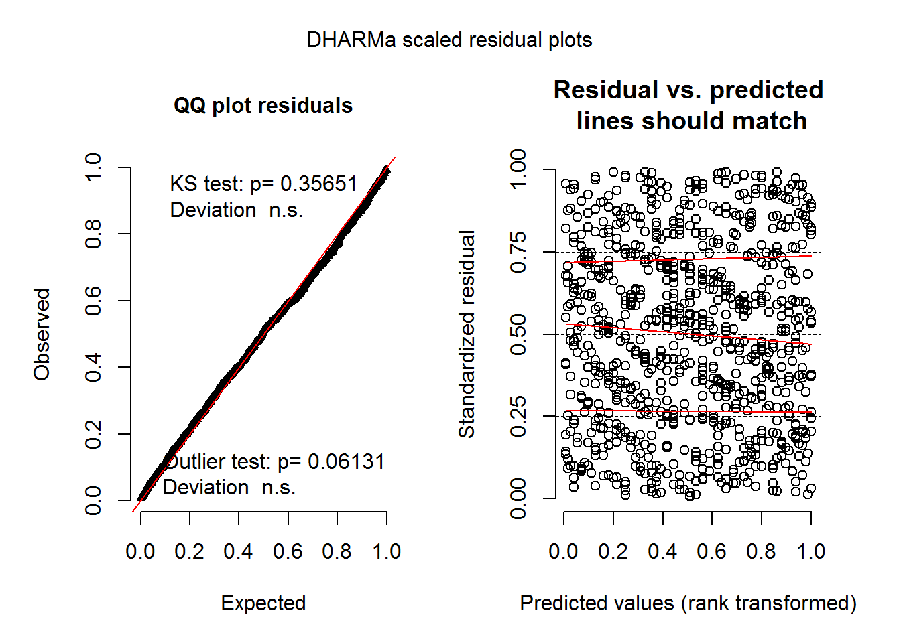
The Kolmogoriv-Smirnov test confirms that the assumption of normality of the residuals is NOT violated.
Checking for potential non-linearity and heteroscedasticity
Method suggested by Florian Hartig on Github to obtain predicted values
that are not conditioned on random effects (this prevents an artificial
correlation between residuals and predicted values in scatterplot)
newdata=SD_data_ASubmit
newdata$GROUPID = NA
pred_ASubmit <- predict(basicSRM_ASubmit, newdata)
Stdresiduals_ASubmit <- scale(resid(basicSRM_ASubmit))plot(pred_ASubmit, Stdresiduals_ASubmit)No noticeable issues with non-linearity, but maybe some concerns with heteroscedasticity given that variance seems smaller for predicted submissiveness ratings at lower levels than higher levels.
Checking Normality of Random Effects
Extracting Random Effects from Model
REs_basicSRM_ASubmit <- ranef(basicSRM_ASubmit)Histogram and Q-Q Plot for Male Actor Effects
hist(REs_basicSRM_ASubmit$cond$`GROUPID:MaleID`$MF, col = "lightblue",
freq = FALSE, ylim = c(0, .7), xlim = c(-4, 5),
xlab = "Men's Actor Effects for Ratings of Partner Submissiveness",
main = "Histogram for Men's Actor Effects")
lines(density(REs_basicSRM_ASubmit$cond$`GROUPID:MaleID`$MF))
box()qqnorm(scale(REs_basicSRM_ASubmit$cond$`GROUPID:MaleID`$MF), main = "Normal Quantile-Quantile Plot")
qqline(scale(REs_basicSRM_ASubmit$cond$`GROUPID:MaleID`$MF))The random effects for men’s actor effects seem pretty non-normal in shape (histogram suggests high levels of kurtosis).
Histogram and Q-Q Plot for Male Partner Effects
hist(REs_basicSRM_ASubmit$cond$`GROUPID:MaleID`$FM, col = "lightblue",
freq = FALSE, ylim = c(0, .7), xlim = c(-4, 5),
xlab = "Men's Partner Effects for Ratings of Partner Submissiveness",
main = "Histogram for Men's Partner Effects")
lines(density(REs_basicSRM_ASubmit$cond$`GROUPID:MaleID`$FM))
box()qqnorm(scale(REs_basicSRM_ASubmit$cond$`GROUPID:MaleID`$FM), main = "Normal Quantile-Quantile Plot")
qqline(scale(REs_basicSRM_ASubmit$cond$`GROUPID:MaleID`$FM))The random effects for men’s partner effects seem somewhat non-normal in shape.
Histogram and Q-Q Plot for Female Actor Effects
hist(REs_basicSRM_ASubmit$cond$`GROUPID:FemaleID`$FM, col = "lightblue",
freq = FALSE, ylim = c(0, .7), xlim = c(-4, 5),
xlab = "Women's Actor Effects for Ratings of Partner Submissiveness",
main = "Histogram for Women's Actor Effects")
lines(density(REs_basicSRM_ASubmit$cond$`GROUPID:FemaleID`$FM))
box()qqnorm(scale(REs_basicSRM_ASubmit$cond$`GROUPID:FemaleID`$FM), main = "Normal Quantile-Quantile Plot")
qqline(scale(REs_basicSRM_ASubmit$cond$`GROUPID:FemaleID`$FM))The random effects for women’s actor effects seem non-normal in shape.
Histogram and Q-Q Plot for Female Partner Effects
hist(REs_basicSRM_ASubmit$cond$`GROUPID:FemaleID`$MF, col = "lightblue",
freq = FALSE, ylim = c(0, .7), xlim = c(-4, 5),
xlab = "Women's Partner Effects for Ratings of Partner Submissiveness",
main = "Histogram for Women's Partner Effects")
lines(density(REs_basicSRM_ASubmit$cond$`GROUPID:FemaleID`$MF))
box()qqnorm(scale(REs_basicSRM_ASubmit$cond$`GROUPID:FemaleID`$MF), main = "Normal Quantile-Quantile Plot")
qqline(scale(REs_basicSRM_ASubmit$cond$`GROUPID:FemaleID`$MF))The random effects for women’s partner effects seem more-or-less normal in shape.
Histogram and Q-Q Plot for Man-to-Woman Relationship Effects
hist(REs_basicSRM_ASubmit$cond$`GROUPID:MaleID:FemaleID`$MF, col = "lightblue",
freq = FALSE, ylim = c(0, .7), xlim = c(-4, 5),
xlab = "Man-to-Woman Relationship Effects for Ratings of Partner Submissiveness",
main = "Histogram for Man-to-Woman Relationship Effects")
lines(density(REs_basicSRM_ASubmit$cond$`GROUPID:MaleID:FemaleID`$MF))
box()qqnorm(scale(REs_basicSRM_ASubmit$cond$`GROUPID:MaleID:FemaleID`$MF), main = "Normal Quantile-Quantile Plot")
qqline(scale(REs_basicSRM_ASubmit$cond$`GROUPID:MaleID:FemaleID`$MF))Q-Q plot suggests normality.
Histogram and Q-Q Plot for Woman-to-Man Relationship Effects
hist(REs_basicSRM_ASubmit$cond$`GROUPID:MaleID:FemaleID`$FM, col = "lightblue",
freq = FALSE, ylim = c(0, .7), xlim = c(-4, 5),
xlab = "Woman-to-Man Relationship Effects for Ratings of Partner Submissiveness",
main = "Histogram for Woman-to-Man Relationship Effects")
lines(density(REs_basicSRM_ASubmit$cond$`GROUPID:MaleID:FemaleID`$FM))
box()qqnorm(scale(REs_basicSRM_ASubmit$cond$`GROUPID:MaleID:FemaleID`$FM), main = "Normal Quantile-Quantile Plot")
qqline(scale(REs_basicSRM_ASubmit$cond$`GROUPID:MaleID:FemaleID`$FM))
Q-Q plot suggests normality.
Scatterplots for Pairs of Random Effects
Scatterplot of men’s actor and partner effects
plot(REs_basicSRM_ASubmit$cond$`GROUPID:MaleID`)Scatterplot of women’s actor and partner effects
plot(REs_basicSRM_ASubmit$cond$`GROUPID:FemaleID`)Scatterplot of men’s and women’s relationship effects
plot(REs_basicSRM_ASubmit$cond$`GROUPID:MaleID:FemaleID`)Getting Relative Percentage (these estimates are from SPSS)
SRMRelativePercentage(MActVar = 0.340777, FPartVar = 0.453336, MFRelVar = 0.845340,
FActVar = 0.300643, MPartVar = 0.492399, FMRelVar = 0.848326) Actor Partner Relation Plus Error Total Variance
Man-to-Woman Ratings 20.79 27.65 51.56 1.64
Woman-to-Man Ratings 18.32 30.00 51.68 1.64Basic SRM Analysis of Perceptions of Partner’s Arrogant-Calculating
Subsetting data
SD_data4$AArrCalc <- as.numeric(SD_data4$AArrCalc)
myvars <- c("GROUPID", "MaleID", "FemaleID", "MF", "FM",
"AArrCalc", "Agender", "GroupID_EC1", "GroupID_EC2",
"GroupID_EC3", "GroupID_EC4", "GroupID_EC5", "GroupID_EC6",
"GroupID_EC7", "GroupID_EC8", "GroupID_EC9", "GroupID_EC10",
"GroupID_EC11", "GroupID_EC12", "GroupID_EC13", "GroupID_EC14",
"GroupID_EC15", "GroupID_EC16", "GroupID_EC17", "GroupID_EC18",
"GroupID_EC19", "GroupID_EC20", "GroupID_EC21", "GroupID_EC22",
"GroupID_EC23", "GroupID_EC24", "GroupID_EC25", "GroupID_EC26",
"GroupID_EC27", "GroupID_EC28", "GroupID_EC29", "GroupID_EC30",
"GroupID_EC31", "GroupID_EC32")
SD_data_AArrCalc <- SD_data4[myvars]
SD_data_AArrCalc <- na.omit(SD_data_AArrCalc)Basic SRM Analysis
basicSRM_AArrCalc <- glmmTMB(AArrCalc ~ 1 + Agender*GroupID_EC1 + Agender*GroupID_EC2 + Agender*GroupID_EC3 + Agender*GroupID_EC4 +
Agender*GroupID_EC5 + Agender*GroupID_EC6 + Agender*GroupID_EC7 + Agender*GroupID_EC8 + Agender*GroupID_EC9 +
Agender*GroupID_EC10 + Agender*GroupID_EC11 + Agender*GroupID_EC12 + Agender*GroupID_EC13 + Agender*GroupID_EC14 +
Agender*GroupID_EC15 + Agender*GroupID_EC16 + Agender*GroupID_EC17 + Agender*GroupID_EC18 + Agender*GroupID_EC19 +
Agender*GroupID_EC20 + Agender*GroupID_EC21 + Agender*GroupID_EC22 + Agender*GroupID_EC23 + Agender*GroupID_EC24 +
Agender*GroupID_EC25 + Agender*GroupID_EC26 + Agender*GroupID_EC27 + Agender*GroupID_EC28 + Agender*GroupID_EC29 +
Agender*GroupID_EC30 + Agender*GroupID_EC31 + Agender*GroupID_EC32 + (0 + MF + FM|GROUPID:MaleID) + (0 + FM +
MF|GROUPID:FemaleID) + us(0 + MF + FM + 0| GROUPID:MaleID:FemaleID),data = SD_data_AArrCalc,
family = gaussian(link = "identity"), dispformula=~0, REML = TRUE,
verbose = FALSE, na.action = na.omit)summary(basicSRM_AArrCalc) Family: gaussian ( identity )
Formula:
AArrCalc ~ 1 + Agender * GroupID_EC1 + Agender * GroupID_EC2 +
Agender * GroupID_EC3 + Agender * GroupID_EC4 + Agender *
GroupID_EC5 + Agender * GroupID_EC6 + Agender * GroupID_EC7 +
Agender * GroupID_EC8 + Agender * GroupID_EC9 + Agender *
GroupID_EC10 + Agender * GroupID_EC11 + Agender * GroupID_EC12 +
Agender * GroupID_EC13 + Agender * GroupID_EC14 + Agender *
GroupID_EC15 + Agender * GroupID_EC16 + Agender * GroupID_EC17 +
Agender * GroupID_EC18 + Agender * GroupID_EC19 + Agender *
GroupID_EC20 + Agender * GroupID_EC21 + Agender * GroupID_EC22 +
Agender * GroupID_EC23 + Agender * GroupID_EC24 + Agender *
GroupID_EC25 + Agender * GroupID_EC26 + Agender * GroupID_EC27 +
Agender * GroupID_EC28 + Agender * GroupID_EC29 + Agender *
GroupID_EC30 + Agender * GroupID_EC31 + Agender * GroupID_EC32 +
(0 + MF + FM | GROUPID:MaleID) + (0 + FM + MF | GROUPID:FemaleID) +
us(0 + MF + FM + 0 | GROUPID:MaleID:FemaleID)
Dispersion: ~0
Data: SD_data_AArrCalc
AIC BIC logLik deviance df.resid
2444.7 2802.7 -1147.4 2294.7 865
Random effects:
Conditional model:
Groups Name Variance Std.Dev. Corr
GROUPID:MaleID MF 0.48619 0.6973
FM 0.07299 0.2702 -0.02
GROUPID:FemaleID FM 0.55512 0.7451
MF 0.04878 0.2209 0.03
GROUPID:MaleID:FemaleID MF 0.49295 0.7021
FM 0.51830 0.7199 0.03
Number of obs: 874, groups:
GROUPID:MaleID, 123; GROUPID:FemaleID, 121; GROUPID:MaleID:FemaleID, 455
Conditional model:
Estimate Std. Error z value Pr(>|z|)
(Intercept) 2.83209 0.05741 49.33 < 2e-16 ***
Agender 0.25902 0.05693 4.55 5.38e-06 ***
GroupID_EC1 -0.23209 0.26052 -0.89 0.37301
GroupID_EC2 -0.25763 0.29625 -0.87 0.38450
GroupID_EC3 0.05680 0.34904 0.16 0.87073
GroupID_EC4 0.05791 0.26052 0.22 0.82408
GroupID_EC5 0.62625 0.38379 1.63 0.10273
GroupID_EC6 0.50125 0.34904 1.44 0.15098
GroupID_EC7 0.02327 0.31701 0.07 0.94149
GroupID_EC8 -0.05084 0.29510 -0.17 0.86323
GroupID_EC9 0.19916 0.29510 0.67 0.49974
GroupID_EC10 0.02902 0.34904 0.08 0.93373
GroupID_EC11 0.19569 0.34904 0.56 0.57503
GroupID_EC12 0.29014 0.29617 0.98 0.32727
GroupID_EC13 -0.08209 0.34904 -0.24 0.81407
GroupID_EC14 -0.11519 0.29819 -0.39 0.69928
GroupID_EC15 -0.37375 0.38768 -0.96 0.33501
GroupID_EC16 0.84784 0.38420 2.21 0.02733 *
GroupID_EC17 0.30680 0.34904 0.88 0.37941
GroupID_EC18 0.10541 0.29510 0.36 0.72093
GroupID_EC19 -0.37289 0.35234 -1.06 0.28990
GroupID_EC20 -0.35986 0.34904 -1.03 0.30254
GroupID_EC21 0.23791 0.26052 0.91 0.36113
GroupID_EC22 0.10424 0.29405 0.35 0.72296
GroupID_EC23 -0.66021 0.29510 -2.24 0.02527 *
GroupID_EC24 -0.08209 0.29510 -0.28 0.78088
GroupID_EC25 -0.53280 0.29624 -1.80 0.07209 .
GroupID_EC26 -0.41542 0.34904 -1.19 0.23398
GroupID_EC27 0.14415 0.29624 0.49 0.62655
GroupID_EC28 -0.47098 0.34904 -1.35 0.17723
GroupID_EC29 -0.14459 0.29510 -0.49 0.62416
GroupID_EC30 0.05680 0.34904 0.16 0.87073
GroupID_EC31 0.30972 0.36175 0.86 0.39190
GroupID_EC32 0.16791 0.29510 0.57 0.56935
Agender:GroupID_EC1 -0.13902 0.25869 -0.54 0.59101
Agender:GroupID_EC2 0.16653 0.29393 0.57 0.57101
Agender:GroupID_EC3 0.35209 0.34581 1.02 0.30859
Agender:GroupID_EC4 -0.52902 0.25869 -2.04 0.04086 *
Agender:GroupID_EC5 -0.46735 0.38084 -1.23 0.21977
Agender:GroupID_EC6 -0.09235 0.34581 -0.27 0.78943
Agender:GroupID_EC7 0.13563 0.31484 0.43 0.66662
Agender:GroupID_EC8 -0.82152 0.29277 -2.81 0.00502 **
Agender:GroupID_EC9 -0.04027 0.29277 -0.14 0.89061
Agender:GroupID_EC10 -0.23124 0.34581 -0.67 0.50369
Agender:GroupID_EC11 -0.12013 0.34581 -0.35 0.72830
Agender:GroupID_EC12 0.26946 0.29384 0.92 0.35913
Agender:GroupID_EC13 0.10209 0.34581 0.30 0.76781
Agender:GroupID_EC14 -0.16342 0.29589 -0.55 0.58076
Agender:GroupID_EC15 -0.71735 0.38477 -1.86 0.06227 .
Agender:GroupID_EC16 0.14313 0.38127 0.38 0.70736
Agender:GroupID_EC17 0.10209 0.34581 0.30 0.76781
Agender:GroupID_EC18 -0.29027 0.29277 -0.99 0.32146
Agender:GroupID_EC19 0.39290 0.34913 1.13 0.26043
Agender:GroupID_EC20 -0.23124 0.34581 -0.67 0.50369
Agender:GroupID_EC21 0.53098 0.25869 2.05 0.04012 *
Agender:GroupID_EC22 -0.36269 0.29242 -1.24 0.21486
Agender:GroupID_EC23 0.56911 0.29277 1.94 0.05191 .
Agender:GroupID_EC24 0.27223 0.29277 0.93 0.35244
Agender:GroupID_EC25 0.16044 0.29393 0.55 0.58516
Agender:GroupID_EC26 0.32432 0.34581 0.94 0.34832
Agender:GroupID_EC27 0.13975 0.29391 0.48 0.63445
Agender:GroupID_EC28 0.10209 0.34581 0.30 0.76781
Agender:GroupID_EC29 0.17848 0.29277 0.61 0.54210
Agender:GroupID_EC30 0.57432 0.34581 1.66 0.09675 .
Agender:GroupID_EC31 -0.31958 0.35944 -0.89 0.37395
Agender:GroupID_EC32 -0.50902 0.29277 -1.74 0.08210 .
---
Signif. codes: 0 '***' 0.001 '**' 0.01 '*' 0.05 '.' 0.1 ' ' 1Checking Normality of Level-1 Residuals
Standard low tech way
hist(scale(resid(basicSRM_AArrCalc)),
freq = FALSE, ylim = c(0, .7), xlim = c(-4, 5),
main = "Basic SRM Analysis of Ratings of Partner's Arrogant-Calculating",
col = "lightblue",
xlab = "Standardized Residuals")
lines(density(scale(resid(basicSRM_AArrCalc))))
box()qqnorm(scale(resid(basicSRM_AArrCalc)), main = "Normal Quantile-Quantile Plot")
qqline(scale(resid(basicSRM_AArrCalc)))There are some minor problems with the normality of the residuals for AArrCalc.
More high tech way with DHARMa package (note that residual ~ pred plot is incorrect)
basicSRM_AArrCalc_simres <- simulateResiduals(basicSRM_AArrCalc)Model family was recognized or set as continuous, but duplicate values were detected in the response. Consider if you are fitting an appropriate model.system.time(sr.basicSRM_AArrCalc <- simulateResiduals(basicSRM_AArrCalc))Model family was recognized or set as continuous, but duplicate values were detected in the response. Consider if you are fitting an appropriate model. user system elapsed
0.97 0.02 1.00 plot(sr.basicSRM_AArrCalc)The Kolmogoriv-Smirnov test confirms that the assumption of normality of the residuals is NOT violated.
Checking for potential non-linearity and heteroscedasticity
Method suggested by Florian Hartig on Github to obtain predicted values
that are not conditioned on random effects (this prevents an artificial
correlation between residuals and predicted values in scatterplot)
newdata=SD_data_AArrCalc
newdata$GROUPID = NA
pred_AArrCalc <- predict(basicSRM_AArrCalc, newdata)
Stdresiduals_AArrCalc <- scale(resid(basicSRM_AArrCalc))plot(pred_AArrCalc, Stdresiduals_AArrCalc)No noticeable issues with non-linearity, but some concerns with heteroscedasticity given that variance seems smaller at lower levels of predicted Arrogant-Calculating than higher levels.
Checking Normality of Random Effects
Extracting Random Effects from Model
REs_basicSRM_AArrCalc <- ranef(basicSRM_AArrCalc)Histogram and Q-Q Plot for Male Actor Effects
hist(REs_basicSRM_AArrCalc$cond$`GROUPID:MaleID`$MF, col = "lightblue",
freq = FALSE, ylim = c(0, .7), xlim = c(-4, 5),
xlab = "Men's Actor Effects for Ratings of Partner Arrogant-Calculating",
main = "Histogram for Men's Actor Effects")
lines(density(REs_basicSRM_AArrCalc$cond$`GROUPID:MaleID`$MF))
box()qqnorm(scale(REs_basicSRM_AArrCalc$cond$`GROUPID:MaleID`$MF), main = "Normal Quantile-Quantile Plot")
qqline(scale(REs_basicSRM_AArrCalc$cond$`GROUPID:MaleID`$MF))The random effects for men’s actor effects seem rather non-normal in shape.
Histogram and Q-Q Plot for Male Partner Effects
hist(REs_basicSRM_AArrCalc$cond$`GROUPID:MaleID`$FM, col = "lightblue",
freq = FALSE, ylim = c(0, .7), xlim = c(-4, 5),
xlab = "Men's Partner Effects for Ratings of Partner Arrogant-Calculating",
main = "Histogram for Men's Partner Effects")
lines(density(REs_basicSRM_AArrCalc$cond$`GROUPID:MaleID`$FM))
box()qqnorm(scale(REs_basicSRM_AArrCalc$cond$`GROUPID:MaleID`$FM), main = "Normal Quantile-Quantile Plot")
qqline(scale(REs_basicSRM_AArrCalc$cond$`GROUPID:MaleID`$FM))The random effects for men’s partner effects seem pretty non-normal in shape (and histogram suggests high levels of kurtosis).
Histogram and Q-Q Plot for Female Actor Effects
hist(REs_basicSRM_AArrCalc$cond$`GROUPID:FemaleID`$FM, col = "lightblue",
freq = FALSE, ylim = c(0, .7), xlim = c(-4, 5),
xlab = "Women's Actor Effects for Ratings of Partner Arrogant-Calculating",
main = "Histogram for Women's Actor Effects")
lines(density(REs_basicSRM_AArrCalc$cond$`GROUPID:FemaleID`$FM))
box()qqnorm(scale(REs_basicSRM_AArrCalc$cond$`GROUPID:FemaleID`$FM), main = "Normal Quantile-Quantile Plot")
qqline(scale(REs_basicSRM_AArrCalc$cond$`GROUPID:FemaleID`$FM))
The random effects for women’s actor effects seem more-or-less normal in shape.
Histogram and Q-Q Plot for Female Partner Effects
hist(REs_basicSRM_AArrCalc$cond$`GROUPID:FemaleID`$MF, col = "lightblue",
freq = FALSE, ylim = c(0, .7), xlim = c(-4, 5),
xlab = "Women's Partner Effects for Ratings of Partner Arrogant-Calculating",
main = "Histogram for Women's Partner Effects")
lines(density(REs_basicSRM_AArrCalc$cond$`GROUPID:FemaleID`$MF))
box()qqnorm(scale(REs_basicSRM_AArrCalc$cond$`GROUPID:FemaleID`$MF), main = "Normal Quantile-Quantile Plot")
qqline(scale(REs_basicSRM_AArrCalc$cond$`GROUPID:FemaleID`$MF))The random effects for women’s partner effects seem pretty normal in shape (though histogram suggests high levels of kurtosis).
Histogram and Q-Q Plot for Man-to-Woman Relationship Effects
hist(REs_basicSRM_AArrCalc$cond$`GROUPID:MaleID:FemaleID`$MF, col = "lightblue",
freq = FALSE, ylim = c(0, .7), xlim = c(-4, 5),
xlab = "Man-to-Woman Relationship Effects for Ratings of Partner Arrogant-Calculating",
main = "Histogram for Man-to-Woman Relationship Effects")
lines(density(REs_basicSRM_AArrCalc$cond$`GROUPID:MaleID:FemaleID`$MF))
box()qqnorm(scale(REs_basicSRM_AArrCalc$cond$`GROUPID:MaleID:FemaleID`$MF), main = "Normal Quantile-Quantile Plot")
qqline(scale(REs_basicSRM_AArrCalc$cond$`GROUPID:MaleID:FemaleID`$MF))Q-Q plot suggests normality.
Histogram and Q-Q Plot for Woman-to-Man Relationship Effects
hist(REs_basicSRM_AArrCalc$cond$`GROUPID:MaleID:FemaleID`$FM, col = "lightblue",
freq = FALSE, ylim = c(0, .7), xlim = c(-4, 5),
xlab = "Woman-to-Man Relationship Effects for Ratings of Partner Arrogant-Calculating",
main = "Histogram for Woman-to-Man Relationship Effects")
lines(density(REs_basicSRM_AArrCalc$cond$`GROUPID:MaleID:FemaleID`$FM))
box()qqnorm(scale(REs_basicSRM_AArrCalc$cond$`GROUPID:MaleID:FemaleID`$FM), main = "Normal Quantile-Quantile Plot")
qqline(scale(REs_basicSRM_AArrCalc$cond$`GROUPID:MaleID:FemaleID`$FM))Q-Q plot suggests normality.
Scatterplots for Pairs of Random Effects
Scatterplot of men’s actor and partner effects
plot(REs_basicSRM_AArrCalc$cond$`GROUPID:MaleID`)Scatterplot of women’s actor and partner effects
plot(REs_basicSRM_AArrCalc$cond$`GROUPID:FemaleID`)Scatterplot of men’s and women’s relationship effects
plot(REs_basicSRM_AArrCalc$cond$`GROUPID:MaleID:FemaleID`)Getting Relative Percentage (these estimates are from SPSS)
SRMRelativePercentage(MActVar = 0.486187, FPartVar = 0.048775, MFRelVar = 0.492956,
FActVar = 0.555123, MPartVar = 0.072989, FMRelVar = 0.518301) Actor Partner Relation Plus Error Total Variance
Man-to-Woman Ratings 47.30 4.75 47.96 1.03
Woman-to-Man Ratings 48.42 6.37 45.21 1.15Basic SRM Analysis of Perceptions of Partner’s Warmth-Agreeableness
Subsetting data
SD_data4$AWarmAgree <- as.numeric(SD_data4$AWarmAgree)
myvars <- c("GROUPID", "MaleID", "FemaleID", "MF", "FM",
"AWarmAgree", "Agender", "GroupID_EC1", "GroupID_EC2",
"GroupID_EC3", "GroupID_EC4", "GroupID_EC5", "GroupID_EC6",
"GroupID_EC7", "GroupID_EC8", "GroupID_EC9", "GroupID_EC10",
"GroupID_EC11", "GroupID_EC12", "GroupID_EC13", "GroupID_EC14",
"GroupID_EC15", "GroupID_EC16", "GroupID_EC17", "GroupID_EC18",
"GroupID_EC19", "GroupID_EC20", "GroupID_EC21", "GroupID_EC22",
"GroupID_EC23", "GroupID_EC24", "GroupID_EC25", "GroupID_EC26",
"GroupID_EC27", "GroupID_EC28", "GroupID_EC29", "GroupID_EC30",
"GroupID_EC31", "GroupID_EC32")
SD_data_AWarmAgree <- SD_data4[myvars]
SD_data_AWarmAgree <- na.omit(SD_data_AWarmAgree)Basic SRM Analysis
basicSRM_AWarmAgree <- glmmTMB(AWarmAgree ~ 1 + Agender*GroupID_EC1 + Agender*GroupID_EC2 + Agender*GroupID_EC3 + Agender*GroupID_EC4 +
Agender*GroupID_EC5 + Agender*GroupID_EC6 + Agender*GroupID_EC7 + Agender*GroupID_EC8 + Agender*GroupID_EC9 +
Agender*GroupID_EC10 + Agender*GroupID_EC11 + Agender*GroupID_EC12 + Agender*GroupID_EC13 + Agender*GroupID_EC14 +
Agender*GroupID_EC15 + Agender*GroupID_EC16 + Agender*GroupID_EC17 + Agender*GroupID_EC18 + Agender*GroupID_EC19 +
Agender*GroupID_EC20 + Agender*GroupID_EC21 + Agender*GroupID_EC22 + Agender*GroupID_EC23 + Agender*GroupID_EC24 +
Agender*GroupID_EC25 + Agender*GroupID_EC26 + Agender*GroupID_EC27 + Agender*GroupID_EC28 + Agender*GroupID_EC29 +
Agender*GroupID_EC30 + Agender*GroupID_EC31 + Agender*GroupID_EC32 + (0 + MF + FM|GROUPID:MaleID) + (0 + FM +
MF|GROUPID:FemaleID) + us(0 + MF + FM + 0| GROUPID:MaleID:FemaleID),data = SD_data_AWarmAgree,
family = gaussian(link = "identity"), dispformula=~0, REML = TRUE,
verbose = FALSE, na.action = na.omit)summary(basicSRM_AWarmAgree) Family: gaussian ( identity )
Formula:
AWarmAgree ~ 1 + Agender * GroupID_EC1 + Agender * GroupID_EC2 +
Agender * GroupID_EC3 + Agender * GroupID_EC4 + Agender *
GroupID_EC5 + Agender * GroupID_EC6 + Agender * GroupID_EC7 +
Agender * GroupID_EC8 + Agender * GroupID_EC9 + Agender *
GroupID_EC10 + Agender * GroupID_EC11 + Agender * GroupID_EC12 +
Agender * GroupID_EC13 + Agender * GroupID_EC14 + Agender *
GroupID_EC15 + Agender * GroupID_EC16 + Agender * GroupID_EC17 +
Agender * GroupID_EC18 + Agender * GroupID_EC19 + Agender *
GroupID_EC20 + Agender * GroupID_EC21 + Agender * GroupID_EC22 +
Agender * GroupID_EC23 + Agender * GroupID_EC24 + Agender *
GroupID_EC25 + Agender * GroupID_EC26 + Agender * GroupID_EC27 +
Agender * GroupID_EC28 + Agender * GroupID_EC29 + Agender *
GroupID_EC30 + Agender * GroupID_EC31 + Agender * GroupID_EC32 +
(0 + MF + FM | GROUPID:MaleID) + (0 + FM + MF | GROUPID:FemaleID) +
us(0 + MF + FM + 0 | GROUPID:MaleID:FemaleID)
Dispersion: ~0
Data: SD_data_AWarmAgree
AIC BIC logLik deviance df.resid
2545.1 2903.2 -1197.6 2395.1 866
Random effects:
Conditional model:
Groups Name Variance Std.Dev. Corr
GROUPID:MaleID MF 0.38020 0.6166
FM 0.04792 0.2189 0.23
GROUPID:FemaleID FM 0.45767 0.6765
MF 0.14412 0.3796 0.00
GROUPID:MaleID:FemaleID MF 0.39312 0.6270
FM 0.87686 0.9364 0.17
Number of obs: 875, groups:
GROUPID:MaleID, 123; GROUPID:FemaleID, 121; GROUPID:MaleID:FemaleID, 455
Conditional model:
Estimate Std. Error z value Pr(>|z|)
(Intercept) 4.914583 0.058200 84.44 < 2e-16 ***
Agender 0.163315 0.053645 3.04 0.00233 **
GroupID_EC1 0.245417 0.261636 0.94 0.34824
GroupID_EC2 0.163542 0.298359 0.55 0.58360
GroupID_EC3 -0.636805 0.356530 -1.79 0.07408 .
GroupID_EC4 0.346394 0.262027 1.32 0.18617
GroupID_EC5 -0.377523 0.384023 -0.98 0.32557
GroupID_EC6 0.140973 0.356530 0.40 0.69255
GroupID_EC7 -0.082706 0.319799 -0.26 0.79593
GroupID_EC8 -0.195833 0.298359 -0.66 0.51159
GroupID_EC9 0.493435 0.299232 1.65 0.09915 .
GroupID_EC10 0.390973 0.356530 1.10 0.27281
GroupID_EC11 -0.247916 0.356530 -0.70 0.48683
GroupID_EC12 -0.164583 0.298359 -0.55 0.58121
GroupID_EC13 0.450737 0.359127 1.26 0.20945
GroupID_EC14 -0.109495 0.300056 -0.36 0.71518
GroupID_EC15 -0.096255 0.395864 -0.24 0.80789
GroupID_EC16 0.302498 0.382977 0.79 0.42961
GroupID_EC17 -0.220138 0.356530 -0.62 0.53694
GroupID_EC18 -0.195833 0.298359 -0.66 0.51159
GroupID_EC19 -0.525694 0.356530 -1.47 0.14035
GroupID_EC20 -0.497916 0.356530 -1.40 0.16255
GroupID_EC21 0.035417 0.261636 0.14 0.89232
GroupID_EC22 -0.011195 0.287249 -0.04 0.96891
GroupID_EC23 0.116667 0.298359 0.39 0.69578
GroupID_EC24 0.319792 0.298359 1.07 0.28379
GroupID_EC25 -0.461458 0.298359 -1.55 0.12195
GroupID_EC26 0.640973 0.356530 1.80 0.07221 .
GroupID_EC27 0.085417 0.298359 0.29 0.77466
GroupID_EC28 0.140973 0.356530 0.40 0.69255
GroupID_EC29 -0.383333 0.298359 -1.28 0.19886
GroupID_EC30 -0.107517 0.370570 -0.29 0.77171
GroupID_EC31 0.063557 0.357865 0.18 0.85904
GroupID_EC32 0.319792 0.298359 1.07 0.28379
Agender:GroupID_EC1 0.076685 0.241704 0.32 0.75104
Agender:GroupID_EC2 0.039810 0.274708 0.14 0.88478
Agender:GroupID_EC3 0.447796 0.326616 1.37 0.17037
Agender:GroupID_EC4 -0.062338 0.242125 -0.26 0.79682
Agender:GroupID_EC5 0.040411 0.356406 0.11 0.90973
Agender:GroupID_EC6 -0.441093 0.326616 -1.35 0.17686
Agender:GroupID_EC7 0.161059 0.297845 0.54 0.58868
Agender:GroupID_EC8 -0.163315 0.274708 -0.59 0.55218
Agender:GroupID_EC9 -0.005297 0.275654 -0.02 0.98467
Agender:GroupID_EC10 -0.246648 0.326616 -0.76 0.45015
Agender:GroupID_EC11 -0.441093 0.326616 -1.35 0.17686
Agender:GroupID_EC12 -0.132065 0.274708 -0.48 0.63070
Agender:GroupID_EC13 0.257561 0.329448 0.78 0.43434
Agender:GroupID_EC14 0.344097 0.276557 1.24 0.21342
Agender:GroupID_EC15 -0.148309 0.369177 -0.40 0.68788
Agender:GroupID_EC16 0.275988 0.355295 0.78 0.43728
Agender:GroupID_EC17 -0.191093 0.326616 -0.59 0.55850
Agender:GroupID_EC18 0.055435 0.274708 0.20 0.84008
Agender:GroupID_EC19 -0.052204 0.326616 -0.16 0.87301
Agender:GroupID_EC20 0.142241 0.326616 0.44 0.66320
Agender:GroupID_EC21 -0.393315 0.241704 -1.63 0.10368
Agender:GroupID_EC22 -0.319927 0.269224 -1.19 0.23470
Agender:GroupID_EC23 -0.132065 0.274708 -0.48 0.63070
Agender:GroupID_EC24 -0.022690 0.274708 -0.08 0.93417
Agender:GroupID_EC25 0.071060 0.274708 0.26 0.79589
Agender:GroupID_EC26 -0.552204 0.326616 -1.69 0.09090 .
Agender:GroupID_EC27 -0.132065 0.274708 -0.48 0.63070
Agender:GroupID_EC28 -0.052204 0.326616 -0.16 0.87301
Agender:GroupID_EC29 0.430435 0.274708 1.57 0.11714
Agender:GroupID_EC30 0.862952 0.341856 2.52 0.01159 *
Agender:GroupID_EC31 0.072565 0.335807 0.22 0.82892
Agender:GroupID_EC32 -0.210190 0.274708 -0.77 0.44419
---
Signif. codes: 0 '***' 0.001 '**' 0.01 '*' 0.05 '.' 0.1 ' ' 1Checking Normality of Level-1 Residuals
Standard low tech way
hist(scale(resid(basicSRM_AWarmAgree)),
freq = FALSE, ylim = c(0, .7), xlim = c(-4, 5),
main = "Basic SRM Analysis of Ratings of Partner's Warmth-Agreeableness",
col = "lightblue",
xlab = "Standardized Residuals")
lines(density(scale(resid(basicSRM_AWarmAgree))))
box()qqnorm(scale(resid(basicSRM_AWarmAgree)), main = "Normal Quantile-Quantile Plot")
qqline(scale(resid(basicSRM_AWarmAgree)))
Residuals appear normal in shape.
More high tech way with DHARMa package (note that residual ~ pred plot is incorrect)
basicSRM_AWarmAgree_simres <- simulateResiduals(basicSRM_AWarmAgree)Model family was recognized or set as continuous, but duplicate values were detected in the response. Consider if you are fitting an appropriate model.system.time(sr.basicSRM_AWarmAgree <- simulateResiduals(basicSRM_AWarmAgree))Model family was recognized or set as continuous, but duplicate values were detected in the response. Consider if you are fitting an appropriate model. user system elapsed
0.97 0.00 0.97 plot(sr.basicSRM_AWarmAgree)The Kolmogoriv-Smirnov test confirms that the assumption of normality of the residuals is NOT violated.
Checking for potential non-linearity and heteroscedasticity
Method suggested by Florian Hartig on Github to obtain predicted values
that are not conditioned on random effects (this prevents an artificial
correlation between residuals and predicted values in scatterplot)
newdata=SD_data_AWarmAgree
newdata$GROUPID = NA
pred_AWarmAgree <- predict(basicSRM_AWarmAgree, newdata)
Stdresiduals_AWarmAgree <- scale(resid(basicSRM_AWarmAgree))plot(pred_AWarmAgree, Stdresiduals_AWarmAgree)No noticeable issues with non-linearity, but there may be some issues with heteroscedasticity.
Checking Normality of Random Effects
Extracting Random Effects from Model
REs_basicSRM_AWarmAgree <- ranef(basicSRM_AWarmAgree)Histogram and Q-Q Plot for Male Actor Effects
hist(REs_basicSRM_AWarmAgree$cond$`GROUPID:MaleID`$MF, col = "lightblue",
freq = FALSE, ylim = c(0, .7), xlim = c(-4, 5),
xlab = "Men's Actor Effects for Ratings of Partner Warmth-Agreeableness",
main = "Histogram for Men's Actor Effects")
lines(density(REs_basicSRM_AWarmAgree$cond$`GROUPID:MaleID`$MF))
box()qqnorm(scale(REs_basicSRM_AWarmAgree$cond$`GROUPID:MaleID`$MF), main = "Normal Quantile-Quantile Plot")
qqline(scale(REs_basicSRM_AWarmAgree$cond$`GROUPID:MaleID`$MF))
The random effects for men’s actor effects seem pretty normal in shape.
Histogram and Q-Q Plot for Male Partner Effects
hist(REs_basicSRM_AWarmAgree$cond$`GROUPID:MaleID`$FM, col = "lightblue",
freq = FALSE, ylim = c(0, .7), xlim = c(-4, 5),
xlab = "Men's Partner Effects for Ratings of Partner Warmth-Agreeableness",
main = "Histogram for Men's Partner Effects")
lines(density(REs_basicSRM_AWarmAgree$cond$`GROUPID:MaleID`$FM))
box()qqnorm(scale(REs_basicSRM_AWarmAgree$cond$`GROUPID:MaleID`$FM), main = "Normal Quantile-Quantile Plot")
qqline(scale(REs_basicSRM_AWarmAgree$cond$`GROUPID:MaleID`$FM))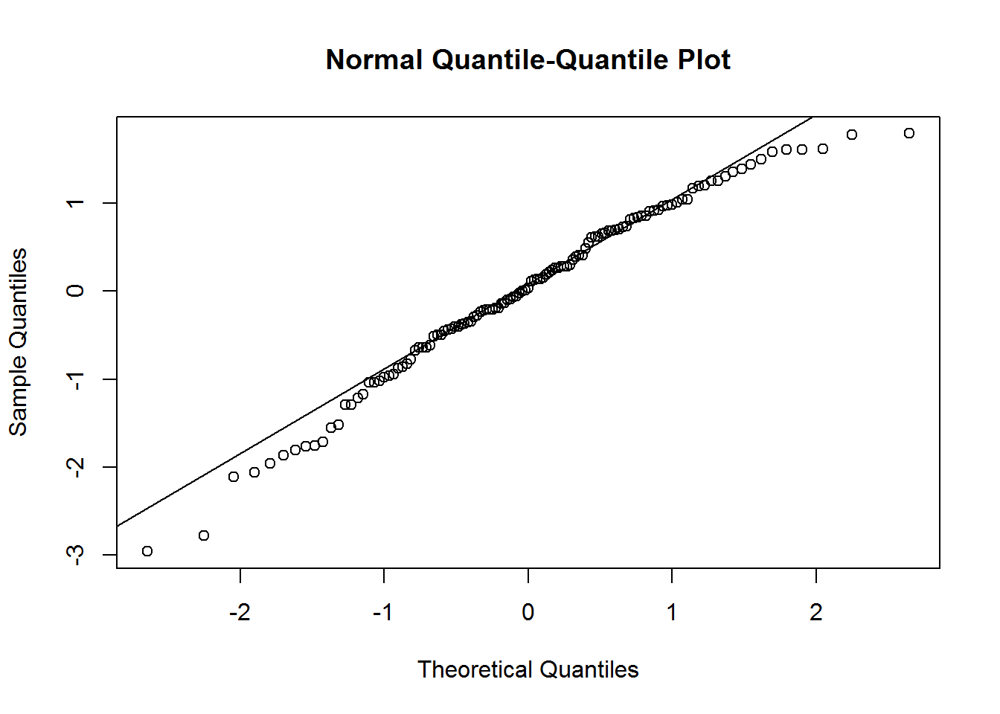
The random effects for men’s partner effects seem rather non-normal in shape.
Histogram and Q-Q Plot for Female Actor Effects
hist(REs_basicSRM_AWarmAgree$cond$`GROUPID:FemaleID`$FM, col = "lightblue",
freq = FALSE, ylim = c(0, .7), xlim = c(-4, 5),
xlab = "Women's Actor Effects for Ratings of Partner Warmth-Agreeableness",
main = "Histogram for Women's Actor Effects")
lines(density(REs_basicSRM_AWarmAgree$cond$`GROUPID:FemaleID`$FM))
box()
qqnorm(scale(REs_basicSRM_AWarmAgree$cond$`GROUPID:FemaleID`$FM), main = "Normal Quantile-Quantile Plot")
qqline(scale(REs_basicSRM_AWarmAgree$cond$`GROUPID:FemaleID`$FM))The random effects for women’s actor effects seem more-or-less normal in shape.
Histogram and Q-Q Plot for Female Partner Effects
hist(REs_basicSRM_AWarmAgree$cond$`GROUPID:FemaleID`$MF, col = "lightblue",
freq = FALSE, ylim = c(0, .7), xlim = c(-4, 5),
xlab = "Women's Partner Effects for Ratings of Partner Warmth-Agreeableness",
main = "Histogram for Women's Partner Effects")
lines(density(REs_basicSRM_AWarmAgree$cond$`GROUPID:FemaleID`$MF))
box()qqnorm(scale(REs_basicSRM_AWarmAgree$cond$`GROUPID:FemaleID`$MF), main = "Normal Quantile-Quantile Plot")
qqline(scale(REs_basicSRM_AWarmAgree$cond$`GROUPID:FemaleID`$MF))The random effects for women’s partner effects seem somewhat non-normal in shape.
Histogram and Q-Q Plot for Man-to-Woman Relationship Effects
hist(REs_basicSRM_AWarmAgree$cond$`GROUPID:MaleID:FemaleID`$MF, col = "lightblue",
freq = FALSE, ylim = c(0, .7), xlim = c(-4, 5),
xlab = "Man-to-Woman Relationship Effects for Ratings of Partner Warmth-Agreeableness",
main = "Histogram for Man-to-Woman Relationship Effects")
lines(density(REs_basicSRM_AWarmAgree$cond$`GROUPID:MaleID:FemaleID`$MF))
box()qqnorm(scale(REs_basicSRM_AWarmAgree$cond$`GROUPID:MaleID:FemaleID`$MF), main = "Normal Quantile-Quantile Plot")
qqline(scale(REs_basicSRM_AWarmAgree$cond$`GROUPID:MaleID:FemaleID`$MF))Q-Q plot suggests normality.
Histogram and Q-Q Plot for Woman-to-Man Relationship Effects
hist(REs_basicSRM_AWarmAgree$cond$`GROUPID:MaleID:FemaleID`$FM, col = "lightblue",
freq = FALSE, ylim = c(0, .7), xlim = c(-4, 5),
xlab = "Woman-to-Man Relationship Effects for Ratings of Partner Warmth-Agreeableness",
main = "Histogram for Woman-to-Man Relationship Effects")
lines(density(REs_basicSRM_AWarmAgree$cond$`GROUPID:MaleID:FemaleID`$FM))
box()qqnorm(scale(REs_basicSRM_AWarmAgree$cond$`GROUPID:MaleID:FemaleID`$FM), main = "Normal Quantile-Quantile Plot")
qqline(scale(REs_basicSRM_AWarmAgree$cond$`GROUPID:MaleID:FemaleID`$FM))Q-Q plot suggests some non-normality.
Scatterplots for Pairs of Random Effects
Scatterplot of men’s actor and partner effects
plot(REs_basicSRM_AWarmAgree$cond$`GROUPID:MaleID`)Scatterplot of women’s actor and partner effects
plot(REs_basicSRM_AWarmAgree$cond$`GROUPID:FemaleID`)Scatterplot of men’s and women’s relationship effects
plot(REs_basicSRM_AWarmAgree$cond$`GROUPID:MaleID:FemaleID`)Getting Relative Percentage (these estimates are from SPSS)
SRMRelativePercentage(MActVar = 0.380198, FPartVar = 0.805482, MFRelVar = 0.393121,
FActVar = 0.457677, MPartVar = 0.047922, FMRelVar = 0.876874) Actor Partner Relation Plus Error Total Variance
Man-to-Woman Ratings 24.08 51.02 24.90 1.58
Woman-to-Man Ratings 33.11 3.47 63.43 1.38Basic SRM Analysis of Perceptions of Partner’s Gregarious-Extraversion
Subsetting data
SD_data4$AGregExtra <- as.numeric(SD_data4$AGregExtra)
myvars <- c("GROUPID", "MaleID", "FemaleID", "MF", "FM",
"AGregExtra", "Agender", "GroupID_EC1", "GroupID_EC2",
"GroupID_EC3", "GroupID_EC4", "GroupID_EC5", "GroupID_EC6",
"GroupID_EC7", "GroupID_EC8", "GroupID_EC9", "GroupID_EC10",
"GroupID_EC11", "GroupID_EC12", "GroupID_EC13", "GroupID_EC14",
"GroupID_EC15", "GroupID_EC16", "GroupID_EC17", "GroupID_EC18",
"GroupID_EC19", "GroupID_EC20", "GroupID_EC21", "GroupID_EC22",
"GroupID_EC23", "GroupID_EC24", "GroupID_EC25", "GroupID_EC26",
"GroupID_EC27", "GroupID_EC28", "GroupID_EC29", "GroupID_EC30",
"GroupID_EC31", "GroupID_EC32")
SD_data_AGregExtra <- SD_data4[myvars]
SD_data_AGregExtra <- na.omit(SD_data_AGregExtra)Basic SRM Analysis
basicSRM_AGregExtra <- glmmTMB(AGregExtra ~ 1 + Agender*GroupID_EC1 + Agender*GroupID_EC2 + Agender*GroupID_EC3 + Agender*GroupID_EC4 +
Agender*GroupID_EC5 + Agender*GroupID_EC6 + Agender*GroupID_EC7 + Agender*GroupID_EC8 + Agender*GroupID_EC9 +
Agender*GroupID_EC10 + Agender*GroupID_EC11 + Agender*GroupID_EC12 + Agender*GroupID_EC13 + Agender*GroupID_EC14 +
Agender*GroupID_EC15 + Agender*GroupID_EC16 + Agender*GroupID_EC17 + Agender*GroupID_EC18 + Agender*GroupID_EC19 +
Agender*GroupID_EC20 + Agender*GroupID_EC21 + Agender*GroupID_EC22 + Agender*GroupID_EC23 + Agender*GroupID_EC24 +
Agender*GroupID_EC25 + Agender*GroupID_EC26 + Agender*GroupID_EC27 + Agender*GroupID_EC28 + Agender*GroupID_EC29 +
Agender*GroupID_EC30 + Agender*GroupID_EC31 + Agender*GroupID_EC32 + (0 + MF + FM|GROUPID:MaleID) + (0 + FM +
MF|GROUPID:FemaleID) + us(0 + MF + FM + 0| GROUPID:MaleID:FemaleID),data = SD_data_AGregExtra,
family = gaussian(link = "identity"), dispformula=~0, REML = TRUE,
verbose = FALSE, na.action = na.omit)Warning in fitTMB(TMBStruc): Model convergence problem; false convergence (8).
See vignette('troubleshooting')glmmTMB issues a false convergence warning (8), but same model runs fine in SPSS, with the same deviance value and virtually identical parameter estimates.
summary(basicSRM_AGregExtra) Family: gaussian ( identity )
Formula:
AGregExtra ~ 1 + Agender * GroupID_EC1 + Agender * GroupID_EC2 +
Agender * GroupID_EC3 + Agender * GroupID_EC4 + Agender *
GroupID_EC5 + Agender * GroupID_EC6 + Agender * GroupID_EC7 +
Agender * GroupID_EC8 + Agender * GroupID_EC9 + Agender *
GroupID_EC10 + Agender * GroupID_EC11 + Agender * GroupID_EC12 +
Agender * GroupID_EC13 + Agender * GroupID_EC14 + Agender *
GroupID_EC15 + Agender * GroupID_EC16 + Agender * GroupID_EC17 +
Agender * GroupID_EC18 + Agender * GroupID_EC19 + Agender *
GroupID_EC20 + Agender * GroupID_EC21 + Agender * GroupID_EC22 +
Agender * GroupID_EC23 + Agender * GroupID_EC24 + Agender *
GroupID_EC25 + Agender * GroupID_EC26 + Agender * GroupID_EC27 +
Agender * GroupID_EC28 + Agender * GroupID_EC29 + Agender *
GroupID_EC30 + Agender * GroupID_EC31 + Agender * GroupID_EC32 +
(0 + MF + FM | GROUPID:MaleID) + (0 + FM + MF | GROUPID:FemaleID) +
us(0 + MF + FM + 0 | GROUPID:MaleID:FemaleID)
Dispersion: ~0
Data: SD_data_AGregExtra
AIC BIC logLik deviance df.resid
2659.0 3017.4 -1254.5 2509.0 869
Random effects:
Conditional model:
Groups Name Variance Std.Dev. Corr
GROUPID:MaleID MF 0.1847 0.4298
FM 0.4585 0.6771 0.13
GROUPID:FemaleID FM 0.2005 0.4478
MF 0.3091 0.5560 -0.02
GROUPID:MaleID:FemaleID MF 0.5013 0.7080
FM 0.8480 0.9208 0.06
Number of obs: 878, groups:
GROUPID:MaleID, 123; GROUPID:FemaleID, 121; GROUPID:MaleID:FemaleID, 455
Conditional model:
Estimate Std. Error z value Pr(>|z|)
(Intercept) 5.1960243 0.0598538 86.81 < 2e-16 ***
Agender 0.0003964 0.0565683 0.01 0.99441
GroupID_EC1 0.0339757 0.2725178 0.12 0.90078
GroupID_EC2 -0.1335243 0.3100640 -0.43 0.66673
GroupID_EC3 -0.3349132 0.3692313 -0.91 0.36438
GroupID_EC4 0.5739757 0.2725178 2.11 0.03519 *
GroupID_EC5 -0.5348047 0.3876843 -1.38 0.16775
GroupID_EC6 0.1095312 0.3692313 0.30 0.76674
GroupID_EC7 -0.0481564 0.3233609 -0.15 0.88161
GroupID_EC8 -0.0866493 0.3100640 -0.28 0.77989
GroupID_EC9 0.3196007 0.3100640 1.03 0.30265
GroupID_EC10 0.3317535 0.3692313 0.90 0.36892
GroupID_EC11 -0.1076164 0.3723550 -0.29 0.77257
GroupID_EC12 -0.1335243 0.3100640 -0.43 0.66673
GroupID_EC13 0.2761979 0.3692313 0.75 0.45444
GroupID_EC14 -0.0241493 0.3100640 -0.08 0.93792
GroupID_EC15 -0.0056574 0.3946434 -0.01 0.98856
GroupID_EC16 0.3637522 0.3873448 0.94 0.34768
GroupID_EC17 -0.0015799 0.3692313 0.00 0.99659
GroupID_EC18 -0.3522743 0.3100640 -1.14 0.25590
GroupID_EC19 -0.0571354 0.3692313 -0.15 0.87703
GroupID_EC20 -0.3349132 0.3692313 -0.91 0.36438
GroupID_EC21 -0.1060243 0.2725178 -0.39 0.69724
GroupID_EC22 -0.3222017 0.2882434 -1.12 0.26365
GroupID_EC23 0.1789757 0.3100640 0.58 0.56379
GroupID_EC24 0.3937198 0.3111343 1.27 0.20572
GroupID_EC25 -0.6960243 0.3100640 -2.24 0.02478 *
GroupID_EC26 -0.0849132 0.3692313 -0.23 0.81811
GroupID_EC27 0.1614621 0.3118428 0.52 0.60462
GroupID_EC28 -0.1960243 0.3692313 -0.53 0.59549
GroupID_EC29 0.0071007 0.3100640 0.02 0.98173
GroupID_EC30 -0.0015799 0.3692313 0.00 0.99659
GroupID_EC31 -0.0150805 0.3509154 -0.04 0.96572
GroupID_EC32 0.2727257 0.3100640 0.88 0.37909
Agender:GroupID_EC1 0.3696036 0.2572203 1.44 0.15074
Agender:GroupID_EC2 0.7808536 0.2926119 2.67 0.00762 **
Agender:GroupID_EC3 -0.0281741 0.3483673 -0.08 0.93554
Agender:GroupID_EC4 -0.0103964 0.2572203 -0.04 0.96776
Agender:GroupID_EC5 0.0497121 0.3678719 0.14 0.89251
Agender:GroupID_EC6 -0.1948408 0.3483673 -0.56 0.57596
Agender:GroupID_EC7 -0.1482642 0.3066688 -0.48 0.62876
Agender:GroupID_EC8 -0.2035214 0.2926119 -0.70 0.48672
Agender:GroupID_EC9 0.0152286 0.2926119 0.05 0.95849
Agender:GroupID_EC10 -0.4170630 0.3483673 -1.20 0.23123
Agender:GroupID_EC11 -0.0786551 0.3516733 -0.22 0.82302
Agender:GroupID_EC12 -0.0316464 0.2926119 -0.11 0.91388
Agender:GroupID_EC13 -0.0837297 0.3483673 -0.24 0.81006
Agender:GroupID_EC14 0.2652286 0.2926119 0.91 0.36471
Agender:GroupID_EC15 -0.4685410 0.3751926 -1.25 0.21174
Agender:GroupID_EC16 -0.1628421 0.3675123 -0.44 0.65770
Agender:GroupID_EC17 0.0273814 0.3483673 0.08 0.93735
Agender:GroupID_EC18 -0.0941464 0.2926119 -0.32 0.74765
Agender:GroupID_EC19 0.0829370 0.3483673 0.24 0.81182
Agender:GroupID_EC20 0.2496036 0.3483673 0.72 0.47369
Agender:GroupID_EC21 0.2096036 0.2572203 0.81 0.41514
Agender:GroupID_EC22 -0.2065738 0.2738257 -0.75 0.45061
Agender:GroupID_EC23 -0.1253964 0.2926119 -0.43 0.66826
Agender:GroupID_EC24 0.1205978 0.2937448 0.41 0.68140
Agender:GroupID_EC25 0.0621036 0.2926119 0.21 0.83192
Agender:GroupID_EC26 -0.5003964 0.3483673 -1.44 0.15089
Agender:GroupID_EC27 0.1421173 0.2945003 0.48 0.62940
Agender:GroupID_EC28 0.2218259 0.3483673 0.64 0.52428
Agender:GroupID_EC29 0.4214786 0.2926119 1.44 0.14975
Agender:GroupID_EC30 0.6384925 0.3483673 1.83 0.06683 .
Agender:GroupID_EC31 -0.6899829 0.3361422 -2.05 0.04011 *
Agender:GroupID_EC32 0.0933536 0.2926119 0.32 0.74970
---
Signif. codes: 0 '***' 0.001 '**' 0.01 '*' 0.05 '.' 0.1 ' ' 1Checking Normality of Level-1 Residuals
Standard low tech way
hist(scale(resid(basicSRM_AGregExtra)),
freq = FALSE, ylim = c(0, .7), xlim = c(-4, 5),
main = "Basic SRM Analysis of Ratings of Partner's Gregarious-Extraversion",
col = "lightblue",
xlab = "Standardized Residuals")
lines(density(scale(resid(basicSRM_AGregExtra))))
box()qqnorm(scale(resid(basicSRM_AGregExtra)), main = "Normal Quantile-Quantile Plot")
qqline(scale(resid(basicSRM_AGregExtra)))Residuals appear normal in shape.
More high tech way with DHARMa package (note that residual ~ pred plot is incorrect)
basicSRM_AGregExtra_simres <- simulateResiduals(basicSRM_AGregExtra)Model family was recognized or set as continuous, but duplicate values were detected in the response. Consider if you are fitting an appropriate model.system.time(sr.basicSRM_AGregExtra <- simulateResiduals(basicSRM_AGregExtra))Model family was recognized or set as continuous, but duplicate values were detected in the response. Consider if you are fitting an appropriate model. user system elapsed
1 0 1 plot(sr.basicSRM_AGregExtra)In contrast to what was expected from the qq-plot and histogram, the Kolmogoriv-Smirnov test indicates that the assumption of normality of the residuals is violated.
Checking for potential non-linearity and heteroscedasticity
Method suggested by Florian Hartig on Github to obtain predicted values
that are not conditioned on random effects (this prevents an artificial
correlation between residuals and predicted values in scatterplot)
newdata=SD_data_AGregExtra
newdata$GROUPID = NA
pred_AGregExtra <- predict(basicSRM_AGregExtra, newdata)
Stdresiduals_AGregExtra <- scale(resid(basicSRM_AGregExtra))plot(pred_AGregExtra, Stdresiduals_AGregExtra)No noticeable issues with non-linearity or heteroscedasticity.
Checking Normality of Random Effects
Extracting Random Effects from Model
REs_basicSRM_AGregExtra <- ranef(basicSRM_AGregExtra)Histogram and Q-Q Plot for Male Actor Effects
hist(REs_basicSRM_AGregExtra$cond$`GROUPID:MaleID`$MF, col = "lightblue",
freq = FALSE, ylim = c(0, .7), xlim = c(-4, 5),
xlab = "Men's Actor Effects for Ratings of Partner Gregarious-Extraversion",
main = "Histogram for Men's Actor Effects")
lines(density(REs_basicSRM_AGregExtra$cond$`GROUPID:MaleID`$MF))
box()qqnorm(scale(REs_basicSRM_AGregExtra$cond$`GROUPID:MaleID`$MF), main = "Normal Quantile-Quantile Plot")
qqline(scale(REs_basicSRM_AGregExtra$cond$`GROUPID:MaleID`$MF))The random effects for men’s actor effects seem pretty normal in shape (although the histogram suggests high levels of kurtosis).
Histogram and Q-Q Plot for Male Partner Effects
hist(REs_basicSRM_AGregExtra$cond$`GROUPID:MaleID`$FM, col = "lightblue",
freq = FALSE, ylim = c(0, .7), xlim = c(-4, 5),
xlab = "Men's Partner Effects for Ratings of Partner Gregarious-Extraversion",
main = "Histogram for Men's Partner Effects")
lines(density(REs_basicSRM_AGregExtra$cond$`GROUPID:MaleID`$FM))
box()qqnorm(scale(REs_basicSRM_AGregExtra$cond$`GROUPID:MaleID`$FM), main = "Normal Quantile-Quantile Plot")
qqline(scale(REs_basicSRM_AGregExtra$cond$`GROUPID:MaleID`$FM))The random effects for men’s partner effects seem more-or-less normal in shape.
Histogram and Q-Q Plot for Female Actor Effects
hist(REs_basicSRM_AGregExtra$cond$`GROUPID:FemaleID`$FM, col = "lightblue",
freq = FALSE, ylim = c(0, .7), xlim = c(-4, 5),
xlab = "Women's Actor Effects for Ratings of Partner Gregarious-Extraversion",
main = "Histogram for Women's Actor Effects")
lines(density(REs_basicSRM_AGregExtra$cond$`GROUPID:FemaleID`$FM))
box()qqnorm(scale(REs_basicSRM_AGregExtra$cond$`GROUPID:FemaleID`$FM), main = "Normal Quantile-Quantile Plot")
qqline(scale(REs_basicSRM_AGregExtra$cond$`GROUPID:FemaleID`$FM))The random effects for women’s actor effects seem normal in shape (although the histogram suggests high levels of kurtosis).
Histogram and Q-Q Plot for Female Partner Effects
hist(REs_basicSRM_AGregExtra$cond$`GROUPID:FemaleID`$MF, col = "lightblue",
freq = FALSE, ylim = c(0, .7), xlim = c(-4, 5),
xlab = "Women's Partner Effects for Ratings of Partner Gregarious-Extraversion",
main = "Histogram for Women's Partner Effects")
lines(density(REs_basicSRM_AGregExtra$cond$`GROUPID:FemaleID`$MF))
box()qqnorm(scale(REs_basicSRM_AGregExtra$cond$`GROUPID:FemaleID`$MF), main = "Normal Quantile-Quantile Plot")
qqline(scale(REs_basicSRM_AGregExtra$cond$`GROUPID:FemaleID`$MF))The random effects for women’s partner effects seem pretty normal in shape.
Histogram and Q-Q Plot for Man-to-Woman Relationship Effects
hist(REs_basicSRM_AGregExtra$cond$`GROUPID:MaleID:FemaleID`$MF, col = "lightblue",
freq = FALSE, ylim = c(0, .7), xlim = c(-4, 5),
xlab = "Man-to-Woman Relationship Effects for Ratings of Partner Gregarious-Extraversion",
main = "Histogram for Man-to-Woman Relationship Effects")
lines(density(REs_basicSRM_AGregExtra$cond$`GROUPID:MaleID:FemaleID`$MF))
box()qqnorm(scale(REs_basicSRM_AGregExtra$cond$`GROUPID:MaleID:FemaleID`$MF), main = "Normal Quantile-Quantile Plot")
qqline(scale(REs_basicSRM_AGregExtra$cond$`GROUPID:MaleID:FemaleID`$MF))Q-Q plot suggests some non-normality.
Histogram and Q-Q Plot for Woman-to-Man Relationship Effects
hist(REs_basicSRM_AGregExtra$cond$`GROUPID:MaleID:FemaleID`$FM, col = "lightblue",
freq = FALSE, ylim = c(0, .7), xlim = c(-4, 5),
xlab = "Woman-to-Man Relationship Effects for Ratings of Partner Gregarious-Extraversion",
main = "Histogram for Woman-to-Man Relationship Effects")
lines(density(REs_basicSRM_AGregExtra$cond$`GROUPID:MaleID:FemaleID`$FM))
box()qqnorm(scale(REs_basicSRM_AGregExtra$cond$`GROUPID:MaleID:FemaleID`$FM), main = "Normal Quantile-Quantile Plot")
qqline(scale(REs_basicSRM_AGregExtra$cond$`GROUPID:MaleID:FemaleID`$FM))Q-Q plot suggests some non-normality.
Scatterplots for Pairs of Random Effects
Scatterplot of men’s actor and partner effects
plot(REs_basicSRM_AGregExtra$cond$`GROUPID:MaleID`)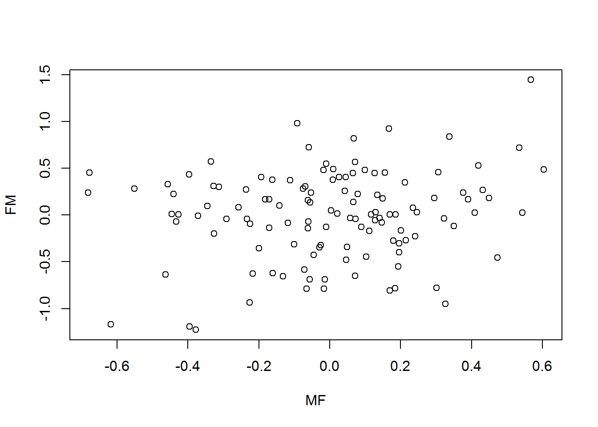
Scatterplot of women’s actor and partner effects
plot(REs_basicSRM_AGregExtra$cond$`GROUPID:FemaleID`)Scatterplot of men’s and women’s relationship effects
plot(REs_basicSRM_AGregExtra$cond$`GROUPID:MaleID:FemaleID`)Getting Relative Percentage (these estimates are from SPSS)
SRMRelativePercentage(MActVar = 0.184681, FPartVar = 0.309118, MFRelVar = 0.501298,
FActVar = 0.200488, MPartVar = 0.458535, FMRelVar = 0.848005) Actor Partner Relation Plus Error Total Variance
Man-to-Woman Ratings 18.56 31.06 50.38 1.00
Woman-to-Man Ratings 13.30 30.43 56.27 1.51Basic SRM Analysis of Ratings of Romantic Attraction
Subsetting data
SD_data4$AATTRACT <- as.numeric(SD_data4$AATTRACT)
myvars <- c("GROUPID", "MaleID", "FemaleID", "MF", "FM",
"AATTRACT", "Agender", "GroupID_EC1", "GroupID_EC2",
"GroupID_EC3", "GroupID_EC4", "GroupID_EC5", "GroupID_EC6",
"GroupID_EC7", "GroupID_EC8", "GroupID_EC9", "GroupID_EC10",
"GroupID_EC11", "GroupID_EC12", "GroupID_EC13", "GroupID_EC14",
"GroupID_EC15", "GroupID_EC16", "GroupID_EC17", "GroupID_EC18",
"GroupID_EC19", "GroupID_EC20", "GroupID_EC21", "GroupID_EC22",
"GroupID_EC23", "GroupID_EC24", "GroupID_EC25", "GroupID_EC26",
"GroupID_EC27", "GroupID_EC28", "GroupID_EC29", "GroupID_EC30",
"GroupID_EC31", "GroupID_EC32")
SD_data_AATTRACT <- SD_data4[myvars]
SD_data_AATTRACT <- na.omit(SD_data_AATTRACT)Basic SRM Analysis
basicSRM_AATTRACT <- glmmTMB(AATTRACT ~ 1 + Agender*GroupID_EC1 + Agender*GroupID_EC2 + Agender*GroupID_EC3 + Agender*GroupID_EC4 +
Agender*GroupID_EC5 + Agender*GroupID_EC6 + Agender*GroupID_EC7 + Agender*GroupID_EC8 + Agender*GroupID_EC9 +
Agender*GroupID_EC10 + Agender*GroupID_EC11 + Agender*GroupID_EC12 + Agender*GroupID_EC13 + Agender*GroupID_EC14 +
Agender*GroupID_EC15 + Agender*GroupID_EC16 + Agender*GroupID_EC17 + Agender*GroupID_EC18 + Agender*GroupID_EC19 +
Agender*GroupID_EC20 + Agender*GroupID_EC21 + Agender*GroupID_EC22 + Agender*GroupID_EC23 + Agender*GroupID_EC24 +
Agender*GroupID_EC25 + Agender*GroupID_EC26 + Agender*GroupID_EC27 + Agender*GroupID_EC28 + Agender*GroupID_EC29 +
Agender*GroupID_EC30 + Agender*GroupID_EC31 + Agender*GroupID_EC32 + (0 + MF + FM|GROUPID:MaleID) + (0 + FM +
MF|GROUPID:FemaleID) + us(0 + MF + FM + 0| GROUPID:MaleID:FemaleID),data = SD_data_AATTRACT,
family = gaussian(link = "identity"), dispformula=~0, REML = TRUE,
verbose = FALSE, na.action = na.omit)Warning in fitTMB(TMBStruc): Model convergence problem; false convergence (8).
See vignette('troubleshooting')glmmTMB issues a false convergence warning (8), but same model runs fine in SPSS, with the same deviance value and virtually identical parameter estimates.
summary(basicSRM_AATTRACT) Family: gaussian ( identity )
Formula:
AATTRACT ~ 1 + Agender * GroupID_EC1 + Agender * GroupID_EC2 +
Agender * GroupID_EC3 + Agender * GroupID_EC4 + Agender *
GroupID_EC5 + Agender * GroupID_EC6 + Agender * GroupID_EC7 +
Agender * GroupID_EC8 + Agender * GroupID_EC9 + Agender *
GroupID_EC10 + Agender * GroupID_EC11 + Agender * GroupID_EC12 +
Agender * GroupID_EC13 + Agender * GroupID_EC14 + Agender *
GroupID_EC15 + Agender * GroupID_EC16 + Agender * GroupID_EC17 +
Agender * GroupID_EC18 + Agender * GroupID_EC19 + Agender *
GroupID_EC20 + Agender * GroupID_EC21 + Agender * GroupID_EC22 +
Agender * GroupID_EC23 + Agender * GroupID_EC24 + Agender *
GroupID_EC25 + Agender * GroupID_EC26 + Agender * GroupID_EC27 +
Agender * GroupID_EC28 + Agender * GroupID_EC29 + Agender *
GroupID_EC30 + Agender * GroupID_EC31 + Agender * GroupID_EC32 +
(0 + MF + FM | GROUPID:MaleID) + (0 + FM + MF | GROUPID:FemaleID) +
us(0 + MF + FM + 0 | GROUPID:MaleID:FemaleID)
Dispersion: ~0
Data: SD_data_AATTRACT
AIC BIC logLik deviance df.resid
2872.8 3230.9 -1361.4 2722.8 866
Random effects:
Conditional model:
Groups Name Variance Std.Dev. Corr
GROUPID:MaleID MF 0.3286 0.5733
FM 0.6162 0.7850 0.01
GROUPID:FemaleID FM 0.4000 0.6324
MF 0.6154 0.7845 -0.18
GROUPID:MaleID:FemaleID MF 0.7041 0.8391
FM 0.8977 0.9475 0.25
Number of obs: 875, groups:
GROUPID:MaleID, 123; GROUPID:FemaleID, 121; GROUPID:MaleID:FemaleID, 455
Conditional model:
Estimate Std. Error z value Pr(>|z|)
(Intercept) 3.936959 0.072160 54.56 <2e-16 ***
Agender 0.086459 0.073772 1.17 0.2412
GroupID_EC1 -0.151959 0.328639 -0.46 0.6438
GroupID_EC2 -0.077584 0.373597 -0.21 0.8355
GroupID_EC3 -0.714737 0.444312 -1.61 0.1077
GroupID_EC4 0.583041 0.328639 1.77 0.0760 .
GroupID_EC5 -0.011986 0.468432 -0.03 0.9796
GroupID_EC6 -0.006404 0.444312 -0.01 0.9885
GroupID_EC7 0.030220 0.389659 0.08 0.9382
GroupID_EC8 0.156791 0.373597 0.42 0.6747
GroupID_EC9 0.714565 0.374829 1.91 0.0566 .
GroupID_EC10 0.340819 0.444312 0.77 0.4430
GroupID_EC11 0.243596 0.444312 0.55 0.5835
GroupID_EC12 -0.226022 0.373597 -0.60 0.5452
GroupID_EC13 0.257485 0.444312 0.58 0.5622
GroupID_EC14 -0.024007 0.375138 -0.06 0.9490
GroupID_EC15 -0.021705 0.474495 -0.05 0.9635
GroupID_EC16 0.174311 0.468301 0.37 0.7097
GroupID_EC17 0.174152 0.444312 0.39 0.6951
GroupID_EC18 -0.249459 0.373597 -0.67 0.5043
GroupID_EC19 -0.159181 0.444312 -0.36 0.7201
GroupID_EC20 -0.353626 0.444312 -0.80 0.4261
GroupID_EC21 -0.443913 0.329309 -1.35 0.1777
GroupID_EC22 -0.398332 0.350262 -1.14 0.2554
GroupID_EC23 -0.327619 0.375148 -0.87 0.3825
GroupID_EC24 -0.093209 0.373597 -0.25 0.8030
GroupID_EC25 -0.913522 0.373597 -2.45 0.0145 *
GroupID_EC26 0.465819 0.444312 1.05 0.2945
GroupID_EC27 -0.068668 0.375140 -0.18 0.8548
GroupID_EC28 -0.367515 0.444312 -0.83 0.4081
GroupID_EC29 0.170083 0.375144 0.45 0.6503
GroupID_EC30 -0.075848 0.444312 -0.17 0.8645
GroupID_EC31 0.598157 0.432148 1.38 0.1663
GroupID_EC32 0.352103 0.373597 0.94 0.3460
Agender:GroupID_EC1 0.198541 0.341890 0.58 0.5614
Agender:GroupID_EC2 0.944791 0.385075 2.45 0.0141 *
Agender:GroupID_EC3 -0.447571 0.451381 -0.99 0.3214
Agender:GroupID_EC4 -0.336459 0.341890 -0.98 0.3251
Agender:GroupID_EC5 0.505181 0.475139 1.06 0.2877
Agender:GroupID_EC6 0.232985 0.451381 0.52 0.6057
Agender:GroupID_EC7 -0.819263 0.400683 -2.04 0.0409 *
Agender:GroupID_EC8 -0.055209 0.385075 -0.14 0.8860
Agender:GroupID_EC9 0.049440 0.386271 0.13 0.8982
Agender:GroupID_EC10 -0.530904 0.451381 -1.18 0.2395
Agender:GroupID_EC11 -0.405904 0.451381 -0.90 0.3685
Agender:GroupID_EC12 0.608853 0.385075 1.58 0.1138
Agender:GroupID_EC13 0.302429 0.451381 0.67 0.5029
Agender:GroupID_EC14 -0.202537 0.386567 -0.52 0.6003
Agender:GroupID_EC15 -0.057269 0.481110 -0.12 0.9052
Agender:GroupID_EC16 0.247033 0.475011 0.52 0.6030
Agender:GroupID_EC17 -0.308682 0.451381 -0.68 0.4941
Agender:GroupID_EC18 0.116666 0.385075 0.30 0.7619
Agender:GroupID_EC19 -0.725348 0.451381 -1.61 0.1081
Agender:GroupID_EC20 -0.447571 0.451381 -0.99 0.3214
Agender:GroupID_EC21 0.480495 0.342535 1.40 0.1607
Agender:GroupID_EC22 -0.267833 0.362725 -0.74 0.4603
Agender:GroupID_EC23 -0.102050 0.386582 -0.26 0.7918
Agender:GroupID_EC24 -0.195834 0.385075 -0.51 0.6111
Agender:GroupID_EC25 -0.297397 0.385075 -0.77 0.4399
Agender:GroupID_EC26 -0.794793 0.451381 -1.76 0.0783 .
Agender:GroupID_EC27 0.810874 0.386567 2.10 0.0359 *
Agender:GroupID_EC28 0.288541 0.451381 0.64 0.5227
Agender:GroupID_EC29 0.259623 0.386573 0.67 0.5018
Agender:GroupID_EC30 0.913541 0.451381 2.02 0.0430 *
Agender:GroupID_EC31 -0.316620 0.437122 -0.72 0.4689
Agender:GroupID_EC32 -0.172397 0.385075 -0.45 0.6544
---
Signif. codes: 0 '***' 0.001 '**' 0.01 '*' 0.05 '.' 0.1 ' ' 1Checking Normality of Level-1 Residuals
Standard low tech way
hist(scale(resid(basicSRM_AATTRACT)),
freq = FALSE, ylim = c(0, .7), xlim = c(-4, 5),
main = "Basic SRM Analysis of Ratings of Romantic Attraction",
col = "lightblue",
xlab = "Standardized Residuals")
lines(density(scale(resid(basicSRM_AATTRACT))))
box()
qqnorm(scale(resid(basicSRM_AATTRACT)), main = "Normal Quantile-Quantile Plot")
qqline(scale(resid(basicSRM_AATTRACT)))Residuals appear normal in shape.
More high tech way with DHARMa package (note that residual ~ pred plot is incorrect)
basicSRM_AATTRACT_simres <- simulateResiduals(basicSRM_AATTRACT)Model family was recognized or set as continuous, but duplicate values were detected in the response. Consider if you are fitting an appropriate model.system.time(sr.basicSRM_AATTRACT <- simulateResiduals(basicSRM_AATTRACT))Model family was recognized or set as continuous, but duplicate values were detected in the response. Consider if you are fitting an appropriate model. user system elapsed
0.98 0.02 1.00 plot(sr.basicSRM_AATTRACT)The Kolmogoriv-Smirnov test confirms that the assumption of normality of the residuals is NOT violated.
Checking for potential non-linearity and heteroscedasticity
Method suggested by Florian Hartig on Github to obtain predicted values
that are not conditioned on random effects (this prevents an artificial
correlation between residuals and predicted values in scatterplot)
newdata=SD_data_AATTRACT
newdata$GROUPID = NA
pred_AATTRACT <- predict(basicSRM_AATTRACT, newdata)
Stdresiduals_AATTRACT <- scale(resid(basicSRM_AATTRACT))plot(pred_AATTRACT, Stdresiduals_AATTRACT)No noticeable issues with non-linearity or heteroscedasticity.
Checking Normality of Random Effects
Extracting Random Effects from Model
REs_basicSRM_AATTRACT <- ranef(basicSRM_AATTRACT)Histogram and Q-Q Plot for Male Actor Effects
hist(REs_basicSRM_AATTRACT$cond$`GROUPID:MaleID`$MF, col = "lightblue",
freq = FALSE, ylim = c(0, .7), xlim = c(-4, 5),
xlab = "Men's Actor Effects for Ratings of Romantic Attraction",
main = "Histogram for Men's Actor Effects")
lines(density(REs_basicSRM_AATTRACT$cond$`GROUPID:MaleID`$MF))
box()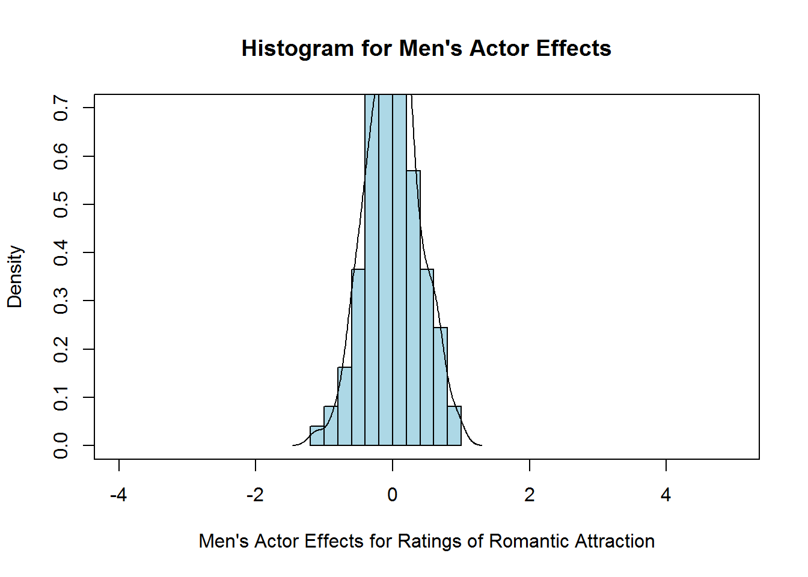
qqnorm(scale(REs_basicSRM_AATTRACT$cond$`GROUPID:MaleID`$MF), main = "Normal Quantile-Quantile Plot")
qqline(scale(REs_basicSRM_AATTRACT$cond$`GROUPID:MaleID`$MF))The random effects for men’s actor effects seem pretty normal in shape.
Histogram and Q-Q Plot for Male Partner Effects
hist(REs_basicSRM_AATTRACT$cond$`GROUPID:MaleID`$FM, col = "lightblue",
freq = FALSE, ylim = c(0, .7), xlim = c(-4, 5),
xlab = "Men's Partner Effects for Ratings of Romantic Attraction",
main = "Histogram for Men's Partner Effects")
lines(density(REs_basicSRM_AATTRACT$cond$`GROUPID:MaleID`$FM))
box()qqnorm(scale(REs_basicSRM_AATTRACT$cond$`GROUPID:MaleID`$FM), main = "Normal Quantile-Quantile Plot")
qqline(scale(REs_basicSRM_AATTRACT$cond$`GROUPID:MaleID`$FM))The random effects for men’s partner effects seem pretty normal in shape.
Histogram and Q-Q Plot for Female Actor Effects
hist(REs_basicSRM_AATTRACT$cond$`GROUPID:FemaleID`$FM, col = "lightblue",
freq = FALSE, ylim = c(0, .7), xlim = c(-4, 5),
xlab = "Women's Actor Effects for Ratings of Romantic Attraction",
main = "Histogram for Women's Actor Effects")
lines(density(REs_basicSRM_AATTRACT$cond$`GROUPID:FemaleID`$FM))
box()
qqnorm(scale(REs_basicSRM_AATTRACT$cond$`GROUPID:FemaleID`$FM), main = "Normal Quantile-Quantile Plot")
qqline(scale(REs_basicSRM_AATTRACT$cond$`GROUPID:FemaleID`$FM))
The random effects for women’s actor effects seem more-or-less normal in shape.
Histogram and Q-Q Plot for Female Partner Effects
hist(REs_basicSRM_AATTRACT$cond$`GROUPID:FemaleID`$MF, col = "lightblue",
freq = FALSE, ylim = c(0, .7), xlim = c(-4, 5),
xlab = "Women's Partner Effects for Ratings of Romantic Attraction",
main = "Histogram for Women's Partner Effects")
lines(density(REs_basicSRM_AATTRACT$cond$`GROUPID:FemaleID`$MF))
box()qqnorm(scale(REs_basicSRM_AATTRACT$cond$`GROUPID:FemaleID`$MF), main = "Normal Quantile-Quantile Plot")
qqline(scale(REs_basicSRM_AATTRACT$cond$`GROUPID:FemaleID`$MF))The random effects for women’s partner effects seem pretty normal in shape.
Histogram and Q-Q Plot for Man-to-Woman Relationship Effects
hist(REs_basicSRM_AATTRACT$cond$`GROUPID:MaleID:FemaleID`$MF, col = "lightblue",
freq = FALSE, ylim = c(0, .7), xlim = c(-4, 5),
xlab = "Man-to-Woman Relationship Effects for Ratings of Romantic Attraction",
main = "Histogram for Man-to-Woman Relationship Effects")
lines(density(REs_basicSRM_AATTRACT$cond$`GROUPID:MaleID:FemaleID`$MF))
box()qqnorm(scale(REs_basicSRM_AATTRACT$cond$`GROUPID:MaleID:FemaleID`$MF), main = "Normal Quantile-Quantile Plot")
qqline(scale(REs_basicSRM_AATTRACT$cond$`GROUPID:MaleID:FemaleID`$MF))Q-Q plot suggests normality.
Histogram and Q-Q Plot for Woman-to-Man Relationship Effects
hist(REs_basicSRM_AATTRACT$cond$`GROUPID:MaleID:FemaleID`$FM, col = "lightblue",
freq = FALSE, ylim = c(0, .7), xlim = c(-4, 5),
xlab = "Woman-to-Man Relationship Effects for Ratings of Romantic Attraction",
main = "Histogram for Woman-to-Man Relationship Effects")
lines(density(REs_basicSRM_AATTRACT$cond$`GROUPID:MaleID:FemaleID`$FM))
box()qqnorm(scale(REs_basicSRM_AATTRACT$cond$`GROUPID:MaleID:FemaleID`$FM), main = "Normal Quantile-Quantile Plot")
qqline(scale(REs_basicSRM_AATTRACT$cond$`GROUPID:MaleID:FemaleID`$FM))Q-Q plot suggests normality.
Scatterplots for Pairs of Random Effects
Scatterplot of men’s actor and partner effects
plot(REs_basicSRM_AATTRACT$cond$`GROUPID:MaleID`)Scatterplot of women’s actor and partner effects
plot(REs_basicSRM_AATTRACT$cond$`GROUPID:FemaleID`)Scatterplot of men’s and women’s relationship effects
plot(REs_basicSRM_AATTRACT$cond$`GROUPID:MaleID:FemaleID`)Getting Relative Percentage (these estimates are from SPSS)
SRMRelativePercentage(MActVar = 0.328676, FPartVar = 0.615468, MFRelVar = 0.704036,
FActVar = 0.399978, MPartVar = 0.616203, FMRelVar = 0.897650) Actor Partner Relation Plus Error Total Variance
Man-to-Woman Ratings 19.94 37.34 42.72 1.65
Woman-to-Man Ratings 20.90 32.20 46.90 1.91Basic SRM Analysis of Ratings of Connection to Partner
Subsetting data
myvars <- c("GROUPID", "MaleID", "FemaleID", "MF", "FM",
"ACONNECT", "Agender", "GroupID_EC1", "GroupID_EC2",
"GroupID_EC3", "GroupID_EC4", "GroupID_EC5", "GroupID_EC6",
"GroupID_EC7", "GroupID_EC8", "GroupID_EC9", "GroupID_EC10",
"GroupID_EC11", "GroupID_EC12", "GroupID_EC13", "GroupID_EC14",
"GroupID_EC15", "GroupID_EC16", "GroupID_EC17", "GroupID_EC18",
"GroupID_EC19", "GroupID_EC20", "GroupID_EC21", "GroupID_EC22",
"GroupID_EC23", "GroupID_EC24", "GroupID_EC25", "GroupID_EC26",
"GroupID_EC27", "GroupID_EC28", "GroupID_EC29", "GroupID_EC30",
"GroupID_EC31", "GroupID_EC32")
SD_data_ACONNECT <- SD_data4[myvars]
SD_data_ACONNECT <- na.omit(SD_data_ACONNECT)Basic SRM Analysis
basicSRM_ACONNECT <- glmmTMB(ACONNECT ~ 1 + Agender*GroupID_EC1 + Agender*GroupID_EC2 + Agender*GroupID_EC3 + Agender*GroupID_EC4 +
Agender*GroupID_EC5 + Agender*GroupID_EC6 + Agender*GroupID_EC7 + Agender*GroupID_EC8 + Agender*GroupID_EC9 +
Agender*GroupID_EC10 + Agender*GroupID_EC11 + Agender*GroupID_EC12 + Agender*GroupID_EC13 + Agender*GroupID_EC14 +
Agender*GroupID_EC15 + Agender*GroupID_EC16 + Agender*GroupID_EC17 + Agender*GroupID_EC18 + Agender*GroupID_EC19 +
Agender*GroupID_EC20 + Agender*GroupID_EC21 + Agender*GroupID_EC22 + Agender*GroupID_EC23 + Agender*GroupID_EC24 +
Agender*GroupID_EC25 + Agender*GroupID_EC26 + Agender*GroupID_EC27 + Agender*GroupID_EC28 + Agender*GroupID_EC29 +
Agender*GroupID_EC30 + Agender*GroupID_EC31 + Agender*GroupID_EC32 + (0 + MF + FM|GROUPID:MaleID) + (0 + FM +
MF|GROUPID:FemaleID) + us(0 + MF + FM + 0| GROUPID:MaleID:FemaleID),data = SD_data_ACONNECT,
family = gaussian(link = "identity"), dispformula=~0, REML = TRUE,
verbose = FALSE, na.action = na.omit)summary(basicSRM_ACONNECT) Family: gaussian ( identity )
Formula:
ACONNECT ~ 1 + Agender * GroupID_EC1 + Agender * GroupID_EC2 +
Agender * GroupID_EC3 + Agender * GroupID_EC4 + Agender *
GroupID_EC5 + Agender * GroupID_EC6 + Agender * GroupID_EC7 +
Agender * GroupID_EC8 + Agender * GroupID_EC9 + Agender *
GroupID_EC10 + Agender * GroupID_EC11 + Agender * GroupID_EC12 +
Agender * GroupID_EC13 + Agender * GroupID_EC14 + Agender *
GroupID_EC15 + Agender * GroupID_EC16 + Agender * GroupID_EC17 +
Agender * GroupID_EC18 + Agender * GroupID_EC19 + Agender *
GroupID_EC20 + Agender * GroupID_EC21 + Agender * GroupID_EC22 +
Agender * GroupID_EC23 + Agender * GroupID_EC24 + Agender *
GroupID_EC25 + Agender * GroupID_EC26 + Agender * GroupID_EC27 +
Agender * GroupID_EC28 + Agender * GroupID_EC29 + Agender *
GroupID_EC30 + Agender * GroupID_EC31 + Agender * GroupID_EC32 +
(0 + MF + FM | GROUPID:MaleID) + (0 + FM + MF | GROUPID:FemaleID) +
us(0 + MF + FM + 0 | GROUPID:MaleID:FemaleID)
Dispersion: ~0
Data: SD_data_ACONNECT
AIC BIC logLik deviance df.resid
2785.8 3144.0 -1317.9 2635.8 868
Random effects:
Conditional model:
Groups Name Variance Std.Dev. Corr
GROUPID:MaleID MF 0.3651 0.6042
FM 0.2217 0.4709 0.21
GROUPID:FemaleID FM 0.3569 0.5974
MF 0.3689 0.6073 0.29
GROUPID:MaleID:FemaleID MF 0.6666 0.8165
FM 1.0144 1.0072 0.36
Number of obs: 877, groups:
GROUPID:MaleID, 123; GROUPID:FemaleID, 121; GROUPID:MaleID:FemaleID, 455
Conditional model:
Estimate Std. Error z value Pr(>|z|)
(Intercept) 3.528535 0.071144 49.60 < 2e-16 ***
Agender 0.237587 0.053900 4.41 1.04e-05 ***
GroupID_EC1 -0.048535 0.321934 -0.15 0.8802
GroupID_EC2 -0.268119 0.367396 -0.73 0.4655
GroupID_EC3 -0.584091 0.439499 -1.33 0.1839
GroupID_EC4 0.638131 0.321934 1.98 0.0475 *
GroupID_EC5 -0.183197 0.463304 -0.40 0.6925
GroupID_EC6 0.323316 0.439499 0.74 0.4619
GroupID_EC7 0.244571 0.381761 0.64 0.5218
GroupID_EC8 -0.320202 0.367396 -0.87 0.3835
GroupID_EC9 0.919381 0.367396 2.50 0.0123 *
GroupID_EC10 0.545539 0.439499 1.24 0.2145
GroupID_EC11 0.286279 0.439499 0.65 0.5148
GroupID_EC12 -0.413952 0.367396 -1.13 0.2599
GroupID_EC13 0.378872 0.439499 0.86 0.3887
GroupID_EC14 -0.038952 0.367396 -0.11 0.9156
GroupID_EC15 -0.076154 0.467593 -0.16 0.8706
GroupID_EC16 0.451678 0.463076 0.98 0.3294
GroupID_EC17 -0.047054 0.439499 -0.11 0.9147
GroupID_EC18 0.013131 0.367396 0.04 0.9715
GroupID_EC19 0.212205 0.439499 0.48 0.6292
GroupID_EC20 -0.639647 0.439499 -1.46 0.1456
GroupID_EC21 -0.402494 0.323484 -1.24 0.2134
GroupID_EC22 -0.606313 0.343790 -1.76 0.0778 .
GroupID_EC23 -0.188442 0.369496 -0.51 0.6101
GroupID_EC24 -0.236869 0.367396 -0.64 0.5191
GroupID_EC25 -0.716035 0.367396 -1.95 0.0513 .
GroupID_EC26 -0.176684 0.439499 -0.40 0.6877
GroupID_EC27 0.086048 0.367396 0.23 0.8148
GroupID_EC28 -0.361869 0.439499 -0.82 0.4103
GroupID_EC29 0.002715 0.367396 0.01 0.9941
GroupID_EC30 -0.176684 0.439499 -0.40 0.6877
GroupID_EC31 0.469430 0.425034 1.10 0.2694
GroupID_EC32 0.294381 0.367396 0.80 0.4230
Agender:GroupID_EC1 -0.197587 0.243337 -0.81 0.4168
Agender:GroupID_EC2 0.710330 0.276527 2.57 0.0102 *
Agender:GroupID_EC3 -0.367217 0.328706 -1.12 0.2639
Agender:GroupID_EC4 -0.457587 0.243337 -1.88 0.0600 .
Agender:GroupID_EC5 0.367010 0.359915 1.02 0.3079
Agender:GroupID_EC6 -0.126476 0.328706 -0.38 0.7004
Agender:GroupID_EC7 -0.260694 0.295346 -0.88 0.3774
Agender:GroupID_EC8 -0.133420 0.276527 -0.48 0.6295
Agender:GroupID_EC9 -0.039670 0.276527 -0.14 0.8859
Agender:GroupID_EC10 -0.459809 0.328706 -1.40 0.1619
Agender:GroupID_EC11 -0.089439 0.328706 -0.27 0.7855
Agender:GroupID_EC12 0.585330 0.276527 2.12 0.0343 *
Agender:GroupID_EC13 0.706857 0.328706 2.15 0.0315 *
Agender:GroupID_EC14 0.001996 0.276527 0.01 0.9942
Agender:GroupID_EC15 -0.060339 0.365438 -0.17 0.8689
Agender:GroupID_EC16 0.224108 0.359622 0.62 0.5332
Agender:GroupID_EC17 -0.644995 0.328706 -1.96 0.0497 *
Agender:GroupID_EC18 -0.091754 0.276527 -0.33 0.7400
Agender:GroupID_EC19 -0.237587 0.328706 -0.72 0.4698
Agender:GroupID_EC20 0.206857 0.328706 0.63 0.5291
Agender:GroupID_EC21 0.409705 0.245379 1.67 0.0950 .
Agender:GroupID_EC22 -0.448698 0.271593 -1.65 0.0985 .
Agender:GroupID_EC23 0.269173 0.279308 0.96 0.3352
Agender:GroupID_EC24 -0.195920 0.276527 -0.71 0.4786
Agender:GroupID_EC25 -0.112587 0.276527 -0.41 0.6839
Agender:GroupID_EC26 -0.811661 0.328706 -2.47 0.0135 *
Agender:GroupID_EC27 0.335330 0.276527 1.21 0.2253
Agender:GroupID_EC28 0.040191 0.328706 0.12 0.9027
Agender:GroupID_EC29 0.189496 0.276527 0.69 0.4932
Agender:GroupID_EC30 0.484635 0.328706 1.47 0.1404
Agender:GroupID_EC31 -0.113226 0.345168 -0.33 0.7429
Agender:GroupID_EC32 -0.185504 0.276527 -0.67 0.5023
---
Signif. codes: 0 '***' 0.001 '**' 0.01 '*' 0.05 '.' 0.1 ' ' 1Checking Normality of Level-1 Residuals
Standard low tech way
hist(scale(resid(basicSRM_ACONNECT)),
freq = FALSE, ylim = c(0, .7), xlim = c(-4, 5),
main = "Basic SRM Analysis of Ratings of Connection to Partner",
col = "lightblue",
xlab = "Standardized Residuals")
lines(density(scale(resid(basicSRM_ACONNECT))))
box()qqnorm(scale(resid(basicSRM_ACONNECT)), main = "Normal Quantile-Quantile Plot")
qqline(scale(resid(basicSRM_ACONNECT)))Residuals are normal in shape.
More high tech way with DHARMa package (note that residual ~ pred plot is incorrect)
basicSRM_ACONNECT_simres <- simulateResiduals(basicSRM_ACONNECT)Model family was recognized or set as continuous, but duplicate values were detected in the response. Consider if you are fitting an appropriate model.system.time(sr.basicSRM_ACONNECT <- simulateResiduals(basicSRM_ACONNECT))Model family was recognized or set as continuous, but duplicate values were detected in the response. Consider if you are fitting an appropriate model. user system elapsed
0.96 0.00 0.99 plot(sr.basicSRM_ACONNECT)The Kolmogoriv-Smirnov test confirms that the assumption of normality of the residuals is NOT violated.
Checking for potential non-linearity and heteroscedasticity
Method suggested by Florian Hartig on Github to obtain predicted values
that are not conditioned on random effects (this prevents an artificial
correlation between residuals and predicted values in scatterplot)
newdata=SD_data_ACONNECT
newdata$GROUPID = NA
pred_ACONNECT <- predict(basicSRM_ACONNECT, newdata)
Stdresiduals_ACONNECT <- scale(resid(basicSRM_ACONNECT))plot(pred_ACONNECT, Stdresiduals_ACONNECT)
No noticeable issues with non-linearity or heteroscedasticity.
Checking Normality of Random Effects
Extracting Random Effects from Model
REs_basicSRM_ACONNECT <- ranef(basicSRM_ACONNECT)Histogram and Q-Q Plot for Male Actor Effects
hist(REs_basicSRM_ACONNECT$cond$`GROUPID:MaleID`$MF, col = "lightblue",
freq = FALSE, ylim = c(0, .7), xlim = c(-4, 5),
xlab = "Men's Actor Effects for Ratings of Connection to Partner",
main = "Histogram for Men's Actor Effects")
lines(density(REs_basicSRM_ACONNECT$cond$`GROUPID:MaleID`$MF))
box()qqnorm(scale(REs_basicSRM_ACONNECT$cond$`GROUPID:MaleID`$MF), main = "Normal Quantile-Quantile Plot")
qqline(scale(REs_basicSRM_ACONNECT$cond$`GROUPID:MaleID`$MF))The random effects for men’s actor effects seem more-or-less normal in shape.
Histogram and Q-Q Plot for Male Partner Effects
hist(REs_basicSRM_ACONNECT$cond$`GROUPID:MaleID`$FM, col = "lightblue",
freq = FALSE, ylim = c(0, .7), xlim = c(-4, 5),
xlab = "Men's Partner Effects for Ratings of Connection to Partner",
main = "Histogram for Men's Partner Effects")
lines(density(REs_basicSRM_ACONNECT$cond$`GROUPID:MaleID`$FM))
box()qqnorm(scale(REs_basicSRM_ACONNECT$cond$`GROUPID:MaleID`$FM), main = "Normal Quantile-Quantile Plot")
qqline(scale(REs_basicSRM_ACONNECT$cond$`GROUPID:MaleID`$FM))The random effects for men’s partner effects seem more-or-less normal in shape.
Histogram and Q-Q Plot for Female Actor Effects
hist(REs_basicSRM_ACONNECT$cond$`GROUPID:FemaleID`$FM, col = "lightblue",
freq = FALSE, ylim = c(0, .7), xlim = c(-4, 5),
xlab = "Women's Actor Effects for Ratings of Connection to Partner",
main = "Histogram for Women's Actor Effects")
lines(density(REs_basicSRM_ACONNECT$cond$`GROUPID:FemaleID`$FM))
box()qqnorm(scale(REs_basicSRM_ACONNECT$cond$`GROUPID:FemaleID`$FM), main = "Normal Quantile-Quantile Plot")
qqline(scale(REs_basicSRM_ACONNECT$cond$`GROUPID:FemaleID`$FM))The random effects for women’s actor effects seem somewhat non-normal in shape.
Histogram and Q-Q Plot for Female Partner Effects
hist(REs_basicSRM_ACONNECT$cond$`GROUPID:FemaleID`$MF, col = "lightblue",
freq = FALSE, ylim = c(0, .7), xlim = c(-4, 5),
xlab = "Women's Partner Effects for Ratings of Connection to Partner",
main = "Histogram for Women's Partner Effects")
lines(density(REs_basicSRM_ACONNECT$cond$`GROUPID:FemaleID`$MF))
box()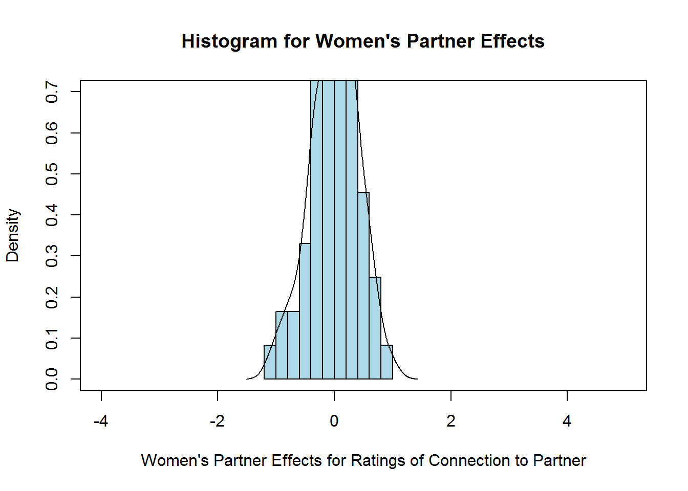
qqnorm(scale(REs_basicSRM_ACONNECT$cond$`GROUPID:FemaleID`$MF), main = "Normal Quantile-Quantile Plot")
qqline(scale(REs_basicSRM_ACONNECT$cond$`GROUPID:FemaleID`$MF))The random effects for women’s partner effects seem pretty normal in shape.
Histogram and Q-Q Plot for Man-to-Woman Relationship Effects
hist(REs_basicSRM_ACONNECT$cond$`GROUPID:MaleID:FemaleID`$MF, col = "lightblue",
freq = FALSE, ylim = c(0, .7), xlim = c(-4, 5),
xlab = "Man-to-Woman Relationship Effects for Ratings of Connection to Partner",
main = "Histogram for Man-to-Woman Relationship Effects")
lines(density(REs_basicSRM_ACONNECT$cond$`GROUPID:MaleID:FemaleID`$MF))
box()qqnorm(scale(REs_basicSRM_ACONNECT$cond$`GROUPID:MaleID:FemaleID`$MF), main = "Normal Quantile-Quantile Plot")
qqline(scale(REs_basicSRM_ACONNECT$cond$`GROUPID:MaleID:FemaleID`$MF))Q-Q plot suggests normality.
Histogram and Q-Q Plot for Woman-to-Man Relationship Effects
hist(REs_basicSRM_ACONNECT$cond$`GROUPID:MaleID:FemaleID`$FM, col = "lightblue",
freq = FALSE, ylim = c(0, .7), xlim = c(-4, 5),
xlab = "Woman-to-Man Relationship Effects for Ratings of Connection to Partner",
main = "Histogram for Woman-to-Man Relationship Effects")
lines(density(REs_basicSRM_ACONNECT$cond$`GROUPID:MaleID:FemaleID`$FM))
box()qqnorm(scale(REs_basicSRM_ACONNECT$cond$`GROUPID:MaleID:FemaleID`$FM), main = "Normal Quantile-Quantile Plot")
qqline(scale(REs_basicSRM_ACONNECT$cond$`GROUPID:MaleID:FemaleID`$FM))Q-Q plot suggests normality.
Scatterplots for Pairs of Random Effects
Scatterplot of men’s actor and partner effects
plot(REs_basicSRM_ACONNECT$cond$`GROUPID:MaleID`)Scatterplot of women’s actor and partner effects
plot(REs_basicSRM_ACONNECT$cond$`GROUPID:FemaleID`)Scatterplot of men’s and women’s relationship effects
plot(REs_basicSRM_ACONNECT$cond$`GROUPID:MaleID:FemaleID`)Getting Relative Percentage (these estimates are from SPSS)
SRMRelativePercentage(MActVar = 0.365082, FPartVar = 0.368869, MFRelVar = 0.666642,
FActVar = 0.356916, MPartVar = 0.221728, FMRelVar = 1.014470) Actor Partner Relation Plus Error Total Variance
Man-to-Woman Ratings 26.07 26.34 47.60 1.40
Woman-to-Man Ratings 22.40 13.92 63.68 1.59Basic SRM Analysis of Meta-Perceptions of Attraction
Subsetting data
myvars <- c("GROUPID", "MaleID", "FemaleID", "MF", "FM",
"AMETAATTRACT", "Agender", "GroupID_EC1", "GroupID_EC2",
"GroupID_EC3", "GroupID_EC4", "GroupID_EC5", "GroupID_EC6",
"GroupID_EC7", "GroupID_EC8", "GroupID_EC9", "GroupID_EC10",
"GroupID_EC11", "GroupID_EC12", "GroupID_EC13", "GroupID_EC14",
"GroupID_EC15", "GroupID_EC16", "GroupID_EC17", "GroupID_EC18",
"GroupID_EC19", "GroupID_EC20", "GroupID_EC21", "GroupID_EC22",
"GroupID_EC23", "GroupID_EC24", "GroupID_EC25", "GroupID_EC26",
"GroupID_EC27", "GroupID_EC28", "GroupID_EC29", "GroupID_EC30",
"GroupID_EC31", "GroupID_EC32")
SD_data_AMETAATTRACT <- SD_data4[myvars]
SD_data_AMETAATTRACT <- na.omit(SD_data_AMETAATTRACT)Basic SRM Analysis
basicSRM_AMETAATTRACT <- glmmTMB(AMETAATTRACT ~ 1 + Agender*GroupID_EC1 + Agender*GroupID_EC2 + Agender*GroupID_EC3 + Agender*GroupID_EC4 +
Agender*GroupID_EC5 + Agender*GroupID_EC6 + Agender*GroupID_EC7 + Agender*GroupID_EC8 + Agender*GroupID_EC9 +
Agender*GroupID_EC10 + Agender*GroupID_EC11 + Agender*GroupID_EC12 + Agender*GroupID_EC13 + Agender*GroupID_EC14 +
Agender*GroupID_EC15 + Agender*GroupID_EC16 + Agender*GroupID_EC17 + Agender*GroupID_EC18 + Agender*GroupID_EC19 +
Agender*GroupID_EC20 + Agender*GroupID_EC21 + Agender*GroupID_EC22 + Agender*GroupID_EC23 + Agender*GroupID_EC24 +
Agender*GroupID_EC25 + Agender*GroupID_EC26 + Agender*GroupID_EC27 + Agender*GroupID_EC28 + Agender*GroupID_EC29 +
Agender*GroupID_EC30 + Agender*GroupID_EC31 + Agender*GroupID_EC32 + (0 + MF + FM|GROUPID:MaleID) + (0 + FM +
MF|GROUPID:FemaleID) + us(0 + MF + FM + 0| GROUPID:MaleID:FemaleID),data = SD_data_AMETAATTRACT,
family = gaussian(link = "identity"), dispformula=~0, REML = TRUE,
verbose = FALSE, na.action = na.omit)Warning in fitTMB(TMBStruc): Model convergence problem; false convergence (8).
See vignette('troubleshooting')glmmTMB issues a false convergence warning (8), but same model runs fine in SPSS, with the same deviance value and virtually identical parameter estimates.
summary(basicSRM_AMETAATTRACT) Family: gaussian ( identity )
Formula:
AMETAATTRACT ~ 1 + Agender * GroupID_EC1 + Agender * GroupID_EC2 +
Agender * GroupID_EC3 + Agender * GroupID_EC4 + Agender *
GroupID_EC5 + Agender * GroupID_EC6 + Agender * GroupID_EC7 +
Agender * GroupID_EC8 + Agender * GroupID_EC9 + Agender *
GroupID_EC10 + Agender * GroupID_EC11 + Agender * GroupID_EC12 +
Agender * GroupID_EC13 + Agender * GroupID_EC14 + Agender *
GroupID_EC15 + Agender * GroupID_EC16 + Agender * GroupID_EC17 +
Agender * GroupID_EC18 + Agender * GroupID_EC19 + Agender *
GroupID_EC20 + Agender * GroupID_EC21 + Agender * GroupID_EC22 +
Agender * GroupID_EC23 + Agender * GroupID_EC24 + Agender *
GroupID_EC25 + Agender * GroupID_EC26 + Agender * GroupID_EC27 +
Agender * GroupID_EC28 + Agender * GroupID_EC29 + Agender *
GroupID_EC30 + Agender * GroupID_EC31 + Agender * GroupID_EC32 +
(0 + MF + FM | GROUPID:MaleID) + (0 + FM + MF | GROUPID:FemaleID) +
us(0 + MF + FM + 0 | GROUPID:MaleID:FemaleID)
Dispersion: ~0
Data: SD_data_AMETAATTRACT
AIC BIC logLik deviance df.resid
2696.7 3055.0 -1273.3 2546.7 869
Random effects:
Conditional model:
Groups Name Variance Std.Dev. Corr
GROUPID:MaleID MF 0.64573 0.8036
FM 0.13948 0.3735 0.48
GROUPID:FemaleID FM 1.00708 1.0035
MF 0.09785 0.3128 0.37
GROUPID:MaleID:FemaleID MF 0.60376 0.7770
FM 0.69114 0.8313 0.01
Number of obs: 878, groups:
GROUPID:MaleID, 123; GROUPID:FemaleID, 121; GROUPID:MaleID:FemaleID, 455
Conditional model:
Estimate Std. Error z value Pr(>|z|)
(Intercept) 3.9230771 0.0785137 49.97 < 2e-16 ***
Agender 0.2994711 0.0627015 4.78 1.79e-06 ***
GroupID_EC1 -0.4830771 0.3628107 -1.33 0.1830
GroupID_EC2 -0.7043271 0.4084558 -1.72 0.0846 .
GroupID_EC3 -0.2008549 0.4784576 -0.42 0.6746
GroupID_EC4 0.6969229 0.3628107 1.92 0.0547 .
GroupID_EC5 0.2554211 0.5099514 0.50 0.6165
GroupID_EC6 0.5769229 0.4784576 1.21 0.2279
GroupID_EC7 0.3729799 0.4346269 0.86 0.3908
GroupID_EC8 -0.6418271 0.4084558 -1.57 0.1161
GroupID_EC9 0.4206729 0.4084558 1.03 0.3031
GroupID_EC10 0.0213673 0.4784576 0.04 0.9644
GroupID_EC11 0.2435895 0.4784576 0.51 0.6107
GroupID_EC12 -0.3605771 0.4084558 -0.88 0.3774
GroupID_EC13 0.3547007 0.4784576 0.74 0.4585
GroupID_EC14 -0.0168271 0.4084558 -0.04 0.9671
GroupID_EC15 0.1330544 0.5255818 0.25 0.8001
GroupID_EC16 0.5769229 0.5097373 1.13 0.2577
GroupID_EC17 -0.2008549 0.4784576 -0.42 0.6746
GroupID_EC18 0.1394229 0.4084558 0.34 0.7328
GroupID_EC19 0.6324784 0.4784576 1.32 0.1862
GroupID_EC20 -0.7008549 0.4784576 -1.46 0.1430
GroupID_EC21 -0.1030771 0.3628107 -0.28 0.7763
GroupID_EC22 -0.6418551 0.3919194 -1.64 0.1015
GroupID_EC23 0.1706729 0.4084558 0.42 0.6761
GroupID_EC24 -0.1982680 0.4095739 -0.48 0.6283
GroupID_EC25 -0.7980771 0.4084558 -1.95 0.0507 .
GroupID_EC26 -0.3119660 0.4784576 -0.65 0.5144
GroupID_EC27 -0.2557336 0.4095902 -0.62 0.5324
GroupID_EC28 -0.0341882 0.4784576 -0.07 0.9430
GroupID_EC29 -0.1105771 0.4084558 -0.27 0.7866
GroupID_EC30 0.0439354 0.4817873 0.09 0.9273
GroupID_EC31 -0.2209395 0.4692899 -0.47 0.6378
GroupID_EC32 0.5456729 0.4084558 1.34 0.1816
Agender:GroupID_EC1 -0.6594711 0.2834648 -2.33 0.0200 *
Agender:GroupID_EC2 0.2942789 0.3212823 0.92 0.3597
Agender:GroupID_EC3 0.5338622 0.3803757 1.40 0.1605
Agender:GroupID_EC4 0.1205289 0.2834648 0.43 0.6707
Agender:GroupID_EC5 -0.2320840 0.4192929 -0.55 0.5799
Agender:GroupID_EC6 0.2005289 0.3803757 0.53 0.5981
Agender:GroupID_EC7 -0.2830282 0.3539501 -0.80 0.4239
Agender:GroupID_EC8 0.1067789 0.3212823 0.33 0.7396
Agender:GroupID_EC9 -0.1432211 0.3212823 -0.45 0.6558
Agender:GroupID_EC10 -0.4661378 0.3803757 -1.23 0.2204
Agender:GroupID_EC11 0.0894177 0.3803757 0.24 0.8141
Agender:GroupID_EC12 0.4505289 0.3212823 1.40 0.1608
Agender:GroupID_EC13 0.5338622 0.3803757 1.40 0.1605
Agender:GroupID_EC14 0.2942789 0.3212823 0.92 0.3597
Agender:GroupID_EC15 -0.4667138 0.4382040 -1.07 0.2868
Agender:GroupID_EC16 0.2005289 0.4190420 0.48 0.6323
Agender:GroupID_EC17 -0.7994711 0.3803757 -2.10 0.0356 *
Agender:GroupID_EC18 0.3255289 0.3212823 1.01 0.3110
Agender:GroupID_EC19 -0.0772489 0.3803757 -0.20 0.8391
Agender:GroupID_EC20 0.0338622 0.3803757 0.09 0.9291
Agender:GroupID_EC21 0.0005289 0.2834648 0.00 0.9985
Agender:GroupID_EC22 -0.6182491 0.3198645 -1.93 0.0533 .
Agender:GroupID_EC23 0.1067789 0.3212823 0.33 0.7396
Agender:GroupID_EC24 0.1007197 0.3227130 0.31 0.7550
Agender:GroupID_EC25 0.4505289 0.3212823 1.40 0.1608
Agender:GroupID_EC26 -0.1328045 0.3803757 -0.35 0.7270
Agender:GroupID_EC27 0.0956853 0.3227168 0.30 0.7668
Agender:GroupID_EC28 -0.2994711 0.3803757 -0.79 0.4311
Agender:GroupID_EC29 -0.1119711 0.3212823 -0.35 0.7275
Agender:GroupID_EC30 0.6224052 0.3845163 1.62 0.1055
Agender:GroupID_EC31 0.0052659 0.3969198 0.01 0.9894
Agender:GroupID_EC32 -0.1432211 0.3212823 -0.45 0.6558
---
Signif. codes: 0 '***' 0.001 '**' 0.01 '*' 0.05 '.' 0.1 ' ' 1Checking Normality of Level-1 Residuals
Standard low tech way
hist(scale(resid(basicSRM_AMETAATTRACT)),
freq = FALSE, ylim = c(0, .7), xlim = c(-4, 5),
main = "Basic SRM Analysis of Meta-Perceptions of Attraction",
col = "lightblue",
xlab = "Standardized Residuals")
lines(density(scale(resid(basicSRM_AMETAATTRACT))))
box()qqnorm(scale(resid(basicSRM_AMETAATTRACT)), main = "Normal Quantile-Quantile Plot")
qqline(scale(resid(basicSRM_AMETAATTRACT)))There are some minor problems with the normality of the residuals for AMETAATTRACT, most likely due to the fact that it is a single-item measure.
More high tech way with DHARMa package (note that residual ~ pred plot is incorrect)
basicSRM_AMETAATTRACT_simres <- simulateResiduals(basicSRM_AMETAATTRACT)Model family was recognized or set as continuous, but duplicate values were detected in the response. Consider if you are fitting an appropriate model.system.time(sr.basicSRM_AMETAATTRACT <- simulateResiduals(basicSRM_AMETAATTRACT))Model family was recognized or set as continuous, but duplicate values were detected in the response. Consider if you are fitting an appropriate model. user system elapsed
0.98 0.01 1.00 plot(sr.basicSRM_AMETAATTRACT)The Kolmogoriv-Smirnov test confirms that the assumption of normality of the residuals is NOT violated.
Checking for potential non-linearity and heteroscedasticity
Method suggested by Florian Hartig on Github to obtain predicted values
that are not conditioned on random effects (this prevents an artificial
correlation between residuals and predicted values in scatterplot)
newdata=SD_data_AMETAATTRACT
newdata$GROUPID = NA
pred_AMETAATTRACT <- predict(basicSRM_AMETAATTRACT, newdata)
Stdresiduals_AMETAATTRACT <- scale(resid(basicSRM_AMETAATTRACT))plot(pred_AMETAATTRACT, Stdresiduals_AMETAATTRACT)No noticeable issues with non-linearity or heteroscedasticity.
Checking Normality of Random Effects
Extracting Random Effects from Model
REs_basicSRM_AMETAATTRACT <- ranef(basicSRM_AMETAATTRACT)Histogram and Q-Q Plot for Male Actor Effects
hist(REs_basicSRM_AMETAATTRACT$cond$`GROUPID:MaleID`$MF, col = "lightblue",
freq = FALSE, ylim = c(0, .7), xlim = c(-4, 5),
xlab = "Men's Actor Effects for Meta-Perceptions of Attraction",
main = "Histogram for Men's Actor Effects")
lines(density(REs_basicSRM_AMETAATTRACT$cond$`GROUPID:MaleID`$MF))
box()qqnorm(scale(REs_basicSRM_AMETAATTRACT$cond$`GROUPID:MaleID`$MF), main = "Normal Quantile-Quantile Plot")
qqline(scale(REs_basicSRM_AMETAATTRACT$cond$`GROUPID:MaleID`$MF))The random effects for men’s actor effects seem pretty normal in shape.
Histogram and Q-Q Plot for Male Partner Effects
hist(REs_basicSRM_AMETAATTRACT$cond$`GROUPID:MaleID`$FM, col = "lightblue",
freq = FALSE, ylim = c(0, .7), xlim = c(-4, 5),
xlab = "Men's Partner Effects for Meta-Perceptions of Attraction",
main = "Histogram for Men's Partner Effects")
lines(density(REs_basicSRM_AMETAATTRACT$cond$`GROUPID:MaleID`$FM))
box()qqnorm(scale(REs_basicSRM_AMETAATTRACT$cond$`GROUPID:MaleID`$FM), main = "Normal Quantile-Quantile Plot")
qqline(scale(REs_basicSRM_AMETAATTRACT$cond$`GROUPID:MaleID`$FM))The random effects for men’s partner effects seem pretty normal in shape.
Histogram and Q-Q Plot for Female Actor Effects
hist(REs_basicSRM_AMETAATTRACT$cond$`GROUPID:FemaleID`$FM, col = "lightblue",
freq = FALSE, ylim = c(0, .7), xlim = c(-4, 5),
xlab = "Women's Actor Effects for Meta-Perceptions of Attraction",
main = "Histogram for Women's Actor Effects")
lines(density(REs_basicSRM_AMETAATTRACT$cond$`GROUPID:FemaleID`$FM))
box()qqnorm(scale(REs_basicSRM_AMETAATTRACT$cond$`GROUPID:FemaleID`$FM), main = "Normal Quantile-Quantile Plot")
qqline(scale(REs_basicSRM_AMETAATTRACT$cond$`GROUPID:FemaleID`$FM))The random effects for women’s actor effects seem more-or-less normal in shape.
Histogram and Q-Q Plot for Female Partner Effects
hist(REs_basicSRM_AMETAATTRACT$cond$`GROUPID:FemaleID`$MF, col = "lightblue",
freq = FALSE, ylim = c(0, .7), xlim = c(-4, 5),
xlab = "Women's Partner Effects for Meta-Perceptions of Attraction",
main = "Histogram for Women's Partner Effects")
lines(density(REs_basicSRM_AMETAATTRACT$cond$`GROUPID:FemaleID`$MF))
box()qqnorm(scale(REs_basicSRM_AMETAATTRACT$cond$`GROUPID:FemaleID`$MF), main = "Normal Quantile-Quantile Plot")
qqline(scale(REs_basicSRM_AMETAATTRACT$cond$`GROUPID:FemaleID`$MF))The random effects for women’s partner effects seem somewhat non-normal in shape.
Histogram and Q-Q Plot for Man-to-Woman Relationship Effects
hist(REs_basicSRM_AMETAATTRACT$cond$`GROUPID:MaleID:FemaleID`$MF, col = "lightblue",
freq = FALSE, ylim = c(0, .7), xlim = c(-4, 5),
xlab = "Man-to-Woman Relationship Effects for Meta-Perceptions of Attraction",
main = "Histogram for Man-to-Woman Relationship Effects")
lines(density(REs_basicSRM_AMETAATTRACT$cond$`GROUPID:MaleID:FemaleID`$MF))
box()qqnorm(scale(REs_basicSRM_AMETAATTRACT$cond$`GROUPID:MaleID:FemaleID`$MF), main = "Normal Quantile-Quantile Plot")
qqline(scale(REs_basicSRM_AMETAATTRACT$cond$`GROUPID:MaleID:FemaleID`$MF))Q-Q plot suggests some non-normality.
Histogram and Q-Q Plot for Woman-to-Man Relationship Effects
hist(REs_basicSRM_AMETAATTRACT$cond$`GROUPID:MaleID:FemaleID`$FM, col = "lightblue",
freq = FALSE, ylim = c(0, .7), xlim = c(-4, 5),
xlab = "Woman-to-Man Relationship Effects for Meta-Perceptions of Attraction",
main = "Histogram for Woman-to-Man Relationship Effects")
lines(density(REs_basicSRM_AMETAATTRACT$cond$`GROUPID:MaleID:FemaleID`$FM))
box()qqnorm(scale(REs_basicSRM_AMETAATTRACT$cond$`GROUPID:MaleID:FemaleID`$FM), main = "Normal Quantile-Quantile Plot")
qqline(scale(REs_basicSRM_AMETAATTRACT$cond$`GROUPID:MaleID:FemaleID`$FM))Q-Q plot suggests normality.
Scatterplots for Pairs of Random Effects
Scatterplot of men’s actor and partner effects
plot(REs_basicSRM_AMETAATTRACT$cond$`GROUPID:MaleID`)Scatterplot of women’s actor and partner effects
plot(REs_basicSRM_AMETAATTRACT$cond$`GROUPID:FemaleID`)Scatterplot of men’s and women’s relationship effects
plot(REs_basicSRM_AMETAATTRACT$cond$`GROUPID:MaleID:FemaleID`)Getting Relative Percentage (these estimates are from SPSS)
SRMRelativePercentage(MActVar = 0.645736, FPartVar = 0.097856, MFRelVar = 0.603775,
FActVar = 1.007057, MPartVar = 0.139484, FMRelVar = 0.691160) Actor Partner Relation Plus Error Total Variance
Man-to-Woman Ratings 47.93 7.26 44.81 1.35
Woman-to-Man Ratings 54.80 7.59 37.61 1.84Basic SRM Analysis of Self-Reports of Disclosure to Partner
Subsetting data
myvars <- c("GROUPID", "MaleID", "FemaleID", "MF", "FM",
"ADISCLOSURE", "Agender", "GroupID_EC1", "GroupID_EC2",
"GroupID_EC3", "GroupID_EC4", "GroupID_EC5", "GroupID_EC6",
"GroupID_EC7", "GroupID_EC8", "GroupID_EC9", "GroupID_EC10",
"GroupID_EC11", "GroupID_EC12", "GroupID_EC13", "GroupID_EC14",
"GroupID_EC15", "GroupID_EC16", "GroupID_EC17", "GroupID_EC18",
"GroupID_EC19", "GroupID_EC20", "GroupID_EC21", "GroupID_EC22",
"GroupID_EC23", "GroupID_EC24", "GroupID_EC25", "GroupID_EC26",
"GroupID_EC27", "GroupID_EC28", "GroupID_EC29", "GroupID_EC30",
"GroupID_EC31", "GroupID_EC32")
SD_data_ADISCLOSURE <- SD_data4[myvars]
SD_data_ADISCLOSURE <- na.omit(SD_data_ADISCLOSURE)Basic SRM Analysis
basicSRM_ADISCLOSURE <- glmmTMB(ADISCLOSURE ~ 1 + Agender*GroupID_EC1 + Agender*GroupID_EC2 + Agender*GroupID_EC3 + Agender*GroupID_EC4 +
Agender*GroupID_EC5 + Agender*GroupID_EC6 + Agender*GroupID_EC7 + Agender*GroupID_EC8 + Agender*GroupID_EC9 +
Agender*GroupID_EC10 + Agender*GroupID_EC11 + Agender*GroupID_EC12 + Agender*GroupID_EC13 + Agender*GroupID_EC14 +
Agender*GroupID_EC15 + Agender*GroupID_EC16 + Agender*GroupID_EC17 + Agender*GroupID_EC18 + Agender*GroupID_EC19 +
Agender*GroupID_EC20 + Agender*GroupID_EC21 + Agender*GroupID_EC22 + Agender*GroupID_EC23 + Agender*GroupID_EC24 +
Agender*GroupID_EC25 + Agender*GroupID_EC26 + Agender*GroupID_EC27 + Agender*GroupID_EC28 + Agender*GroupID_EC29 +
Agender*GroupID_EC30 + Agender*GroupID_EC31 + Agender*GroupID_EC32 + (0 + MF + FM|GROUPID:MaleID) + (0 + FM +
MF|GROUPID:FemaleID) + us(0 + MF + FM + 0| GROUPID:MaleID:FemaleID),data = SD_data_ADISCLOSURE,
family = gaussian(link = "identity"), dispformula=~0, REML = TRUE,
verbose = FALSE, na.action = na.omit)Warning in fitTMB(TMBStruc): Model convergence problem; false convergence (8).
See vignette('troubleshooting')glmmTMB issues a false convergence warning (8), but same model runs fine in SPSS, with the same deviance value and virtually identical parameter estimates.
summary(basicSRM_ADISCLOSURE) Family: gaussian ( identity )
Formula:
ADISCLOSURE ~ 1 + Agender * GroupID_EC1 + Agender * GroupID_EC2 +
Agender * GroupID_EC3 + Agender * GroupID_EC4 + Agender *
GroupID_EC5 + Agender * GroupID_EC6 + Agender * GroupID_EC7 +
Agender * GroupID_EC8 + Agender * GroupID_EC9 + Agender *
GroupID_EC10 + Agender * GroupID_EC11 + Agender * GroupID_EC12 +
Agender * GroupID_EC13 + Agender * GroupID_EC14 + Agender *
GroupID_EC15 + Agender * GroupID_EC16 + Agender * GroupID_EC17 +
Agender * GroupID_EC18 + Agender * GroupID_EC19 + Agender *
GroupID_EC20 + Agender * GroupID_EC21 + Agender * GroupID_EC22 +
Agender * GroupID_EC23 + Agender * GroupID_EC24 + Agender *
GroupID_EC25 + Agender * GroupID_EC26 + Agender * GroupID_EC27 +
Agender * GroupID_EC28 + Agender * GroupID_EC29 + Agender *
GroupID_EC30 + Agender * GroupID_EC31 + Agender * GroupID_EC32 +
(0 + MF + FM | GROUPID:MaleID) + (0 + FM + MF | GROUPID:FemaleID) +
us(0 + MF + FM + 0 | GROUPID:MaleID:FemaleID)
Dispersion: ~0
Data: SD_data_ADISCLOSURE
AIC BIC logLik deviance df.resid
2914.2 3272.7 -1382.1 2764.2 871
Random effects:
Conditional model:
Groups Name Variance Std.Dev. Corr
GROUPID:MaleID MF 0.89328 0.9451
FM 0.16107 0.4013 -0.22
GROUPID:FemaleID FM 1.02739 1.0136
MF 0.09796 0.3130 -0.36
GROUPID:MaleID:FemaleID MF 0.82855 0.9102
FM 0.89810 0.9477 0.05
Number of obs: 880, groups:
GROUPID:MaleID, 123; GROUPID:FemaleID, 121; GROUPID:MaleID:FemaleID, 455
Conditional model:
Estimate Std. Error z value Pr(>|z|)
(Intercept) 4.12563 0.07215 57.18 < 2e-16 ***
Agender -0.14253 0.08241 -1.73 0.08373 .
GroupID_EC1 0.21437 0.32548 0.66 0.51013
GroupID_EC2 -0.34438 0.36941 -0.93 0.35121
GroupID_EC3 0.15215 0.43829 0.35 0.72848
GroupID_EC4 -0.10563 0.32548 -0.32 0.74553
GroupID_EC5 0.44534 0.48745 0.91 0.36093
GroupID_EC6 0.04104 0.43829 0.09 0.92540
GroupID_EC7 -0.43748 0.40080 -1.09 0.27505
GroupID_EC8 0.24937 0.36941 0.68 0.49964
GroupID_EC9 0.12437 0.36941 0.34 0.73636
GroupID_EC10 -0.45896 0.43829 -1.05 0.29502
GroupID_EC11 0.81882 0.43829 1.87 0.06173 .
GroupID_EC12 -0.18813 0.36941 -0.51 0.61056
GroupID_EC13 0.04104 0.43829 0.09 0.92540
GroupID_EC14 0.37437 0.36941 1.01 0.31085
GroupID_EC15 0.66887 0.49377 1.35 0.17554
GroupID_EC16 -0.61434 0.48758 -1.26 0.20768
GroupID_EC17 -0.40341 0.43829 -0.92 0.35736
GroupID_EC18 -0.28188 0.36941 -0.76 0.44543
GroupID_EC19 0.04104 0.43829 0.09 0.92540
GroupID_EC20 -0.07007 0.43829 -0.16 0.87298
GroupID_EC21 -0.36563 0.32548 -1.12 0.26128
GroupID_EC22 -0.42042 0.37227 -1.13 0.25875
GroupID_EC23 0.24937 0.36941 0.68 0.49964
GroupID_EC24 0.12437 0.36941 0.34 0.73636
GroupID_EC25 0.15562 0.36941 0.42 0.67356
GroupID_EC26 -0.90341 0.43829 -2.06 0.03928 *
GroupID_EC27 -0.52221 0.37098 -1.41 0.15924
GroupID_EC28 0.15215 0.43829 0.35 0.72848
GroupID_EC29 0.12437 0.36941 0.34 0.73636
GroupID_EC30 -0.12563 0.43829 -0.29 0.77439
GroupID_EC31 0.02659 0.46265 0.06 0.95417
GroupID_EC32 0.03062 0.36941 0.08 0.93394
Agender:GroupID_EC1 -0.31747 0.37850 -0.84 0.40160
Agender:GroupID_EC2 -0.20122 0.42681 -0.47 0.63732
Agender:GroupID_EC3 0.30920 0.50128 0.62 0.53735
Agender:GroupID_EC4 -0.35747 0.37850 -0.94 0.34494
Agender:GroupID_EC5 0.38016 0.54479 0.70 0.48529
Agender:GroupID_EC6 0.19809 0.50128 0.40 0.69272
Agender:GroupID_EC7 -0.23312 0.45426 -0.51 0.60782
Agender:GroupID_EC8 0.64253 0.42681 1.51 0.13222
Agender:GroupID_EC9 0.89253 0.42681 2.09 0.03652 *
Agender:GroupID_EC10 -0.41303 0.50128 -0.82 0.40997
Agender:GroupID_EC11 -0.35747 0.50128 -0.71 0.47577
Agender:GroupID_EC12 -0.04497 0.42681 -0.11 0.91609
Agender:GroupID_EC13 -0.24636 0.50128 -0.49 0.62310
Agender:GroupID_EC14 0.26753 0.42681 0.63 0.53079
Agender:GroupID_EC15 0.01470 0.55045 0.03 0.97869
Agender:GroupID_EC16 -0.56840 0.54490 -1.04 0.29689
Agender:GroupID_EC17 -0.35747 0.50128 -0.71 0.47577
Agender:GroupID_EC18 -0.20122 0.42681 -0.47 0.63732
Agender:GroupID_EC19 0.30920 0.50128 0.62 0.53735
Agender:GroupID_EC20 -0.02414 0.50128 -0.05 0.96160
Agender:GroupID_EC21 0.86253 0.37850 2.28 0.02268 *
Agender:GroupID_EC22 -0.63226 0.41941 -1.51 0.13168
Agender:GroupID_EC23 0.08003 0.42681 0.19 0.85126
Agender:GroupID_EC24 0.33003 0.42681 0.77 0.43938
Agender:GroupID_EC25 -0.13872 0.42681 -0.33 0.74517
Agender:GroupID_EC26 -0.74636 0.50128 -1.49 0.13651
Agender:GroupID_EC27 -0.21089 0.42818 -0.49 0.62234
Agender:GroupID_EC28 -0.57969 0.50128 -1.16 0.24750
Agender:GroupID_EC29 -0.10747 0.42681 -0.25 0.80120
Agender:GroupID_EC30 1.36475 0.50128 2.72 0.00648 **
Agender:GroupID_EC31 -0.20207 0.50795 -0.40 0.69076
Agender:GroupID_EC32 -0.07622 0.42681 -0.18 0.85827
---
Signif. codes: 0 '***' 0.001 '**' 0.01 '*' 0.05 '.' 0.1 ' ' 1Checking Normality of Level-1 Residuals
Standard low tech way
hist(scale(resid(basicSRM_ADISCLOSURE)),
freq = FALSE, ylim = c(0, .7), xlim = c(-4, 5),
main = "Basic SRM Analysis of Self-Reports of Disclosure to Partner",
col = "lightblue",
xlab = "Standardized Residuals")
lines(density(scale(resid(basicSRM_ADISCLOSURE))))
box()qqnorm(scale(resid(basicSRM_ADISCLOSURE)), main = "Normal Quantile-Quantile Plot")
qqline(scale(resid(basicSRM_ADISCLOSURE)))There are some minor problems with the normality of the residuals for ADISCLOSURE, most likely due to the fact that it is a single-item measure.
More high tech way with DHARMa package (note that residual ~ pred plot is incorrect)
basicSRM_ADISCLOSURE_simres <- simulateResiduals(basicSRM_ADISCLOSURE)Model family was recognized or set as continuous, but duplicate values were detected in the response. Consider if you are fitting an appropriate model.system.time(sr.basicSRM_ADISCLOSURE <- simulateResiduals(basicSRM_ADISCLOSURE))Model family was recognized or set as continuous, but duplicate values were detected in the response. Consider if you are fitting an appropriate model. user system elapsed
0.97 0.01 0.98 plot(sr.basicSRM_ADISCLOSURE)The Kolmogoriv-Smirnov test confirms that the assumption of normality of the residuals is violated.
Checking for potential non-linearity and heteroscedasticity
Method suggested by Florian Hartig on Github to obtain predicted values
that are not conditioned on random effects (this prevents an artificial
correlation between residuals and predicted values in scatterplot)
newdata=SD_data_ADISCLOSURE
newdata$GROUPID = NA
pred_ADISCLOSURE <- predict(basicSRM_ADISCLOSURE, newdata)
Stdresiduals_ADISCLOSURE <- scale(resid(basicSRM_ADISCLOSURE))plot(pred_ADISCLOSURE, Stdresiduals_ADISCLOSURE)No noticeable issues with non-linearity or heteroscedasticity.
Checking Normality of Random Effects
Extracting Random Effects from Model
REs_basicSRM_ADISCLOSURE <- ranef(basicSRM_ADISCLOSURE)Histogram and Q-Q Plot for Male Actor Effects
hist(REs_basicSRM_ADISCLOSURE$cond$`GROUPID:MaleID`$MF, col = "lightblue",
freq = FALSE, ylim = c(0, .7), xlim = c(-4, 5),
xlab = "Men's Actor Effects for Self-Reports of Disclosure to Partner",
main = "Histogram for Men's Actor Effects")
lines(density(REs_basicSRM_ADISCLOSURE$cond$`GROUPID:MaleID`$MF))
box()qqnorm(scale(REs_basicSRM_ADISCLOSURE$cond$`GROUPID:MaleID`$MF), main = "Normal Quantile-Quantile Plot")
qqline(scale(REs_basicSRM_ADISCLOSURE$cond$`GROUPID:MaleID`$MF))The random effects for men’s actor effects seem non-normal in shape.
Histogram and Q-Q Plot for Male Partner Effects
hist(REs_basicSRM_ADISCLOSURE$cond$`GROUPID:MaleID`$FM, col = "lightblue",
freq = FALSE, ylim = c(0, .7), xlim = c(-4, 5),
xlab = "Men's Partner Effects for Self-Reports of Disclosure to Partner",
main = "Histogram for Men's Partner Effects")
lines(density(REs_basicSRM_ADISCLOSURE$cond$`GROUPID:MaleID`$FM))
box()
qqnorm(scale(REs_basicSRM_ADISCLOSURE$cond$`GROUPID:MaleID`$FM), main = "Normal Quantile-Quantile Plot")
qqline(scale(REs_basicSRM_ADISCLOSURE$cond$`GROUPID:MaleID`$FM))The random effects for men’s partner effects seem pretty normal in shape.
Histogram and Q-Q Plot for Female Actor Effects
hist(REs_basicSRM_ADISCLOSURE$cond$`GROUPID:FemaleID`$FM, col = "lightblue",
freq = FALSE, ylim = c(0, .7), xlim = c(-4, 5),
xlab = "Women's Actor Effects for Self-Reports of Disclosure to Partner",
main = "Histogram for Women's Actor Effects")
lines(density(REs_basicSRM_ADISCLOSURE$cond$`GROUPID:FemaleID`$FM))
box()qqnorm(scale(REs_basicSRM_ADISCLOSURE$cond$`GROUPID:FemaleID`$FM), main = "Normal Quantile-Quantile Plot")
qqline(scale(REs_basicSRM_ADISCLOSURE$cond$`GROUPID:FemaleID`$FM))The random effects for women’s actor effects seem more-or-less normal in shape.
Histogram and Q-Q Plot for Female Partner Effects
hist(REs_basicSRM_ADISCLOSURE$cond$`GROUPID:FemaleID`$MF, col = "lightblue",
freq = FALSE, ylim = c(0, .7), xlim = c(-4, 5),
xlab = "Women's Partner Effects for Self-Reports of Disclosure to Partner",
main = "Histogram for Women's Partner Effects")
lines(density(REs_basicSRM_ADISCLOSURE$cond$`GROUPID:FemaleID`$MF))
box()qqnorm(scale(REs_basicSRM_ADISCLOSURE$cond$`GROUPID:FemaleID`$MF), main = "Normal Quantile-Quantile Plot")
qqline(scale(REs_basicSRM_ADISCLOSURE$cond$`GROUPID:FemaleID`$MF))The random effects for women’s partner effects seem pretty normal in shape.
Histogram and Q-Q Plot for Man-to-Woman Relationship Effects
hist(REs_basicSRM_ADISCLOSURE$cond$`GROUPID:MaleID:FemaleID`$MF, col = "lightblue",
freq = FALSE, ylim = c(0, .7), xlim = c(-4, 5),
xlab = "Man-to-Woman Relationship Effects for Self-Reports of Disclosure to Partner",
main = "Histogram for Man-to-Woman Relationship Effects")
lines(density(REs_basicSRM_ADISCLOSURE$cond$`GROUPID:MaleID:FemaleID`$MF))
box()qqnorm(scale(REs_basicSRM_ADISCLOSURE$cond$`GROUPID:MaleID:FemaleID`$MF), main = "Normal Quantile-Quantile Plot")
qqline(scale(REs_basicSRM_ADISCLOSURE$cond$`GROUPID:MaleID:FemaleID`$MF))Q-Q plot suggests some non-normality.
Histogram and Q-Q Plot for Woman-to-Man Relationship Effects
hist(REs_basicSRM_ADISCLOSURE$cond$`GROUPID:MaleID:FemaleID`$FM, col = "lightblue",
freq = FALSE, ylim = c(0, .7), xlim = c(-4, 5),
xlab = "Woman-to-Man Relationship Effects for Self-Reports of Disclosure to Partner",
main = "Histogram for Woman-to-Man Relationship Effects")
lines(density(REs_basicSRM_ADISCLOSURE$cond$`GROUPID:MaleID:FemaleID`$FM))
box()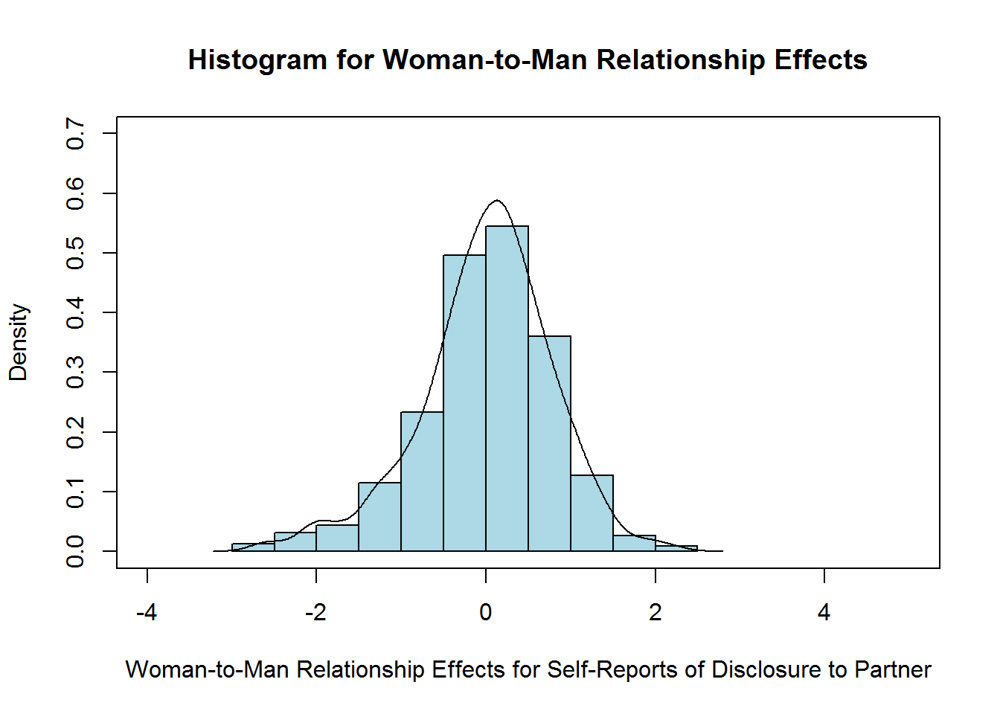
qqnorm(scale(REs_basicSRM_ADISCLOSURE$cond$`GROUPID:MaleID:FemaleID`$FM), main = "Normal Quantile-Quantile Plot")
qqline(scale(REs_basicSRM_ADISCLOSURE$cond$`GROUPID:MaleID:FemaleID`$FM))Q-Q plot suggests some non-normality.
Scatterplots for Pairs of Random Effects
Scatterplot of men’s actor and partner effects
plot(REs_basicSRM_ADISCLOSURE$cond$`GROUPID:MaleID`)Scatterplot of women’s actor and partner effects
plot(REs_basicSRM_ADISCLOSURE$cond$`GROUPID:FemaleID`)Scatterplot of men’s and women’s relationship effects
plot(REs_basicSRM_ADISCLOSURE$cond$`GROUPID:MaleID:FemaleID`)Getting Relative Percentage (these estimates are from SPSS)
SRMRelativePercentage(MActVar = 0.893362, FPartVar = 0.097955, MFRelVar = 0.828585,
FActVar = 1.027344, MPartVar = 0.161045, FMRelVar = 0.898061) Actor Partner Relation Plus Error Total Variance
Man-to-Woman Ratings 49.09 5.38 45.53 1.82
Woman-to-Man Ratings 49.24 7.72 43.04 2.09Basic SRM Analysis of Informant-Reports of Disclosure to Partner
Subsetting data
myvars <- c("GROUPID", "MaleID", "FemaleID", "MF", "FM",
"AIR_Disclose", "Agender", "GroupID_EC1", "GroupID_EC2",
"GroupID_EC3", "GroupID_EC4", "GroupID_EC5", "GroupID_EC6",
"GroupID_EC7", "GroupID_EC8", "GroupID_EC9", "GroupID_EC10",
"GroupID_EC11", "GroupID_EC12", "GroupID_EC13", "GroupID_EC14",
"GroupID_EC15", "GroupID_EC16", "GroupID_EC17", "GroupID_EC18",
"GroupID_EC19", "GroupID_EC20", "GroupID_EC21", "GroupID_EC22",
"GroupID_EC23", "GroupID_EC24", "GroupID_EC25", "GroupID_EC26",
"GroupID_EC27", "GroupID_EC28", "GroupID_EC29", "GroupID_EC30",
"GroupID_EC31", "GroupID_EC32")
SD_data_AIR_Disclose <- SD_data4[myvars]
SD_data_AIR_Disclose <- na.omit(SD_data_AIR_Disclose)Basic SRM Analysis
basicSRM_AIR_Disclose <- glmmTMB(AIR_Disclose ~ 1 + Agender*GroupID_EC1 + Agender*GroupID_EC2 + Agender*GroupID_EC3 + Agender*GroupID_EC4 +
Agender*GroupID_EC5 + Agender*GroupID_EC6 + Agender*GroupID_EC7 + Agender*GroupID_EC8 + Agender*GroupID_EC9 +
Agender*GroupID_EC10 + Agender*GroupID_EC11 + Agender*GroupID_EC12 + Agender*GroupID_EC13 + Agender*GroupID_EC14 +
Agender*GroupID_EC15 + Agender*GroupID_EC16 + Agender*GroupID_EC17 + Agender*GroupID_EC18 + Agender*GroupID_EC19 +
Agender*GroupID_EC20 + Agender*GroupID_EC21 + Agender*GroupID_EC22 + Agender*GroupID_EC23 + Agender*GroupID_EC24 +
Agender*GroupID_EC25 + Agender*GroupID_EC26 + Agender*GroupID_EC27 + Agender*GroupID_EC28 + Agender*GroupID_EC29 +
Agender*GroupID_EC30 + Agender*GroupID_EC31 + Agender*GroupID_EC32 + (0 + MF + FM|GROUPID:MaleID) + (0 + FM +
MF|GROUPID:FemaleID) + us(0 + MF + FM + 0| GROUPID:MaleID:FemaleID),data = SD_data_AIR_Disclose,
family = gaussian(link = "identity"), dispformula=~0, REML = TRUE,
verbose = FALSE, na.action = na.omit)summary(basicSRM_AIR_Disclose) Family: gaussian ( identity )
Formula:
AIR_Disclose ~ 1 + Agender * GroupID_EC1 + Agender * GroupID_EC2 +
Agender * GroupID_EC3 + Agender * GroupID_EC4 + Agender *
GroupID_EC5 + Agender * GroupID_EC6 + Agender * GroupID_EC7 +
Agender * GroupID_EC8 + Agender * GroupID_EC9 + Agender *
GroupID_EC10 + Agender * GroupID_EC11 + Agender * GroupID_EC12 +
Agender * GroupID_EC13 + Agender * GroupID_EC14 + Agender *
GroupID_EC15 + Agender * GroupID_EC16 + Agender * GroupID_EC17 +
Agender * GroupID_EC18 + Agender * GroupID_EC19 + Agender *
GroupID_EC20 + Agender * GroupID_EC21 + Agender * GroupID_EC22 +
Agender * GroupID_EC23 + Agender * GroupID_EC24 + Agender *
GroupID_EC25 + Agender * GroupID_EC26 + Agender * GroupID_EC27 +
Agender * GroupID_EC28 + Agender * GroupID_EC29 + Agender *
GroupID_EC30 + Agender * GroupID_EC31 + Agender * GroupID_EC32 +
(0 + MF + FM | GROUPID:MaleID) + (0 + FM + MF | GROUPID:FemaleID) +
us(0 + MF + FM + 0 | GROUPID:MaleID:FemaleID)
Dispersion: ~0
Data: SD_data_AIR_Disclose
AIC BIC logLik deviance df.resid
2941.8 3300.2 -1395.9 2791.8 870
Random effects:
Conditional model:
Groups Name Variance Std.Dev. Corr
GROUPID:MaleID MF 0.76425 0.8742
FM 0.10148 0.3186 -0.05
GROUPID:FemaleID FM 0.70453 0.8394
MF 0.08324 0.2885 -0.49
GROUPID:MaleID:FemaleID MF 0.81562 0.9031
FM 1.17509 1.0840 0.06
Number of obs: 879, groups:
GROUPID:MaleID, 123; GROUPID:FemaleID, 121; GROUPID:MaleID:FemaleID, 455
Conditional model:
Estimate Std. Error z value Pr(>|z|)
(Intercept) 4.13600 0.06722 61.53 < 2e-16 ***
Agender -0.02459 0.07410 -0.33 0.74005
GroupID_EC1 0.42400 0.29943 1.42 0.15678
GroupID_EC2 -0.13600 0.34225 -0.40 0.69109
GroupID_EC3 0.19733 0.41042 0.48 0.63065
GroupID_EC4 0.34400 0.29943 1.15 0.25063
GroupID_EC5 -0.10890 0.45721 -0.24 0.81174
GroupID_EC6 0.08622 0.41042 0.21 0.83361
GroupID_EC7 -0.05419 0.36895 -0.15 0.88323
GroupID_EC8 0.58275 0.34225 1.70 0.08863 .
GroupID_EC9 0.02025 0.34225 0.06 0.95283
GroupID_EC10 -0.69156 0.41042 -1.69 0.09198 .
GroupID_EC11 0.69733 0.41042 1.70 0.08930 .
GroupID_EC12 -0.19850 0.34225 -0.58 0.56192
GroupID_EC13 -0.30267 0.41042 -0.74 0.46084
GroupID_EC14 0.23900 0.34225 0.70 0.48499
GroupID_EC15 0.80360 0.45879 1.75 0.07985 .
GroupID_EC16 -0.91310 0.45724 -2.00 0.04583 *
GroupID_EC17 -0.46934 0.41042 -1.14 0.25280
GroupID_EC18 -0.19850 0.34225 -0.58 0.56192
GroupID_EC19 0.14177 0.41042 0.35 0.72976
GroupID_EC20 -0.30267 0.41042 -0.74 0.46084
GroupID_EC21 -0.31600 0.29943 -1.06 0.29127
GroupID_EC22 -0.56915 0.34458 -1.65 0.09860 .
GroupID_EC23 0.10055 0.34623 0.29 0.77149
GroupID_EC24 0.20775 0.34225 0.61 0.54385
GroupID_EC25 0.05150 0.34225 0.15 0.88040
GroupID_EC26 -0.58045 0.41042 -1.41 0.15728
GroupID_EC27 -0.57350 0.34225 -1.68 0.09380 .
GroupID_EC28 0.08622 0.41042 0.21 0.83361
GroupID_EC29 0.05150 0.34225 0.15 0.88040
GroupID_EC30 0.03066 0.41042 0.07 0.94044
GroupID_EC31 0.65686 0.43481 1.51 0.13087
GroupID_EC32 0.05150 0.34225 0.15 0.88040
Agender:GroupID_EC1 -0.01541 0.33627 -0.05 0.96344
Agender:GroupID_EC2 0.14959 0.38141 0.39 0.69492
Agender:GroupID_EC3 0.80236 0.45204 1.77 0.07590 .
Agender:GroupID_EC4 -0.13541 0.33627 -0.40 0.68717
Agender:GroupID_EC5 0.16280 0.49492 0.33 0.74221
Agender:GroupID_EC6 0.35792 0.45204 0.79 0.42849
Agender:GroupID_EC7 0.06777 0.40553 0.17 0.86728
Agender:GroupID_EC8 0.05584 0.38141 0.15 0.88361
Agender:GroupID_EC9 0.93084 0.38141 2.44 0.01467 *
Agender:GroupID_EC10 -0.53097 0.45204 -1.17 0.24015
Agender:GroupID_EC11 -0.58653 0.45204 -1.30 0.19446
Agender:GroupID_EC12 -0.03791 0.38141 -0.10 0.92082
Agender:GroupID_EC13 -0.36430 0.45204 -0.81 0.42030
Agender:GroupID_EC14 0.08709 0.38141 0.23 0.81939
Agender:GroupID_EC15 -0.58169 0.49638 -1.17 0.24125
Agender:GroupID_EC16 -0.19696 0.49494 -0.40 0.69067
Agender:GroupID_EC17 -0.30875 0.45204 -0.68 0.49460
Agender:GroupID_EC18 -0.47541 0.38141 -1.25 0.21259
Agender:GroupID_EC19 0.08014 0.45204 0.18 0.85928
Agender:GroupID_EC20 0.41347 0.45204 0.91 0.36036
Agender:GroupID_EC21 0.76459 0.33627 2.27 0.02298 *
Agender:GroupID_EC22 -1.00856 0.37704 -2.67 0.00747 **
Agender:GroupID_EC23 0.01114 0.38498 0.03 0.97691
Agender:GroupID_EC24 0.43084 0.38141 1.13 0.25865
Agender:GroupID_EC25 -0.28791 0.38141 -0.75 0.45032
Agender:GroupID_EC26 -0.64208 0.45204 -1.42 0.15549
Agender:GroupID_EC27 0.08709 0.38141 0.23 0.81939
Agender:GroupID_EC28 -0.19764 0.45204 -0.44 0.66196
Agender:GroupID_EC29 -0.10041 0.38141 -0.26 0.79234
Agender:GroupID_EC30 1.19125 0.45204 2.64 0.00841 **
Agender:GroupID_EC31 0.23780 0.46459 0.51 0.60876
Agender:GroupID_EC32 -0.16291 0.38141 -0.43 0.66928
---
Signif. codes: 0 '***' 0.001 '**' 0.01 '*' 0.05 '.' 0.1 ' ' 1Checking Normality of Level-1 Residuals
Standard low tech way
hist(scale(resid(basicSRM_AIR_Disclose)),
freq = FALSE, ylim = c(0, .7), xlim = c(-4, 5),
main = "Basic SRM Analysis of Informant-Reports of Disclosure to Partner",
col = "lightblue",
xlab = "Standardized Residuals")
lines(density(scale(resid(basicSRM_AIR_Disclose))))
box()qqnorm(scale(resid(basicSRM_AIR_Disclose)), main = "Normal Quantile-Quantile Plot")
qqline(scale(resid(basicSRM_AIR_Disclose)))There are some minor problems with the normality of the residuals for AIR_Disclose, most likely due to the fact that it is a single-item measure.
More high tech way with DHARMa package (note that residual ~ pred plot is incorrect)
basicSRM_AIR_Disclose_simres <- simulateResiduals(basicSRM_AIR_Disclose)Model family was recognized or set as continuous, but duplicate values were detected in the response. Consider if you are fitting an appropriate model.system.time(sr.basicSRM_AIR_Disclose <- simulateResiduals(basicSRM_AIR_Disclose))Model family was recognized or set as continuous, but duplicate values were detected in the response. Consider if you are fitting an appropriate model. user system elapsed
0.93 0.04 0.97 plot(sr.basicSRM_AIR_Disclose)The Kolmogoriv-Smirnov test confirms that the assumption of normality of the residuals is violated.
Checking for potential non-linearity and heteroscedasticity
Method suggested by Florian Hartig on Github to obtain predicted values
that are not conditioned on random effects (this prevents an artificial
correlation between residuals and predicted values in scatterplot)
newdata=SD_data_AIR_Disclose
newdata$GROUPID = NA
pred_AIR_Disclose <- predict(basicSRM_AIR_Disclose, newdata)
Stdresiduals_AIR_Disclose <- scale(resid(basicSRM_AIR_Disclose))plot(pred_AIR_Disclose, Stdresiduals_AIR_Disclose)No noticeable issues with non-linearity or heteroscedasticity.
Checking Normality of Random Effects
Extracting Random Effects from Model
REs_basicSRM_AIR_Disclose <- ranef(basicSRM_AIR_Disclose)Histogram and Q-Q Plot for Male Actor Effects
hist(REs_basicSRM_AIR_Disclose$cond$`GROUPID:MaleID`$MF, col = "lightblue",
freq = FALSE, ylim = c(0, .7), xlim = c(-4, 5),
xlab = "Men's Actor Effects for Informant-Reports of Disclosure to Partner",
main = "Histogram for Men's Actor Effects")
lines(density(REs_basicSRM_AIR_Disclose$cond$`GROUPID:MaleID`$MF))
box()
qqnorm(scale(REs_basicSRM_AIR_Disclose$cond$`GROUPID:MaleID`$MF), main = "Normal Quantile-Quantile Plot")
qqline(scale(REs_basicSRM_AIR_Disclose$cond$`GROUPID:MaleID`$MF))The random effects for men’s actor effects seem pretty normal in shape.
Histogram and Q-Q Plot for Male Partner Effects
hist(REs_basicSRM_AIR_Disclose$cond$`GROUPID:MaleID`$FM, col = "lightblue",
freq = FALSE, ylim = c(0, .7), xlim = c(-4, 5),
xlab = "Men's Partner Effects for Informant-Reports of Disclosure to Partner",
main = "Histogram for Men's Partner Effects")
lines(density(REs_basicSRM_AIR_Disclose$cond$`GROUPID:MaleID`$FM))
box()qqnorm(scale(REs_basicSRM_AIR_Disclose$cond$`GROUPID:MaleID`$FM), main = "Normal Quantile-Quantile Plot")
qqline(scale(REs_basicSRM_AIR_Disclose$cond$`GROUPID:MaleID`$FM))The random effects for men’s partner effects seem pretty normal in shape.
Histogram and Q-Q Plot for Female Actor Effects
hist(REs_basicSRM_AIR_Disclose$cond$`GROUPID:FemaleID`$FM, col = "lightblue",
freq = FALSE, ylim = c(0, .7), xlim = c(-4, 5),
xlab = "Women's Actor Effects for Informant-Reports of Disclosure to Partner",
main = "Histogram for Women's Actor Effects")
lines(density(REs_basicSRM_AIR_Disclose$cond$`GROUPID:FemaleID`$FM))
box()qqnorm(scale(REs_basicSRM_AIR_Disclose$cond$`GROUPID:FemaleID`$FM), main = "Normal Quantile-Quantile Plot")
qqline(scale(REs_basicSRM_AIR_Disclose$cond$`GROUPID:FemaleID`$FM))The random effects for women’s actor effects seem more-or-less normal in shape.
Histogram and Q-Q Plot for Female Partner Effects
hist(REs_basicSRM_AIR_Disclose$cond$`GROUPID:FemaleID`$MF, col = "lightblue",
freq = FALSE, ylim = c(0, .7), xlim = c(-4, 5),
xlab = "Women's Partner Effects for Informant-Reports of Disclosure to Partner",
main = "Histogram for Women's Partner Effects")
lines(density(REs_basicSRM_AIR_Disclose$cond$`GROUPID:FemaleID`$MF))
box()qqnorm(scale(REs_basicSRM_AIR_Disclose$cond$`GROUPID:FemaleID`$MF), main = "Normal Quantile-Quantile Plot")
qqline(scale(REs_basicSRM_AIR_Disclose$cond$`GROUPID:FemaleID`$MF))The random effects for women’s partner effects seem pretty normal in shape.
Histogram and Q-Q Plot for Man-to-Woman Relationship Effects
hist(REs_basicSRM_AIR_Disclose$cond$`GROUPID:MaleID:FemaleID`$MF, col = "lightblue",
freq = FALSE, ylim = c(0, .7), xlim = c(-4, 5),
xlab = "Man-to-Woman Relationship Effects for Informant-Reports of Disclosure to Partner",
main = "Histogram for Man-to-Woman Relationship Effects")
lines(density(REs_basicSRM_AIR_Disclose$cond$`GROUPID:MaleID:FemaleID`$MF))
box()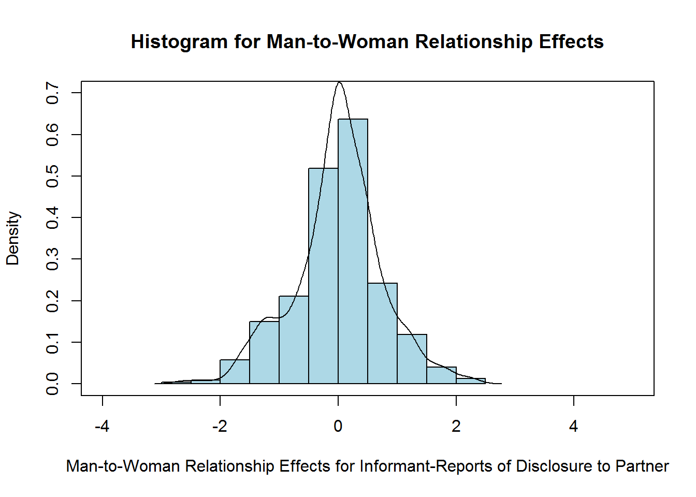
qqnorm(scale(REs_basicSRM_AIR_Disclose$cond$`GROUPID:MaleID:FemaleID`$MF), main = "Normal Quantile-Quantile Plot")
qqline(scale(REs_basicSRM_AIR_Disclose$cond$`GROUPID:MaleID:FemaleID`$MF))Q-Q plot suggests some non-normality.
Histogram and Q-Q Plot for Woman-to-Man Relationship Effects
hist(REs_basicSRM_AIR_Disclose$cond$`GROUPID:MaleID:FemaleID`$FM, col = "lightblue",
freq = FALSE, ylim = c(0, .7), xlim = c(-4, 5),
xlab = "Woman-to-Man Relationship Effects for Informant-Reports of Disclosure to Partner",
main = "Histogram for Woman-to-Man Relationship Effects")
lines(density(REs_basicSRM_AIR_Disclose$cond$`GROUPID:MaleID:FemaleID`$FM))
box()qqnorm(scale(REs_basicSRM_AIR_Disclose$cond$`GROUPID:MaleID:FemaleID`$FM), main = "Normal Quantile-Quantile Plot")
qqline(scale(REs_basicSRM_AIR_Disclose$cond$`GROUPID:MaleID:FemaleID`$FM))Q-Q plot suggests some non-normality.
Scatterplots for Pairs of Random Effects
Scatterplot of men’s actor and partner effects
plot(REs_basicSRM_AIR_Disclose$cond$`GROUPID:MaleID`)Scatterplot of women’s actor and partner effects
plot(REs_basicSRM_AIR_Disclose$cond$`GROUPID:FemaleID`)Scatterplot of men’s and women’s relationship effects
plot(REs_basicSRM_AIR_Disclose$cond$`GROUPID:MaleID:FemaleID`)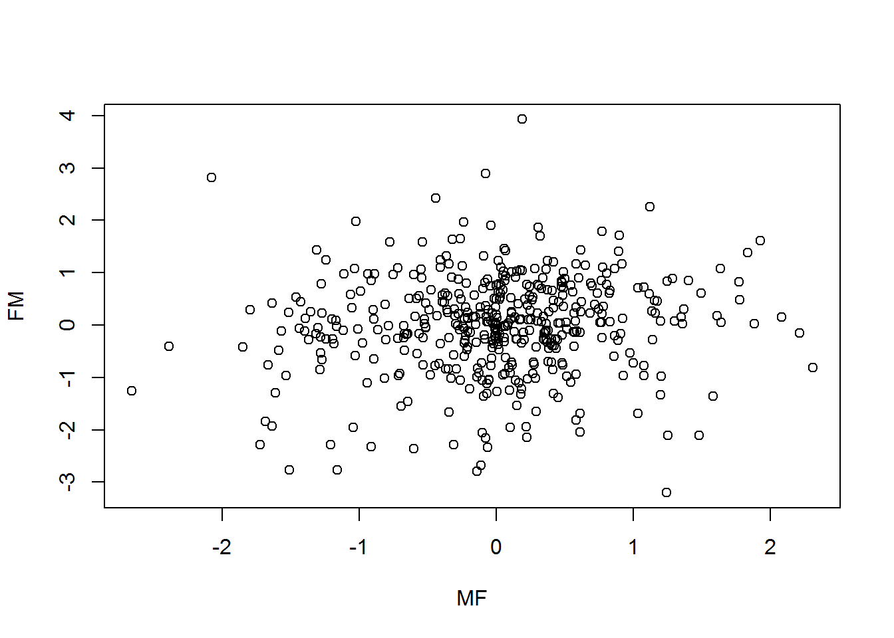
Getting Relative Percentage (these estimates are from SPSS)
SRMRelativePercentage(MActVar = 0.764269, FPartVar = 0.083245, MFRelVar = 0.815617,
FActVar = 0.704531, MPartVar = 0.101480, FMRelVar = 1.175084) Actor Partner Relation Plus Error Total Variance
Man-to-Woman Ratings 45.95 5.01 49.04 1.66
Woman-to-Man Ratings 35.56 5.12 59.31 1.98Basic SRM Analysis of Ratings of Partner Desirability
Visual Inspection of Variable Distributions Across Groups
dotplot(
reorder(GROUPID, ADESIRABLE) ~ ADESIRABLE,
data = SD_data4, jitter.y = TRUE,
ylab = "Speed-Dating Group",
main = "Dotplot of \'ADESIRABLE\' for Speed-Dating Groups")
Subsetting data
myvars <- c("GROUPID", "MaleID", "FemaleID", "MF", "FM",
"ADESIRABLE", "Agender", "GroupID_EC1", "GroupID_EC2",
"GroupID_EC3", "GroupID_EC4", "GroupID_EC5", "GroupID_EC6",
"GroupID_EC7", "GroupID_EC8", "GroupID_EC9", "GroupID_EC10",
"GroupID_EC11", "GroupID_EC12", "GroupID_EC13", "GroupID_EC14",
"GroupID_EC15", "GroupID_EC16", "GroupID_EC17", "GroupID_EC18",
"GroupID_EC19", "GroupID_EC20", "GroupID_EC21", "GroupID_EC22",
"GroupID_EC23", "GroupID_EC24", "GroupID_EC25", "GroupID_EC26",
"GroupID_EC27", "GroupID_EC28", "GroupID_EC29", "GroupID_EC30",
"GroupID_EC31", "GroupID_EC32")
SD_data_ADESIRABLE <- SD_data4[myvars]
SD_data_ADESIRABLE <- na.omit(SD_data_ADESIRABLE)Basic SRM Analysis
basicSRM_ADESIRABLE <- glmmTMB(ADESIRABLE ~ 1 + Agender*GroupID_EC1 + Agender*GroupID_EC2 + Agender*GroupID_EC3 + Agender*GroupID_EC4 +
Agender*GroupID_EC5 + Agender*GroupID_EC6 + Agender*GroupID_EC7 + Agender*GroupID_EC8 + Agender*GroupID_EC9 +
Agender*GroupID_EC10 + Agender*GroupID_EC11 + Agender*GroupID_EC12 + Agender*GroupID_EC13 + Agender*GroupID_EC14 +
Agender*GroupID_EC15 + Agender*GroupID_EC16 + Agender*GroupID_EC17 + Agender*GroupID_EC18 + Agender*GroupID_EC19 +
Agender*GroupID_EC20 + Agender*GroupID_EC21 + Agender*GroupID_EC22 + Agender*GroupID_EC23 + Agender*GroupID_EC24 +
Agender*GroupID_EC25 + Agender*GroupID_EC26 + Agender*GroupID_EC27 + Agender*GroupID_EC28 + Agender*GroupID_EC29 +
Agender*GroupID_EC30 + Agender*GroupID_EC31 + Agender*GroupID_EC32 + (0 + MF + FM|GROUPID:MaleID) + (0 + FM +
MF|GROUPID:FemaleID) + us(0 + MF + FM + 0| GROUPID:MaleID:FemaleID),data = SD_data_ADESIRABLE,
family = gaussian(link = "identity"), dispformula=~0, REML = TRUE,
verbose = FALSE, na.action = na.omit)Warning in fitTMB(TMBStruc): Model convergence problem; false convergence (8).
See vignette('troubleshooting')glmmTMB issues a false convergence warning (8), but same model runs fine in SPSS, with the same deviance value and virtually identical parameter estimates.
summary(basicSRM_ADESIRABLE) Family: gaussian ( identity )
Formula:
ADESIRABLE ~ 1 + Agender * GroupID_EC1 + Agender * GroupID_EC2 +
Agender * GroupID_EC3 + Agender * GroupID_EC4 + Agender *
GroupID_EC5 + Agender * GroupID_EC6 + Agender * GroupID_EC7 +
Agender * GroupID_EC8 + Agender * GroupID_EC9 + Agender *
GroupID_EC10 + Agender * GroupID_EC11 + Agender * GroupID_EC12 +
Agender * GroupID_EC13 + Agender * GroupID_EC14 + Agender *
GroupID_EC15 + Agender * GroupID_EC16 + Agender * GroupID_EC17 +
Agender * GroupID_EC18 + Agender * GroupID_EC19 + Agender *
GroupID_EC20 + Agender * GroupID_EC21 + Agender * GroupID_EC22 +
Agender * GroupID_EC23 + Agender * GroupID_EC24 + Agender *
GroupID_EC25 + Agender * GroupID_EC26 + Agender * GroupID_EC27 +
Agender * GroupID_EC28 + Agender * GroupID_EC29 + Agender *
GroupID_EC30 + Agender * GroupID_EC31 + Agender * GroupID_EC32 +
(0 + MF + FM | GROUPID:MaleID) + (0 + FM + MF | GROUPID:FemaleID) +
us(0 + MF + FM + 0 | GROUPID:MaleID:FemaleID)
Dispersion: ~0
Data: SD_data_ADESIRABLE
AIC BIC logLik deviance df.resid
2614.9 2972.9 -1232.5 2464.9 865
Random effects:
Conditional model:
Groups Name Variance Std.Dev. Corr
GROUPID:MaleID MF 0.2971 0.5451
FM 0.5772 0.7598 -0.16
GROUPID:FemaleID FM 0.2215 0.4706
MF 0.4633 0.6807 -0.20
GROUPID:MaleID:FemaleID MF 0.4472 0.6687
FM 0.6914 0.8315 0.19
Number of obs: 874, groups:
GROUPID:MaleID, 123; GROUPID:FemaleID, 121; GROUPID:MaleID:FemaleID, 455
Conditional model:
Estimate Std. Error z value Pr(>|z|)
(Intercept) 4.238166 0.060980 69.50 <2e-16 ***
Agender 0.025997 0.067650 0.38 0.7008
GroupID_EC1 0.008501 0.277945 0.03 0.9756
GroupID_EC2 -0.113166 0.315597 -0.36 0.7199
GroupID_EC3 -0.627054 0.374661 -1.67 0.0942 .
GroupID_EC4 0.522974 0.278363 1.88 0.0603 .
GroupID_EC5 -0.146118 0.397554 -0.37 0.7132
GroupID_EC6 0.187760 0.374661 0.50 0.6163
GroupID_EC7 -0.118272 0.327750 -0.36 0.7182
GroupID_EC8 0.032668 0.315597 0.10 0.9176
GroupID_EC9 0.660691 0.317016 2.08 0.0372 *
GroupID_EC10 0.428501 0.374661 1.14 0.2527
GroupID_EC11 0.317390 0.374661 0.85 0.3969
GroupID_EC12 0.063918 0.315597 0.20 0.8395
GroupID_EC13 0.391464 0.374661 1.04 0.2961
GroupID_EC14 0.053501 0.315597 0.17 0.8654
GroupID_EC15 0.011074 0.397782 0.03 0.9778
GroupID_EC16 0.132931 0.397223 0.33 0.7379
GroupID_EC17 -0.164091 0.374661 -0.44 0.6614
GroupID_EC18 -0.446499 0.315597 -1.41 0.1571
GroupID_EC19 -0.052980 0.374661 -0.14 0.8875
GroupID_EC20 -0.571499 0.374661 -1.53 0.1272
GroupID_EC21 -0.304832 0.277945 -1.10 0.2728
GroupID_EC22 -0.169578 0.298962 -0.57 0.5706
GroupID_EC23 0.116001 0.315597 0.37 0.7132
GroupID_EC24 0.022251 0.315597 0.07 0.9438
GroupID_EC25 -0.623582 0.315597 -1.98 0.0482 *
GroupID_EC26 0.261834 0.374661 0.70 0.4846
GroupID_EC27 0.257659 0.323167 0.80 0.4253
GroupID_EC28 -0.156694 0.378838 -0.41 0.6792
GroupID_EC29 -0.040249 0.315597 -0.13 0.8985
GroupID_EC30 -0.386314 0.374661 -1.03 0.3025
GroupID_EC31 0.018418 0.368027 0.05 0.9601
GroupID_EC32 -0.050666 0.315597 -0.16 0.8725
Agender:GroupID_EC1 0.434003 0.314484 1.38 0.1676
Agender:GroupID_EC2 0.869836 0.353839 2.46 0.0140 *
Agender:GroupID_EC3 -0.488960 0.414074 -1.18 0.2377
Agender:GroupID_EC4 -0.371524 0.314853 -1.18 0.2380
Agender:GroupID_EC5 0.288272 0.434900 0.66 0.5074
Agender:GroupID_EC6 -0.118590 0.414074 -0.29 0.7746
Agender:GroupID_EC7 -0.500058 0.364705 -1.37 0.1703
Agender:GroupID_EC8 -0.046830 0.353839 -0.13 0.8947
Agender:GroupID_EC9 -0.133187 0.355107 -0.38 0.7076
Agender:GroupID_EC10 -0.359330 0.414074 -0.87 0.3855
Agender:GroupID_EC11 -0.359330 0.414074 -0.87 0.3855
Agender:GroupID_EC12 0.234420 0.353839 0.66 0.5076
Agender:GroupID_EC13 0.418447 0.414074 1.01 0.3122
Agender:GroupID_EC14 0.057336 0.353839 0.16 0.8713
Agender:GroupID_EC15 -0.015977 0.435122 -0.04 0.9707
Agender:GroupID_EC16 -0.062308 0.434595 -0.14 0.8860
Agender:GroupID_EC17 -0.396368 0.414074 -0.96 0.3384
Agender:GroupID_EC18 0.057336 0.353839 0.16 0.8713
Agender:GroupID_EC19 -0.285256 0.414074 -0.69 0.4909
Agender:GroupID_EC20 -0.025997 0.414074 -0.06 0.9499
Agender:GroupID_EC21 0.494003 0.314484 1.57 0.1162
Agender:GroupID_EC22 0.002591 0.333202 0.01 0.9938
Agender:GroupID_EC23 -0.296830 0.353839 -0.84 0.4015
Agender:GroupID_EC24 0.026086 0.353839 0.07 0.9412
Agender:GroupID_EC25 -0.390580 0.353839 -1.10 0.2697
Agender:GroupID_EC26 -0.451923 0.414074 -1.09 0.2751
Agender:GroupID_EC27 0.436512 0.360616 1.21 0.2261
Agender:GroupID_EC28 0.262901 0.417854 0.63 0.5292
Agender:GroupID_EC29 0.609420 0.353839 1.72 0.0850 .
Agender:GroupID_EC30 0.751781 0.414074 1.82 0.0694 .
Agender:GroupID_EC31 -0.571696 0.395023 -1.45 0.1478
Agender:GroupID_EC32 -0.171830 0.353839 -0.49 0.6272
---
Signif. codes: 0 '***' 0.001 '**' 0.01 '*' 0.05 '.' 0.1 ' ' 1Checking Normality of Level-1 Residuals
Standard low tech way
hist(scale(resid(basicSRM_ADESIRABLE)),
freq = FALSE, ylim = c(0, .7), xlim = c(-4, 5),
main = "Basic SRM Analysis of Ratings of Partner Desirability",
col = "lightblue",
xlab = "Standardized Residuals")
lines(density(scale(resid(basicSRM_ADESIRABLE))))
box()qqnorm(scale(resid(basicSRM_ADESIRABLE)), main = "Normal Quantile-Quantile Plot")
qqline(scale(resid(basicSRM_ADESIRABLE)))Residuals appear normal in shape.
More high tech way with DHARMa package (note that residual ~ pred plot is incorrect)
basicSRM_ADESIRABLE_simres <- simulateResiduals(basicSRM_ADESIRABLE)Model family was recognized or set as continuous, but duplicate values were detected in the response. Consider if you are fitting an appropriate model.system.time(sr.basicSRM_ADESIRABLE <- simulateResiduals(basicSRM_ADESIRABLE))Model family was recognized or set as continuous, but duplicate values were detected in the response. Consider if you are fitting an appropriate model. user system elapsed
0.98 0.00 0.99 plot(sr.basicSRM_ADESIRABLE)The Kolmogoriv-Smirnov test confirms that the assumption of normality of the residuals is NOT violated.
Checking for potential non-linearity and heteroscedasticity
Method suggested by Florian Hartig on Github to obtain predicted values
that are not conditioned on random effects (this prevents an artificial
correlation between residuals and predicted values in scatterplot)
newdata=SD_data_ADESIRABLE
newdata$GROUPID = NA
pred_ADESIRABLE <- predict(basicSRM_ADESIRABLE, newdata)
Stdresiduals_ADESIRABLE <- scale(resid(basicSRM_ADESIRABLE))plot(pred_ADESIRABLE, Stdresiduals_ADESIRABLE)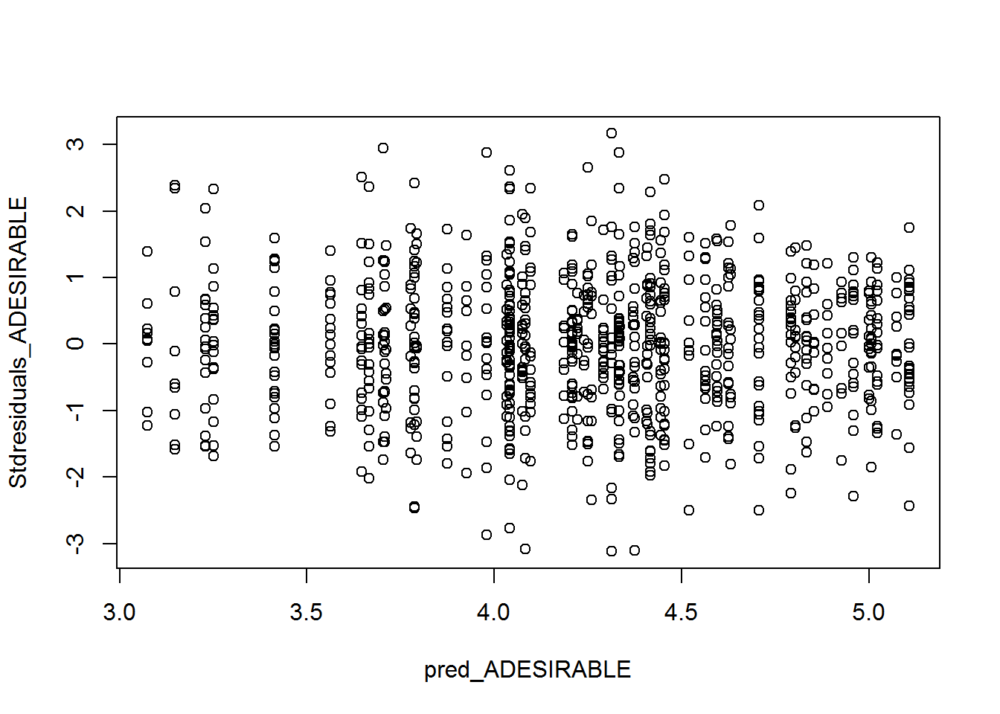
No noticeable issues with non-linearity or heteroscedasticity.
Checking Normality of Random Effects
Extracting Random Effects from Model
REs_basicSRM_ADESIRABLE <- ranef(basicSRM_ADESIRABLE)Histogram and Q-Q Plot for Male Actor Effects
hist(REs_basicSRM_ADESIRABLE$cond$`GROUPID:MaleID`$MF, col = "lightblue",
freq = FALSE, ylim = c(0, .7), xlim = c(-4, 5),
xlab = "Men's Actor Effects for Ratings of Partner Desirability",
main = "Histogram for Men's Actor Effects")
lines(density(REs_basicSRM_ADESIRABLE$cond$`GROUPID:MaleID`$MF))
box()qqnorm(scale(REs_basicSRM_ADESIRABLE$cond$`GROUPID:MaleID`$MF), main = "Normal Quantile-Quantile Plot")
qqline(scale(REs_basicSRM_ADESIRABLE$cond$`GROUPID:MaleID`$MF))The random effects for men’s actor effects seem pretty normal in shape.
Histogram and Q-Q Plot for Male Partner Effects
hist(REs_basicSRM_ADESIRABLE$cond$`GROUPID:MaleID`$FM, col = "lightblue",
freq = FALSE, ylim = c(0, .7), xlim = c(-4, 5),
xlab = "Men's Partner Effects for Ratings of Partner Desirability",
main = "Histogram for Men's Partner Effects")
lines(density(REs_basicSRM_ADESIRABLE$cond$`GROUPID:MaleID`$FM))
box()qqnorm(scale(REs_basicSRM_ADESIRABLE$cond$`GROUPID:MaleID`$FM), main = "Normal Quantile-Quantile Plot")
qqline(scale(REs_basicSRM_ADESIRABLE$cond$`GROUPID:MaleID`$FM))The random effects for men’s partner effects seem pretty normal in shape.
Histogram and Q-Q Plot for Female Actor Effects
hist(REs_basicSRM_ADESIRABLE$cond$`GROUPID:FemaleID`$FM, col = "lightblue",
freq = FALSE, ylim = c(0, .7), xlim = c(-4, 5),
xlab = "Women's Actor Effects for Ratings of Partner Desirability",
main = "Histogram for Women's Actor Effects")
lines(density(REs_basicSRM_ADESIRABLE$cond$`GROUPID:FemaleID`$FM))
box()qqnorm(scale(REs_basicSRM_ADESIRABLE$cond$`GROUPID:FemaleID`$FM), main = "Normal Quantile-Quantile Plot")
qqline(scale(REs_basicSRM_ADESIRABLE$cond$`GROUPID:FemaleID`$FM))The random effects for women’s actor effects seem somewhat non-normal in shape.
Histogram and Q-Q Plot for Female Partner Effects
hist(REs_basicSRM_ADESIRABLE$cond$`GROUPID:FemaleID`$MF, col = "lightblue",
freq = FALSE, ylim = c(0, .7), xlim = c(-4, 5),
xlab = "Women's Partner Effects for Ratings of Partner Desirability",
main = "Histogram for Women's Partner Effects")
lines(density(REs_basicSRM_ADESIRABLE$cond$`GROUPID:FemaleID`$MF))
box()
qqnorm(scale(REs_basicSRM_ADESIRABLE$cond$`GROUPID:FemaleID`$MF), main = "Normal Quantile-Quantile Plot")
qqline(scale(REs_basicSRM_ADESIRABLE$cond$`GROUPID:FemaleID`$MF))The random effects for women’s partner effects seem normal in shape.
Histogram and Q-Q Plot for Man-to-Woman Relationship Effects
hist(REs_basicSRM_ADESIRABLE$cond$`GROUPID:MaleID:FemaleID`$MF, col = "lightblue",
freq = FALSE, ylim = c(0, .7), xlim = c(-4, 5),
xlab = "Man-to-Woman Relationship Effects for Ratings of Partner Desirability",
main = "Histogram for Man-to-Woman Relationship Effects")
lines(density(REs_basicSRM_ADESIRABLE$cond$`GROUPID:MaleID:FemaleID`$MF))
box()qqnorm(scale(REs_basicSRM_ADESIRABLE$cond$`GROUPID:MaleID:FemaleID`$MF), main = "Normal Quantile-Quantile Plot")
qqline(scale(REs_basicSRM_ADESIRABLE$cond$`GROUPID:MaleID:FemaleID`$MF))
Q-Q plot suggests normality.
Histogram and Q-Q Plot for Woman-to-Man Relationship Effects
hist(REs_basicSRM_ADESIRABLE$cond$`GROUPID:MaleID:FemaleID`$FM, col = "lightblue",
freq = FALSE, ylim = c(0, .7), xlim = c(-4, 5),
xlab = "Woman-to-Man Relationship Effects for Ratings of Partner Desirability",
main = "Histogram for Woman-to-Man Relationship Effects")
lines(density(REs_basicSRM_ADESIRABLE$cond$`GROUPID:MaleID:FemaleID`$FM))
box()qqnorm(scale(REs_basicSRM_ADESIRABLE$cond$`GROUPID:MaleID:FemaleID`$FM), main = "Normal Quantile-Quantile Plot")
qqline(scale(REs_basicSRM_ADESIRABLE$cond$`GROUPID:MaleID:FemaleID`$FM))Q-Q plot suggests normality.
Scatterplots for Pairs of Random Effects
Scatterplot of men’s actor and partner effects
plot(REs_basicSRM_ADESIRABLE$cond$`GROUPID:MaleID`)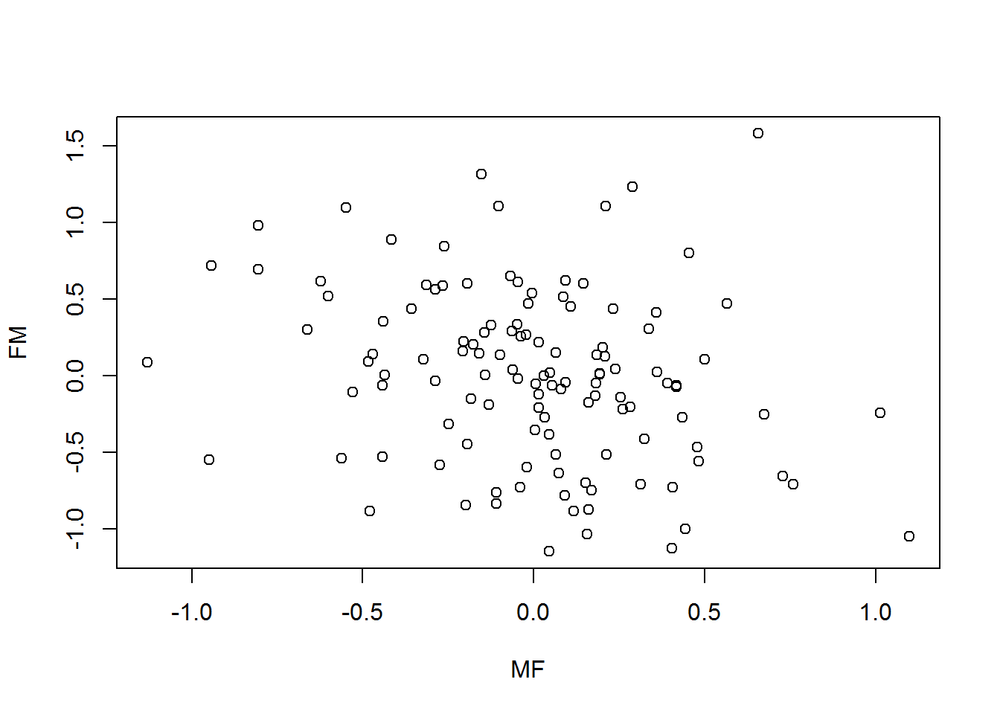
Scatterplot of women’s actor and partner effects
plot(REs_basicSRM_ADESIRABLE$cond$`GROUPID:FemaleID`)Scatterplot of men’s and women’s relationship effects
plot(REs_basicSRM_ADESIRABLE$cond$`GROUPID:MaleID:FemaleID`)
Getting Relative Percentage (these estimates are from SPSS)
SRMRelativePercentage(MActVar = 0.297157, FPartVar = 0.463355, MFRelVar = 0.447178,
FActVar = 0.221423, MPartVar = 0.577188, FMRelVar = 0.691441) Actor Partner Relation Plus Error Total Variance
Man-to-Woman Ratings 24.61 38.37 37.03 1.21
Woman-to-Man Ratings 14.86 38.74 46.40 1.49Basic SRM Analysis of Ratings of Perceived Responsiveness from Partner
Visual Inspection of Variable Distributions Across Groups
dotplot(
reorder(GROUPID, APercResp) ~ APercResp,
data = SD_data4, jitter.y = TRUE,
ylab = "Speed-Dating Group",
main = "Dotplot of \'APercResp\' for Speed-Dating Groups")Subsetting data
myvars <- c("GROUPID", "MaleID", "FemaleID", "MF", "FM",
"APercResp", "Agender", "GroupID_EC1", "GroupID_EC2",
"GroupID_EC3", "GroupID_EC4", "GroupID_EC5", "GroupID_EC6",
"GroupID_EC7", "GroupID_EC8", "GroupID_EC9", "GroupID_EC10",
"GroupID_EC11", "GroupID_EC12", "GroupID_EC13", "GroupID_EC14",
"GroupID_EC15", "GroupID_EC16", "GroupID_EC17", "GroupID_EC18",
"GroupID_EC19", "GroupID_EC20", "GroupID_EC21", "GroupID_EC22",
"GroupID_EC23", "GroupID_EC24", "GroupID_EC25", "GroupID_EC26",
"GroupID_EC27", "GroupID_EC28", "GroupID_EC29", "GroupID_EC30",
"GroupID_EC31", "GroupID_EC32")
SD_data_APercResp <- SD_data4[myvars]
SD_data_APercResp <- na.omit(SD_data_APercResp)Basic SRM Analysis
basicSRM_APercResp <- glmmTMB(APercResp ~ 1 + Agender*GroupID_EC1 + Agender*GroupID_EC2 + Agender*GroupID_EC3 + Agender*GroupID_EC4 +
Agender*GroupID_EC5 + Agender*GroupID_EC6 + Agender*GroupID_EC7 + Agender*GroupID_EC8 + Agender*GroupID_EC9 +
Agender*GroupID_EC10 + Agender*GroupID_EC11 + Agender*GroupID_EC12 + Agender*GroupID_EC13 + Agender*GroupID_EC14 +
Agender*GroupID_EC15 + Agender*GroupID_EC16 + Agender*GroupID_EC17 + Agender*GroupID_EC18 + Agender*GroupID_EC19 +
Agender*GroupID_EC20 + Agender*GroupID_EC21 + Agender*GroupID_EC22 + Agender*GroupID_EC23 + Agender*GroupID_EC24 +
Agender*GroupID_EC25 + Agender*GroupID_EC26 + Agender*GroupID_EC27 + Agender*GroupID_EC28 + Agender*GroupID_EC29 +
Agender*GroupID_EC30 + Agender*GroupID_EC31 + Agender*GroupID_EC32 + (0 + MF + FM|GROUPID:MaleID) + (0 + FM +
MF|GROUPID:FemaleID) + us(0 + MF + FM + 0| GROUPID:MaleID:FemaleID),data = SD_data_APercResp,
family = gaussian(link = "identity"), dispformula=~0, REML = TRUE,
verbose = FALSE, na.action = na.omit)Warning in fitTMB(TMBStruc): Model convergence problem; false convergence (8).
See vignette('troubleshooting')glmmTMB issues a false convergence warning (8), but same model runs fine in SPSS, with the same deviance value and virtually identical parameter estimates.
summary(basicSRM_APercResp) Family: gaussian ( identity )
Formula:
APercResp ~ 1 + Agender * GroupID_EC1 + Agender * GroupID_EC2 +
Agender * GroupID_EC3 + Agender * GroupID_EC4 + Agender *
GroupID_EC5 + Agender * GroupID_EC6 + Agender * GroupID_EC7 +
Agender * GroupID_EC8 + Agender * GroupID_EC9 + Agender *
GroupID_EC10 + Agender * GroupID_EC11 + Agender * GroupID_EC12 +
Agender * GroupID_EC13 + Agender * GroupID_EC14 + Agender *
GroupID_EC15 + Agender * GroupID_EC16 + Agender * GroupID_EC17 +
Agender * GroupID_EC18 + Agender * GroupID_EC19 + Agender *
GroupID_EC20 + Agender * GroupID_EC21 + Agender * GroupID_EC22 +
Agender * GroupID_EC23 + Agender * GroupID_EC24 + Agender *
GroupID_EC25 + Agender * GroupID_EC26 + Agender * GroupID_EC27 +
Agender * GroupID_EC28 + Agender * GroupID_EC29 + Agender *
GroupID_EC30 + Agender * GroupID_EC31 + Agender * GroupID_EC32 +
(0 + MF + FM | GROUPID:MaleID) + (0 + FM + MF | GROUPID:FemaleID) +
us(0 + MF + FM + 0 | GROUPID:MaleID:FemaleID)
Dispersion: ~0
Data: SD_data_APercResp
AIC BIC logLik deviance df.resid
2653.5 3011.9 -1251.8 2503.5 870
Random effects:
Conditional model:
Groups Name Variance Std.Dev. Corr
GROUPID:MaleID MF 0.45362 0.6735
FM 0.12808 0.3579 0.49
GROUPID:FemaleID FM 0.45900 0.6775
MF 0.07405 0.2721 -0.08
GROUPID:MaleID:FemaleID MF 0.61741 0.7858
FM 0.78804 0.8877 0.20
Number of obs: 879, groups:
GROUPID:MaleID, 123; GROUPID:FemaleID, 121; GROUPID:MaleID:FemaleID, 455
Conditional model:
Estimate Std. Error z value Pr(>|z|)
(Intercept) 5.019219 0.063318 79.27 < 2e-16 ***
Agender 0.077405 0.052894 1.46 0.14336
GroupID_EC1 0.250781 0.285867 0.88 0.38034
GroupID_EC2 -0.097344 0.325713 -0.30 0.76504
GroupID_EC3 -0.269219 0.388710 -0.69 0.48856
GroupID_EC4 0.190781 0.285867 0.67 0.50453
GroupID_EC5 -0.570055 0.420123 -1.36 0.17482
GroupID_EC6 0.036336 0.388710 0.09 0.92552
GroupID_EC7 0.628782 0.344853 1.82 0.06825 .
GroupID_EC8 -0.347344 0.325713 -1.07 0.28624
GroupID_EC9 0.355781 0.325713 1.09 0.27469
GroupID_EC10 0.508559 0.388710 1.31 0.19076
GroupID_EC11 0.008559 0.388710 0.02 0.98243
GroupID_EC12 -0.097344 0.325713 -0.30 0.76504
GroupID_EC13 0.230781 0.388710 0.59 0.55271
GroupID_EC14 0.168281 0.325713 0.52 0.60540
GroupID_EC15 0.120094 0.425092 0.28 0.77755
GroupID_EC16 -0.356387 0.418085 -0.85 0.39398
GroupID_EC17 -0.352552 0.388710 -0.91 0.36442
GroupID_EC18 -0.222344 0.325713 -0.68 0.49484
GroupID_EC19 0.203003 0.388710 0.52 0.60150
GroupID_EC20 -0.769219 0.388710 -1.98 0.04783 *
GroupID_EC21 -0.176251 0.286514 -0.62 0.53845
GroupID_EC22 -0.566285 0.312308 -1.81 0.06980 .
GroupID_EC23 -0.003594 0.325713 -0.01 0.99120
GroupID_EC24 -0.003594 0.325713 -0.01 0.99120
GroupID_EC25 -0.050469 0.325713 -0.15 0.87686
GroupID_EC26 -0.352552 0.388710 -0.91 0.36442
GroupID_EC27 0.308906 0.325713 0.95 0.34293
GroupID_EC28 -0.074775 0.388710 -0.19 0.84746
GroupID_EC29 0.355781 0.325713 1.09 0.27469
GroupID_EC30 -0.185886 0.388710 -0.48 0.63250
GroupID_EC31 0.153341 0.386720 0.40 0.69172
GroupID_EC32 0.355781 0.325713 1.09 0.27469
Agender:GroupID_EC1 -0.127405 0.237090 -0.54 0.59101
Agender:GroupID_EC2 0.313220 0.269955 1.16 0.24594
Agender:GroupID_EC3 0.228151 0.321857 0.71 0.47841
Agender:GroupID_EC4 -0.067405 0.237090 -0.28 0.77618
Agender:GroupID_EC5 -0.403991 0.363168 -1.11 0.26596
Agender:GroupID_EC6 -0.244072 0.321857 -0.76 0.44826
Agender:GroupID_EC7 -0.131656 0.292772 -0.45 0.65294
Agender:GroupID_EC8 0.281970 0.269955 1.04 0.29625
Agender:GroupID_EC9 0.172595 0.269955 0.64 0.52260
Agender:GroupID_EC10 -0.271849 0.321857 -0.84 0.39832
Agender:GroupID_EC11 -0.105183 0.321857 -0.33 0.74382
Agender:GroupID_EC12 0.031970 0.269955 0.12 0.90573
Agender:GroupID_EC13 0.561484 0.321857 1.74 0.08107 .
Agender:GroupID_EC14 0.328845 0.269955 1.22 0.22317
Agender:GroupID_EC15 0.116615 0.365001 0.32 0.74935
Agender:GroupID_EC16 -0.247906 0.356770 -0.69 0.48714
Agender:GroupID_EC17 -0.021849 0.321857 -0.07 0.94588
Agender:GroupID_EC18 -0.249280 0.269955 -0.92 0.35579
Agender:GroupID_EC19 0.144817 0.321857 0.45 0.65275
Agender:GroupID_EC20 0.283706 0.321857 0.88 0.37807
Agender:GroupID_EC21 0.039627 0.237867 0.17 0.86769
Agender:GroupID_EC22 -0.084471 0.268374 -0.31 0.75295
Agender:GroupID_EC23 -0.311780 0.269955 -1.15 0.24812
Agender:GroupID_EC24 0.438220 0.269955 1.62 0.10452
Agender:GroupID_EC25 -0.077405 0.269955 -0.29 0.77432
Agender:GroupID_EC26 -0.355183 0.321857 -1.10 0.26979
Agender:GroupID_EC27 -0.155530 0.269955 -0.58 0.56453
Agender:GroupID_EC28 -0.355183 0.321857 -1.10 0.26979
Agender:GroupID_EC29 0.235095 0.269955 0.87 0.38383
Agender:GroupID_EC30 0.922595 0.321857 2.87 0.00415 **
Agender:GroupID_EC31 -0.220066 0.338458 -0.65 0.51556
Agender:GroupID_EC32 -0.452405 0.269955 -1.68 0.09377 .
---
Signif. codes: 0 '***' 0.001 '**' 0.01 '*' 0.05 '.' 0.1 ' ' 1Checking Normality of Level-1 Residuals
Standard low tech way
hist(scale(resid(basicSRM_APercResp)),
freq = FALSE, ylim = c(0, .7), xlim = c(-4, 5),
main = "Basic SRM Analysis of Ratings of Perceived Responsiveness from Partner",
col = "lightblue",
xlab = "Standardized Residuals")
lines(density(scale(resid(basicSRM_APercResp))))
box()qqnorm(scale(resid(basicSRM_APercResp)), main = "Normal Quantile-Quantile Plot")
qqline(scale(resid(basicSRM_APercResp)))There are some minor problems with the normality of the residuals for APercResp.
More high tech way with DHARMa package (note that residual ~ pred plot is incorrect)
basicSRM_APercResp_simres <- simulateResiduals(basicSRM_APercResp)Model family was recognized or set as continuous, but duplicate values were detected in the response. Consider if you are fitting an appropriate model.system.time(sr.basicSRM_APercResp <- simulateResiduals(basicSRM_APercResp))Model family was recognized or set as continuous, but duplicate values were detected in the response. Consider if you are fitting an appropriate model. user system elapsed
0.99 0.00 0.99 plot(sr.basicSRM_APercResp)The Kolmogoriv-Smirnov test confirms that the assumption of normality of the residuals is violated.
Checking for potential non-linearity and heteroscedasticity
Method suggested by Florian Hartig on Github to obtain predicted values
that are not conditioned on random effects (this prevents an artificial
correlation between residuals and predicted values in scatterplot)
newdata=SD_data_APercResp
newdata$GROUPID = NA
pred_APercResp <- predict(basicSRM_APercResp, newdata)
Stdresiduals_APercResp <- scale(resid(basicSRM_APercResp))plot(pred_APercResp, Stdresiduals_APercResp)No noticeable issues with non-linearity or heteroscedasticity.
Checking Normality of Random Effects
Extracting Random Effects from Model
REs_basicSRM_APercResp <- ranef(basicSRM_APercResp)Histogram and Q-Q Plot for Male Actor Effects
hist(REs_basicSRM_APercResp$cond$`GROUPID:MaleID`$MF, col = "lightblue",
freq = FALSE, ylim = c(0, .7), xlim = c(-4, 5),
xlab = "Men's Actor Effects for Ratings of Perceived Responsiveness from Partner",
main = "Histogram for Men's Actor Effects")
lines(density(REs_basicSRM_APercResp$cond$`GROUPID:MaleID`$MF))
box()qqnorm(scale(REs_basicSRM_APercResp$cond$`GROUPID:MaleID`$MF), main = "Normal Quantile-Quantile Plot")
qqline(scale(REs_basicSRM_APercResp$cond$`GROUPID:MaleID`$MF))The random effects for men’s actor effects seem a little non-normal in shape.
Histogram and Q-Q Plot for Male Partner Effects
hist(REs_basicSRM_APercResp$cond$`GROUPID:MaleID`$FM, col = "lightblue",
freq = FALSE, ylim = c(0, .7), xlim = c(-4, 5),
xlab = "Men's Partner Effects for Ratings of Perceived Responsiveness from Partner",
main = "Histogram for Men's Partner Effects")
lines(density(REs_basicSRM_APercResp$cond$`GROUPID:MaleID`$FM))
box()qqnorm(scale(REs_basicSRM_APercResp$cond$`GROUPID:MaleID`$FM), main = "Normal Quantile-Quantile Plot")
qqline(scale(REs_basicSRM_APercResp$cond$`GROUPID:MaleID`$FM))The random effects for men’s partner effects seem pretty normal in shape.
Histogram and Q-Q Plot for Female Actor Effects
hist(REs_basicSRM_APercResp$cond$`GROUPID:FemaleID`$FM, col = "lightblue",
freq = FALSE, ylim = c(0, .7), xlim = c(-4, 5),
xlab = "Women's Actor Effects for Ratings of Perceived Responsiveness from Partner",
main = "Histogram for Women's Actor Effects")
lines(density(REs_basicSRM_APercResp$cond$`GROUPID:FemaleID`$FM))
box()qqnorm(scale(REs_basicSRM_APercResp$cond$`GROUPID:FemaleID`$FM), main = "Normal Quantile-Quantile Plot")
qqline(scale(REs_basicSRM_APercResp$cond$`GROUPID:FemaleID`$FM))
The random effects for women’s actor effects seem more-or-less normal in shape.
Histogram and Q-Q Plot for Female Partner Effects
hist(REs_basicSRM_APercResp$cond$`GROUPID:FemaleID`$MF, col = "lightblue",
freq = FALSE, ylim = c(0, .7), xlim = c(-4, 5),
xlab = "Women's Partner Effects for Ratings of Perceived Responsiveness from Partner",
main = "Histogram for Women's Partner Effects")
lines(density(REs_basicSRM_APercResp$cond$`GROUPID:FemaleID`$MF))
box()qqnorm(scale(REs_basicSRM_APercResp$cond$`GROUPID:FemaleID`$MF), main = "Normal Quantile-Quantile Plot")
qqline(scale(REs_basicSRM_APercResp$cond$`GROUPID:FemaleID`$MF))The random effects for women’s partner effects seem somewhat non-normal in shape.
Histogram and Q-Q Plot for Man-to-Woman Relationship Effects
hist(REs_basicSRM_APercResp$cond$`GROUPID:MaleID:FemaleID`$MF, col = "lightblue",
freq = FALSE, ylim = c(0, .7), xlim = c(-4, 5),
xlab = "Man-to-Woman Relationship Effects for Ratings of Perceived Responsiveness from Partner",
main = "Histogram for Man-to-Woman Relationship Effects")
lines(density(REs_basicSRM_APercResp$cond$`GROUPID:MaleID:FemaleID`$MF))
box()qqnorm(scale(REs_basicSRM_APercResp$cond$`GROUPID:MaleID:FemaleID`$MF), main = "Normal Quantile-Quantile Plot")
qqline(scale(REs_basicSRM_APercResp$cond$`GROUPID:MaleID:FemaleID`$MF))Q-Q plot suggests normality.
Histogram and Q-Q Plot for Woman-to-Man Relationship Effects
hist(REs_basicSRM_APercResp$cond$`GROUPID:MaleID:FemaleID`$FM, col = "lightblue",
freq = FALSE, ylim = c(0, .7), xlim = c(-4, 5),
xlab = "Woman-to-Man Relationship Effects for Ratings of Perceived Responsiveness from Partner",
main = "Histogram for Woman-to-Man Relationship Effects")
lines(density(REs_basicSRM_APercResp$cond$`GROUPID:MaleID:FemaleID`$FM))
box()qqnorm(scale(REs_basicSRM_APercResp$cond$`GROUPID:MaleID:FemaleID`$FM), main = "Normal Quantile-Quantile Plot")
qqline(scale(REs_basicSRM_APercResp$cond$`GROUPID:MaleID:FemaleID`$FM))Q-Q plot suggests some non-normality.
Scatterplots for Pairs of Random Effects
Scatterplot of men’s actor and partner effects
plot(REs_basicSRM_APercResp$cond$`GROUPID:MaleID`)Scatterplot of women’s actor and partner effects
plot(REs_basicSRM_APercResp$cond$`GROUPID:FemaleID`)Scatterplot of men’s and women’s relationship effects
plot(REs_basicSRM_APercResp$cond$`GROUPID:MaleID:FemaleID`)Getting Relative Percentage (these estimates are from SPSS)
SRMRelativePercentage(MActVar = 0.453620, FPartVar = 0.074056, MFRelVar = 0.617408,
FActVar = 0.459010, MPartVar = 0.128050, FMRelVar = 0.788042) Actor Partner Relation Plus Error Total Variance
Man-to-Woman Ratings 39.61 6.47 53.92 1.15
Woman-to-Man Ratings 33.38 9.31 57.31 1.38Basic SRM Analysis of Ratings of Perceived Admiration from Partner
Visual Inspection of Variable Distributions Across Groups
SD_data4$AADMIRE <- as.numeric(SD_data4$AADMIRE)
dotplot(
reorder(GROUPID, AADMIRE) ~ AADMIRE,
data = SD_data4, jitter.y = TRUE,
ylab = "Speed-Dating Group",
main = "Dotplot of \'AADMIRE\' for Speed-Dating Groups")Subsetting data
myvars <- c("GROUPID", "MaleID", "FemaleID", "MF", "FM",
"AADMIRE", "Agender", "GroupID_EC1", "GroupID_EC2",
"GroupID_EC3", "GroupID_EC4", "GroupID_EC5", "GroupID_EC6",
"GroupID_EC7", "GroupID_EC8", "GroupID_EC9", "GroupID_EC10",
"GroupID_EC11", "GroupID_EC12", "GroupID_EC13", "GroupID_EC14",
"GroupID_EC15", "GroupID_EC16", "GroupID_EC17", "GroupID_EC18",
"GroupID_EC19", "GroupID_EC20", "GroupID_EC21", "GroupID_EC22",
"GroupID_EC23", "GroupID_EC24", "GroupID_EC25", "GroupID_EC26",
"GroupID_EC27", "GroupID_EC28", "GroupID_EC29", "GroupID_EC30",
"GroupID_EC31", "GroupID_EC32")
SD_data_AADMIRE <- SD_data4[myvars]
SD_data_AADMIRE <- na.omit(SD_data_AADMIRE)Basic SRM Analysis
basicSRM_AADMIRE <- glmmTMB(AADMIRE ~ 1 + Agender*GroupID_EC1 + Agender*GroupID_EC2 + Agender*GroupID_EC3 + Agender*GroupID_EC4 +
Agender*GroupID_EC5 + Agender*GroupID_EC6 + Agender*GroupID_EC7 + Agender*GroupID_EC8 + Agender*GroupID_EC9 +
Agender*GroupID_EC10 + Agender*GroupID_EC11 + Agender*GroupID_EC12 + Agender*GroupID_EC13 + Agender*GroupID_EC14 +
Agender*GroupID_EC15 + Agender*GroupID_EC16 + Agender*GroupID_EC17 + Agender*GroupID_EC18 + Agender*GroupID_EC19 +
Agender*GroupID_EC20 + Agender*GroupID_EC21 + Agender*GroupID_EC22 + Agender*GroupID_EC23 + Agender*GroupID_EC24 +
Agender*GroupID_EC25 + Agender*GroupID_EC26 + Agender*GroupID_EC27 + Agender*GroupID_EC28 + Agender*GroupID_EC29 +
Agender*GroupID_EC30 + Agender*GroupID_EC31 + Agender*GroupID_EC32 + (0 + MF + FM|GROUPID:MaleID) + (0 + FM +
MF|GROUPID:FemaleID) + us(0 + MF + FM + 0| GROUPID:MaleID:FemaleID),data = SD_data_AADMIRE,
family = gaussian(link = "identity"), dispformula=~0, REML = TRUE,
verbose = FALSE, na.action = na.omit)Warning in fitTMB(TMBStruc): Model convergence problem; false convergence (8).
See vignette('troubleshooting')glmmTMB issues a false convergence warning (8), but same model runs fine in SPSS, with the same deviance value and virtually identical parameter estimates.
summary(basicSRM_AADMIRE) Family: gaussian ( identity )
Formula:
AADMIRE ~ 1 + Agender * GroupID_EC1 + Agender * GroupID_EC2 +
Agender * GroupID_EC3 + Agender * GroupID_EC4 + Agender *
GroupID_EC5 + Agender * GroupID_EC6 + Agender * GroupID_EC7 +
Agender * GroupID_EC8 + Agender * GroupID_EC9 + Agender *
GroupID_EC10 + Agender * GroupID_EC11 + Agender * GroupID_EC12 +
Agender * GroupID_EC13 + Agender * GroupID_EC14 + Agender *
GroupID_EC15 + Agender * GroupID_EC16 + Agender * GroupID_EC17 +
Agender * GroupID_EC18 + Agender * GroupID_EC19 + Agender *
GroupID_EC20 + Agender * GroupID_EC21 + Agender * GroupID_EC22 +
Agender * GroupID_EC23 + Agender * GroupID_EC24 + Agender *
GroupID_EC25 + Agender * GroupID_EC26 + Agender * GroupID_EC27 +
Agender * GroupID_EC28 + Agender * GroupID_EC29 + Agender *
GroupID_EC30 + Agender * GroupID_EC31 + Agender * GroupID_EC32 +
(0 + MF + FM | GROUPID:MaleID) + (0 + FM + MF | GROUPID:FemaleID) +
us(0 + MF + FM + 0 | GROUPID:MaleID:FemaleID)
Dispersion: ~0
Data: SD_data_AADMIRE
AIC BIC logLik deviance df.resid
2411.8 2770.1 -1130.9 2261.8 868
Random effects:
Conditional model:
Groups Name Variance Std.Dev. Corr
GROUPID:MaleID MF 0.63093 0.7943
FM 0.06909 0.2628 0.46
GROUPID:FemaleID FM 0.62757 0.7922
MF 0.09954 0.3155 0.24
GROUPID:MaleID:FemaleID MF 0.39911 0.6318
FM 0.51161 0.7153 0.19
Number of obs: 877, groups:
GROUPID:MaleID, 123; GROUPID:FemaleID, 121; GROUPID:MaleID:FemaleID, 455
Conditional model:
Estimate Std. Error z value Pr(>|z|)
(Intercept) 3.708913 0.067510 54.94 < 2e-16 ***
Agender 0.252543 0.054802 4.61 4.06e-06 ***
GroupID_EC1 -0.111015 0.310946 -0.36 0.72107
GroupID_EC2 -0.531829 0.350225 -1.52 0.12888
GroupID_EC3 0.031828 0.411226 0.08 0.93831
GroupID_EC4 0.391087 0.310625 1.26 0.20802
GroupID_EC5 0.204211 0.444037 0.46 0.64559
GroupID_EC6 0.402199 0.411226 0.98 0.32805
GroupID_EC7 0.475869 0.370014 1.29 0.19841
GroupID_EC8 -0.688794 0.351119 -1.96 0.04980 *
GroupID_EC9 0.499421 0.350225 1.43 0.15387
GroupID_EC10 -0.153357 0.411226 -0.37 0.70920
GroupID_EC11 0.235532 0.411226 0.57 0.56681
GroupID_EC12 -0.552663 0.350225 -1.58 0.11456
GroupID_EC13 0.068865 0.411226 0.17 0.86701
GroupID_EC14 0.093171 0.350225 0.27 0.79022
GroupID_EC15 0.115550 0.447065 0.26 0.79605
GroupID_EC16 0.456573 0.443306 1.03 0.30304
GroupID_EC17 -0.005209 0.411226 -0.01 0.98989
GroupID_EC18 0.009837 0.350225 0.03 0.97759
GroupID_EC19 0.272569 0.411226 0.66 0.50745
GroupID_EC20 -0.616320 0.411226 -1.50 0.13394
GroupID_EC21 -0.162246 0.310625 -0.52 0.60145
GroupID_EC22 -0.482960 0.341173 -1.42 0.15690
GroupID_EC23 0.228587 0.350225 0.65 0.51396
GroupID_EC24 -0.021413 0.350225 -0.06 0.95125
GroupID_EC25 -0.490163 0.350225 -1.40 0.16164
GroupID_EC26 -0.357061 0.411226 -0.87 0.38524
GroupID_EC27 -0.182617 0.351160 -0.52 0.60304
GroupID_EC28 -0.153357 0.411226 -0.37 0.70920
GroupID_EC29 -0.021413 0.350225 -0.06 0.95125
GroupID_EC30 0.034116 0.413908 0.08 0.93431
GroupID_EC31 -0.108213 0.413034 -0.26 0.79332
GroupID_EC32 0.457754 0.350225 1.31 0.19120
Agender:GroupID_EC1 -0.521313 0.249894 -2.09 0.03697 *
Agender:GroupID_EC2 0.695373 0.281457 2.47 0.01349 *
Agender:GroupID_EC3 0.377086 0.330791 1.14 0.25431
Agender:GroupID_EC4 -0.219210 0.249494 -0.88 0.37961
Agender:GroupID_EC5 -0.450531 0.370781 -1.22 0.22433
Agender:GroupID_EC6 -0.067358 0.330791 -0.20 0.83864
Agender:GroupID_EC7 -0.249825 0.305726 -0.82 0.41384
Agender:GroupID_EC8 -0.043495 0.282575 -0.15 0.87767
Agender:GroupID_EC9 -0.294210 0.281457 -1.05 0.29588
Agender:GroupID_EC10 -0.622914 0.330791 -1.88 0.05969 .
Agender:GroupID_EC11 -0.122914 0.330791 -0.37 0.71021
Agender:GroupID_EC12 0.320373 0.281457 1.14 0.25501
Agender:GroupID_EC13 0.414123 0.330791 1.25 0.21060
Agender:GroupID_EC14 0.257873 0.281457 0.92 0.35956
Agender:GroupID_EC15 0.367439 0.374419 0.98 0.32642
Agender:GroupID_EC16 -0.198169 0.369911 -0.54 0.59215
Agender:GroupID_EC17 -0.882173 0.330791 -2.67 0.00766 **
Agender:GroupID_EC18 0.007873 0.281457 0.03 0.97768
Agender:GroupID_EC19 0.025234 0.330791 0.08 0.93919
Agender:GroupID_EC20 0.247457 0.330791 0.75 0.45441
Agender:GroupID_EC21 0.227457 0.249494 0.91 0.36194
Agender:GroupID_EC22 -0.373257 0.286633 -1.30 0.19284
Agender:GroupID_EC23 0.080790 0.281457 0.29 0.77408
Agender:GroupID_EC24 -0.148377 0.281457 -0.53 0.59807
Agender:GroupID_EC25 0.132873 0.281457 0.47 0.63686
Agender:GroupID_EC26 -0.345136 0.330791 -1.04 0.29678
Agender:GroupID_EC27 0.637828 0.282623 2.26 0.02402 *
Agender:GroupID_EC28 0.043753 0.330791 0.13 0.89477
Agender:GroupID_EC29 0.018290 0.281457 0.06 0.94819
Agender:GroupID_EC30 0.930354 0.334094 2.78 0.00536 **
Agender:GroupID_EC31 -0.175396 0.355025 -0.49 0.62128
Agender:GroupID_EC32 -0.002543 0.281457 -0.01 0.99279
---
Signif. codes: 0 '***' 0.001 '**' 0.01 '*' 0.05 '.' 0.1 ' ' 1Checking Normality of Level-1 Residuals
Standard low tech way
hist(scale(resid(basicSRM_AADMIRE)),
freq = FALSE, ylim = c(0, .7), xlim = c(-4, 5),
main = "Basic SRM Analysis of Ratings of Perceived Admiration from Partner",
col = "lightblue",
xlab = "Standardized Residuals")
lines(density(scale(resid(basicSRM_AADMIRE))))
box()qqnorm(scale(resid(basicSRM_AADMIRE)), main = "Normal Quantile-Quantile Plot")
qqline(scale(resid(basicSRM_AADMIRE)))Residuals appear normal in shape.
More high tech way with DHARMa package (note that residual ~ pred plot is incorrect)
basicSRM_AADMIRE_simres <- simulateResiduals(basicSRM_AADMIRE)Model family was recognized or set as continuous, but duplicate values were detected in the response. Consider if you are fitting an appropriate model.system.time(sr.basicSRM_AADMIRE <- simulateResiduals(basicSRM_AADMIRE))Model family was recognized or set as continuous, but duplicate values were detected in the response. Consider if you are fitting an appropriate model. user system elapsed
1.01 0.01 1.03 plot(sr.basicSRM_AADMIRE)The Kolmogoriv-Smirnov test confirms that the assumption of normality of the residuals is NOT violated.
Checking for potential non-linearity and heteroscedasticity
Method suggested by Florian Hartig on Github to obtain predicted values
that are not conditioned on random effects (this prevents an artificial
correlation between residuals and predicted values in scatterplot)
newdata=SD_data_AADMIRE
newdata$GROUPID = NA
pred_AADMIRE <- predict(basicSRM_AADMIRE, newdata)
Stdresiduals_AADMIRE <- scale(resid(basicSRM_AADMIRE))plot(pred_AADMIRE, Stdresiduals_AADMIRE)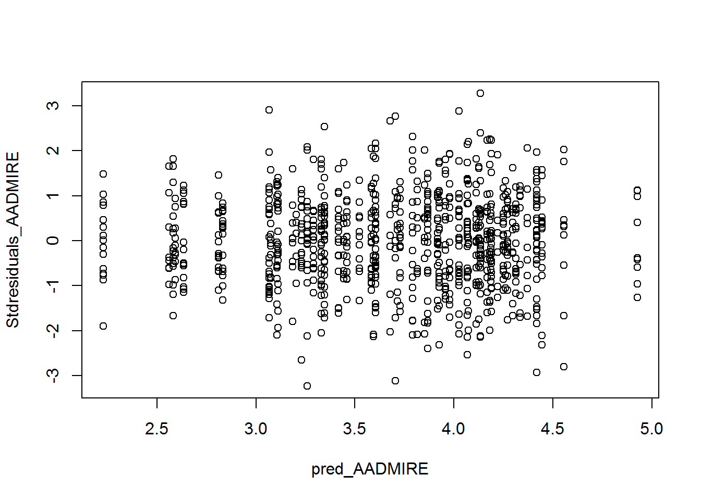
No noticeable issues with non-linearity or heteroscedasticity.
Checking Normality of Random Effects
Extracting Random Effects from Model
REs_basicSRM_AADMIRE <- ranef(basicSRM_AADMIRE)Histogram and Q-Q Plot for Male Actor Effects
hist(REs_basicSRM_AADMIRE$cond$`GROUPID:MaleID`$MF, col = "lightblue",
freq = FALSE, ylim = c(0, .7), xlim = c(-4, 5),
xlab = "Men's Actor Effects for Ratings of Perceived Admiration from Partner",
main = "Histogram for Men's Actor Effects")
lines(density(REs_basicSRM_AADMIRE$cond$`GROUPID:MaleID`$MF))
box()qqnorm(scale(REs_basicSRM_AADMIRE$cond$`GROUPID:MaleID`$MF), main = "Normal Quantile-Quantile Plot")
qqline(scale(REs_basicSRM_AADMIRE$cond$`GROUPID:MaleID`$MF))The random effects for men’s actor effects seem somewhat non-normal in shape.
Histogram and Q-Q Plot for Male Partner Effects
hist(REs_basicSRM_AADMIRE$cond$`GROUPID:MaleID`$FM, col = "lightblue",
freq = FALSE, ylim = c(0, .7), xlim = c(-4, 5),
xlab = "Men's Partner Effects for Ratings of Perceived Admiration from Partner",
main = "Histogram for Men's Partner Effects")
lines(density(REs_basicSRM_AADMIRE$cond$`GROUPID:MaleID`$FM))
box()qqnorm(scale(REs_basicSRM_AADMIRE$cond$`GROUPID:MaleID`$FM), main = "Normal Quantile-Quantile Plot")
qqline(scale(REs_basicSRM_AADMIRE$cond$`GROUPID:MaleID`$FM))The random effects for men’s partner effects seem pretty normal in shape.
Histogram and Q-Q Plot for Female Actor Effects
hist(REs_basicSRM_AADMIRE$cond$`GROUPID:FemaleID`$FM, col = "lightblue",
freq = FALSE, ylim = c(0, .7), xlim = c(-4, 5),
xlab = "Women's Actor Effects for Ratings of Perceived Admiration from Partner",
main = "Histogram for Women's Actor Effects")
lines(density(REs_basicSRM_AADMIRE$cond$`GROUPID:FemaleID`$FM))
box()qqnorm(scale(REs_basicSRM_AADMIRE$cond$`GROUPID:FemaleID`$FM), main = "Normal Quantile-Quantile Plot")
qqline(scale(REs_basicSRM_AADMIRE$cond$`GROUPID:FemaleID`$FM))The random effects for women’s actor effects seem pretty normal in shape.
Histogram and Q-Q Plot for Female Partner Effects
hist(REs_basicSRM_AADMIRE$cond$`GROUPID:FemaleID`$MF, col = "lightblue",
freq = FALSE, ylim = c(0, .7), xlim = c(-4, 5),
xlab = "Women's Partner Effects for Ratings of Perceived Admiration from Partner",
main = "Histogram for Women's Partner Effects")
lines(density(REs_basicSRM_AADMIRE$cond$`GROUPID:FemaleID`$MF))
box()qqnorm(scale(REs_basicSRM_AADMIRE$cond$`GROUPID:FemaleID`$MF), main = "Normal Quantile-Quantile Plot")
qqline(scale(REs_basicSRM_AADMIRE$cond$`GROUPID:FemaleID`$MF))The random effects for women’s partner effects seem pretty normal in shape.
Histogram and Q-Q Plot for Man-to-Woman Relationship Effects
hist(REs_basicSRM_AADMIRE$cond$`GROUPID:MaleID:FemaleID`$MF, col = "lightblue",
freq = FALSE, ylim = c(0, .7), xlim = c(-4, 5),
xlab = "Man-to-Woman Relationship Effects for Ratings of Perceived Admiration from Partner",
main = "Histogram for Man-to-Woman Relationship Effects")
lines(density(REs_basicSRM_AADMIRE$cond$`GROUPID:MaleID:FemaleID`$MF))
box()qqnorm(scale(REs_basicSRM_AADMIRE$cond$`GROUPID:MaleID:FemaleID`$MF), main = "Normal Quantile-Quantile Plot")
qqline(scale(REs_basicSRM_AADMIRE$cond$`GROUPID:MaleID:FemaleID`$MF))Q-Q plot suggests normality.
Histogram and Q-Q Plot for Woman-to-Man Relationship Effects
hist(REs_basicSRM_AADMIRE$cond$`GROUPID:MaleID:FemaleID`$FM, col = "lightblue",
freq = FALSE, ylim = c(0, .7), xlim = c(-4, 5),
xlab = "Woman-to-Man Relationship Effects for Ratings of Perceived Admiration from Partner",
main = "Histogram for Woman-to-Man Relationship Effects")
lines(density(REs_basicSRM_AADMIRE$cond$`GROUPID:MaleID:FemaleID`$FM))
box()qqnorm(scale(REs_basicSRM_AADMIRE$cond$`GROUPID:MaleID:FemaleID`$FM), main = "Normal Quantile-Quantile Plot")
qqline(scale(REs_basicSRM_AADMIRE$cond$`GROUPID:MaleID:FemaleID`$FM))Q-Q plot suggests normality.
Scatterplots for Pairs of Random Effects
Scatterplot of men’s actor and partner effects
plot(REs_basicSRM_AADMIRE$cond$`GROUPID:MaleID`)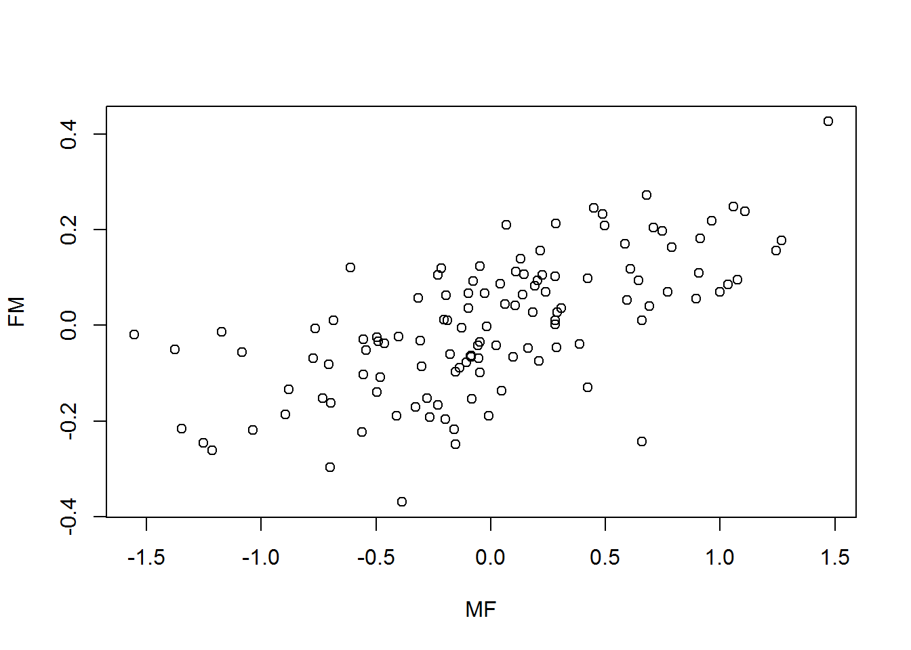
Scatterplot of women’s actor and partner effects
plot(REs_basicSRM_AADMIRE$cond$`GROUPID:FemaleID`)Scatterplot of men’s and women’s relationship effects
plot(REs_basicSRM_AADMIRE$cond$`GROUPID:MaleID:FemaleID`)Getting Relative Percentage (these estimates are from SPSS)
SRMRelativePercentage(MActVar = 0.630885, FPartVar = 0.099537, MFRelVar = 0.399118,
FActVar = 0.627599, MPartVar = 0.069086, FMRelVar = 0.511605) Actor Partner Relation Plus Error Total Variance
Man-to-Woman Ratings 55.85 8.81 35.33 1.13
Woman-to-Man Ratings 51.94 5.72 42.34 1.21Basic SRM Analysis of Ratings of Trust towards Partner
Visual Inspection of Variable Distributions Across Groups
dotplot(
reorder(GROUPID, ATRUST) ~ ATRUST,
data = SD_data4, jitter.y = TRUE,
ylab = "Speed-Dating Group",
main = "Dotplot of \'ATRUST\' for Speed-Dating Groups")Subsetting data
myvars <- c("GROUPID", "MaleID", "FemaleID", "MF", "FM",
"ATRUST", "Agender", "GroupID_EC1", "GroupID_EC2",
"GroupID_EC3", "GroupID_EC4", "GroupID_EC5", "GroupID_EC6",
"GroupID_EC7", "GroupID_EC8", "GroupID_EC9", "GroupID_EC10",
"GroupID_EC11", "GroupID_EC12", "GroupID_EC13", "GroupID_EC14",
"GroupID_EC15", "GroupID_EC16", "GroupID_EC17", "GroupID_EC18",
"GroupID_EC19", "GroupID_EC20", "GroupID_EC21", "GroupID_EC22",
"GroupID_EC23", "GroupID_EC24", "GroupID_EC25", "GroupID_EC26",
"GroupID_EC27", "GroupID_EC28", "GroupID_EC29", "GroupID_EC30",
"GroupID_EC31", "GroupID_EC32")
SD_data_ATRUST <- SD_data4[myvars]
SD_data_ATRUST <- na.omit(SD_data_ATRUST)Basic SRM Analysis
basicSRM_ATRUST <- glmmTMB(ATRUST ~ 1 + Agender*GroupID_EC1 + Agender*GroupID_EC2 + Agender*GroupID_EC3 + Agender*GroupID_EC4 +
Agender*GroupID_EC5 + Agender*GroupID_EC6 + Agender*GroupID_EC7 + Agender*GroupID_EC8 + Agender*GroupID_EC9 +
Agender*GroupID_EC10 + Agender*GroupID_EC11 + Agender*GroupID_EC12 + Agender*GroupID_EC13 + Agender*GroupID_EC14 +
Agender*GroupID_EC15 + Agender*GroupID_EC16 + Agender*GroupID_EC17 + Agender*GroupID_EC18 + Agender*GroupID_EC19 +
Agender*GroupID_EC20 + Agender*GroupID_EC21 + Agender*GroupID_EC22 + Agender*GroupID_EC23 + Agender*GroupID_EC24 +
Agender*GroupID_EC25 + Agender*GroupID_EC26 + Agender*GroupID_EC27 + Agender*GroupID_EC28 + Agender*GroupID_EC29 +
Agender*GroupID_EC30 + Agender*GroupID_EC31 + Agender*GroupID_EC32 + (0 + MF + FM|GROUPID:MaleID) + (0 + FM |GROUPID:FemaleID) + us(0 + MF + FM + 0| GROUPID:MaleID:FemaleID),data = SD_data_ATRUST,
family = gaussian(link = "identity"), dispformula=~0, REML = TRUE,
verbose = FALSE, na.action = na.omit)Warning in fitTMB(TMBStruc): Model convergence problem; false convergence (8).
See vignette('troubleshooting')glmmTMB issues a false convergence warning (8), but same model runs fine in SPSS, with the same deviance value and virtually identical parameter estimates.
summary(basicSRM_ATRUST) Family: gaussian ( identity )
Formula: ATRUST ~ 1 + Agender * GroupID_EC1 + Agender * GroupID_EC2 +
Agender * GroupID_EC3 + Agender * GroupID_EC4 + Agender *
GroupID_EC5 + Agender * GroupID_EC6 + Agender * GroupID_EC7 +
Agender * GroupID_EC8 + Agender * GroupID_EC9 + Agender *
GroupID_EC10 + Agender * GroupID_EC11 + Agender * GroupID_EC12 +
Agender * GroupID_EC13 + Agender * GroupID_EC14 + Agender *
GroupID_EC15 + Agender * GroupID_EC16 + Agender * GroupID_EC17 +
Agender * GroupID_EC18 + Agender * GroupID_EC19 + Agender *
GroupID_EC20 + Agender * GroupID_EC21 + Agender * GroupID_EC22 +
Agender * GroupID_EC23 + Agender * GroupID_EC24 + Agender *
GroupID_EC25 + Agender * GroupID_EC26 + Agender * GroupID_EC27 +
Agender * GroupID_EC28 + Agender * GroupID_EC29 + Agender *
GroupID_EC30 + Agender * GroupID_EC31 + Agender * GroupID_EC32 +
(0 + MF + FM | GROUPID:MaleID) + (0 + FM | GROUPID:FemaleID) +
us(0 + MF + FM + 0 | GROUPID:MaleID:FemaleID)
Dispersion: ~0
Data: SD_data_ATRUST
AIC BIC logLik deviance df.resid
3152 3501 -1503 3006 874
Random effects:
Conditional model:
Groups Name Variance Std.Dev. Corr
GROUPID:MaleID MF 0.6507 0.8066
FM 0.2458 0.4958 -0.18
GROUPID:FemaleID FM 1.0951 1.0465
GROUPID:MaleID:FemaleID MF 1.5535 1.2464
FM 1.0565 1.0278 0.03
Number of obs: 881, groups:
GROUPID:MaleID, 123; GROUPID:FemaleID, 121; GROUPID:MaleID:FemaleID, 455
Conditional model:
Estimate Std. Error z value Pr(>|z|)
(Intercept) 5.450352 0.076778 70.99 <2e-16 ***
Agender -0.170975 0.080003 -2.14 0.0326 *
GroupID_EC1 -0.210352 0.343542 -0.61 0.5403
GroupID_EC2 -0.075352 0.392383 -0.19 0.8477
GroupID_EC3 -0.228129 0.470004 -0.49 0.6274
GroupID_EC4 -0.110352 0.343542 -0.32 0.7480
GroupID_EC5 -0.600987 0.516629 -1.16 0.2447
GroupID_EC6 -0.228129 0.470004 -0.49 0.6274
GroupID_EC7 0.090171 0.424928 0.21 0.8319
GroupID_EC8 -0.106602 0.392383 -0.27 0.7859
GroupID_EC9 0.893398 0.392383 2.28 0.0228 *
GroupID_EC10 0.105204 0.470004 0.22 0.8229
GroupID_EC11 -0.450352 0.470004 -0.96 0.3380
GroupID_EC12 0.143398 0.392383 0.37 0.7148
GroupID_EC13 -0.228129 0.470004 -0.49 0.6274
GroupID_EC14 0.049648 0.392383 0.13 0.8993
GroupID_EC15 0.911522 0.526819 1.73 0.0836 .
GroupID_EC16 -0.200352 0.516163 -0.39 0.6979
GroupID_EC17 -0.117018 0.470004 -0.25 0.8034
GroupID_EC18 -0.856602 0.392383 -2.18 0.0290 *
GroupID_EC19 -0.117018 0.470004 -0.25 0.8034
GroupID_EC20 0.494093 0.470004 1.05 0.2931
GroupID_EC21 0.009648 0.343542 0.03 0.9776
GroupID_EC22 -0.253824 0.384762 -0.66 0.5095
GroupID_EC23 0.174648 0.392383 0.45 0.6562
GroupID_EC24 -0.512852 0.392383 -1.31 0.1912
GroupID_EC25 0.362148 0.392383 0.92 0.3560
GroupID_EC26 0.105204 0.470004 0.22 0.8229
GroupID_EC27 0.643398 0.392383 1.64 0.1011
GroupID_EC28 -0.061463 0.470004 -0.13 0.8960
GroupID_EC29 -0.106602 0.392383 -0.27 0.7859
GroupID_EC30 0.660760 0.470004 1.41 0.1598
GroupID_EC31 -0.768011 0.483029 -1.59 0.1118
GroupID_EC32 0.705898 0.392383 1.80 0.0720 .
Agender:GroupID_EC1 0.050975 0.361112 0.14 0.8877
Agender:GroupID_EC2 -0.079025 0.410869 -0.19 0.8475
Agender:GroupID_EC3 -0.162359 0.489307 -0.33 0.7400
Agender:GroupID_EC4 -0.089025 0.361112 -0.25 0.8053
Agender:GroupID_EC5 -0.312994 0.534250 -0.59 0.5580
Agender:GroupID_EC6 0.059864 0.489307 0.12 0.9026
Agender:GroupID_EC7 -0.369548 0.442056 -0.84 0.4032
Agender:GroupID_EC8 0.514725 0.410869 1.25 0.2103
Agender:GroupID_EC9 0.389725 0.410869 0.95 0.3429
Agender:GroupID_EC10 -0.051247 0.489307 -0.10 0.9166
Agender:GroupID_EC11 -0.051247 0.489307 -0.10 0.9166
Agender:GroupID_EC12 -0.172775 0.410869 -0.42 0.6741
Agender:GroupID_EC13 -0.051247 0.489307 -0.10 0.9166
Agender:GroupID_EC14 -0.329025 0.410869 -0.80 0.4232
Agender:GroupID_EC15 0.364657 0.544109 0.67 0.5027
Agender:GroupID_EC16 0.420975 0.533800 0.79 0.4303
Agender:GroupID_EC17 0.170975 0.489307 0.35 0.7268
Agender:GroupID_EC18 0.327225 0.410869 0.80 0.4258
Agender:GroupID_EC19 -0.384581 0.489307 -0.79 0.4319
Agender:GroupID_EC20 -0.106803 0.489307 -0.22 0.8272
Agender:GroupID_EC21 -0.129025 0.361112 -0.36 0.7209
Agender:GroupID_EC22 -0.512498 0.400528 -1.28 0.2007
Agender:GroupID_EC23 -0.079025 0.410869 -0.19 0.8475
Agender:GroupID_EC24 0.483475 0.410869 1.18 0.2393
Agender:GroupID_EC25 0.170975 0.410869 0.42 0.6773
Agender:GroupID_EC26 -0.606803 0.489307 -1.24 0.2149
Agender:GroupID_EC27 -0.047775 0.410869 -0.12 0.9074
Agender:GroupID_EC28 -0.106803 0.489307 -0.22 0.8272
Agender:GroupID_EC29 -0.547775 0.410869 -1.33 0.1825
Agender:GroupID_EC30 0.504308 0.489307 1.03 0.3027
Agender:GroupID_EC31 0.511283 0.496969 1.03 0.3036
Agender:GroupID_EC32 -0.172775 0.410869 -0.42 0.6741
---
Signif. codes: 0 '***' 0.001 '**' 0.01 '*' 0.05 '.' 0.1 ' ' 1Checking Normality of Level-1 Residuals
Standard low tech way
hist(scale(resid(basicSRM_ATRUST)),
freq = FALSE, ylim = c(0, .7), xlim = c(-4, 5),
main = "Basic SRM Analysis of Ratings of Trust towards Partner",
col = "lightblue",
xlab = "Standardized Residuals")
lines(density(scale(resid(basicSRM_ATRUST))))
box()qqnorm(scale(resid(basicSRM_ATRUST)), main = "Normal Quantile-Quantile Plot")
qqline(scale(resid(basicSRM_ATRUST)))There are some problems with the normality of the residuals for ATRUST, most likely due to the fact that it is a single-item measure.
More high tech way with DHARMa package (note that residual ~ pred plot is incorrect)
basicSRM_ATRUST_simres <- simulateResiduals(basicSRM_ATRUST)Model family was recognized or set as continuous, but duplicate values were detected in the response. Consider if you are fitting an appropriate model.system.time(sr.basicSRM_ATRUST <- simulateResiduals(basicSRM_ATRUST))Model family was recognized or set as continuous, but duplicate values were detected in the response. Consider if you are fitting an appropriate model. user system elapsed
0.97 0.04 1.00 plot(sr.basicSRM_ATRUST)The Kolmogoriv-Smirnov test confirms that the assumption of normality of the residuals is violated.
Checking for potential non-linearity and heteroscedasticity
Method suggested by Florian Hartig on Github to obtain predicted values
that are not conditioned on random effects (this prevents an artificial
correlation between residuals and predicted values in scatterplot)
newdata=SD_data_ATRUST
newdata$GROUPID = NA
pred_ATRUST <- predict(basicSRM_ATRUST, newdata)
Stdresiduals_ATRUST <- scale(resid(basicSRM_ATRUST))plot(pred_ATRUST, Stdresiduals_ATRUST)No noticeable issues with non-linearity or heteroscedasticity.
Checking Normality of Random Effects
Extracting Random Effects from Model
REs_basicSRM_ATRUST <- ranef(basicSRM_ATRUST)Histogram and Q-Q Plot for Male Actor Effects
hist(REs_basicSRM_ATRUST$cond$`GROUPID:MaleID`$MF, col = "lightblue",
freq = FALSE, ylim = c(0, .7), xlim = c(-4, 5),
xlab = "Men's Actor Effects for Ratings of Trust towards Partner",
main = "Histogram for Men's Actor Effects")
lines(density(REs_basicSRM_ATRUST$cond$`GROUPID:MaleID`$MF))
box()qqnorm(scale(REs_basicSRM_ATRUST$cond$`GROUPID:MaleID`$MF), main = "Normal Quantile-Quantile Plot")
qqline(scale(REs_basicSRM_ATRUST$cond$`GROUPID:MaleID`$MF))The random effects for men’s actor effects seem pretty normal in shape.
Histogram and Q-Q Plot for Male Partner Effects
hist(REs_basicSRM_ATRUST$cond$`GROUPID:MaleID`$FM, col = "lightblue",
freq = FALSE, ylim = c(0, .7), xlim = c(-4, 5),
xlab = "Men's Partner Effects for Ratings of Trust towards Partner",
main = "Histogram for Men's Partner Effects")
lines(density(REs_basicSRM_ATRUST$cond$`GROUPID:MaleID`$FM))
box()qqnorm(scale(REs_basicSRM_ATRUST$cond$`GROUPID:MaleID`$FM), main = "Normal Quantile-Quantile Plot")
qqline(scale(REs_basicSRM_ATRUST$cond$`GROUPID:MaleID`$FM))The random effects for men’s partner effects seem a little non-normal in shape.
Histogram and Q-Q Plot for Female Actor Effects
hist(REs_basicSRM_ATRUST$cond$`GROUPID:FemaleID`$FM, col = "lightblue",
freq = FALSE, ylim = c(0, .7), xlim = c(-4, 5),
xlab = "Women's Actor Effects for Ratings of Trust towards Partner",
main = "Histogram for Women's Actor Effects")
lines(density(REs_basicSRM_ATRUST$cond$`GROUPID:FemaleID`$FM))
box()qqnorm(scale(REs_basicSRM_ATRUST$cond$`GROUPID:FemaleID`$FM), main = "Normal Quantile-Quantile Plot")
qqline(scale(REs_basicSRM_ATRUST$cond$`GROUPID:FemaleID`$FM))The random effects for women’s actor effects seem more-or-less normal in shape.
Histogram and Q-Q Plot for Man-to-Woman Relationship Effects
hist(REs_basicSRM_ATRUST$cond$`GROUPID:MaleID:FemaleID`$MF, col = "lightblue",
freq = FALSE, ylim = c(0, .7), xlim = c(-4, 5),
xlab = "Man-to-Woman Relationship Effects for Ratings of Trust towards Partner",
main = "Histogram for Man-to-Woman Relationship Effects")
lines(density(REs_basicSRM_ATRUST$cond$`GROUPID:MaleID:FemaleID`$MF))
box()qqnorm(scale(REs_basicSRM_ATRUST$cond$`GROUPID:MaleID:FemaleID`$MF), main = "Normal Quantile-Quantile Plot")
qqline(scale(REs_basicSRM_ATRUST$cond$`GROUPID:MaleID:FemaleID`$MF))Q-Q plot suggests non-normality.
Histogram and Q-Q Plot for Woman-to-Man Relationship Effects
hist(REs_basicSRM_ATRUST$cond$`GROUPID:MaleID:FemaleID`$FM, col = "lightblue",
freq = FALSE, ylim = c(0, .7), xlim = c(-4, 5),
xlab = "Woman-to-Man Relationship Effects for Ratings of Trust towards Partner",
main = "Histogram for Woman-to-Man Relationship Effects")
lines(density(REs_basicSRM_ATRUST$cond$`GROUPID:MaleID:FemaleID`$FM))
box()qqnorm(scale(REs_basicSRM_ATRUST$cond$`GROUPID:MaleID:FemaleID`$FM), main = "Normal Quantile-Quantile Plot")
qqline(scale(REs_basicSRM_ATRUST$cond$`GROUPID:MaleID:FemaleID`$FM))Q-Q plot suggests non-normality.
Scatterplots for Pairs of Random Effects
Scatterplot of men’s actor and partner effects
plot(REs_basicSRM_ATRUST$cond$`GROUPID:MaleID`)Scatterplot of men’s and women’s relationship effects
plot(REs_basicSRM_ATRUST$cond$`GROUPID:MaleID:FemaleID`)Getting Relative Percentage (these estimates are from SPSS)
SRMRelativePercentage(MActVar = 0.650744, FPartVar = 0, MFRelVar = 1.553520,
FActVar = 1.095017, MPartVar = 0.245851, FMRelVar = 1.056469) Actor Partner Relation Plus Error Total Variance
Man-to-Woman Ratings 29.52 0.00 70.48 2.20
Woman-to-Man Ratings 45.68 10.26 44.07 2.40Basic SRM Analysis of Ratings of Partner Caring
Visual Inspection of Variable Distributions Across Groups
SD_data4$ACARING <- as.numeric(SD_data4$ACARING)
dotplot(
reorder(GROUPID, ACARING) ~ ACARING,
data = SD_data4, jitter.y = TRUE,
ylab = "Speed-Dating Group",
main = "Dotplot of \'ACARING\' for Speed-Dating Groups")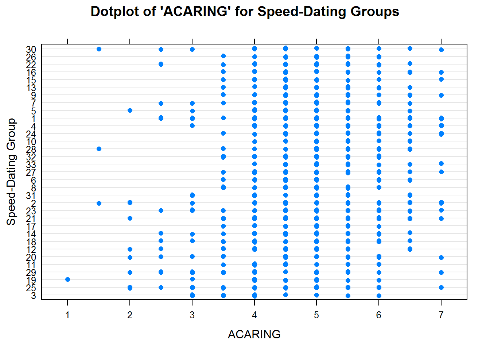
Subsetting data
myvars <- c("GROUPID", "MaleID", "FemaleID", "MF", "FM",
"ACARING", "Agender", "GroupID_EC1", "GroupID_EC2",
"GroupID_EC3", "GroupID_EC4", "GroupID_EC5", "GroupID_EC6",
"GroupID_EC7", "GroupID_EC8", "GroupID_EC9", "GroupID_EC10",
"GroupID_EC11", "GroupID_EC12", "GroupID_EC13", "GroupID_EC14",
"GroupID_EC15", "GroupID_EC16", "GroupID_EC17", "GroupID_EC18",
"GroupID_EC19", "GroupID_EC20", "GroupID_EC21", "GroupID_EC22",
"GroupID_EC23", "GroupID_EC24", "GroupID_EC25", "GroupID_EC26",
"GroupID_EC27", "GroupID_EC28", "GroupID_EC29", "GroupID_EC30",
"GroupID_EC31", "GroupID_EC32")
SD_data_ACARING <- SD_data4[myvars]
SD_data_ACARING <- na.omit(SD_data_ACARING)Basic SRM Analysis
basicSRM_ACARING <- glmmTMB(ACARING ~ 1 + Agender*GroupID_EC1 + Agender*GroupID_EC2 + Agender*GroupID_EC3 + Agender*GroupID_EC4 +
Agender*GroupID_EC5 + Agender*GroupID_EC6 + Agender*GroupID_EC7 + Agender*GroupID_EC8 + Agender*GroupID_EC9 +
Agender*GroupID_EC10 + Agender*GroupID_EC11 + Agender*GroupID_EC12 + Agender*GroupID_EC13 + Agender*GroupID_EC14 +
Agender*GroupID_EC15 + Agender*GroupID_EC16 + Agender*GroupID_EC17 + Agender*GroupID_EC18 + Agender*GroupID_EC19 +
Agender*GroupID_EC20 + Agender*GroupID_EC21 + Agender*GroupID_EC22 + Agender*GroupID_EC23 + Agender*GroupID_EC24 +
Agender*GroupID_EC25 + Agender*GroupID_EC26 + Agender*GroupID_EC27 + Agender*GroupID_EC28 + Agender*GroupID_EC29 +
Agender*GroupID_EC30 + Agender*GroupID_EC31 + Agender*GroupID_EC32 + (0 + MF + FM|GROUPID:MaleID) + (0 + FM +
MF|GROUPID:FemaleID) + us(0 + MF + FM + 0| GROUPID:MaleID:FemaleID),data = SD_data_ACARING,
family = gaussian(link = "identity"), dispformula=~0, REML = TRUE,
verbose = FALSE, na.action = na.omit)summary(basicSRM_ACARING) Family: gaussian ( identity )
Formula:
ACARING ~ 1 + Agender * GroupID_EC1 + Agender * GroupID_EC2 +
Agender * GroupID_EC3 + Agender * GroupID_EC4 + Agender *
GroupID_EC5 + Agender * GroupID_EC6 + Agender * GroupID_EC7 +
Agender * GroupID_EC8 + Agender * GroupID_EC9 + Agender *
GroupID_EC10 + Agender * GroupID_EC11 + Agender * GroupID_EC12 +
Agender * GroupID_EC13 + Agender * GroupID_EC14 + Agender *
GroupID_EC15 + Agender * GroupID_EC16 + Agender * GroupID_EC17 +
Agender * GroupID_EC18 + Agender * GroupID_EC19 + Agender *
GroupID_EC20 + Agender * GroupID_EC21 + Agender * GroupID_EC22 +
Agender * GroupID_EC23 + Agender * GroupID_EC24 + Agender *
GroupID_EC25 + Agender * GroupID_EC26 + Agender * GroupID_EC27 +
Agender * GroupID_EC28 + Agender * GroupID_EC29 + Agender *
GroupID_EC30 + Agender * GroupID_EC31 + Agender * GroupID_EC32 +
(0 + MF + FM | GROUPID:MaleID) + (0 + FM + MF | GROUPID:FemaleID) +
us(0 + MF + FM + 0 | GROUPID:MaleID:FemaleID)
Dispersion: ~0
Data: SD_data_ACARING
AIC BIC logLik deviance df.resid
2468.1 2826.0 -1159.0 2318.1 864
Random effects:
Conditional model:
Groups Name Variance Std.Dev. Corr
GROUPID:MaleID MF 0.33473 0.5786
FM 0.09446 0.3073 0.00
GROUPID:FemaleID FM 0.40152 0.6337
MF 0.10386 0.3223 0.02
GROUPID:MaleID:FemaleID MF 0.36909 0.6075
FM 0.78603 0.8866 0.17
Number of obs: 873, groups:
GROUPID:MaleID, 123; GROUPID:FemaleID, 121; GROUPID:MaleID:FemaleID, 454
Conditional model:
Estimate Std. Error z value Pr(>|z|)
(Intercept) 4.823276 0.054731 88.13 < 2e-16 ***
Agender 0.123190 0.052232 2.36 0.01835 *
GroupID_EC1 0.182797 0.245420 0.74 0.45637
GroupID_EC2 0.004849 0.279308 0.02 0.98615
GroupID_EC3 -0.795498 0.334307 -2.38 0.01733 *
GroupID_EC4 0.586724 0.244668 2.40 0.01648 *
GroupID_EC5 -0.276699 0.361066 -0.77 0.44347
GroupID_EC6 0.037835 0.334307 0.11 0.90989
GroupID_EC7 -0.118158 0.299583 -0.39 0.69328
GroupID_EC8 0.020474 0.279308 0.07 0.94157
GroupID_EC9 0.495930 0.280991 1.76 0.07758 .
GroupID_EC10 0.343391 0.334307 1.03 0.30434
GroupID_EC11 -0.212165 0.334307 -0.63 0.52566
GroupID_EC12 -0.182651 0.279308 -0.65 0.51315
GroupID_EC13 0.346838 0.336830 1.03 0.30315
GroupID_EC14 -0.088901 0.279308 -0.32 0.75027
GroupID_EC15 0.055313 0.373896 0.15 0.88239
GroupID_EC16 0.287281 0.360374 0.80 0.42535
GroupID_EC17 -0.045498 0.334307 -0.14 0.89174
GroupID_EC18 -0.151401 0.279308 -0.54 0.58778
GroupID_EC19 -0.378831 0.334307 -1.13 0.25714
GroupID_EC20 -0.212165 0.334307 -0.63 0.52566
GroupID_EC21 -0.013276 0.244668 -0.05 0.95673
GroupID_EC22 -0.052922 0.269631 -0.20 0.84439
GroupID_EC23 -0.010776 0.279308 -0.04 0.96922
GroupID_EC24 0.504849 0.279308 1.81 0.07068 .
GroupID_EC25 -0.542026 0.279308 -1.94 0.05231 .
GroupID_EC26 0.210762 0.336810 0.63 0.53147
GroupID_EC27 0.082974 0.279308 0.30 0.76641
GroupID_EC28 0.315613 0.334307 0.94 0.34513
GroupID_EC29 -0.354526 0.279308 -1.27 0.20433
GroupID_EC30 -0.435421 0.371199 -1.17 0.24079
GroupID_EC31 -0.017195 0.335080 -0.05 0.95907
GroupID_EC32 0.207974 0.279308 0.74 0.45651
Agender:GroupID_EC1 0.090737 0.236078 0.38 0.70072
Agender:GroupID_EC2 0.517435 0.267138 1.94 0.05275 .
Agender:GroupID_EC3 0.126810 0.317127 0.40 0.68925
Agender:GroupID_EC4 -0.133190 0.235281 -0.57 0.57133
Agender:GroupID_EC5 -0.132168 0.345237 -0.38 0.70184
Agender:GroupID_EC6 -0.317634 0.317127 -1.00 0.31654
Agender:GroupID_EC7 -0.015808 0.288268 -0.05 0.95627
Agender:GroupID_EC8 -0.154440 0.267138 -0.58 0.56318
Agender:GroupID_EC9 0.026354 0.268914 0.10 0.92193
Agender:GroupID_EC10 -0.067634 0.317127 -0.21 0.83112
Agender:GroupID_EC11 -0.456523 0.317127 -1.44 0.14999
Agender:GroupID_EC12 -0.138815 0.267138 -0.52 0.60332
Agender:GroupID_EC13 0.269146 0.319786 0.84 0.39999
Agender:GroupID_EC14 0.173685 0.267138 0.65 0.51558
Agender:GroupID_EC15 -0.245556 0.357151 -0.69 0.49174
Agender:GroupID_EC16 -0.179299 0.344507 -0.52 0.60275
Agender:GroupID_EC17 -0.123190 0.317127 -0.39 0.69768
Agender:GroupID_EC18 0.048685 0.267138 0.18 0.85539
Agender:GroupID_EC19 -0.012079 0.317127 -0.04 0.96962
Agender:GroupID_EC20 0.432366 0.317127 1.36 0.17276
Agender:GroupID_EC21 -0.233190 0.235281 -0.99 0.32163
Agender:GroupID_EC22 -0.252836 0.261137 -0.97 0.33294
Agender:GroupID_EC23 0.001810 0.267138 0.01 0.99459
Agender:GroupID_EC24 -0.045065 0.267138 -0.17 0.86604
Agender:GroupID_EC25 -0.123190 0.267138 -0.46 0.64469
Agender:GroupID_EC26 -0.366929 0.319763 -1.15 0.25117
Agender:GroupID_EC27 -0.060690 0.267138 -0.23 0.82028
Agender:GroupID_EC28 0.015699 0.317127 0.05 0.96052
Agender:GroupID_EC29 0.533060 0.267138 2.00 0.04599 *
Agender:GroupID_EC30 1.044511 0.355808 2.94 0.00333 **
Agender:GroupID_EC31 -0.187494 0.322494 -0.58 0.56098
Agender:GroupID_EC32 -0.216940 0.267138 -0.81 0.41674
---
Signif. codes: 0 '***' 0.001 '**' 0.01 '*' 0.05 '.' 0.1 ' ' 1Checking Normality of Level-1 Residuals
Standard low tech way
hist(scale(resid(basicSRM_ACARING)),
freq = FALSE, ylim = c(0, .7), xlim = c(-4, 5),
main = "Basic SRM Analysis of Ratings of Partner Caring",
col = "lightblue",
xlab = "Standardized Residuals")
lines(density(scale(resid(basicSRM_ACARING))))
box()qqnorm(scale(resid(basicSRM_ACARING)), main = "Normal Quantile-Quantile Plot")
qqline(scale(resid(basicSRM_ACARING)))Residuals appear more-or-less normal in shape.
More high tech way with DHARMa package (note that residual ~ pred plot is incorrect)
basicSRM_ACARING_simres <- simulateResiduals(basicSRM_ACARING)Model family was recognized or set as continuous, but duplicate values were detected in the response. Consider if you are fitting an appropriate model.system.time(sr.basicSRM_ACARING <- simulateResiduals(basicSRM_ACARING))Model family was recognized or set as continuous, but duplicate values were detected in the response. Consider if you are fitting an appropriate model. user system elapsed
0.98 0.00 0.99 plot(sr.basicSRM_ACARING)
The Kolmogoriv-Smirnov test confirms that the assumption of normality of the residuals is NOT violated.
Checking for potential non-linearity and heteroscedasticity
Method suggested by Florian Hartig on Github to obtain predicted values
that are not conditioned on random effects (this prevents an artificial
correlation between residuals and predicted values in scatterplot)
newdata=SD_data_ACARING
newdata$GROUPID = NA
pred_ACARING <- predict(basicSRM_ACARING, newdata)
Stdresiduals_ACARING <- scale(resid(basicSRM_ACARING))plot(pred_ACARING, Stdresiduals_ACARING)No noticeable issues with non-linearity or heteroscedasticity.
Checking Normality of Random Effects
Extracting Random Effects from Model
REs_basicSRM_ACARING <- ranef(basicSRM_ACARING)Histogram and Q-Q Plot for Male Actor Effects
hist(REs_basicSRM_ACARING$cond$`GROUPID:MaleID`$MF, col = "lightblue",
freq = FALSE, ylim = c(0, .7), xlim = c(-4, 5),
xlab = "Men's Actor Effects for Ratings of Partner Caring",
main = "Histogram for Men's Actor Effects")
lines(density(REs_basicSRM_ACARING$cond$`GROUPID:MaleID`$MF))
box()qqnorm(scale(REs_basicSRM_ACARING$cond$`GROUPID:MaleID`$MF), main = "Normal Quantile-Quantile Plot")
qqline(scale(REs_basicSRM_ACARING$cond$`GROUPID:MaleID`$MF))The random effects for men’s actor effects seem pretty normal in shape.
Histogram and Q-Q Plot for Male Partner Effects
hist(REs_basicSRM_ACARING$cond$`GROUPID:MaleID`$FM, col = "lightblue",
freq = FALSE, ylim = c(0, .7), xlim = c(-4, 5),
xlab = "Men's Partner Effects for Ratings of Partner Caring",
main = "Histogram for Men's Partner Effects")
lines(density(REs_basicSRM_ACARING$cond$`GROUPID:MaleID`$FM))
box()qqnorm(scale(REs_basicSRM_ACARING$cond$`GROUPID:MaleID`$FM), main = "Normal Quantile-Quantile Plot")
qqline(scale(REs_basicSRM_ACARING$cond$`GROUPID:MaleID`$FM))The random effects for men’s partner effects seem a little non-normal in shape.
Histogram and Q-Q Plot for Female Actor Effects
hist(REs_basicSRM_ACARING$cond$`GROUPID:FemaleID`$FM, col = "lightblue",
freq = FALSE, ylim = c(0, .7), xlim = c(-4, 5),
xlab = "Women's Actor Effects for Ratings of Partner Caring",
main = "Histogram for Women's Actor Effects")
lines(density(REs_basicSRM_ACARING$cond$`GROUPID:FemaleID`$FM))
box()
qqnorm(scale(REs_basicSRM_ACARING$cond$`GROUPID:FemaleID`$FM), main = "Normal Quantile-Quantile Plot")
qqline(scale(REs_basicSRM_ACARING$cond$`GROUPID:FemaleID`$FM))The random effects for women’s actor effects seem more-or-less normal in shape.
Histogram and Q-Q Plot for Female Partner Effects
hist(REs_basicSRM_ACARING$cond$`GROUPID:FemaleID`$MF, col = "lightblue",
freq = FALSE, ylim = c(0, .7), xlim = c(-4, 5),
xlab = "Women's Partner Effects for Ratings of Partner Caring",
main = "Histogram for Women's Partner Effects")
lines(density(REs_basicSRM_ACARING$cond$`GROUPID:FemaleID`$MF))
box()qqnorm(scale(REs_basicSRM_ACARING$cond$`GROUPID:FemaleID`$MF), main = "Normal Quantile-Quantile Plot")
qqline(scale(REs_basicSRM_ACARING$cond$`GROUPID:FemaleID`$MF))The random effects for women’s partner effects seem pretty normal in shape.
Histogram and Q-Q Plot for Man-to-Woman Relationship Effects
hist(REs_basicSRM_ACARING$cond$`GROUPID:MaleID:FemaleID`$MF, col = "lightblue",
freq = FALSE, ylim = c(0, .7), xlim = c(-4, 5),
xlab = "Man-to-Woman Relationship Effects for Ratings of Partner Caring",
main = "Histogram for Man-to-Woman Relationship Effects")
lines(density(REs_basicSRM_ACARING$cond$`GROUPID:MaleID:FemaleID`$MF))
box()qqnorm(scale(REs_basicSRM_ACARING$cond$`GROUPID:MaleID:FemaleID`$MF), main = "Normal Quantile-Quantile Plot")
qqline(scale(REs_basicSRM_ACARING$cond$`GROUPID:MaleID:FemaleID`$MF))Q-Q plot suggests normality.
Histogram and Q-Q Plot for Woman-to-Man Relationship Effects
hist(REs_basicSRM_ACARING$cond$`GROUPID:MaleID:FemaleID`$FM, col = "lightblue",
freq = FALSE, ylim = c(0, .7), xlim = c(-4, 5),
xlab = "Woman-to-Man Relationship Effects for Ratings of Partner Caring",
main = "Histogram for Woman-to-Man Relationship Effects")
lines(density(REs_basicSRM_ACARING$cond$`GROUPID:MaleID:FemaleID`$FM))
box()qqnorm(scale(REs_basicSRM_ACARING$cond$`GROUPID:MaleID:FemaleID`$FM), main = "Normal Quantile-Quantile Plot")
qqline(scale(REs_basicSRM_ACARING$cond$`GROUPID:MaleID:FemaleID`$FM))Q-Q plot suggests some non-normality.
Scatterplots for Pairs of Random Effects
Scatterplot of men’s actor and partner effects
plot(REs_basicSRM_ACARING$cond$`GROUPID:MaleID`)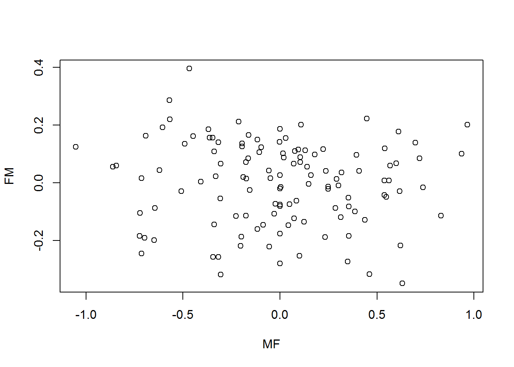
Scatterplot of women’s actor and partner effects
plot(REs_basicSRM_ACARING$cond$`GROUPID:FemaleID`)Scatterplot of men’s and women’s relationship effects
plot(REs_basicSRM_ACARING$cond$`GROUPID:MaleID:FemaleID`)Getting Relative Percentage (these estimates are from SPSS)
SRMRelativePercentage(MActVar = 0.334760, FPartVar = 0.103867, MFRelVar = 0.369085,
FActVar = 0.401503, MPartVar = 0.094458, FMRelVar = 0.786045) Actor Partner Relation Plus Error Total Variance
Man-to-Woman Ratings 41.45 12.86 45.70 0.81
Woman-to-Man Ratings 31.32 7.37 61.31 1.28Basic SRM Analysis of Ratings of Sexual Chemistry
Visual Inspection of Variable Distributions Across Groups
SD_data4$ASEXCHEM <- as.numeric(SD_data4$ASEXCHEM)
dotplot(
reorder(GROUPID, ASEXCHEM) ~ ASEXCHEM,
data = SD_data4, jitter.y = TRUE,
ylab = "Speed-Dating Group",
main = "Dotplot of \'ASEXCHEM\' for Speed-Dating Groups")Subsetting data
myvars <- c("GROUPID", "MaleID", "FemaleID", "MF", "FM",
"ASEXCHEM", "Agender", "GroupID_EC1", "GroupID_EC2",
"GroupID_EC3", "GroupID_EC4", "GroupID_EC5", "GroupID_EC6",
"GroupID_EC7", "GroupID_EC8", "GroupID_EC9", "GroupID_EC10",
"GroupID_EC11", "GroupID_EC12", "GroupID_EC13", "GroupID_EC14",
"GroupID_EC15", "GroupID_EC16", "GroupID_EC17", "GroupID_EC18",
"GroupID_EC19", "GroupID_EC20", "GroupID_EC21", "GroupID_EC22",
"GroupID_EC23", "GroupID_EC24", "GroupID_EC25", "GroupID_EC26",
"GroupID_EC27", "GroupID_EC28", "GroupID_EC29", "GroupID_EC30",
"GroupID_EC31", "GroupID_EC32")
SD_data_ASEXCHEM <- SD_data4[myvars]
SD_data_ASEXCHEM <- na.omit(SD_data_ASEXCHEM)Basic SRM Analysis
basicSRM_ASEXCHEM <- glmmTMB(ASEXCHEM ~ 1 + Agender*GroupID_EC1 + Agender*GroupID_EC2 + Agender*GroupID_EC3 + Agender*GroupID_EC4 +
Agender*GroupID_EC5 + Agender*GroupID_EC6 + Agender*GroupID_EC7 + Agender*GroupID_EC8 + Agender*GroupID_EC9 +
Agender*GroupID_EC10 + Agender*GroupID_EC11 + Agender*GroupID_EC12 + Agender*GroupID_EC13 + Agender*GroupID_EC14 +
Agender*GroupID_EC15 + Agender*GroupID_EC16 + Agender*GroupID_EC17 + Agender*GroupID_EC18 + Agender*GroupID_EC19 +
Agender*GroupID_EC20 + Agender*GroupID_EC21 + Agender*GroupID_EC22 + Agender*GroupID_EC23 + Agender*GroupID_EC24 +
Agender*GroupID_EC25 + Agender*GroupID_EC26 + Agender*GroupID_EC27 + Agender*GroupID_EC28 + Agender*GroupID_EC29 +
Agender*GroupID_EC30 + Agender*GroupID_EC31 + Agender*GroupID_EC32 + (0 + MF + FM|GROUPID:MaleID) + (0 + FM +
MF|GROUPID:FemaleID) + us(0 + MF + FM + 0| GROUPID:MaleID:FemaleID),data = SD_data_ASEXCHEM,
family = gaussian(link = "identity"), dispformula=~0, REML = TRUE,
verbose = FALSE, na.action = na.omit)Warning in fitTMB(TMBStruc): Model convergence problem; false convergence (8).
See vignette('troubleshooting')glmmTMB issues a false convergence warning (8), but same model runs fine in SPSS, with the same deviance value and virtually identical parameter estimates.
summary(basicSRM_ASEXCHEM) Family: gaussian ( identity )
Formula:
ASEXCHEM ~ 1 + Agender * GroupID_EC1 + Agender * GroupID_EC2 +
Agender * GroupID_EC3 + Agender * GroupID_EC4 + Agender *
GroupID_EC5 + Agender * GroupID_EC6 + Agender * GroupID_EC7 +
Agender * GroupID_EC8 + Agender * GroupID_EC9 + Agender *
GroupID_EC10 + Agender * GroupID_EC11 + Agender * GroupID_EC12 +
Agender * GroupID_EC13 + Agender * GroupID_EC14 + Agender *
GroupID_EC15 + Agender * GroupID_EC16 + Agender * GroupID_EC17 +
Agender * GroupID_EC18 + Agender * GroupID_EC19 + Agender *
GroupID_EC20 + Agender * GroupID_EC21 + Agender * GroupID_EC22 +
Agender * GroupID_EC23 + Agender * GroupID_EC24 + Agender *
GroupID_EC25 + Agender * GroupID_EC26 + Agender * GroupID_EC27 +
Agender * GroupID_EC28 + Agender * GroupID_EC29 + Agender *
GroupID_EC30 + Agender * GroupID_EC31 + Agender * GroupID_EC32 +
(0 + MF + FM | GROUPID:MaleID) + (0 + FM + MF | GROUPID:FemaleID) +
us(0 + MF + FM + 0 | GROUPID:MaleID:FemaleID)
Dispersion: ~0
Data: SD_data_ASEXCHEM
AIC BIC logLik deviance df.resid
2948.6 3307.0 -1399.3 2798.6 870
Random effects:
Conditional model:
Groups Name Variance Std.Dev. Corr
GROUPID:MaleID MF 0.5404 0.7351
FM 0.2007 0.4480 0.23
GROUPID:FemaleID FM 0.4001 0.6325
MF 0.5107 0.7147 0.29
GROUPID:MaleID:FemaleID MF 1.0247 1.0123
FM 0.9029 0.9502 0.19
Number of obs: 879, groups:
GROUPID:MaleID, 123; GROUPID:FemaleID, 121; GROUPID:MaleID:FemaleID, 455
Conditional model:
Estimate Std. Error z value Pr(>|z|)
(Intercept) 2.473483 0.077588 31.88 < 2e-16 ***
Agender 0.309647 0.061734 5.02 5.28e-07 ***
GroupID_EC1 -0.613483 0.352739 -1.74 0.08200 .
GroupID_EC2 -0.129733 0.400969 -0.32 0.74628
GroupID_EC3 -0.584594 0.476826 -1.23 0.22019
GroupID_EC4 0.726517 0.352739 2.06 0.03943 *
GroupID_EC5 -0.246206 0.510413 -0.48 0.62955
GroupID_EC6 0.526517 0.476826 1.10 0.26950
GroupID_EC7 -0.037669 0.415088 -0.09 0.92769
GroupID_EC8 0.089017 0.400969 0.22 0.82431
GroupID_EC9 0.276517 0.400969 0.69 0.49043
GroupID_EC10 0.582073 0.476826 1.22 0.22219
GroupID_EC11 0.691736 0.481713 1.44 0.15100
GroupID_EC12 -0.098483 0.400969 -0.25 0.80598
GroupID_EC13 0.193184 0.476826 0.41 0.68537
GroupID_EC14 -0.192233 0.400969 -0.48 0.63164
GroupID_EC15 -0.143611 0.503252 -0.29 0.77536
GroupID_EC16 0.907832 0.510325 1.78 0.07525 .
GroupID_EC17 0.082073 0.476826 0.17 0.86334
GroupID_EC18 0.307767 0.400969 0.77 0.44275
GroupID_EC19 0.193184 0.476826 0.41 0.68537
GroupID_EC20 -0.417927 0.476826 -0.88 0.38077
GroupID_EC21 -0.290946 0.353342 -0.82 0.41027
GroupID_EC22 -0.305649 0.383099 -0.80 0.42497
GroupID_EC23 -0.535983 0.400969 -1.34 0.18132
GroupID_EC24 -0.379733 0.400969 -0.95 0.34362
GroupID_EC25 -0.598483 0.400969 -1.49 0.13554
GroupID_EC26 -0.362372 0.476826 -0.76 0.44727
GroupID_EC27 -0.192233 0.400969 -0.48 0.63164
GroupID_EC28 -0.417927 0.476826 -0.88 0.38077
GroupID_EC29 -0.004733 0.400969 -0.01 0.99058
GroupID_EC30 0.193184 0.476826 0.41 0.68537
GroupID_EC31 0.170330 0.477170 0.36 0.72112
GroupID_EC32 -0.192233 0.400969 -0.48 0.63164
Agender:GroupID_EC1 -0.289647 0.277134 -1.05 0.29595
Agender:GroupID_EC2 0.784103 0.315623 2.48 0.01298 *
Agender:GroupID_EC3 -0.642981 0.376434 -1.71 0.08762 .
Agender:GroupID_EC4 -0.229647 0.277134 -0.83 0.40730
Agender:GroupID_EC5 0.584296 0.418163 1.40 0.16233
Agender:GroupID_EC6 -0.198536 0.376434 -0.53 0.59791
Agender:GroupID_EC7 -0.745461 0.333380 -2.24 0.02535 *
Agender:GroupID_EC8 0.190353 0.315623 0.60 0.54644
Agender:GroupID_EC9 0.315353 0.315623 1.00 0.31773
Agender:GroupID_EC10 -0.587425 0.376434 -1.56 0.11864
Agender:GroupID_EC11 -0.144429 0.382600 -0.38 0.70581
Agender:GroupID_EC12 0.627853 0.315623 1.99 0.04667 *
Agender:GroupID_EC13 0.690353 0.376434 1.83 0.06666 .
Agender:GroupID_EC14 -0.028397 0.315623 -0.09 0.92831
Agender:GroupID_EC15 -0.417296 0.409388 -1.02 0.30805
Agender:GroupID_EC16 0.293889 0.418056 0.70 0.48206
Agender:GroupID_EC17 -0.642981 0.376434 -1.71 0.08762 .
Agender:GroupID_EC18 0.034103 0.315623 0.11 0.91396
Agender:GroupID_EC19 -0.754092 0.376434 -2.00 0.04515 *
Agender:GroupID_EC20 -0.142981 0.376434 -0.38 0.70407
Agender:GroupID_EC21 0.747816 0.277900 2.69 0.00712 **
Agender:GroupID_EC22 -0.261814 0.314870 -0.83 0.40569
Agender:GroupID_EC23 0.315353 0.315623 1.00 0.31773
Agender:GroupID_EC24 -0.278397 0.315623 -0.88 0.37775
Agender:GroupID_EC25 -0.372147 0.315623 -1.18 0.23836
Agender:GroupID_EC26 -0.754092 0.376434 -2.00 0.04515 *
Agender:GroupID_EC27 0.346603 0.315623 1.10 0.27214
Agender:GroupID_EC28 -0.254092 0.376434 -0.67 0.49968
Agender:GroupID_EC29 0.471603 0.315623 1.49 0.13512
Agender:GroupID_EC30 0.912575 0.376434 2.42 0.01534 *
Agender:GroupID_EC31 -0.572067 0.406820 -1.41 0.15967
Agender:GroupID_EC32 0.034103 0.315623 0.11 0.91396
---
Signif. codes: 0 '***' 0.001 '**' 0.01 '*' 0.05 '.' 0.1 ' ' 1Checking Normality of Level-1 Residuals
Standard low tech way
hist(scale(resid(basicSRM_ASEXCHEM)),
freq = FALSE, ylim = c(0, .7), xlim = c(-4, 5),
main = "Basic SRM Analysis of Ratings of Sexual Chemistry",
col = "lightblue",
xlab = "Standardized Residuals")
lines(density(scale(resid(basicSRM_ASEXCHEM))))
box()
qqnorm(scale(resid(basicSRM_ASEXCHEM)), main = "Normal Quantile-Quantile Plot")
qqline(scale(resid(basicSRM_ASEXCHEM)))There are some problems with the normality of the residuals for ASEXCHEM, most likely due to the fact that it is a single-item measure.
More high tech way with DHARMa package (note that residual ~ pred plot is incorrect)
basicSRM_ASEXCHEM_simres <- simulateResiduals(basicSRM_ASEXCHEM)Model family was recognized or set as continuous, but duplicate values were detected in the response. Consider if you are fitting an appropriate model.system.time(sr.basicSRM_ASEXCHEM <- simulateResiduals(basicSRM_ASEXCHEM))Model family was recognized or set as continuous, but duplicate values were detected in the response. Consider if you are fitting an appropriate model. user system elapsed
1 0 1 plot(sr.basicSRM_ASEXCHEM)The Kolmogoriv-Smirnov test confirms that the assumption of normality of the residuals is violated.
Checking for potential non-linearity and heteroscedasticity
Method suggested by Florian Hartig on Github to obtain predicted values
that are not conditioned on random effects (this prevents an artificial
correlation between residuals and predicted values in scatterplot)
newdata=SD_data_ASEXCHEM
newdata$GROUPID = NA
pred_ASEXCHEM <- predict(basicSRM_ASEXCHEM, newdata)
Stdresiduals_ASEXCHEM <- scale(resid(basicSRM_ASEXCHEM))plot(pred_ASEXCHEM, Stdresiduals_ASEXCHEM)
No noticeable issues with non-linearity or heteroscedasticity.
Checking Normality of Random Effects
Extracting Random Effects from Model
REs_basicSRM_ASEXCHEM <- ranef(basicSRM_ASEXCHEM)Histogram and Q-Q Plot for Male Actor Effects
hist(REs_basicSRM_ASEXCHEM$cond$`GROUPID:MaleID`$MF, col = "lightblue",
freq = FALSE, ylim = c(0, .7), xlim = c(-4, 5),
xlab = "Men's Actor Effects for Ratings of Sexual Chemistry",
main = "Histogram for Men's Actor Effects")
lines(density(REs_basicSRM_ASEXCHEM$cond$`GROUPID:MaleID`$MF))
box()qqnorm(scale(REs_basicSRM_ASEXCHEM$cond$`GROUPID:MaleID`$MF), main = "Normal Quantile-Quantile Plot")
qqline(scale(REs_basicSRM_ASEXCHEM$cond$`GROUPID:MaleID`$MF))The random effects for men’s actor effects seem pretty normal in shape.
Histogram and Q-Q Plot for Male Partner Effects
hist(REs_basicSRM_ASEXCHEM$cond$`GROUPID:MaleID`$FM, col = "lightblue",
freq = FALSE, ylim = c(0, .7), xlim = c(-4, 5),
xlab = "Men's Partner Effects for Ratings of Sexual Chemistry",
main = "Histogram for Men's Partner Effects")
lines(density(REs_basicSRM_ASEXCHEM$cond$`GROUPID:MaleID`$FM))
box()qqnorm(scale(REs_basicSRM_ASEXCHEM$cond$`GROUPID:MaleID`$FM), main = "Normal Quantile-Quantile Plot")
qqline(scale(REs_basicSRM_ASEXCHEM$cond$`GROUPID:MaleID`$FM))The random effects for men’s partner effects seem pretty normal in shape.
Histogram and Q-Q Plot for Female Actor Effects
hist(REs_basicSRM_ASEXCHEM$cond$`GROUPID:FemaleID`$FM, col = "lightblue",
freq = FALSE, ylim = c(0, .7), xlim = c(-4, 5),
xlab = "Women's Actor Effects for Ratings of Sexual Chemistry",
main = "Histogram for Women's Actor Effects")
lines(density(REs_basicSRM_ASEXCHEM$cond$`GROUPID:FemaleID`$FM))
box()qqnorm(scale(REs_basicSRM_ASEXCHEM$cond$`GROUPID:FemaleID`$FM), main = "Normal Quantile-Quantile Plot")
qqline(scale(REs_basicSRM_ASEXCHEM$cond$`GROUPID:FemaleID`$FM))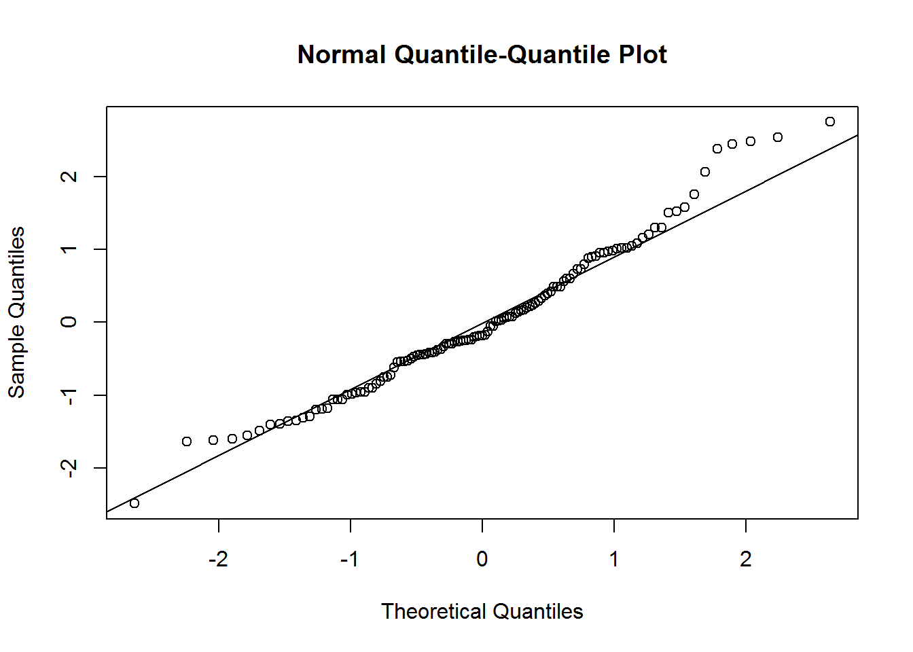
The random effects for women’s actor effects seem more-or-less normal in shape.
Histogram and Q-Q Plot for Female Partner Effects
hist(REs_basicSRM_ASEXCHEM$cond$`GROUPID:FemaleID`$MF, col = "lightblue",
freq = FALSE, ylim = c(0, .7), xlim = c(-4, 5),
xlab = "Women's Partner Effects for Ratings of Sexual Chemistry",
main = "Histogram for Women's Partner Effects")
lines(density(REs_basicSRM_ASEXCHEM$cond$`GROUPID:FemaleID`$MF))
box()qqnorm(scale(REs_basicSRM_ASEXCHEM$cond$`GROUPID:FemaleID`$MF), main = "Normal Quantile-Quantile Plot")
qqline(scale(REs_basicSRM_ASEXCHEM$cond$`GROUPID:FemaleID`$MF))The random effects for women’s partner effects seem pretty normal in shape.
Histogram and Q-Q Plot for Man-to-Woman Relationship Effects
hist(REs_basicSRM_ASEXCHEM$cond$`GROUPID:MaleID:FemaleID`$MF, col = "lightblue",
freq = FALSE, ylim = c(0, .7), xlim = c(-4, 5),
xlab = "Man-to-Woman Relationship Effects for Ratings of Sexual Chemistry",
main = "Histogram for Man-to-Woman Relationship Effects")
lines(density(REs_basicSRM_ASEXCHEM$cond$`GROUPID:MaleID:FemaleID`$MF))
box()qqnorm(scale(REs_basicSRM_ASEXCHEM$cond$`GROUPID:MaleID:FemaleID`$MF), main = "Normal Quantile-Quantile Plot")
qqline(scale(REs_basicSRM_ASEXCHEM$cond$`GROUPID:MaleID:FemaleID`$MF))Q-Q plot suggests normality.
Histogram and Q-Q Plot for Woman-to-Man Relationship Effects
hist(REs_basicSRM_ASEXCHEM$cond$`GROUPID:MaleID:FemaleID`$FM, col = "lightblue",
freq = FALSE, ylim = c(0, .7), xlim = c(-4, 5),
xlab = "Woman-to-Man Relationship Effects for Ratings of Sexual Chemistry",
main = "Histogram for Woman-to-Man Relationship Effects")
lines(density(REs_basicSRM_ASEXCHEM$cond$`GROUPID:MaleID:FemaleID`$FM))
box()qqnorm(scale(REs_basicSRM_ASEXCHEM$cond$`GROUPID:MaleID:FemaleID`$FM), main = "Normal Quantile-Quantile Plot")
qqline(scale(REs_basicSRM_ASEXCHEM$cond$`GROUPID:MaleID:FemaleID`$FM))Q-Q plot suggests some non-normality.
Scatterplots for Pairs of Random Effects
Scatterplot of men’s actor and partner effects
plot(REs_basicSRM_ASEXCHEM$cond$`GROUPID:MaleID`)Scatterplot of women’s actor and partner effects
plot(REs_basicSRM_ASEXCHEM$cond$`GROUPID:FemaleID`)Scatterplot of men’s and women’s relationship effects
plot(REs_basicSRM_ASEXCHEM$cond$`GROUPID:MaleID:FemaleID`)Getting Relative Percentage (these estimates are from SPSS)
SRMRelativePercentage(MActVar = 0.540433, FPartVar = 0.510720, MFRelVar = 1.024732,
FActVar = 0.400072, MPartVar = 0.200630, FMRelVar = 0.902894) Actor Partner Relation Plus Error Total Variance
Man-to-Woman Ratings 26.03 24.60 49.36 2.08
Woman-to-Man Ratings 26.61 13.34 60.05 1.50Narcissistic Traits Predicting SRM Effects for Ratings of Partner Narcissism
Visual Inspection of Variable Distributions Across Groups
dotplot(
reorder(GROUPID, APARTNARC) ~ APARTNARC,
data = SD_data4, jitter.y = TRUE,
ylab = "Speed-Dating Group",
main = "Dotplot of \'APARTNARC\' for Speed-Dating Groups")SD_data4$Ac_NSM_Grandiosity <- as.numeric(SD_data4$Ac_NSM_Grandiosity)
SD_data4$Pc_NSM_Grandiosity <- as.numeric(SD_data4$Pc_NSM_Grandiosity)
dotplot(
reorder(GROUPID, Ac_NSM_Grandiosity) ~ Ac_NSM_Grandiosity,
data = SD_data4, jitter.y = TRUE,
ylab = "Speed-Dating Group",
main = "Dotplot of \'Ac_NSM_Grandiosity\' for Speed-Dating Groups")SD_data4$Ac_NSM_Entitlement <- as.numeric(SD_data4$Ac_NSM_Entitlement)
SD_data4$Pc_NSM_Entitlement <- as.numeric(SD_data4$Pc_NSM_Entitlement)
dotplot(
reorder(GROUPID, Ac_NSM_Entitlement) ~ Ac_NSM_Entitlement,
data = SD_data4, jitter.y = TRUE,
ylab = "Speed-Dating Group",
main = "Dotplot of \'Ac_NSM_Entitlement\' for Speed-Dating Groups")
SD_data4$Ac_NSM_Vulnerability <- as.numeric(SD_data4$Ac_NSM_Vulnerability)
SD_data4$Pc_NSM_Vulnerability <- as.numeric(SD_data4$Pc_NSM_Vulnerability)
dotplot(
reorder(GROUPID, Ac_NSM_Vulnerability) ~ Ac_NSM_Vulnerability,
data = SD_data4, jitter.y = TRUE,
ylab = "Speed-Dating Group",
main = "Dotplot of \'Ac_NSM_Vulnerability\' for Speed-Dating Groups")Subsetting data
myvars <- c("GROUPID", "MaleID", "FemaleID", "MF", "FM",
"APARTNARC", "Ac_NSM_Grandiosity", "Ac_NSM_Entitlement",
"Ac_NSM_Vulnerability", "Pc_NSM_Grandiosity", "Pc_NSM_Entitlement",
"Pc_NSM_Vulnerability", "Agender", "GroupID_EC1", "GroupID_EC2",
"GroupID_EC3", "GroupID_EC4", "GroupID_EC5", "GroupID_EC6",
"GroupID_EC7", "GroupID_EC8", "GroupID_EC9", "GroupID_EC10",
"GroupID_EC11", "GroupID_EC12", "GroupID_EC13", "GroupID_EC14",
"GroupID_EC15", "GroupID_EC16", "GroupID_EC17", "GroupID_EC18",
"GroupID_EC19", "GroupID_EC20", "GroupID_EC21", "GroupID_EC22",
"GroupID_EC23", "GroupID_EC24", "GroupID_EC25", "GroupID_EC26",
"GroupID_EC27", "GroupID_EC28", "GroupID_EC29", "GroupID_EC30",
"GroupID_EC31", "GroupID_EC32")
SD_data_APARTNARC.withNSMTraits <- SD_data4[myvars]
SD_data_APARTNARC.withNSMTraits <- na.omit(SD_data_APARTNARC.withNSMTraits)Narcissistic Traits Predicting SRM Effects for Ratings of Partner Narcissism
Note that because of the small partner effect variances, I had to fix them to 0 to get model to run.
SRM_APARTNARC.withNSMTraits <- glmmTMB(APARTNARC ~ 1 + Agender*GroupID_EC1 + Agender*GroupID_EC2 + Agender*GroupID_EC3 + Agender*GroupID_EC4 +
Agender*GroupID_EC5 + Agender*GroupID_EC6 + Agender*GroupID_EC7 + Agender*GroupID_EC8 + Agender*GroupID_EC9 +
Agender*GroupID_EC10 + Agender*GroupID_EC11 + Agender*GroupID_EC12 + Agender*GroupID_EC13 + Agender*GroupID_EC14 +
Agender*GroupID_EC15 + Agender*GroupID_EC16 + Agender*GroupID_EC17 + Agender*GroupID_EC18 + Agender*GroupID_EC19 +
Agender*GroupID_EC20 + Agender*GroupID_EC21 + Agender*GroupID_EC22 + Agender*GroupID_EC23 + Agender*GroupID_EC24 +
Agender*GroupID_EC25 + Agender*GroupID_EC26 + Agender*GroupID_EC27 + Agender*GroupID_EC28 + Agender*GroupID_EC29 +
Agender*GroupID_EC30 + Agender*GroupID_EC31 + Agender*GroupID_EC32 + Agender*Ac_NSM_Grandiosity +
Agender*Ac_NSM_Entitlement + Agender*Ac_NSM_Vulnerability + Agender*Pc_NSM_Grandiosity +
Agender*Pc_NSM_Entitlement + Agender*Pc_NSM_Vulnerability +
diag(0 + MF + FM |GROUPID:MaleID) + diag(0 + FM + MF |GROUPID:FemaleID) +
us(0 + MF + FM + 0| GROUPID:MaleID:FemaleID),data = SD_data_APARTNARC.withNSMTraits,
family = gaussian(link = "identity"), dispformula=~0, REML = TRUE,
verbose = FALSE, na.action = na.omit)summary(SRM_APARTNARC.withNSMTraits) Family: gaussian ( identity )
Formula:
APARTNARC ~ 1 + Agender * GroupID_EC1 + Agender * GroupID_EC2 +
Agender * GroupID_EC3 + Agender * GroupID_EC4 + Agender *
GroupID_EC5 + Agender * GroupID_EC6 + Agender * GroupID_EC7 +
Agender * GroupID_EC8 + Agender * GroupID_EC9 + Agender *
GroupID_EC10 + Agender * GroupID_EC11 + Agender * GroupID_EC12 +
Agender * GroupID_EC13 + Agender * GroupID_EC14 + Agender *
GroupID_EC15 + Agender * GroupID_EC16 + Agender * GroupID_EC17 +
Agender * GroupID_EC18 + Agender * GroupID_EC19 + Agender *
GroupID_EC20 + Agender * GroupID_EC21 + Agender * GroupID_EC22 +
Agender * GroupID_EC23 + Agender * GroupID_EC24 + Agender *
GroupID_EC25 + Agender * GroupID_EC26 + Agender * GroupID_EC27 +
Agender * GroupID_EC28 + Agender * GroupID_EC29 + Agender *
GroupID_EC30 + Agender * GroupID_EC31 + Agender * GroupID_EC32 +
Agender * Ac_NSM_Grandiosity + Agender * Ac_NSM_Entitlement +
Agender * Ac_NSM_Vulnerability + Agender * Pc_NSM_Grandiosity +
Agender * Pc_NSM_Entitlement + Agender * Pc_NSM_Vulnerability +
diag(0 + MF + FM | GROUPID:MaleID) + diag(0 + FM + MF | GROUPID:FemaleID) +
us(0 + MF + FM + 0 | GROUPID:MaleID:FemaleID)
Dispersion: ~0
Data: SD_data_APARTNARC.withNSMTraits
AIC BIC logLik deviance df.resid
2455.4 2852.7 -1142.7 2285.4 785
Random effects:
Conditional model:
Groups Name Variance Std.Dev. Corr
GROUPID:MaleID MF 0.902275 0.94988
FM 0.005486 0.07407 0.00
GROUPID:FemaleID FM 0.764257 0.87422
MF 0.015419 0.12417 0.00
GROUPID:MaleID:FemaleID MF 0.648092 0.80504
FM 0.678213 0.82354 0.03
Number of obs: 792, groups:
GROUPID:MaleID, 116; GROUPID:FemaleID, 114; GROUPID:MaleID:FemaleID, 403
Conditional model:
Estimate Std. Error z value Pr(>|z|)
(Intercept) 2.33765 0.08123 28.777 < 2e-16 ***
Agender 0.23036 0.08068 2.855 0.00430 **
GroupID_EC1 -0.40957 0.32106 -1.276 0.20206
GroupID_EC2 0.42223 0.36423 1.159 0.24636
GroupID_EC3 0.28603 0.42408 0.674 0.50001
GroupID_EC4 -0.10472 0.31620 -0.331 0.74051
GroupID_EC5 0.49692 0.53908 0.922 0.35663
GroupID_EC6 -0.20557 0.48398 -0.425 0.67102
GroupID_EC7 0.08702 0.39410 0.221 0.82525
GroupID_EC8 -0.21742 0.38533 -0.564 0.57259
GroupID_EC9 -0.53597 0.35721 -1.500 0.13350
GroupID_EC10 0.12617 0.41778 0.302 0.76265
GroupID_EC11 0.36235 0.41872 0.865 0.38683
GroupID_EC12 0.52736 0.35926 1.468 0.14213
GroupID_EC13 0.13199 0.42992 0.307 0.75884
GroupID_EC14 0.07219 0.37130 0.194 0.84584
GroupID_EC15 -0.44137 0.47282 -0.933 0.35057
GroupID_EC16 0.11742 0.48105 0.244 0.80717
GroupID_EC17 0.66759 0.43153 1.547 0.12186
GroupID_EC18 0.63046 0.35699 1.766 0.07739 .
GroupID_EC19 0.20061 0.42051 0.477 0.63332
GroupID_EC20 -0.26958 0.45061 -0.598 0.54967
GroupID_EC21 -0.22590 0.33551 -0.673 0.50075
GroupID_EC22 0.49362 0.39413 1.252 0.21041
GroupID_EC23 -0.46147 0.36143 -1.277 0.20168
GroupID_EC24 0.31291 0.36112 0.866 0.38623
GroupID_EC25 -0.74639 0.40753 -1.832 0.06703 .
GroupID_EC26 0.46905 0.41908 1.119 0.26303
GroupID_EC27 -0.09777 0.44094 -0.222 0.82452
GroupID_EC28 -0.54964 0.42498 -1.293 0.19590
GroupID_EC29 -0.18055 0.36383 -0.496 0.61972
GroupID_EC30 -0.55942 0.46795 -1.195 0.23191
GroupID_EC31 -0.01672 0.44794 -0.037 0.97022
GroupID_EC32 -0.31070 0.39860 -0.779 0.43569
Ac_NSM_Grandiosity 0.04423 0.11991 0.369 0.71223
Ac_NSM_Entitlement 0.03402 0.12396 0.274 0.78374
Ac_NSM_Vulnerability 0.12783 0.09012 1.418 0.15608
Pc_NSM_Grandiosity 0.14417 0.05219 2.762 0.00574 **
Pc_NSM_Entitlement 0.10270 0.05401 1.902 0.05721 .
Pc_NSM_Vulnerability -0.06194 0.03922 -1.579 0.11428
Agender:GroupID_EC1 -0.13518 0.31954 -0.423 0.67227
Agender:GroupID_EC2 -0.06839 0.36222 -0.189 0.85025
Agender:GroupID_EC3 -0.92218 0.42120 -2.189 0.02857 *
Agender:GroupID_EC4 0.21296 0.31475 0.677 0.49865
Agender:GroupID_EC5 -0.20902 0.53423 -0.391 0.69560
Agender:GroupID_EC6 -0.21375 0.48030 -0.445 0.65629
Agender:GroupID_EC7 -0.20268 0.39167 -0.517 0.60482
Agender:GroupID_EC8 -0.46049 0.38355 -1.201 0.22990
Agender:GroupID_EC9 0.19288 0.35528 0.543 0.58721
Agender:GroupID_EC10 0.09816 0.41500 0.237 0.81302
Agender:GroupID_EC11 0.13596 0.41592 0.327 0.74375
Agender:GroupID_EC12 0.37358 0.35729 1.046 0.29574
Agender:GroupID_EC13 0.65724 0.42697 1.539 0.12373
Agender:GroupID_EC14 0.31252 0.36919 0.847 0.39727
Agender:GroupID_EC15 -0.34710 0.46917 -0.740 0.45940
Agender:GroupID_EC16 -0.22880 0.47740 -0.479 0.63174
Agender:GroupID_EC17 -0.05035 0.42858 -0.117 0.90647
Agender:GroupID_EC18 -0.24333 0.35506 -0.685 0.49314
Agender:GroupID_EC19 0.12941 0.41769 0.310 0.75669
Agender:GroupID_EC20 -0.08324 0.44741 -0.186 0.85241
Agender:GroupID_EC21 0.53197 0.33384 1.593 0.11105
Agender:GroupID_EC22 0.18734 0.39177 0.478 0.63251
Agender:GroupID_EC23 0.45396 0.35946 1.263 0.20663
Agender:GroupID_EC24 0.35110 0.35914 0.978 0.32827
Agender:GroupID_EC25 -0.12648 0.40503 -0.312 0.75483
Agender:GroupID_EC26 -0.29181 0.41628 -0.701 0.48330
Agender:GroupID_EC27 0.60914 0.43793 1.391 0.16424
Agender:GroupID_EC28 0.50036 0.42210 1.185 0.23586
Agender:GroupID_EC29 -0.28336 0.36182 -0.783 0.43355
Agender:GroupID_EC30 -0.18077 0.46545 -0.388 0.69774
Agender:GroupID_EC31 -0.12770 0.44594 -0.286 0.77459
Agender:GroupID_EC32 -0.57695 0.39617 -1.456 0.14531
Agender:Ac_NSM_Grandiosity -0.15448 0.11991 -1.288 0.19764
Agender:Ac_NSM_Entitlement 0.09767 0.12396 0.788 0.43073
Agender:Ac_NSM_Vulnerability 0.04935 0.09012 0.548 0.58400
Agender:Pc_NSM_Grandiosity -0.08425 0.05219 -1.614 0.10647
Agender:Pc_NSM_Entitlement 0.12576 0.05401 2.328 0.01989 *
Agender:Pc_NSM_Vulnerability -0.03189 0.03922 -0.813 0.41609
---
Signif. codes: 0 '***' 0.001 '**' 0.01 '*' 0.05 '.' 0.1 ' ' 1Checking Normality of Level-1 Residuals
Standard low tech way
hist(scale(resid(SRM_APARTNARC.withNSMTraits)),
freq = FALSE, ylim = c(0, .7), xlim = c(-4, 5),
main = "Narcissistic Traits Predicting SRM Effects for Ratings of Partner Narcissism",
col = "lightblue",
xlab = "Standardized Residuals")
lines(density(scale(resid(SRM_APARTNARC.withNSMTraits))))
box()qqnorm(scale(resid(SRM_APARTNARC.withNSMTraits)), main = "Normal Quantile-Quantile Plot")
qqline(scale(resid(SRM_APARTNARC.withNSMTraits)))There are some problems with the normality of the residuals for APARTNARC, most likely due to the fact that it is a single-item measure.
More high tech way with DHARMa package (note that residual ~ pred plot is incorrect)
SRM_APARTNARC.withNSMTraits_simres <- simulateResiduals(SRM_APARTNARC.withNSMTraits)Model family was recognized or set as continuous, but duplicate values were detected in the response. Consider if you are fitting an appropriate model.system.time(sr.SRM_APARTNARC.withNSMTraits <- simulateResiduals(SRM_APARTNARC.withNSMTraits))Model family was recognized or set as continuous, but duplicate values were detected in the response. Consider if you are fitting an appropriate model. user system elapsed
0.88 0.06 0.94 plot(sr.SRM_APARTNARC.withNSMTraits)The Kolmogoriv-Smirnov test confirms that the assumption of normality of the residuals is violated.
Checking for potential non-linearity and heteroscedasticity
Method suggested by Florian Hartig on Github to obtain predicted values
that are not conditioned on random effects (this prevents an artificial
correlation between residuals and predicted values in scatterplot)
newdata=SD_data_APARTNARC.withNSMTraits
newdata$GROUPID = NA
pred_APARTNARC.withNSMTraits <- predict(SRM_APARTNARC.withNSMTraits, newdata)
Stdresiduals_APARTNARC.withNSMTraits <- scale(resid(SRM_APARTNARC.withNSMTraits))plot(pred_APARTNARC.withNSMTraits, Stdresiduals_APARTNARC.withNSMTraits)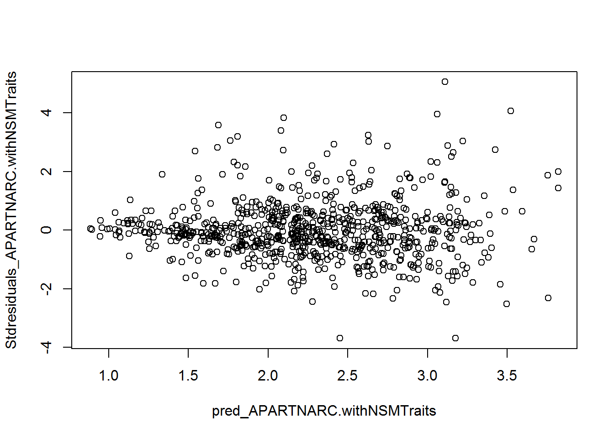
No noticeable issues with non-linearity, but potential issues with heteroscedasticity.
Checking Normality of Random Effects
Extracting Random Effects from Model
REs_SRM_APARTNARC.withNSMTraits <- ranef(SRM_APARTNARC.withNSMTraits)Histogram and Q-Q Plot for Male Actor Effects
hist(REs_SRM_APARTNARC.withNSMTraits$cond$`GROUPID:MaleID`$MF, col = "lightblue",
freq = FALSE, ylim = c(0, .7), xlim = c(-4, 5),
xlab = "Men's Actor Effects for Ratings of Partner Narcissism",
main = "Histogram for Men's Actor Effects")
lines(density(REs_SRM_APARTNARC.withNSMTraits$cond$`GROUPID:MaleID`$MF))
box()qqnorm(scale(REs_SRM_APARTNARC.withNSMTraits$cond$`GROUPID:MaleID`$MF), main = "Normal Quantile-Quantile Plot")
qqline(scale(REs_SRM_APARTNARC.withNSMTraits$cond$`GROUPID:MaleID`$MF))The random effects for men’s actor effects seem pretty normal in shape.
Histogram and Q-Q Plot for Female Actor Effects
hist(REs_SRM_APARTNARC.withNSMTraits$cond$`GROUPID:FemaleID`$FM, col = "lightblue",
freq = FALSE, ylim = c(0, .7), xlim = c(-4, 5),
xlab = "Women's Actor Effects for Ratings of Partner Narcissism",
main = "Histogram for Women's Actor Effects")
lines(density(REs_SRM_APARTNARC.withNSMTraits$cond$`GROUPID:FemaleID`$FM))
box()qqnorm(scale(REs_SRM_APARTNARC.withNSMTraits$cond$`GROUPID:FemaleID`$FM), main = "Normal Quantile-Quantile Plot")
qqline(scale(REs_SRM_APARTNARC.withNSMTraits$cond$`GROUPID:FemaleID`$FM))The random effects for women’s actor effects seem more-or-less normal in shape.
Histogram and Q-Q Plot for Man-to-Woman Relationship Effects
hist(REs_SRM_APARTNARC.withNSMTraits$cond$`GROUPID:MaleID:FemaleID`$MF, col = "lightblue",
freq = FALSE, ylim = c(0, .7), xlim = c(-4, 5),
xlab = "Man-to-Woman Relationship Effects for Ratings of Partner Narcissism",
main = "Histogram for Man-to-Woman Relationship Effects")
lines(density(REs_SRM_APARTNARC.withNSMTraits$cond$`GROUPID:MaleID:FemaleID`$MF))
box()qqnorm(scale(REs_SRM_APARTNARC.withNSMTraits$cond$`GROUPID:MaleID:FemaleID`$MF), main = "Normal Quantile-Quantile Plot")
qqline(scale(REs_SRM_APARTNARC.withNSMTraits$cond$`GROUPID:MaleID:FemaleID`$MF))Q-Q plot suggests some non-normality.
Histogram and Q-Q Plot for Woman-to-Man Relationship Effects
hist(REs_SRM_APARTNARC.withNSMTraits$cond$`GROUPID:MaleID:FemaleID`$FM, col = "lightblue",
freq = FALSE, ylim = c(0, .7), xlim = c(-4, 5),
xlab = "Woman-to-Man Relationship Effects for Ratings of Partner Narcissism",
main = "Histogram for Woman-to-Man Relationship Effects")
lines(density(REs_SRM_APARTNARC.withNSMTraits$cond$`GROUPID:MaleID:FemaleID`$FM))
box()qqnorm(scale(REs_SRM_APARTNARC.withNSMTraits$cond$`GROUPID:MaleID:FemaleID`$FM), main = "Normal Quantile-Quantile Plot")
qqline(scale(REs_SRM_APARTNARC.withNSMTraits$cond$`GROUPID:MaleID:FemaleID`$FM))Q-Q plot suggests non-normality.
Scatterplots for Pairs of Random Effects
Scatterplot of men’s and women’s relationship effects
plot(REs_SRM_APARTNARC.withNSMTraits$cond$`GROUPID:MaleID:FemaleID`)Narcissistic Traits Predicting SRM Effects for Ratings of Partner Warmth
Visual Inspection of Variable Distributions Across Groups
dotplot(
reorder(GROUPID, AWARM) ~ AWARM,
data = SD_data4, jitter.y = TRUE,
ylab = "Speed-Dating Group",
main = "Dotplot of \'AWARM\' for Speed-Dating Groups")Subsetting data
myvars <- c("GROUPID", "MaleID", "FemaleID", "MF", "FM",
"AWARM", "Ac_NSM_Grandiosity", "Ac_NSM_Entitlement",
"Ac_NSM_Vulnerability", "Pc_NSM_Grandiosity", "Pc_NSM_Entitlement",
"Pc_NSM_Vulnerability", "Agender", "GroupID_EC1", "GroupID_EC2",
"GroupID_EC3", "GroupID_EC4", "GroupID_EC5", "GroupID_EC6",
"GroupID_EC7", "GroupID_EC8", "GroupID_EC9", "GroupID_EC10",
"GroupID_EC11", "GroupID_EC12", "GroupID_EC13", "GroupID_EC14",
"GroupID_EC15", "GroupID_EC16", "GroupID_EC17", "GroupID_EC18",
"GroupID_EC19", "GroupID_EC20", "GroupID_EC21", "GroupID_EC22",
"GroupID_EC23", "GroupID_EC24", "GroupID_EC25", "GroupID_EC26",
"GroupID_EC27", "GroupID_EC28", "GroupID_EC29", "GroupID_EC30",
"GroupID_EC31", "GroupID_EC32")
SD_data_AWARM.withNSMTraits <- SD_data4[myvars]
SD_data_AWARM.withNSMTraits <- na.omit(SD_data_AWARM.withNSMTraits)Narcissistic Traits Predicting SRM Effects for Ratings of Partner Warmth
SRM_AWARM.withNSMTraits <- glmmTMB(AWARM ~ 1 + Agender*GroupID_EC1 + Agender*GroupID_EC2 + Agender*GroupID_EC3 + Agender*GroupID_EC4 +
Agender*GroupID_EC5 + Agender*GroupID_EC6 + Agender*GroupID_EC7 + Agender*GroupID_EC8 + Agender*GroupID_EC9 +
Agender*GroupID_EC10 + Agender*GroupID_EC11 + Agender*GroupID_EC12 + Agender*GroupID_EC13 + Agender*GroupID_EC14 +
Agender*GroupID_EC15 + Agender*GroupID_EC16 + Agender*GroupID_EC17 + Agender*GroupID_EC18 + Agender*GroupID_EC19 +
Agender*GroupID_EC20 + Agender*GroupID_EC21 + Agender*GroupID_EC22 + Agender*GroupID_EC23 + Agender*GroupID_EC24 +
Agender*GroupID_EC25 + Agender*GroupID_EC26 + Agender*GroupID_EC27 + Agender*GroupID_EC28 + Agender*GroupID_EC29 +
Agender*GroupID_EC30 + Agender*GroupID_EC31 + Agender*GroupID_EC32 + Agender*Ac_NSM_Grandiosity +
Agender*Ac_NSM_Entitlement + Agender*Ac_NSM_Vulnerability + Agender*Pc_NSM_Grandiosity +
Agender*Pc_NSM_Entitlement + Agender*Pc_NSM_Vulnerability +
(0 + MF + FM |GROUPID:MaleID) + (0 + FM + MF |GROUPID:FemaleID) +
us(0 + MF + FM + 0| GROUPID:MaleID:FemaleID),data = SD_data_AWARM.withNSMTraits,
family = gaussian(link = "identity"), dispformula=~0, REML = TRUE,
verbose = FALSE, na.action = na.omit)Warning in fitTMB(TMBStruc): Model convergence problem; false convergence (8).
See vignette('troubleshooting')glmmTMB issues a false convergence warning (8), but same model runs fine in SPSS, with the same deviance value and virtually identical parameter estimates.
summary(SRM_AWARM.withNSMTraits) Family: gaussian ( identity )
Formula:
AWARM ~ 1 + Agender * GroupID_EC1 + Agender * GroupID_EC2 + Agender *
GroupID_EC3 + Agender * GroupID_EC4 + Agender * GroupID_EC5 +
Agender * GroupID_EC6 + Agender * GroupID_EC7 + Agender *
GroupID_EC8 + Agender * GroupID_EC9 + Agender * GroupID_EC10 +
Agender * GroupID_EC11 + Agender * GroupID_EC12 + Agender *
GroupID_EC13 + Agender * GroupID_EC14 + Agender * GroupID_EC15 +
Agender * GroupID_EC16 + Agender * GroupID_EC17 + Agender *
GroupID_EC18 + Agender * GroupID_EC19 + Agender * GroupID_EC20 +
Agender * GroupID_EC21 + Agender * GroupID_EC22 + Agender *
GroupID_EC23 + Agender * GroupID_EC24 + Agender * GroupID_EC25 +
Agender * GroupID_EC26 + Agender * GroupID_EC27 + Agender *
GroupID_EC28 + Agender * GroupID_EC29 + Agender * GroupID_EC30 +
Agender * GroupID_EC31 + Agender * GroupID_EC32 + Agender *
Ac_NSM_Grandiosity + Agender * Ac_NSM_Entitlement + Agender *
Ac_NSM_Vulnerability + Agender * Pc_NSM_Grandiosity + Agender *
Pc_NSM_Entitlement + Agender * Pc_NSM_Vulnerability + (0 +
MF + FM | GROUPID:MaleID) + (0 + FM + MF | GROUPID:FemaleID) +
us(0 + MF + FM + 0 | GROUPID:MaleID:FemaleID)
Dispersion: ~0
Data: SD_data_AWARM.withNSMTraits
AIC BIC logLik deviance df.resid
3223.6 3631.0 -1524.8 3049.6 790
Random effects:
Conditional model:
Groups Name Variance Std.Dev. Corr
GROUPID:MaleID MF 0.8551 0.9247
FM 0.4412 0.6642 0.35
GROUPID:FemaleID FM 0.9215 0.9600
MF 0.6381 0.7988 -0.18
GROUPID:MaleID:FemaleID MF 1.4810 1.2170
FM 2.4020 1.5499 0.09
Number of obs: 799, groups:
GROUPID:MaleID, 116; GROUPID:FemaleID, 114; GROUPID:MaleID:FemaleID, 403
Conditional model:
Estimate Std. Error z value Pr(>|z|)
(Intercept) 8.29277 0.11508 72.06 <2e-16 ***
Agender -0.08122 0.10807 -0.75 0.4523
GroupID_EC1 0.42048 0.45179 0.93 0.3520
GroupID_EC2 -0.10187 0.51755 -0.20 0.8440
GroupID_EC3 -0.88241 0.60888 -1.45 0.1473
GroupID_EC4 0.25729 0.44459 0.58 0.5628
GroupID_EC5 -0.74115 0.79179 -0.94 0.3493
GroupID_EC6 -0.09217 0.70401 -0.13 0.8958
GroupID_EC7 0.23684 0.56136 0.42 0.6731
GroupID_EC8 0.07438 0.50476 0.15 0.8828
GroupID_EC9 0.37880 0.50605 0.75 0.4541
GroupID_EC10 0.47876 0.59957 0.80 0.4246
GroupID_EC11 -0.61347 0.60107 -1.02 0.3074
GroupID_EC12 -0.28761 0.50949 -0.56 0.5724
GroupID_EC13 0.25295 0.61804 0.41 0.6823
GroupID_EC14 0.22626 0.52769 0.43 0.6681
GroupID_EC15 0.34512 0.68314 0.51 0.6134
GroupID_EC16 -0.10014 0.69931 -0.14 0.8861
GroupID_EC17 -0.31333 0.62035 -0.51 0.6135
GroupID_EC18 -0.24978 0.50595 -0.49 0.6215
GroupID_EC19 -0.31187 0.60403 -0.52 0.6056
GroupID_EC20 0.88595 0.64964 1.36 0.1726
GroupID_EC21 0.08111 0.47178 0.17 0.8635
GroupID_EC22 -0.90223 0.56311 -1.60 0.1091
GroupID_EC23 0.95387 0.51312 1.86 0.0630 .
GroupID_EC24 -0.20963 0.51194 -0.41 0.6822
GroupID_EC25 0.58428 0.58281 1.00 0.3161
GroupID_EC26 0.05441 0.60176 0.09 0.9280
GroupID_EC27 -0.80600 0.62928 -1.28 0.2003
GroupID_EC28 -0.45364 0.61081 -0.74 0.4577
GroupID_EC29 0.21106 0.51648 0.41 0.6828
GroupID_EC30 -0.03926 0.60084 -0.07 0.9479
GroupID_EC31 -0.31206 0.60131 -0.52 0.6038
GroupID_EC32 0.29132 0.57024 0.51 0.6094
Ac_NSM_Grandiosity 0.09687 0.14219 0.68 0.4957
Ac_NSM_Entitlement -0.12903 0.14756 -0.87 0.3819
Ac_NSM_Vulnerability 0.01840 0.10308 0.18 0.8584
Pc_NSM_Grandiosity 0.31307 0.12277 2.55 0.0108 *
Pc_NSM_Entitlement -0.31920 0.12631 -2.53 0.0115 *
Pc_NSM_Vulnerability 0.02876 0.09145 0.31 0.7531
Agender:GroupID_EC1 0.22261 0.42240 0.53 0.5982
Agender:GroupID_EC2 0.62139 0.48153 1.29 0.1969
Agender:GroupID_EC3 0.42150 0.57354 0.73 0.4624
Agender:GroupID_EC4 0.31182 0.41665 0.75 0.4542
Agender:GroupID_EC5 0.29021 0.74007 0.39 0.6950
Agender:GroupID_EC6 -0.65695 0.63927 -1.03 0.3041
Agender:GroupID_EC7 -0.02724 0.53583 -0.05 0.9594
Agender:GroupID_EC8 0.04172 0.47346 0.09 0.9298
Agender:GroupID_EC9 0.73753 0.47488 1.55 0.1204
Agender:GroupID_EC10 -0.56317 0.56216 -1.00 0.3164
Agender:GroupID_EC11 -0.34765 0.56389 -0.62 0.5376
Agender:GroupID_EC12 0.01033 0.48000 0.02 0.9828
Agender:GroupID_EC13 -0.47948 0.58110 -0.83 0.4093
Agender:GroupID_EC14 0.11512 0.49035 0.23 0.8144
Agender:GroupID_EC15 0.34734 0.65975 0.53 0.5986
Agender:GroupID_EC16 0.72511 0.63508 1.14 0.2536
Agender:GroupID_EC17 -0.04146 0.58439 -0.07 0.9434
Agender:GroupID_EC18 -0.01157 0.47584 -0.02 0.9806
Agender:GroupID_EC19 0.10127 0.56615 0.18 0.8580
Agender:GroupID_EC20 -0.51121 0.60971 -0.84 0.4018
Agender:GroupID_EC21 -0.06856 0.45250 -0.15 0.8796
Agender:GroupID_EC22 -0.90090 0.51642 -1.74 0.0811 .
Agender:GroupID_EC23 -0.19300 0.47961 -0.40 0.6874
Agender:GroupID_EC24 0.17741 0.48114 0.37 0.7123
Agender:GroupID_EC25 0.04937 0.53223 0.09 0.9261
Agender:GroupID_EC26 -0.92655 0.56379 -1.64 0.1003
Agender:GroupID_EC27 -0.24403 0.62219 -0.39 0.6949
Agender:GroupID_EC28 -0.04849 0.57194 -0.08 0.9324
Agender:GroupID_EC29 0.41086 0.48325 0.85 0.3952
Agender:GroupID_EC30 0.75520 0.56412 1.34 0.1807
Agender:GroupID_EC31 -0.93714 0.57283 -1.64 0.1018
Agender:GroupID_EC32 0.26682 0.52372 0.51 0.6104
Agender:Ac_NSM_Grandiosity 0.15010 0.14213 1.06 0.2909
Agender:Ac_NSM_Entitlement -0.19222 0.14756 -1.30 0.1927
Agender:Ac_NSM_Vulnerability 0.04578 0.10301 0.44 0.6567
Agender:Pc_NSM_Grandiosity -0.23946 0.12279 -1.95 0.0512 .
Agender:Pc_NSM_Entitlement -0.11302 0.12632 -0.89 0.3709
Agender:Pc_NSM_Vulnerability 0.02615 0.09147 0.29 0.7749
---
Signif. codes: 0 '***' 0.001 '**' 0.01 '*' 0.05 '.' 0.1 ' ' 1Checking Normality of Level-1 Residuals
Standard low tech way
hist(scale(resid(SRM_AWARM.withNSMTraits)),
freq = FALSE, ylim = c(0, .7), xlim = c(-4, 5),
main = "Narcissistic Traits Predicting SRM Effects for Ratings of Partner Warmth",
col = "lightblue",
xlab = "Standardized Residuals")
lines(density(scale(resid(SRM_AWARM.withNSMTraits))))
box()qqnorm(scale(resid(SRM_AWARM.withNSMTraits)), main = "Normal Quantile-Quantile Plot")
qqline(scale(resid(SRM_AWARM.withNSMTraits)))There are some minor problems with the normality of the residuals for AWARM, most likely due to the fact that it is a single-item measure.
More high tech way with DHARMa package (note that residual ~ pred plot is incorrect)
SRM_AWARM.withNSMTraits_simres <- simulateResiduals(SRM_AWARM.withNSMTraits)Model family was recognized or set as continuous, but duplicate values were detected in the response. Consider if you are fitting an appropriate model.system.time(sr.SRM_AWARM.withNSMTraits <- simulateResiduals(SRM_AWARM.withNSMTraits))Model family was recognized or set as continuous, but duplicate values were detected in the response. Consider if you are fitting an appropriate model. user system elapsed
1.00 0.02 1.03 plot(sr.SRM_AWARM.withNSMTraits)The Kolmogoriv-Smirnov test confirms that the assumption of normality of the residuals is violated.
Checking for potential non-linearity and heteroscedasticity
Method suggested by Florian Hartig on Github to obtain predicted values
that are not conditioned on random effects (this prevents an artificial
correlation between residuals and predicted values in scatterplot)
newdata=SD_data_AWARM.withNSMTraits
newdata$GROUPID = NA
pred_AWARM.withNSMTraits <- predict(SRM_AWARM.withNSMTraits, newdata)
Stdresiduals_AWARM.withNSMTraits <- scale(resid(SRM_AWARM.withNSMTraits))plot(pred_AWARM.withNSMTraits, Stdresiduals_AWARM.withNSMTraits)No noticeable issues with non-linearity or heteroscedasticity.
Checking Normality of Random Effects
Extracting Random Effects from Model
REs_SRM_AWARM.withNSMTraits <- ranef(SRM_AWARM.withNSMTraits)Histogram and Q-Q Plot for Male Actor Effects
hist(REs_SRM_AWARM.withNSMTraits$cond$`GROUPID:MaleID`$MF, col = "lightblue",
freq = FALSE, ylim = c(0, .7), xlim = c(-4, 5),
xlab = "Men's Actor Effects for Ratings of Partner Warmth",
main = "Histogram for Men's Actor Effects")
lines(density(REs_SRM_AWARM.withNSMTraits$cond$`GROUPID:MaleID`$MF))
box()qqnorm(scale(REs_SRM_AWARM.withNSMTraits$cond$`GROUPID:MaleID`$MF), main = "Normal Quantile-Quantile Plot")
qqline(scale(REs_SRM_AWARM.withNSMTraits$cond$`GROUPID:MaleID`$MF))The random effects for men’s actor effects seem pretty normal in shape.
Histogram and Q-Q Plot for Male Partner Effects
hist(REs_SRM_AWARM.withNSMTraits$cond$`GROUPID:MaleID`$FM, col = "lightblue",
freq = FALSE, ylim = c(0, .7), xlim = c(-4, 5),
xlab = "Men's Partner Effects for Ratings of Partner Warmth",
main = "Histogram for Men's Partner Effects")
lines(density(REs_SRM_AWARM.withNSMTraits$cond$`GROUPID:MaleID`$FM))
box()qqnorm(scale(REs_SRM_AWARM.withNSMTraits$cond$`GROUPID:MaleID`$FM), main = "Normal Quantile-Quantile Plot")
qqline(scale(REs_SRM_AWARM.withNSMTraits$cond$`GROUPID:MaleID`$FM))The random effects for men’s partner effects seem pretty normal in shape.
Histogram and Q-Q Plot for Female Actor Effects
hist(REs_SRM_AWARM.withNSMTraits$cond$`GROUPID:FemaleID`$FM, col = "lightblue",
freq = FALSE, ylim = c(0, .7), xlim = c(-4, 5),
xlab = "Women's Actor Effects for Ratings of Partner Warmth",
main = "Histogram for Women's Actor Effects")
lines(density(REs_SRM_AWARM.withNSMTraits$cond$`GROUPID:FemaleID`$FM))
box()qqnorm(scale(REs_SRM_AWARM.withNSMTraits$cond$`GROUPID:FemaleID`$FM), main = "Normal Quantile-Quantile Plot")
qqline(scale(REs_SRM_AWARM.withNSMTraits$cond$`GROUPID:FemaleID`$FM))The random effects for women’s actor effects seem more-or-less normal in shape.
Histogram and Q-Q Plot for Female Partner Effects
hist(REs_SRM_AWARM.withNSMTraits$cond$`GROUPID:FemaleID`$MF, col = "lightblue",
freq = FALSE, ylim = c(0, .7), xlim = c(-4, 5),
xlab = "Women's Partner Effects for Ratings of Partner Warmth",
main = "Histogram for Women's Partner Effects")
lines(density(REs_SRM_AWARM.withNSMTraits$cond$`GROUPID:FemaleID`$MF))
box()qqnorm(scale(REs_SRM_AWARM.withNSMTraits$cond$`GROUPID:FemaleID`$MF), main = "Normal Quantile-Quantile Plot")
qqline(scale(REs_SRM_AWARM.withNSMTraits$cond$`GROUPID:FemaleID`$MF))The random effects for women’s partner effects seem pretty normal in shape.
Histogram and Q-Q Plot for Man-to-Woman Relationship Effects
hist(REs_SRM_AWARM.withNSMTraits$cond$`GROUPID:MaleID:FemaleID`$MF, col = "lightblue",
freq = FALSE, ylim = c(0, .7), xlim = c(-4, 5),
xlab = "Man-to-Woman Relationship Effects for Ratings of Partner Warmth",
main = "Histogram for Man-to-Woman Relationship Effects")
lines(density(REs_SRM_AWARM.withNSMTraits$cond$`GROUPID:MaleID:FemaleID`$MF))
box()qqnorm(scale(REs_SRM_AWARM.withNSMTraits$cond$`GROUPID:MaleID:FemaleID`$MF), main = "Normal Quantile-Quantile Plot")
qqline(scale(REs_SRM_AWARM.withNSMTraits$cond$`GROUPID:MaleID:FemaleID`$MF))Q-Q plot suggests a little non-normality.
Histogram and Q-Q Plot for Woman-to-Man Relationship Effects
hist(REs_SRM_AWARM.withNSMTraits$cond$`GROUPID:MaleID:FemaleID`$FM, col = "lightblue",
freq = FALSE, ylim = c(0, .7), xlim = c(-4, 5),
xlab = "Woman-to-Man Relationship Effects for Ratings of Partner Warmth",
main = "Histogram for Woman-to-Man Relationship Effects")
lines(density(REs_SRM_AWARM.withNSMTraits$cond$`GROUPID:MaleID:FemaleID`$FM))
box()qqnorm(scale(REs_SRM_AWARM.withNSMTraits$cond$`GROUPID:MaleID:FemaleID`$FM), main = "Normal Quantile-Quantile Plot")
qqline(scale(REs_SRM_AWARM.withNSMTraits$cond$`GROUPID:MaleID:FemaleID`$FM))Q-Q plot suggests some non-normality.
Scatterplots for Pairs of Random Effects
Scatterplot of men’s actor and partner effects
plot(REs_SRM_AWARM.withNSMTraits$cond$`GROUPID:MaleID`)Scatterplot of women’s actor and partner effects
plot(REs_SRM_AWARM.withNSMTraits$cond$`GROUPID:FemaleID`)Scatterplot of men’s and women’s relationship effects
plot(REs_SRM_AWARM.withNSMTraits$cond$`GROUPID:MaleID:FemaleID`)Narcissistic Traits Predicting SRM Effects for Ratings of Partner Dominance
Visual Inspection of Variable Distributions Across Groups
dotplot(
reorder(GROUPID, ADOMINANT) ~ ADOMINANT,
data = SD_data4, jitter.y = TRUE,
ylab = "Speed-Dating Group",
main = "Dotplot of \'ADOMINANT\' for Speed-Dating Groups")Subsetting data
myvars <- c("GROUPID", "MaleID", "FemaleID", "MF", "FM",
"ADOMINANT", "Ac_NSM_Grandiosity", "Ac_NSM_Entitlement",
"Ac_NSM_Vulnerability", "Pc_NSM_Grandiosity", "Pc_NSM_Entitlement",
"Pc_NSM_Vulnerability", "Agender", "GroupID_EC1", "GroupID_EC2",
"GroupID_EC3", "GroupID_EC4", "GroupID_EC5", "GroupID_EC6",
"GroupID_EC7", "GroupID_EC8", "GroupID_EC9", "GroupID_EC10",
"GroupID_EC11", "GroupID_EC12", "GroupID_EC13", "GroupID_EC14",
"GroupID_EC15", "GroupID_EC16", "GroupID_EC17", "GroupID_EC18",
"GroupID_EC19", "GroupID_EC20", "GroupID_EC21", "GroupID_EC22",
"GroupID_EC23", "GroupID_EC24", "GroupID_EC25", "GroupID_EC26",
"GroupID_EC27", "GroupID_EC28", "GroupID_EC29", "GroupID_EC30",
"GroupID_EC31", "GroupID_EC32")
SD_data_ADOMINANT.withNSMTraits <- SD_data4[myvars]
SD_data_ADOMINANT.withNSMTraits <- na.omit(SD_data_ADOMINANT.withNSMTraits)Narcissistic Traits Predicting SRM Effects for Ratings of Partner Dominance
SRM_ADOMINANT.withNSMTraits <- glmmTMB(ADOMINANT ~ 1 + Agender*GroupID_EC1 + Agender*GroupID_EC2 + Agender*GroupID_EC3 + Agender*GroupID_EC4 +
Agender*GroupID_EC5 + Agender*GroupID_EC6 + Agender*GroupID_EC7 + Agender*GroupID_EC8 + Agender*GroupID_EC9 +
Agender*GroupID_EC10 + Agender*GroupID_EC11 + Agender*GroupID_EC12 + Agender*GroupID_EC13 + Agender*GroupID_EC14 +
Agender*GroupID_EC15 + Agender*GroupID_EC16 + Agender*GroupID_EC17 + Agender*GroupID_EC18 + Agender*GroupID_EC19 +
Agender*GroupID_EC20 + Agender*GroupID_EC21 + Agender*GroupID_EC22 + Agender*GroupID_EC23 + Agender*GroupID_EC24 +
Agender*GroupID_EC25 + Agender*GroupID_EC26 + Agender*GroupID_EC27 + Agender*GroupID_EC28 + Agender*GroupID_EC29 +
Agender*GroupID_EC30 + Agender*GroupID_EC31 + Agender*GroupID_EC32 + Agender*Ac_NSM_Grandiosity +
Agender*Ac_NSM_Entitlement + Agender*Ac_NSM_Vulnerability + Agender*Pc_NSM_Grandiosity +
Agender*Pc_NSM_Entitlement + Agender*Pc_NSM_Vulnerability +
(0 + MF + FM |GROUPID:MaleID) + (0 + FM + MF |GROUPID:FemaleID) +
us(0 + MF + FM + 0| GROUPID:MaleID:FemaleID),data = SD_data_ADOMINANT.withNSMTraits,
family = gaussian(link = "identity"), dispformula=~0, REML = TRUE,
verbose = FALSE, na.action = na.omit)summary(SRM_ADOMINANT.withNSMTraits) Family: gaussian ( identity )
Formula:
ADOMINANT ~ 1 + Agender * GroupID_EC1 + Agender * GroupID_EC2 +
Agender * GroupID_EC3 + Agender * GroupID_EC4 + Agender *
GroupID_EC5 + Agender * GroupID_EC6 + Agender * GroupID_EC7 +
Agender * GroupID_EC8 + Agender * GroupID_EC9 + Agender *
GroupID_EC10 + Agender * GroupID_EC11 + Agender * GroupID_EC12 +
Agender * GroupID_EC13 + Agender * GroupID_EC14 + Agender *
GroupID_EC15 + Agender * GroupID_EC16 + Agender * GroupID_EC17 +
Agender * GroupID_EC18 + Agender * GroupID_EC19 + Agender *
GroupID_EC20 + Agender * GroupID_EC21 + Agender * GroupID_EC22 +
Agender * GroupID_EC23 + Agender * GroupID_EC24 + Agender *
GroupID_EC25 + Agender * GroupID_EC26 + Agender * GroupID_EC27 +
Agender * GroupID_EC28 + Agender * GroupID_EC29 + Agender *
GroupID_EC30 + Agender * GroupID_EC31 + Agender * GroupID_EC32 +
Agender * Ac_NSM_Grandiosity + Agender * Ac_NSM_Entitlement +
Agender * Ac_NSM_Vulnerability + Agender * Pc_NSM_Grandiosity +
Agender * Pc_NSM_Entitlement + Agender * Pc_NSM_Vulnerability +
(0 + MF + FM | GROUPID:MaleID) + (0 + FM + MF | GROUPID:FemaleID) +
us(0 + MF + FM + 0 | GROUPID:MaleID:FemaleID)
Dispersion: ~0
Data: SD_data_ADOMINANT.withNSMTraits
AIC BIC logLik deviance df.resid
3381.8 3789.4 -1603.9 3207.8 791
Random effects:
Conditional model:
Groups Name Variance Std.Dev. Corr
GROUPID:MaleID MF 0.5053 0.7108
FM 0.9555 0.9775 -0.40
GROUPID:FemaleID FM 0.9936 0.9968
MF 0.3266 0.5715 -0.49
GROUPID:MaleID:FemaleID MF 2.6136 1.6167
FM 2.4641 1.5698 0.14
Number of obs: 800, groups:
GROUPID:MaleID, 116; GROUPID:FemaleID, 114; GROUPID:MaleID:FemaleID, 403
Conditional model:
Estimate Std. Error z value Pr(>|z|)
(Intercept) 6.191993 0.104965 58.99 < 2e-16 ***
Agender -0.188171 0.126198 -1.49 0.135943
GroupID_EC1 0.470960 0.390471 1.21 0.227767
GroupID_EC2 0.225682 0.455805 0.50 0.620509
GroupID_EC3 -0.521818 0.551497 -0.95 0.344054
GroupID_EC4 0.100664 0.383009 0.26 0.792685
GroupID_EC5 -0.886281 0.747371 -1.19 0.235675
GroupID_EC6 -1.046768 0.645753 -1.62 0.105017
GroupID_EC7 -0.142159 0.502771 -0.28 0.777367
GroupID_EC8 0.364189 0.443355 0.82 0.411396
GroupID_EC9 -0.049023 0.444783 -0.11 0.912236
GroupID_EC10 -0.133459 0.541618 -0.25 0.805367
GroupID_EC11 0.380451 0.543201 0.70 0.483685
GroupID_EC12 -0.038947 0.448724 -0.09 0.930834
GroupID_EC13 0.031580 0.560617 0.06 0.955078
GroupID_EC14 0.163317 0.466515 0.35 0.726281
GroupID_EC15 -0.246867 0.632575 -0.39 0.696346
GroupID_EC16 0.899690 0.641204 1.40 0.160579
GroupID_EC17 -0.027600 0.562897 -0.05 0.960894
GroupID_EC18 -0.044170 0.444768 -0.10 0.920892
GroupID_EC19 -0.658536 0.546096 -1.21 0.227856
GroupID_EC20 -0.167018 0.592348 -0.28 0.777975
GroupID_EC21 -0.181961 0.411564 -0.44 0.658402
GroupID_EC22 -0.153575 0.500182 -0.31 0.758814
GroupID_EC23 0.337946 0.449780 0.75 0.452437
GroupID_EC24 -0.035785 0.451006 -0.08 0.936759
GroupID_EC25 0.222625 0.519359 0.43 0.668175
GroupID_EC26 0.760041 0.543726 1.40 0.162162
GroupID_EC27 -0.252689 0.574049 -0.44 0.659802
GroupID_EC28 -0.528409 0.552833 -0.96 0.339162
GroupID_EC29 0.149423 0.455010 0.33 0.742614
GroupID_EC30 -0.006230 0.543049 -0.01 0.990847
GroupID_EC31 -0.108967 0.552688 -0.20 0.843704
GroupID_EC32 0.658943 0.507728 1.30 0.194347
Ac_NSM_Grandiosity 0.001053 0.143218 0.01 0.994134
Ac_NSM_Entitlement 0.031416 0.148808 0.21 0.832798
Ac_NSM_Vulnerability 0.074885 0.104257 0.72 0.472586
Pc_NSM_Grandiosity 0.478728 0.136801 3.50 0.000466 ***
Pc_NSM_Entitlement -0.129133 0.139331 -0.93 0.354030
Pc_NSM_Vulnerability -0.066917 0.103365 -0.65 0.517384
Agender:GroupID_EC1 0.196420 0.500631 0.39 0.694803
Agender:GroupID_EC2 0.735695 0.570869 1.29 0.197493
Agender:GroupID_EC3 0.158267 0.670046 0.24 0.813276
Agender:GroupID_EC4 0.125954 0.493198 0.26 0.798428
Agender:GroupID_EC5 0.059890 0.862264 0.07 0.944626
Agender:GroupID_EC6 0.422940 0.765896 0.55 0.580800
Agender:GroupID_EC7 -0.969255 0.621187 -1.56 0.118683
Agender:GroupID_EC8 -0.062131 0.558142 -0.11 0.911365
Agender:GroupID_EC9 -0.435822 0.559579 -0.78 0.436075
Agender:GroupID_EC10 -0.326916 0.659407 -0.50 0.620055
Agender:GroupID_EC11 0.740376 0.661112 1.12 0.262759
Agender:GroupID_EC12 0.261284 0.563712 0.46 0.643002
Agender:GroupID_EC13 -0.318145 0.679618 -0.47 0.639697
Agender:GroupID_EC14 0.527401 0.581286 0.91 0.364248
Agender:GroupID_EC15 -0.747436 0.753212 -0.99 0.321036
Agender:GroupID_EC16 0.097609 0.760936 0.13 0.897931
Agender:GroupID_EC17 0.334451 0.682491 0.49 0.624102
Agender:GroupID_EC18 -1.106697 0.559714 -1.98 0.048013 *
Agender:GroupID_EC19 0.119155 0.664143 0.18 0.857615
Agender:GroupID_EC20 -0.385825 0.713302 -0.54 0.588576
Agender:GroupID_EC21 0.906799 0.525183 1.73 0.084233 .
Agender:GroupID_EC22 -1.114633 0.618000 -1.80 0.071292 .
Agender:GroupID_EC23 0.478311 0.564480 0.85 0.396801
Agender:GroupID_EC24 0.363179 0.566021 0.64 0.521110
Agender:GroupID_EC25 -1.051340 0.638455 -1.65 0.099621 .
Agender:GroupID_EC26 -0.516386 0.661669 -0.78 0.435138
Agender:GroupID_EC27 0.786454 0.700189 1.12 0.261351
Agender:GroupID_EC28 1.224582 0.671300 1.82 0.068123 .
Agender:GroupID_EC29 0.902118 0.570403 1.58 0.113753
Agender:GroupID_EC30 0.089906 0.660962 0.14 0.891803
Agender:GroupID_EC31 -1.287246 0.637424 -2.02 0.043441 *
Agender:GroupID_EC32 0.239381 0.625759 0.38 0.702058
Agender:Ac_NSM_Grandiosity -0.119692 0.143251 -0.84 0.403414
Agender:Ac_NSM_Entitlement -0.012038 0.148804 -0.08 0.935523
Agender:Ac_NSM_Vulnerability 0.004621 0.104299 0.04 0.964662
Agender:Pc_NSM_Grandiosity -0.294434 0.136813 -2.15 0.031390 *
Agender:Pc_NSM_Entitlement 0.102335 0.139320 0.73 0.462625
Agender:Pc_NSM_Vulnerability -0.031055 0.103408 -0.30 0.763935
---
Signif. codes: 0 '***' 0.001 '**' 0.01 '*' 0.05 '.' 0.1 ' ' 1Checking Normality of Level-1 Residuals
Standard low tech way
hist(scale(resid(SRM_ADOMINANT.withNSMTraits)),
freq = FALSE, ylim = c(0, .7), xlim = c(-4, 5),
main = "Narcissistic Traits Predicting SRM Effects for Ratings of Partner Dominance",
col = "lightblue",
xlab = "Standardized Residuals")
lines(density(scale(resid(SRM_ADOMINANT.withNSMTraits))))
box()qqnorm(scale(resid(SRM_ADOMINANT.withNSMTraits)), main = "Normal Quantile-Quantile Plot")
qqline(scale(resid(SRM_ADOMINANT.withNSMTraits)))Residuals appear normal in shape.
More high tech way with DHARMa package (note that residual ~ pred plot is incorrect)
SRM_ADOMINANT.withNSMTraits_simres <- simulateResiduals(SRM_ADOMINANT.withNSMTraits)Model family was recognized or set as continuous, but duplicate values were detected in the response. Consider if you are fitting an appropriate model.system.time(sr.SRM_ADOMINANT.withNSMTraits <- simulateResiduals(SRM_ADOMINANT.withNSMTraits))Model family was recognized or set as continuous, but duplicate values were detected in the response. Consider if you are fitting an appropriate model. user system elapsed
0.92 0.05 1.00 plot(sr.SRM_ADOMINANT.withNSMTraits)The Kolmogoriv-Smirnov test confirms that the assumption of normality of the residuals is NOT violated.
Checking for potential non-linearity and heteroscedasticity
Method suggested by Florian Hartig on Github to obtain predicted values
that are not conditioned on random effects (this prevents an artificial
correlation between residuals and predicted values in scatterplot)
newdata=SD_data_ADOMINANT.withNSMTraits
newdata$GROUPID = NA
pred_ADOMINANT.withNSMTraits <- predict(SRM_ADOMINANT.withNSMTraits, newdata)
Stdresiduals_ADOMINANT.withNSMTraits <- scale(resid(SRM_ADOMINANT.withNSMTraits))plot(pred_ADOMINANT.withNSMTraits, Stdresiduals_ADOMINANT.withNSMTraits)No noticeable issues with non-linearity or heteroscedasticity.
Checking Normality of Random Effects
Extracting Random Effects from Model
REs_SRM_ADOMINANT.withNSMTraits <- ranef(SRM_ADOMINANT.withNSMTraits)Histogram and Q-Q Plot for Male Actor Effects
hist(REs_SRM_ADOMINANT.withNSMTraits$cond$`GROUPID:MaleID`$MF, col = "lightblue",
freq = FALSE, ylim = c(0, .7), xlim = c(-4, 5),
xlab = "Men's Actor Effects for Ratings of Partner Dominance",
main = "Histogram for Men's Actor Effects")
lines(density(REs_SRM_ADOMINANT.withNSMTraits$cond$`GROUPID:MaleID`$MF))
box()qqnorm(scale(REs_SRM_ADOMINANT.withNSMTraits$cond$`GROUPID:MaleID`$MF), main = "Normal Quantile-Quantile Plot")
qqline(scale(REs_SRM_ADOMINANT.withNSMTraits$cond$`GROUPID:MaleID`$MF))The random effects for men’s actor effects seem pretty normal in shape.
Histogram and Q-Q Plot for Male Partner Effects
hist(REs_SRM_ADOMINANT.withNSMTraits$cond$`GROUPID:MaleID`$FM, col = "lightblue",
freq = FALSE, ylim = c(0, .7), xlim = c(-4, 5),
xlab = "Men's Partner Effects for Ratings of Partner Dominance",
main = "Histogram for Men's Partner Effects")
lines(density(REs_SRM_ADOMINANT.withNSMTraits$cond$`GROUPID:MaleID`$FM))
box()qqnorm(scale(REs_SRM_ADOMINANT.withNSMTraits$cond$`GROUPID:MaleID`$FM), main = "Normal Quantile-Quantile Plot")
qqline(scale(REs_SRM_ADOMINANT.withNSMTraits$cond$`GROUPID:MaleID`$FM))The random effects for men’s partner effects seem pretty normal in shape.
Histogram and Q-Q Plot for Female Actor Effects
hist(REs_SRM_ADOMINANT.withNSMTraits$cond$`GROUPID:FemaleID`$FM, col = "lightblue",
freq = FALSE, ylim = c(0, .7), xlim = c(-4, 5),
xlab = "Women's Actor Effects for Ratings of Partner Dominance",
main = "Histogram for Women's Actor Effects")
lines(density(REs_SRM_ADOMINANT.withNSMTraits$cond$`GROUPID:FemaleID`$FM))
box()qqnorm(scale(REs_SRM_ADOMINANT.withNSMTraits$cond$`GROUPID:FemaleID`$FM), main = "Normal Quantile-Quantile Plot")
qqline(scale(REs_SRM_ADOMINANT.withNSMTraits$cond$`GROUPID:FemaleID`$FM))The random effects for women’s actor effects seem pretty normal in shape.
Histogram and Q-Q Plot for Female Partner Effects
hist(REs_SRM_ADOMINANT.withNSMTraits$cond$`GROUPID:FemaleID`$MF, col = "lightblue",
freq = FALSE, ylim = c(0, .7), xlim = c(-4, 5),
xlab = "Women's Partner Effects for Ratings of Partner Dominance",
main = "Histogram for Women's Partner Effects")
lines(density(REs_SRM_ADOMINANT.withNSMTraits$cond$`GROUPID:FemaleID`$MF))
box()qqnorm(scale(REs_SRM_ADOMINANT.withNSMTraits$cond$`GROUPID:FemaleID`$MF), main = "Normal Quantile-Quantile Plot")
qqline(scale(REs_SRM_ADOMINANT.withNSMTraits$cond$`GROUPID:FemaleID`$MF))The random effects for women’s partner effects seem more-or-less normal in shape.
Histogram and Q-Q Plot for Man-to-Woman Relationship Effects
hist(REs_SRM_ADOMINANT.withNSMTraits$cond$`GROUPID:MaleID:FemaleID`$MF, col = "lightblue",
freq = FALSE, ylim = c(0, .7), xlim = c(-4, 5),
xlab = "Man-to-Woman Relationship Effects for Ratings of Partner Dominance",
main = "Histogram for Man-to-Woman Relationship Effects")
lines(density(REs_SRM_ADOMINANT.withNSMTraits$cond$`GROUPID:MaleID:FemaleID`$MF))
box()qqnorm(scale(REs_SRM_ADOMINANT.withNSMTraits$cond$`GROUPID:MaleID:FemaleID`$MF), main = "Normal Quantile-Quantile Plot")
qqline(scale(REs_SRM_ADOMINANT.withNSMTraits$cond$`GROUPID:MaleID:FemaleID`$MF))Q-Q plot suggests normality.
Histogram and Q-Q Plot for Woman-to-Man Relationship Effects
hist(REs_SRM_ADOMINANT.withNSMTraits$cond$`GROUPID:MaleID:FemaleID`$FM, col = "lightblue",
freq = FALSE, ylim = c(0, .7), xlim = c(-4, 5),
xlab = "Woman-to-Man Relationship Effects for Ratings of Partner Dominance",
main = "Histogram for Woman-to-Man Relationship Effects")
lines(density(REs_SRM_ADOMINANT.withNSMTraits$cond$`GROUPID:MaleID:FemaleID`$FM))
box()qqnorm(scale(REs_SRM_ADOMINANT.withNSMTraits$cond$`GROUPID:MaleID:FemaleID`$FM), main = "Normal Quantile-Quantile Plot")
qqline(scale(REs_SRM_ADOMINANT.withNSMTraits$cond$`GROUPID:MaleID:FemaleID`$FM))Q-Q plot suggests some minor non-normality.
Scatterplots for Pairs of Random Effects
Scatterplot of men’s actor and partner effects
plot(REs_SRM_ADOMINANT.withNSMTraits$cond$`GROUPID:MaleID`)Scatterplot of women’s actor and partner effects
plot(REs_SRM_ADOMINANT.withNSMTraits$cond$`GROUPID:FemaleID`)Scatterplot of men’s and women’s relationship effects
plot(REs_SRM_ADOMINANT.withNSMTraits$cond$`GROUPID:MaleID:FemaleID`)Narcissistic Traits Predicting SRM Effects for Ratings of Partner Assured-Dominance
Visual Inspection of Variable Distributions Across Groups
dotplot(
reorder(GROUPID, AAssDom) ~ AAssDom,
data = SD_data4, jitter.y = TRUE,
ylab = "Speed-Dating Group",
main = "Dotplot of \'AAssDom\' for Speed-Dating Groups")Subsetting data
myvars <- c("GROUPID", "MaleID", "FemaleID", "MF", "FM",
"AAssDom", "Ac_NSM_Grandiosity", "Ac_NSM_Entitlement",
"Ac_NSM_Vulnerability", "Pc_NSM_Grandiosity", "Pc_NSM_Entitlement",
"Pc_NSM_Vulnerability", "Agender", "GroupID_EC1", "GroupID_EC2",
"GroupID_EC3", "GroupID_EC4", "GroupID_EC5", "GroupID_EC6",
"GroupID_EC7", "GroupID_EC8", "GroupID_EC9", "GroupID_EC10",
"GroupID_EC11", "GroupID_EC12", "GroupID_EC13", "GroupID_EC14",
"GroupID_EC15", "GroupID_EC16", "GroupID_EC17", "GroupID_EC18",
"GroupID_EC19", "GroupID_EC20", "GroupID_EC21", "GroupID_EC22",
"GroupID_EC23", "GroupID_EC24", "GroupID_EC25", "GroupID_EC26",
"GroupID_EC27", "GroupID_EC28", "GroupID_EC29", "GroupID_EC30",
"GroupID_EC31", "GroupID_EC32")
SD_data_AAssDom.withNSMTraits <- SD_data4[myvars]
SD_data_AAssDom.withNSMTraits <- na.omit(SD_data_AAssDom.withNSMTraits)Narcissistic Traits Predicting SRM Effects for Ratings of Partner Assured-Dominance
SRM_AAssDom.withNSMTraits <- glmmTMB(AAssDom ~ 1 + Agender*GroupID_EC1 + Agender*GroupID_EC2 + Agender*GroupID_EC3 + Agender*GroupID_EC4 +
Agender*GroupID_EC5 + Agender*GroupID_EC6 + Agender*GroupID_EC7 + Agender*GroupID_EC8 + Agender*GroupID_EC9 +
Agender*GroupID_EC10 + Agender*GroupID_EC11 + Agender*GroupID_EC12 + Agender*GroupID_EC13 + Agender*GroupID_EC14 +
Agender*GroupID_EC15 + Agender*GroupID_EC16 + Agender*GroupID_EC17 + Agender*GroupID_EC18 + Agender*GroupID_EC19 +
Agender*GroupID_EC20 + Agender*GroupID_EC21 + Agender*GroupID_EC22 + Agender*GroupID_EC23 + Agender*GroupID_EC24 +
Agender*GroupID_EC25 + Agender*GroupID_EC26 + Agender*GroupID_EC27 + Agender*GroupID_EC28 + Agender*GroupID_EC29 +
Agender*GroupID_EC30 + Agender*GroupID_EC31 + Agender*GroupID_EC32 + Agender*Ac_NSM_Grandiosity +
Agender*Ac_NSM_Entitlement + Agender*Ac_NSM_Vulnerability + Agender*Pc_NSM_Grandiosity +
Agender*Pc_NSM_Entitlement + Agender*Pc_NSM_Vulnerability +
(0 + MF + FM |GROUPID:MaleID) + (0 + FM + MF |GROUPID:FemaleID) +
us(0 + MF + FM + 0| GROUPID:MaleID:FemaleID),data = SD_data_AAssDom.withNSMTraits,
family = gaussian(link = "identity"), dispformula=~0, REML = TRUE,
verbose = FALSE, na.action = na.omit)Warning in fitTMB(TMBStruc): Model convergence problem; false convergence (8).
See vignette('troubleshooting')glmmTMB issues a false convergence warning (8), but same model runs fine in SPSS, with the same deviance value and virtually identical parameter estimates.
summary(SRM_AAssDom.withNSMTraits) Family: gaussian ( identity )
Formula:
AAssDom ~ 1 + Agender * GroupID_EC1 + Agender * GroupID_EC2 +
Agender * GroupID_EC3 + Agender * GroupID_EC4 + Agender *
GroupID_EC5 + Agender * GroupID_EC6 + Agender * GroupID_EC7 +
Agender * GroupID_EC8 + Agender * GroupID_EC9 + Agender *
GroupID_EC10 + Agender * GroupID_EC11 + Agender * GroupID_EC12 +
Agender * GroupID_EC13 + Agender * GroupID_EC14 + Agender *
GroupID_EC15 + Agender * GroupID_EC16 + Agender * GroupID_EC17 +
Agender * GroupID_EC18 + Agender * GroupID_EC19 + Agender *
GroupID_EC20 + Agender * GroupID_EC21 + Agender * GroupID_EC22 +
Agender * GroupID_EC23 + Agender * GroupID_EC24 + Agender *
GroupID_EC25 + Agender * GroupID_EC26 + Agender * GroupID_EC27 +
Agender * GroupID_EC28 + Agender * GroupID_EC29 + Agender *
GroupID_EC30 + Agender * GroupID_EC31 + Agender * GroupID_EC32 +
Agender * Ac_NSM_Grandiosity + Agender * Ac_NSM_Entitlement +
Agender * Ac_NSM_Vulnerability + Agender * Pc_NSM_Grandiosity +
Agender * Pc_NSM_Entitlement + Agender * Pc_NSM_Vulnerability +
(0 + MF + FM | GROUPID:MaleID) + (0 + FM + MF | GROUPID:FemaleID) +
us(0 + MF + FM + 0 | GROUPID:MaleID:FemaleID)
Dispersion: ~0
Data: SD_data_AAssDom.withNSMTraits
AIC BIC logLik deviance df.resid
2679.0 3086.1 -1252.5 2505.0 787
Random effects:
Conditional model:
Groups Name Variance Std.Dev. Corr
GROUPID:MaleID MF 0.3621 0.6018
FM 0.3322 0.5764 -0.16
GROUPID:FemaleID FM 0.3536 0.5946
MF 0.2821 0.5312 -0.27
GROUPID:MaleID:FemaleID MF 0.8182 0.9046
FM 0.9942 0.9971 -0.04
Number of obs: 796, groups:
GROUPID:MaleID, 116; GROUPID:FemaleID, 114; GROUPID:MaleID:FemaleID, 403
Conditional model:
Estimate Std. Error z value Pr(>|z|)
(Intercept) 3.621116 0.070104 51.65 < 2e-16 ***
Agender -0.013355 0.081882 -0.16 0.87044
GroupID_EC1 0.179495 0.272345 0.66 0.50985
GroupID_EC2 0.289756 0.314585 0.92 0.35701
GroupID_EC3 -0.305716 0.369842 -0.83 0.40846
GroupID_EC4 0.193900 0.267769 0.72 0.46899
GroupID_EC5 -0.472999 0.484386 -0.98 0.32882
GroupID_EC6 -0.424594 0.428046 -0.99 0.32123
GroupID_EC7 -0.177216 0.343645 -0.52 0.60607
GroupID_EC8 0.141881 0.306964 0.46 0.64393
GroupID_EC9 -0.253393 0.305819 -0.83 0.40735
GroupID_EC10 0.506353 0.363986 1.39 0.16419
GroupID_EC11 0.218478 0.364921 0.60 0.54937
GroupID_EC12 -0.258439 0.308056 -0.84 0.40151
GroupID_EC13 0.285412 0.375514 0.76 0.44722
GroupID_EC14 0.042972 0.319185 0.13 0.89290
GroupID_EC15 -0.063770 0.416961 -0.15 0.87845
GroupID_EC16 0.537381 0.425133 1.26 0.20622
GroupID_EC17 0.176517 0.377042 0.47 0.63967
GroupID_EC18 0.087232 0.305784 0.29 0.77543
GroupID_EC19 0.169276 0.366732 0.46 0.64438
GroupID_EC20 -0.496085 0.395084 -1.26 0.20925
GroupID_EC21 -0.060446 0.284965 -0.21 0.83202
GroupID_EC22 -0.488205 0.340615 -1.43 0.15177
GroupID_EC23 0.132951 0.308953 0.43 0.66696
GroupID_EC24 0.171132 0.309485 0.55 0.58029
GroupID_EC25 -0.386005 0.352670 -1.09 0.27373
GroupID_EC26 -0.294251 0.365316 -0.81 0.42055
GroupID_EC27 0.071870 0.383437 0.19 0.85132
GroupID_EC28 0.090798 0.370925 0.24 0.80662
GroupID_EC29 0.274343 0.314153 0.87 0.38251
GroupID_EC30 -0.189191 0.364791 -0.52 0.60402
GroupID_EC31 0.141446 0.376613 0.38 0.70723
GroupID_EC32 0.078301 0.345124 0.23 0.82052
Ac_NSM_Grandiosity -0.067894 0.092849 -0.73 0.46464
Ac_NSM_Entitlement 0.113006 0.095978 1.18 0.23903
Ac_NSM_Vulnerability 0.078152 0.068188 1.15 0.25174
Pc_NSM_Grandiosity 0.375170 0.088507 4.24 2.25e-05 ***
Pc_NSM_Entitlement -0.073491 0.090677 -0.81 0.41767
Pc_NSM_Vulnerability -0.109275 0.066024 -1.66 0.09791 .
Agender:GroupID_EC1 0.109284 0.323556 0.34 0.73555
Agender:GroupID_EC2 0.253331 0.370549 0.68 0.49419
Agender:GroupID_EC3 0.116492 0.434045 0.27 0.78840
Agender:GroupID_EC4 0.243900 0.318669 0.77 0.44405
Agender:GroupID_EC5 -0.145831 0.559398 -0.26 0.79433
Agender:GroupID_EC6 0.422640 0.495185 0.85 0.39338
Agender:GroupID_EC7 -0.638312 0.405203 -1.58 0.11519
Agender:GroupID_EC8 -0.239933 0.362625 -0.66 0.50819
Agender:GroupID_EC9 -0.378803 0.361924 -1.05 0.29527
Agender:GroupID_EC10 -0.216552 0.426978 -0.51 0.61203
Agender:GroupID_EC11 -0.076170 0.428095 -0.18 0.85878
Agender:GroupID_EC12 0.582658 0.364716 1.60 0.11014
Agender:GroupID_EC13 0.346388 0.440238 0.79 0.43139
Agender:GroupID_EC14 0.001219 0.375883 0.00 0.99741
Agender:GroupID_EC15 -0.523890 0.489320 -1.07 0.28433
Agender:GroupID_EC16 -0.052019 0.491942 -0.11 0.91579
Agender:GroupID_EC17 0.152326 0.442195 0.34 0.73049
Agender:GroupID_EC18 -0.135036 0.362054 -0.37 0.70917
Agender:GroupID_EC19 0.178476 0.430032 0.42 0.67812
Agender:GroupID_EC20 -0.021771 0.462133 -0.05 0.96243
Agender:GroupID_EC21 0.485723 0.340082 1.43 0.15322
Agender:GroupID_EC22 -0.444785 0.399236 -1.11 0.26524
Agender:GroupID_EC23 0.719314 0.365010 1.97 0.04876 *
Agender:GroupID_EC24 0.181480 0.366144 0.50 0.62014
Agender:GroupID_EC25 -0.743597 0.412424 -1.80 0.07139 .
Agender:GroupID_EC26 -0.292976 0.428407 -0.68 0.49406
Agender:GroupID_EC27 0.634327 0.455350 1.39 0.16360
Agender:GroupID_EC28 0.252751 0.434680 0.58 0.56093
Agender:GroupID_EC29 0.082560 0.370531 0.22 0.82368
Agender:GroupID_EC30 0.475361 0.428015 1.11 0.26673
Agender:GroupID_EC31 -0.824769 0.421253 -1.96 0.05024 .
Agender:GroupID_EC32 -0.015792 0.404355 -0.04 0.96885
Agender:Ac_NSM_Grandiosity -0.091273 0.092872 -0.98 0.32571
Agender:Ac_NSM_Entitlement -0.022879 0.095979 -0.24 0.81159
Agender:Ac_NSM_Vulnerability -0.024520 0.068212 -0.36 0.71924
Agender:Pc_NSM_Grandiosity -0.246695 0.088538 -2.79 0.00533 **
Agender:Pc_NSM_Entitlement 0.125720 0.090678 1.39 0.16561
Agender:Pc_NSM_Vulnerability 0.035129 0.066061 0.53 0.59489
---
Signif. codes: 0 '***' 0.001 '**' 0.01 '*' 0.05 '.' 0.1 ' ' 1Checking Normality of Level-1 Residuals
Standard low tech way
hist(scale(resid(SRM_AAssDom.withNSMTraits)),
freq = FALSE, ylim = c(0, .7), xlim = c(-4, 5),
main = "Narcissistic Traits Predicting SRM Effects for Ratings of Partner Assured-Dominance",
col = "lightblue",
xlab = "Standardized Residuals")
lines(density(scale(resid(SRM_AAssDom.withNSMTraits))))
box()qqnorm(scale(resid(SRM_AAssDom.withNSMTraits)), main = "Normal Quantile-Quantile Plot")
qqline(scale(resid(SRM_AAssDom.withNSMTraits)))Residuals appear normal in shape.
More high tech way with DHARMa package (note that residual ~ pred plot is incorrect)
SRM_AAssDom.withNSMTraits_simres <- simulateResiduals(SRM_AAssDom.withNSMTraits)Model family was recognized or set as continuous, but duplicate values were detected in the response. Consider if you are fitting an appropriate model.system.time(sr.SRM_AAssDom.withNSMTraits <- simulateResiduals(SRM_AAssDom.withNSMTraits))Model family was recognized or set as continuous, but duplicate values were detected in the response. Consider if you are fitting an appropriate model. user system elapsed
1.02 0.06 1.07 plot(sr.SRM_AAssDom.withNSMTraits)
The Kolmogoriv-Smirnov test confirms that the assumption of normality of the residuals is NOT violated.
Checking for potential non-linearity and heteroscedasticity
Method suggested by Florian Hartig on Github to obtain predicted values
that are not conditioned on random effects (this prevents an artificial
correlation between residuals and predicted values in scatterplot)
newdata=SD_data_AAssDom.withNSMTraits
newdata$GROUPID = NA
pred_AAssDom.withNSMTraits <- predict(SRM_AAssDom.withNSMTraits, newdata)
Stdresiduals_AAssDom.withNSMTraits <- scale(resid(SRM_AAssDom.withNSMTraits))plot(pred_AAssDom.withNSMTraits, Stdresiduals_AAssDom.withNSMTraits)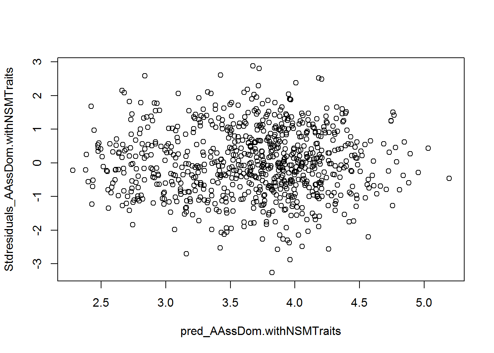
No noticeable issues with non-linearity or heteroscedasticity.
Checking Normality of Random Effects
Extracting Random Effects from Model
REs_SRM_AAssDom.withNSMTraits <- ranef(SRM_AAssDom.withNSMTraits)Histogram and Q-Q Plot for Male Actor Effects
hist(REs_SRM_AAssDom.withNSMTraits$cond$`GROUPID:MaleID`$MF, col = "lightblue",
freq = FALSE, ylim = c(0, .7), xlim = c(-4, 5),
xlab = "Men's Actor Effects for Ratings of Partner Assured-Dominance",
main = "Histogram for Men's Actor Effects")
lines(density(REs_SRM_AAssDom.withNSMTraits$cond$`GROUPID:MaleID`$MF))
box()qqnorm(scale(REs_SRM_AAssDom.withNSMTraits$cond$`GROUPID:MaleID`$MF), main = "Normal Quantile-Quantile Plot")
qqline(scale(REs_SRM_AAssDom.withNSMTraits$cond$`GROUPID:MaleID`$MF))The random effects for men’s actor effects seem pretty normal in shape.
Histogram and Q-Q Plot for Male Partner Effects
hist(REs_SRM_AAssDom.withNSMTraits$cond$`GROUPID:MaleID`$FM, col = "lightblue",
freq = FALSE, ylim = c(0, .7), xlim = c(-4, 5),
xlab = "Men's Partner Effects for Ratings of Partner Assured-Dominance",
main = "Histogram for Men's Partner Effects")
lines(density(REs_SRM_AAssDom.withNSMTraits$cond$`GROUPID:MaleID`$FM))
box()qqnorm(scale(REs_SRM_AAssDom.withNSMTraits$cond$`GROUPID:MaleID`$FM), main = "Normal Quantile-Quantile Plot")
qqline(scale(REs_SRM_AAssDom.withNSMTraits$cond$`GROUPID:MaleID`$FM))The random effects for men’s partner effects seem pretty normal in shape.
Histogram and Q-Q Plot for Female Actor Effects
hist(REs_SRM_AAssDom.withNSMTraits$cond$`GROUPID:FemaleID`$FM, col = "lightblue",
freq = FALSE, ylim = c(0, .7), xlim = c(-4, 5),
xlab = "Women's Actor Effects for Ratings of Partner Assured-Dominance",
main = "Histogram for Women's Actor Effects")
lines(density(REs_SRM_AAssDom.withNSMTraits$cond$`GROUPID:FemaleID`$FM))
box()qqnorm(scale(REs_SRM_AAssDom.withNSMTraits$cond$`GROUPID:FemaleID`$FM), main = "Normal Quantile-Quantile Plot")
qqline(scale(REs_SRM_AAssDom.withNSMTraits$cond$`GROUPID:FemaleID`$FM))The random effects for women’s actor effects seem more-or-less normal in shape.
Histogram and Q-Q Plot for Female Partner Effects
hist(REs_SRM_AAssDom.withNSMTraits$cond$`GROUPID:FemaleID`$MF, col = "lightblue",
freq = FALSE, ylim = c(0, .7), xlim = c(-4, 5),
xlab = "Women's Partner Effects for Ratings of Partner Assured-Dominance",
main = "Histogram for Women's Partner Effects")
lines(density(REs_SRM_AAssDom.withNSMTraits$cond$`GROUPID:FemaleID`$MF))
box()qqnorm(scale(REs_SRM_AAssDom.withNSMTraits$cond$`GROUPID:FemaleID`$MF), main = "Normal Quantile-Quantile Plot")
qqline(scale(REs_SRM_AAssDom.withNSMTraits$cond$`GROUPID:FemaleID`$MF))The random effects for women’s partner effects seem a little non-normal in shape.
Histogram and Q-Q Plot for Man-to-Woman Relationship Effects
hist(REs_SRM_AAssDom.withNSMTraits$cond$`GROUPID:MaleID:FemaleID`$MF, col = "lightblue",
freq = FALSE, ylim = c(0, .7), xlim = c(-4, 5),
xlab = "Man-to-Woman Relationship Effects for Ratings of Partner Assured-Dominance",
main = "Histogram for Man-to-Woman Relationship Effects")
lines(density(REs_SRM_AAssDom.withNSMTraits$cond$`GROUPID:MaleID:FemaleID`$MF))
box()qqnorm(scale(REs_SRM_AAssDom.withNSMTraits$cond$`GROUPID:MaleID:FemaleID`$MF), main = "Normal Quantile-Quantile Plot")
qqline(scale(REs_SRM_AAssDom.withNSMTraits$cond$`GROUPID:MaleID:FemaleID`$MF))Q-Q plot suggests normality.
Histogram and Q-Q Plot for Woman-to-Man Relationship Effects
hist(REs_SRM_AAssDom.withNSMTraits$cond$`GROUPID:MaleID:FemaleID`$FM, col = "lightblue",
freq = FALSE, ylim = c(0, .7), xlim = c(-4, 5),
xlab = "Woman-to-Man Relationship Effects for Ratings of Partner Assured-Dominance",
main = "Histogram for Woman-to-Man Relationship Effects")
lines(density(REs_SRM_AAssDom.withNSMTraits$cond$`GROUPID:MaleID:FemaleID`$FM))
box()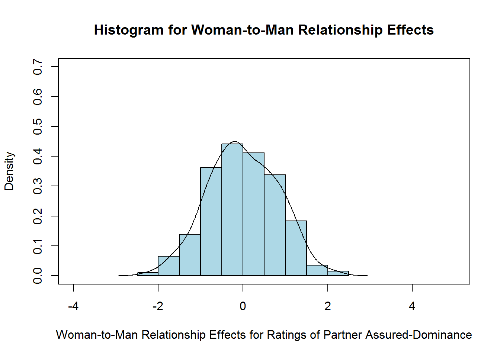
qqnorm(scale(REs_SRM_AAssDom.withNSMTraits$cond$`GROUPID:MaleID:FemaleID`$FM), main = "Normal Quantile-Quantile Plot")
qqline(scale(REs_SRM_AAssDom.withNSMTraits$cond$`GROUPID:MaleID:FemaleID`$FM))Q-Q plot suggests normality.
Scatterplots for Pairs of Random Effects
Scatterplot of men’s actor and partner effects
plot(REs_SRM_AAssDom.withNSMTraits$cond$`GROUPID:MaleID`)Scatterplot of women’s actor and partner effects
plot(REs_SRM_AAssDom.withNSMTraits$cond$`GROUPID:FemaleID`)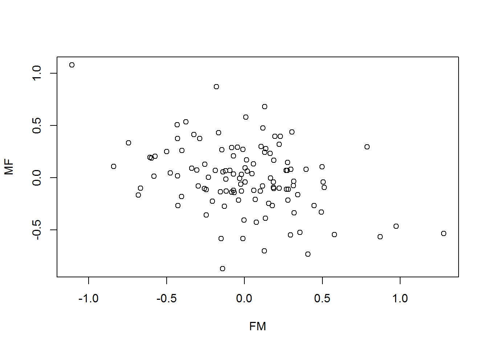
Scatterplot of men’s and women’s relationship effects
plot(REs_SRM_AAssDom.withNSMTraits$cond$`GROUPID:MaleID:FemaleID`)Narcissistic Traits Predicting SRM Effects for Ratings of Partner Cold-Heartedness
Visual Inspection of Variable Distributions Across Groups
dotplot(
reorder(GROUPID, AColdHrt) ~ AColdHrt,
data = SD_data4, jitter.y = TRUE,
ylab = "Speed-Dating Group",
main = "Dotplot of \'AColdHrt\' for Speed-Dating Groups")Subsetting data
myvars <- c("GROUPID", "MaleID", "FemaleID", "MF", "FM",
"AColdHrt", "Ac_NSM_Grandiosity", "Ac_NSM_Entitlement",
"Ac_NSM_Vulnerability", "Pc_NSM_Grandiosity", "Pc_NSM_Entitlement",
"Pc_NSM_Vulnerability", "Agender", "GroupID_EC1", "GroupID_EC2",
"GroupID_EC3", "GroupID_EC4", "GroupID_EC5", "GroupID_EC6",
"GroupID_EC7", "GroupID_EC8", "GroupID_EC9", "GroupID_EC10",
"GroupID_EC11", "GroupID_EC12", "GroupID_EC13", "GroupID_EC14",
"GroupID_EC15", "GroupID_EC16", "GroupID_EC17", "GroupID_EC18",
"GroupID_EC19", "GroupID_EC20", "GroupID_EC21", "GroupID_EC22",
"GroupID_EC23", "GroupID_EC24", "GroupID_EC25", "GroupID_EC26",
"GroupID_EC27", "GroupID_EC28", "GroupID_EC29", "GroupID_EC30",
"GroupID_EC31", "GroupID_EC32")
SD_data_AColdHrt.withNSMTraits <- SD_data4[myvars]
SD_data_AColdHrt.withNSMTraits <- na.omit(SD_data_AColdHrt.withNSMTraits)Narcissistic Traits Predicting SRM Effects for Ratings of Partner Cold-Heartedness
SRM_AColdHrt.withNSMTraits <- glmmTMB(AColdHrt ~ 1 + Agender*GroupID_EC1 + Agender*GroupID_EC2 + Agender*GroupID_EC3 + Agender*GroupID_EC4 +
Agender*GroupID_EC5 + Agender*GroupID_EC6 + Agender*GroupID_EC7 + Agender*GroupID_EC8 + Agender*GroupID_EC9 +
Agender*GroupID_EC10 + Agender*GroupID_EC11 + Agender*GroupID_EC12 + Agender*GroupID_EC13 + Agender*GroupID_EC14 +
Agender*GroupID_EC15 + Agender*GroupID_EC16 + Agender*GroupID_EC17 + Agender*GroupID_EC18 + Agender*GroupID_EC19 +
Agender*GroupID_EC20 + Agender*GroupID_EC21 + Agender*GroupID_EC22 + Agender*GroupID_EC23 + Agender*GroupID_EC24 +
Agender*GroupID_EC25 + Agender*GroupID_EC26 + Agender*GroupID_EC27 + Agender*GroupID_EC28 + Agender*GroupID_EC29 +
Agender*GroupID_EC30 + Agender*GroupID_EC31 + Agender*GroupID_EC32 + Agender*Ac_NSM_Grandiosity +
Agender*Ac_NSM_Entitlement + Agender*Ac_NSM_Vulnerability + Agender*Pc_NSM_Grandiosity +
Agender*Pc_NSM_Entitlement + Agender*Pc_NSM_Vulnerability +
(0 + MF |GROUPID:MaleID) + (0 + FM |GROUPID:FemaleID) +
us(0 + MF + FM + 0| GROUPID:MaleID:FemaleID),data = SD_data_AColdHrt.withNSMTraits,
family = gaussian(link = "identity"), dispformula=~0, REML = TRUE,
verbose = FALSE, na.action = na.omit)Warning in fitTMB(TMBStruc): Model convergence problem; false convergence (8).
See vignette('troubleshooting')glmmTMB issues a false convergence warning (8), but same model runs fine in SPSS, with the same deviance value and virtually identical parameter estimates.
summary(SRM_AColdHrt.withNSMTraits) Family: gaussian ( identity )
Formula:
AColdHrt ~ 1 + Agender * GroupID_EC1 + Agender * GroupID_EC2 +
Agender * GroupID_EC3 + Agender * GroupID_EC4 + Agender *
GroupID_EC5 + Agender * GroupID_EC6 + Agender * GroupID_EC7 +
Agender * GroupID_EC8 + Agender * GroupID_EC9 + Agender *
GroupID_EC10 + Agender * GroupID_EC11 + Agender * GroupID_EC12 +
Agender * GroupID_EC13 + Agender * GroupID_EC14 + Agender *
GroupID_EC15 + Agender * GroupID_EC16 + Agender * GroupID_EC17 +
Agender * GroupID_EC18 + Agender * GroupID_EC19 + Agender *
GroupID_EC20 + Agender * GroupID_EC21 + Agender * GroupID_EC22 +
Agender * GroupID_EC23 + Agender * GroupID_EC24 + Agender *
GroupID_EC25 + Agender * GroupID_EC26 + Agender * GroupID_EC27 +
Agender * GroupID_EC28 + Agender * GroupID_EC29 + Agender *
GroupID_EC30 + Agender * GroupID_EC31 + Agender * GroupID_EC32 +
Agender * Ac_NSM_Grandiosity + Agender * Ac_NSM_Entitlement +
Agender * Ac_NSM_Vulnerability + Agender * Pc_NSM_Grandiosity +
Agender * Pc_NSM_Entitlement + Agender * Pc_NSM_Vulnerability +
(0 + MF | GROUPID:MaleID) + (0 + FM | GROUPID:FemaleID) +
us(0 + MF + FM + 0 | GROUPID:MaleID:FemaleID)
Dispersion: ~0
Data: SD_data_AColdHrt.withNSMTraits
AIC BIC logLik deviance df.resid
2160.6 2549.1 -997.3 1994.6 792
Random effects:
Conditional model:
Groups Name Variance Std.Dev. Corr
GROUPID:MaleID MF 0.4349 0.6594
GROUPID:FemaleID FM 0.2862 0.5350
GROUPID:MaleID:FemaleID MF 0.4316 0.6569
FM 0.5285 0.7270 -0.07
Number of obs: 797, groups:
GROUPID:MaleID, 116; GROUPID:FemaleID, 114; GROUPID:MaleID:FemaleID, 403
Conditional model:
Estimate Std. Error z value Pr(>|z|)
(Intercept) 2.2048972 0.0556157 39.65 < 2e-16 ***
Agender 0.1009445 0.0568492 1.78 0.07579 .
GroupID_EC1 -0.3398751 0.2182604 -1.56 0.11942
GroupID_EC2 0.1748285 0.2496506 0.70 0.48374
GroupID_EC3 -0.0653606 0.2922063 -0.22 0.82301
GroupID_EC4 -0.1906503 0.2147555 -0.89 0.37467
GroupID_EC5 0.6277348 0.3782462 1.66 0.09700 .
GroupID_EC6 -0.2802217 0.3387371 -0.83 0.40809
GroupID_EC7 0.3450391 0.2693592 1.28 0.20021
GroupID_EC8 0.0287905 0.2432946 0.12 0.90580
GroupID_EC9 -0.4143532 0.2438346 -1.70 0.08926 .
GroupID_EC10 0.0971171 0.2879672 0.34 0.73593
GroupID_EC11 0.5055787 0.2886364 1.75 0.07984 .
GroupID_EC12 0.0820642 0.2452824 0.33 0.73795
GroupID_EC13 -0.2214584 0.2966453 -0.75 0.45534
GroupID_EC14 0.0064885 0.2545754 0.03 0.97967
GroupID_EC15 -0.8804054 0.3328226 -2.65 0.00816 **
GroupID_EC16 0.1146586 0.3364592 0.34 0.73327
GroupID_EC17 0.3822504 0.2976029 1.28 0.19899
GroupID_EC18 0.4586791 0.2437141 1.88 0.05983 .
GroupID_EC19 0.0422992 0.2900971 0.15 0.88407
GroupID_EC20 -0.5726368 0.3116072 -1.84 0.06611 .
GroupID_EC21 -0.0008395 0.2269591 0.00 0.99705
GroupID_EC22 0.3926587 0.2717837 1.44 0.14853
GroupID_EC23 -0.2258999 0.2464287 -0.92 0.35930
GroupID_EC24 -0.1179897 0.2465464 -0.48 0.63224
GroupID_EC25 -0.4036828 0.2813836 -1.43 0.15139
GroupID_EC26 0.1367749 0.2890546 0.47 0.63608
GroupID_EC27 0.0520225 0.2998465 0.17 0.86226
GroupID_EC28 0.0574564 0.2932901 0.20 0.84469
GroupID_EC29 0.2495961 0.2489116 1.00 0.31598
GroupID_EC30 -0.1028957 0.2997791 -0.34 0.73142
GroupID_EC31 0.4792982 0.3133077 1.53 0.12607
GroupID_EC32 -0.4297610 0.2750835 -1.56 0.11822
Ac_NSM_Grandiosity -0.0109128 0.0834051 -0.13 0.89590
Ac_NSM_Entitlement 0.0173195 0.0856143 0.20 0.83968
Ac_NSM_Vulnerability 0.1266697 0.0622199 2.04 0.04177 *
Pc_NSM_Grandiosity -0.0387996 0.0429553 -0.90 0.36639
Pc_NSM_Entitlement 0.0321744 0.0439166 0.73 0.46379
Pc_NSM_Vulnerability -0.0280273 0.0327393 -0.86 0.39196
Agender:GroupID_EC1 -0.0897659 0.2216783 -0.40 0.68552
Agender:GroupID_EC2 0.2257917 0.2541547 0.89 0.37432
Agender:GroupID_EC3 -0.3850506 0.2985701 -1.29 0.19717
Agender:GroupID_EC4 0.1575787 0.2180361 0.72 0.46985
Agender:GroupID_EC5 -0.5885707 0.3887588 -1.51 0.13003
Agender:GroupID_EC6 0.0097955 0.3467609 0.03 0.97746
Agender:GroupID_EC7 0.3659142 0.2747831 1.33 0.18298
Agender:GroupID_EC8 -0.3887643 0.2475982 -1.57 0.11638
Agender:GroupID_EC9 -0.2412194 0.2481732 -0.97 0.33106
Agender:GroupID_EC10 0.0873337 0.2941408 0.30 0.76653
Agender:GroupID_EC11 0.0461024 0.2948406 0.16 0.87575
Agender:GroupID_EC12 0.7903558 0.2496980 3.17 0.00155 **
Agender:GroupID_EC13 -0.0484814 0.3031621 -0.16 0.87294
Agender:GroupID_EC14 -0.1342732 0.2592900 -0.52 0.60456
Agender:GroupID_EC15 -0.0668442 0.3407441 -0.20 0.84448
Agender:GroupID_EC16 -0.0489900 0.3444142 -0.14 0.88689
Agender:GroupID_EC17 0.1517359 0.3041442 0.50 0.61785
Agender:GroupID_EC18 -0.5359647 0.2480465 -2.16 0.03072 *
Agender:GroupID_EC19 0.2956182 0.2963440 1.00 0.31850
Agender:GroupID_EC20 -0.1205966 0.3186710 -0.38 0.70511
Agender:GroupID_EC21 0.4131017 0.2307499 1.79 0.07341 .
Agender:GroupID_EC22 0.1311664 0.2770144 0.47 0.63586
Agender:GroupID_EC23 0.3714657 0.2508493 1.48 0.13865
Agender:GroupID_EC24 0.3517357 0.2510042 1.40 0.16112
Agender:GroupID_EC25 -0.0351547 0.2869257 -0.12 0.90249
Agender:GroupID_EC26 0.1093781 0.2952563 0.37 0.71105
Agender:GroupID_EC27 0.1582794 0.3066131 0.52 0.60570
Agender:GroupID_EC28 -0.1497200 0.2996569 -0.50 0.61733
Agender:GroupID_EC29 -0.2455821 0.2534119 -0.97 0.33249
Agender:GroupID_EC30 -0.4142034 0.3057548 -1.35 0.17552
Agender:GroupID_EC31 0.1186338 0.3176914 0.37 0.70883
Agender:GroupID_EC32 -0.3539414 0.2804590 -1.26 0.20695
Agender:Ac_NSM_Grandiosity 0.0322226 0.0834090 0.39 0.69926
Agender:Ac_NSM_Entitlement -0.0045778 0.0856215 -0.05 0.95736
Agender:Ac_NSM_Vulnerability 0.0366520 0.0622292 0.59 0.55587
Agender:Pc_NSM_Grandiosity 0.0747335 0.0429560 1.74 0.08190 .
Agender:Pc_NSM_Entitlement 0.0250881 0.0439130 0.57 0.56779
Agender:Pc_NSM_Vulnerability 0.0183532 0.0327401 0.56 0.57509
---
Signif. codes: 0 '***' 0.001 '**' 0.01 '*' 0.05 '.' 0.1 ' ' 1Checking Normality of Level-1 Residuals
Standard low tech way
hist(scale(resid(SRM_AColdHrt.withNSMTraits)),
freq = FALSE, ylim = c(0, .7), xlim = c(-4, 5),
main = "Narcissistic Traits Predicting SRM Effects for Ratings of Partner Cold-Heartedness",
col = "lightblue",
xlab = "Standardized Residuals")
lines(density(scale(resid(SRM_AColdHrt.withNSMTraits))))
box()qqnorm(scale(resid(SRM_AColdHrt.withNSMTraits)), main = "Normal Quantile-Quantile Plot")
qqline(scale(resid(SRM_AColdHrt.withNSMTraits)))There are some minor problems with the normality of the residuals for AColdHrt.
More high tech way with DHARMa package (note that residual ~ pred plot is incorrect)
SRM_AColdHrt.withNSMTraits_simres <- simulateResiduals(SRM_AColdHrt.withNSMTraits)Model family was recognized or set as continuous, but duplicate values were detected in the response. Consider if you are fitting an appropriate model.system.time(sr.SRM_AColdHrt.withNSMTraits <- simulateResiduals(SRM_AColdHrt.withNSMTraits))Model family was recognized or set as continuous, but duplicate values were detected in the response. Consider if you are fitting an appropriate model. user system elapsed
1.11 0.02 1.14 plot(sr.SRM_AColdHrt.withNSMTraits)The Kolmogoriv-Smirnov test confirms that the assumption of normality of the residuals is violated.
Checking for potential non-linearity and heteroscedasticity
Method suggested by Florian Hartig on Github to obtain predicted values
that are not conditioned on random effects (this prevents an artificial
correlation between residuals and predicted values in scatterplot)
newdata=SD_data_AColdHrt.withNSMTraits
newdata$GROUPID = NA
pred_AColdHrt.withNSMTraits <- predict(SRM_AColdHrt.withNSMTraits, newdata)
Stdresiduals_AColdHrt.withNSMTraits <- scale(resid(SRM_AColdHrt.withNSMTraits))plot(pred_AColdHrt.withNSMTraits, Stdresiduals_AColdHrt.withNSMTraits)No noticeable issues with non-linearity, but potential issues with heteroscedasticity.
Checking Normality of Random Effects
Extracting Random Effects from Model
REs_SRM_AColdHrt.withNSMTraits <- ranef(SRM_AColdHrt.withNSMTraits)Histogram and Q-Q Plot for Male Actor Effects
hist(REs_SRM_AColdHrt.withNSMTraits$cond$`GROUPID:MaleID`$MF, col = "lightblue",
freq = FALSE, ylim = c(0, .7), xlim = c(-4, 5),
xlab = "Men's Actor Effects for Ratings of Partner Cold-Heartedness",
main = "Histogram for Men's Actor Effects")
lines(density(REs_SRM_AColdHrt.withNSMTraits$cond$`GROUPID:MaleID`$MF))
box()qqnorm(scale(REs_SRM_AColdHrt.withNSMTraits$cond$`GROUPID:MaleID`$MF), main = "Normal Quantile-Quantile Plot")
qqline(scale(REs_SRM_AColdHrt.withNSMTraits$cond$`GROUPID:MaleID`$MF))The random effects for men’s actor effects seem pretty normal in shape.
Histogram and Q-Q Plot for Female Actor Effects
hist(REs_SRM_AColdHrt.withNSMTraits$cond$`GROUPID:FemaleID`$FM, col = "lightblue",
freq = FALSE, ylim = c(0, .7), xlim = c(-4, 5),
xlab = "Women's Actor Effects for Ratings of Partner Cold-Heartedness",
main = "Histogram for Women's Actor Effects")
lines(density(REs_SRM_AColdHrt.withNSMTraits$cond$`GROUPID:FemaleID`$FM))
box()qqnorm(scale(REs_SRM_AColdHrt.withNSMTraits$cond$`GROUPID:FemaleID`$FM), main = "Normal Quantile-Quantile Plot")
qqline(scale(REs_SRM_AColdHrt.withNSMTraits$cond$`GROUPID:FemaleID`$FM))The random effects for women’s actor effects seem more-or-less normal in shape.
Histogram and Q-Q Plot for Man-to-Woman Relationship Effects
hist(REs_SRM_AColdHrt.withNSMTraits$cond$`GROUPID:MaleID:FemaleID`$MF, col = "lightblue",
freq = FALSE, ylim = c(0, .7), xlim = c(-4, 5),
xlab = "Man-to-Woman Relationship Effects for Ratings of Partner Cold-Heartedness",
main = "Histogram for Man-to-Woman Relationship Effects")
lines(density(REs_SRM_AColdHrt.withNSMTraits$cond$`GROUPID:MaleID:FemaleID`$MF))
box()qqnorm(scale(REs_SRM_AColdHrt.withNSMTraits$cond$`GROUPID:MaleID:FemaleID`$MF), main = "Normal Quantile-Quantile Plot")
qqline(scale(REs_SRM_AColdHrt.withNSMTraits$cond$`GROUPID:MaleID:FemaleID`$MF))
Q-Q plot suggests some non-normality.
Histogram and Q-Q Plot for Woman-to-Man Relationship Effects
hist(REs_SRM_AColdHrt.withNSMTraits$cond$`GROUPID:MaleID:FemaleID`$FM, col = "lightblue",
freq = FALSE, ylim = c(0, .7), xlim = c(-4, 5),
xlab = "Woman-to-Man Relationship Effects for Ratings of Partner Cold-Heartedness",
main = "Histogram for Woman-to-Man Relationship Effects")
lines(density(REs_SRM_AColdHrt.withNSMTraits$cond$`GROUPID:MaleID:FemaleID`$FM))
box()qqnorm(scale(REs_SRM_AColdHrt.withNSMTraits$cond$`GROUPID:MaleID:FemaleID`$FM), main = "Normal Quantile-Quantile Plot")
qqline(scale(REs_SRM_AColdHrt.withNSMTraits$cond$`GROUPID:MaleID:FemaleID`$FM))
Q-Q plot suggests some non-normality.
Scatterplots for Pairs of Random Effects
Scatterplot of men’s and women’s relationship effects
plot(REs_SRM_AColdHrt.withNSMTraits$cond$`GROUPID:MaleID:FemaleID`)Narcissistic Traits Predicting SRM Effects for Ratings of Partner Submissiveness
Visual Inspection of Variable Distributions Across Groups
dotplot(
reorder(GROUPID, ASubmit) ~ ASubmit,
data = SD_data4, jitter.y = TRUE,
ylab = "Speed-Dating Group",
main = "Dotplot of \'ASubmit\' for Speed-Dating Groups")Subsetting data
myvars <- c("GROUPID", "MaleID", "FemaleID", "MF", "FM",
"ASubmit", "Ac_NSM_Grandiosity", "Ac_NSM_Entitlement",
"Ac_NSM_Vulnerability", "Pc_NSM_Grandiosity", "Pc_NSM_Entitlement",
"Pc_NSM_Vulnerability", "Agender", "GroupID_EC1", "GroupID_EC2",
"GroupID_EC3", "GroupID_EC4", "GroupID_EC5", "GroupID_EC6",
"GroupID_EC7", "GroupID_EC8", "GroupID_EC9", "GroupID_EC10",
"GroupID_EC11", "GroupID_EC12", "GroupID_EC13", "GroupID_EC14",
"GroupID_EC15", "GroupID_EC16", "GroupID_EC17", "GroupID_EC18",
"GroupID_EC19", "GroupID_EC20", "GroupID_EC21", "GroupID_EC22",
"GroupID_EC23", "GroupID_EC24", "GroupID_EC25", "GroupID_EC26",
"GroupID_EC27", "GroupID_EC28", "GroupID_EC29", "GroupID_EC30",
"GroupID_EC31", "GroupID_EC32")
SD_data_ASubmit.withNSMTraits <- SD_data4[myvars]
SD_data_ASubmit.withNSMTraits <- na.omit(SD_data_ASubmit.withNSMTraits)Narcissistic Traits Predicting SRM Effects for Ratings of Partner Submissiveness
SRM_ASubmit.withNSMTraits <- glmmTMB(ASubmit ~ 1 + Agender*GroupID_EC1 + Agender*GroupID_EC2 + Agender*GroupID_EC3 + Agender*GroupID_EC4 +
Agender*GroupID_EC5 + Agender*GroupID_EC6 + Agender*GroupID_EC7 + Agender*GroupID_EC8 + Agender*GroupID_EC9 +
Agender*GroupID_EC10 + Agender*GroupID_EC11 + Agender*GroupID_EC12 + Agender*GroupID_EC13 + Agender*GroupID_EC14 +
Agender*GroupID_EC15 + Agender*GroupID_EC16 + Agender*GroupID_EC17 + Agender*GroupID_EC18 + Agender*GroupID_EC19 +
Agender*GroupID_EC20 + Agender*GroupID_EC21 + Agender*GroupID_EC22 + Agender*GroupID_EC23 + Agender*GroupID_EC24 +
Agender*GroupID_EC25 + Agender*GroupID_EC26 + Agender*GroupID_EC27 + Agender*GroupID_EC28 + Agender*GroupID_EC29 +
Agender*GroupID_EC30 + Agender*GroupID_EC31 + Agender*GroupID_EC32 + Agender*Ac_NSM_Grandiosity +
Agender*Ac_NSM_Entitlement + Agender*Ac_NSM_Vulnerability + Agender*Pc_NSM_Grandiosity +
Agender*Pc_NSM_Entitlement + Agender*Pc_NSM_Vulnerability +
(0 + MF + FM |GROUPID:MaleID) + (0 + FM + MF |GROUPID:FemaleID) +
us(0 + MF + FM + 0| GROUPID:MaleID:FemaleID),data = SD_data_ASubmit.withNSMTraits,
family = gaussian(link = "identity"), dispformula=~0, REML = TRUE,
verbose = FALSE, na.action = na.omit)Warning in fitTMB(TMBStruc): Model convergence problem; false convergence (8).
See vignette('troubleshooting')glmmTMB issues a false convergence warning (8), but same model runs fine in SPSS, with the same deviance value and virtually identical parameter estimates.
summary(SRM_ASubmit.withNSMTraits) Family: gaussian ( identity )
Formula:
ASubmit ~ 1 + Agender * GroupID_EC1 + Agender * GroupID_EC2 +
Agender * GroupID_EC3 + Agender * GroupID_EC4 + Agender *
GroupID_EC5 + Agender * GroupID_EC6 + Agender * GroupID_EC7 +
Agender * GroupID_EC8 + Agender * GroupID_EC9 + Agender *
GroupID_EC10 + Agender * GroupID_EC11 + Agender * GroupID_EC12 +
Agender * GroupID_EC13 + Agender * GroupID_EC14 + Agender *
GroupID_EC15 + Agender * GroupID_EC16 + Agender * GroupID_EC17 +
Agender * GroupID_EC18 + Agender * GroupID_EC19 + Agender *
GroupID_EC20 + Agender * GroupID_EC21 + Agender * GroupID_EC22 +
Agender * GroupID_EC23 + Agender * GroupID_EC24 + Agender *
GroupID_EC25 + Agender * GroupID_EC26 + Agender * GroupID_EC27 +
Agender * GroupID_EC28 + Agender * GroupID_EC29 + Agender *
GroupID_EC30 + Agender * GroupID_EC31 + Agender * GroupID_EC32 +
Agender * Ac_NSM_Grandiosity + Agender * Ac_NSM_Entitlement +
Agender * Ac_NSM_Vulnerability + Agender * Pc_NSM_Grandiosity +
Agender * Pc_NSM_Entitlement + Agender * Pc_NSM_Vulnerability +
(0 + MF + FM | GROUPID:MaleID) + (0 + FM + MF | GROUPID:FemaleID) +
us(0 + MF + FM + 0 | GROUPID:MaleID:FemaleID)
Dispersion: ~0
Data: SD_data_ASubmit.withNSMTraits
AIC BIC logLik deviance df.resid
2622.7 3029.4 -1224.3 2448.7 784
Random effects:
Conditional model:
Groups Name Variance Std.Dev. Corr
GROUPID:MaleID MF 0.3480 0.5899
FM 0.3378 0.5812 -0.04
GROUPID:FemaleID FM 0.1581 0.3976
MF 0.3956 0.6290 0.19
GROUPID:MaleID:FemaleID MF 0.8384 0.9156
FM 0.8600 0.9274 -0.06
Number of obs: 793, groups:
GROUPID:MaleID, 116; GROUPID:FemaleID, 114; GROUPID:MaleID:FemaleID, 403
Conditional model:
Estimate Std. Error z value Pr(>|z|)
(Intercept) 3.794220 0.074397 51.00 < 2e-16 ***
Agender 0.127946 0.072923 1.75 0.079341 .
GroupID_EC1 -0.163728 0.294138 -0.56 0.577776
GroupID_EC2 -0.334802 0.334759 -1.00 0.317248
GroupID_EC3 -0.686687 0.393891 -1.74 0.081274 .
GroupID_EC4 -0.046978 0.288729 -0.16 0.870751
GroupID_EC5 0.753774 0.508564 1.48 0.138297
GroupID_EC6 0.171094 0.450027 0.38 0.703807
GroupID_EC7 0.114207 0.365106 0.31 0.754429
GroupID_EC8 -0.214630 0.327249 -0.66 0.511912
GroupID_EC9 0.356023 0.329526 1.08 0.279959
GroupID_EC10 -0.356229 0.387433 -0.92 0.357855
GroupID_EC11 0.002688 0.388481 0.01 0.994478
GroupID_EC12 0.111955 0.332152 0.34 0.736071
GroupID_EC13 0.186866 0.399685 0.47 0.640119
GroupID_EC14 -0.036337 0.340940 -0.11 0.915123
GroupID_EC15 -0.304950 0.444054 -0.69 0.492247
GroupID_EC16 -0.381480 0.447077 -0.85 0.393506
GroupID_EC17 -0.089304 0.401334 -0.22 0.823911
GroupID_EC18 0.103429 0.328241 0.32 0.752686
GroupID_EC19 -0.239471 0.390275 -0.61 0.539483
GroupID_EC20 0.317357 0.419821 0.76 0.449689
GroupID_EC21 -0.004991 0.308069 -0.02 0.987074
GroupID_EC22 0.898907 0.362342 2.48 0.013108 *
GroupID_EC23 -0.702543 0.332787 -2.11 0.034764 *
GroupID_EC24 0.142781 0.331942 0.43 0.667094
GroupID_EC25 0.120563 0.377322 0.32 0.749329
GroupID_EC26 0.442737 0.388807 1.14 0.254826
GroupID_EC27 -0.565016 0.418774 -1.35 0.177268
GroupID_EC28 -0.607602 0.394593 -1.54 0.123604
GroupID_EC29 -0.381256 0.336106 -1.13 0.256655
GroupID_EC30 0.285282 0.388396 0.73 0.462635
GroupID_EC31 0.482177 0.395735 1.22 0.223059
GroupID_EC32 0.694762 0.367069 1.89 0.058394 .
Ac_NSM_Grandiosity 0.019031 0.083298 0.23 0.819278
Ac_NSM_Entitlement -0.312895 0.084929 -3.68 0.000229 ***
Ac_NSM_Vulnerability 0.133186 0.062787 2.12 0.033901 *
Pc_NSM_Grandiosity -0.358855 0.092168 -3.89 9.88e-05 ***
Pc_NSM_Entitlement 0.093462 0.095407 0.98 0.327276
Pc_NSM_Vulnerability 0.022000 0.067561 0.33 0.744699
Agender:GroupID_EC1 0.227900 0.285891 0.80 0.425360
Agender:GroupID_EC2 -0.132327 0.327103 -0.40 0.685815
Agender:GroupID_EC3 0.557783 0.384891 1.45 0.147282
Agender:GroupID_EC4 -0.245545 0.280112 -0.88 0.380707
Agender:GroupID_EC5 -0.256879 0.502902 -0.51 0.609496
Agender:GroupID_EC6 -0.459701 0.447805 -1.03 0.304625
Agender:GroupID_EC7 0.293386 0.353904 0.83 0.407104
Agender:GroupID_EC8 -0.009390 0.318482 -0.03 0.976478
Agender:GroupID_EC9 -0.339871 0.320745 -1.06 0.289314
Agender:GroupID_EC10 0.607822 0.379146 1.60 0.108905
Agender:GroupID_EC11 -0.583804 0.380107 -1.54 0.124564
Agender:GroupID_EC12 -0.628226 0.322887 -1.95 0.051696 .
Agender:GroupID_EC13 -0.113484 0.390990 -0.29 0.771626
Agender:GroupID_EC14 -0.382862 0.333575 -1.15 0.251071
Agender:GroupID_EC15 0.201465 0.430982 0.47 0.640175
Agender:GroupID_EC16 0.508576 0.444806 1.14 0.252887
Agender:GroupID_EC17 -0.303951 0.392291 -0.77 0.438452
Agender:GroupID_EC18 -0.193291 0.319132 -0.61 0.544730
Agender:GroupID_EC19 0.451234 0.382048 1.18 0.237565
Agender:GroupID_EC20 0.185085 0.411457 0.45 0.652834
Agender:GroupID_EC21 -0.717025 0.296496 -2.42 0.015592 *
Agender:GroupID_EC22 0.405754 0.356804 1.14 0.255458
Agender:GroupID_EC23 -0.097379 0.324636 -0.30 0.764205
Agender:GroupID_EC24 -0.381255 0.322957 -1.18 0.237796
Agender:GroupID_EC25 0.790384 0.372513 2.12 0.033858 *
Agender:GroupID_EC26 0.024574 0.380638 0.06 0.948524
Agender:GroupID_EC27 -0.232642 0.401334 -0.58 0.562136
Agender:GroupID_EC28 -0.071633 0.386529 -0.19 0.852976
Agender:GroupID_EC29 0.646657 0.327712 1.97 0.048467 *
Agender:GroupID_EC30 0.013515 0.379903 0.04 0.971621
Agender:GroupID_EC31 0.425111 0.390554 1.09 0.276383
Agender:GroupID_EC32 -0.128440 0.361407 -0.36 0.722298
Agender:Ac_NSM_Grandiosity 0.217646 0.083269 2.61 0.008955 **
Agender:Ac_NSM_Entitlement 0.036845 0.084918 0.43 0.664368
Agender:Ac_NSM_Vulnerability -0.128134 0.062804 -2.04 0.041327 *
Agender:Pc_NSM_Grandiosity 0.167986 0.092152 1.82 0.068315 .
Agender:Pc_NSM_Entitlement -0.202658 0.095379 -2.12 0.033606 *
Agender:Pc_NSM_Vulnerability -0.025185 0.067557 -0.37 0.709306
---
Signif. codes: 0 '***' 0.001 '**' 0.01 '*' 0.05 '.' 0.1 ' ' 1Checking Normality of Level-1 Residuals
Standard low tech way
hist(scale(resid(SRM_ASubmit.withNSMTraits)),
freq = FALSE, ylim = c(0, .7), xlim = c(-4, 5),
main = "Narcissistic Traits Predicting SRM Effects for Ratings of Partner Submissiveness",
col = "lightblue",
xlab = "Standardized Residuals")
lines(density(scale(resid(SRM_ASubmit.withNSMTraits))))
box()qqnorm(scale(resid(SRM_ASubmit.withNSMTraits)), main = "Normal Quantile-Quantile Plot")
qqline(scale(resid(SRM_ASubmit.withNSMTraits)))Residuals are normal in shape.
More high tech way with DHARMa package (note that residual ~ pred plot is incorrect)
SRM_ASubmit.withNSMTraits_simres <- simulateResiduals(SRM_ASubmit.withNSMTraits)Model family was recognized or set as continuous, but duplicate values were detected in the response. Consider if you are fitting an appropriate model.system.time(sr.SRM_ASubmit.withNSMTraits <- simulateResiduals(SRM_ASubmit.withNSMTraits))Model family was recognized or set as continuous, but duplicate values were detected in the response. Consider if you are fitting an appropriate model. user system elapsed
0.99 0.05 1.03 plot(sr.SRM_ASubmit.withNSMTraits)The Kolmogoriv-Smirnov test confirms that the assumption of normality of the residuals is NOT violated.
Checking for potential non-linearity and heteroscedasticity
Method suggested by Florian Hartig on Github to obtain predicted values
that are not conditioned on random effects (this prevents an artificial
correlation between residuals and predicted values in scatterplot)
newdata=SD_data_ASubmit.withNSMTraits
newdata$GROUPID = NA
pred_ASubmit.withNSMTraits <- predict(SRM_ASubmit.withNSMTraits, newdata)
Stdresiduals_ASubmit.withNSMTraits <- scale(resid(SRM_ASubmit.withNSMTraits))plot(pred_ASubmit.withNSMTraits, Stdresiduals_ASubmit.withNSMTraits)No noticeable issues with non-linearity, but potential issues with heteroscedasticity.
Checking Normality of Random Effects
Extracting Random Effects from Model
REs_SRM_ASubmit.withNSMTraits <- ranef(SRM_ASubmit.withNSMTraits)Histogram and Q-Q Plot for Male Actor Effects
hist(REs_SRM_ASubmit.withNSMTraits$cond$`GROUPID:MaleID`$MF, col = "lightblue",
freq = FALSE, ylim = c(0, .7), xlim = c(-4, 5),
xlab = "Men's Actor Effects for Ratings of Partner Submissiveness",
main = "Histogram for Men's Actor Effects")
lines(density(REs_SRM_ASubmit.withNSMTraits$cond$`GROUPID:MaleID`$MF))
box()qqnorm(scale(REs_SRM_ASubmit.withNSMTraits$cond$`GROUPID:MaleID`$MF), main = "Normal Quantile-Quantile Plot")
qqline(scale(REs_SRM_ASubmit.withNSMTraits$cond$`GROUPID:MaleID`$MF))The random effects for men’s actor effects seem pretty normal in shape.
Histogram and Q-Q Plot for Male Partner Effects
hist(REs_SRM_ASubmit.withNSMTraits$cond$`GROUPID:MaleID`$FM, col = "lightblue",
freq = FALSE, ylim = c(0, .7), xlim = c(-4, 5),
xlab = "Men's Partner Effects for Ratings of Partner Submissiveness",
main = "Histogram for Men's Partner Effects")
lines(density(REs_SRM_ASubmit.withNSMTraits$cond$`GROUPID:MaleID`$FM))
box()qqnorm(scale(REs_SRM_ASubmit.withNSMTraits$cond$`GROUPID:MaleID`$FM), main = "Normal Quantile-Quantile Plot")
qqline(scale(REs_SRM_ASubmit.withNSMTraits$cond$`GROUPID:MaleID`$FM))The random effects for men’s partner effects seem somewhat non-normal in shape.
Histogram and Q-Q Plot for Female Actor Effects
hist(REs_SRM_ASubmit.withNSMTraits$cond$`GROUPID:FemaleID`$FM, col = "lightblue",
freq = FALSE, ylim = c(0, .7), xlim = c(-4, 5),
xlab = "Women's Actor Effects for Ratings of Partner Submissiveness",
main = "Histogram for Women's Actor Effects")
lines(density(REs_SRM_ASubmit.withNSMTraits$cond$`GROUPID:FemaleID`$FM))
box()qqnorm(scale(REs_SRM_ASubmit.withNSMTraits$cond$`GROUPID:FemaleID`$FM), main = "Normal Quantile-Quantile Plot")
qqline(scale(REs_SRM_ASubmit.withNSMTraits$cond$`GROUPID:FemaleID`$FM))The random effects for women’s actor effects seem more-or-less normal in shape.
Histogram and Q-Q Plot for Female Partner Effects
hist(REs_SRM_ASubmit.withNSMTraits$cond$`GROUPID:FemaleID`$MF, col = "lightblue",
freq = FALSE, ylim = c(0, .7), xlim = c(-4, 5),
xlab = "Women's Partner Effects for Ratings of Partner Submissiveness",
main = "Histogram for Women's Partner Effects")
lines(density(REs_SRM_ASubmit.withNSMTraits$cond$`GROUPID:FemaleID`$MF))
box()qqnorm(scale(REs_SRM_ASubmit.withNSMTraits$cond$`GROUPID:FemaleID`$MF), main = "Normal Quantile-Quantile Plot")
qqline(scale(REs_SRM_ASubmit.withNSMTraits$cond$`GROUPID:FemaleID`$MF))The random effects for women’s partner effects seem pretty normal in shape.
Histogram and Q-Q Plot for Man-to-Woman Relationship Effects
hist(REs_SRM_ASubmit.withNSMTraits$cond$`GROUPID:MaleID:FemaleID`$MF, col = "lightblue",
freq = FALSE, ylim = c(0, .7), xlim = c(-4, 5),
xlab = "Man-to-Woman Relationship Effects for Ratings of Partner Submissiveness",
main = "Histogram for Man-to-Woman Relationship Effects")
lines(density(REs_SRM_ASubmit.withNSMTraits$cond$`GROUPID:MaleID:FemaleID`$MF))
box()qqnorm(scale(REs_SRM_ASubmit.withNSMTraits$cond$`GROUPID:MaleID:FemaleID`$MF), main = "Normal Quantile-Quantile Plot")
qqline(scale(REs_SRM_ASubmit.withNSMTraits$cond$`GROUPID:MaleID:FemaleID`$MF))Q-Q plot suggests normality.
Histogram and Q-Q Plot for Woman-to-Man Relationship Effects
hist(REs_SRM_ASubmit.withNSMTraits$cond$`GROUPID:MaleID:FemaleID`$FM, col = "lightblue",
freq = FALSE, ylim = c(0, .7), xlim = c(-4, 5),
xlab = "Woman-to-Man Relationship Effects for Ratings of Partner Submissiveness",
main = "Histogram for Woman-to-Man Relationship Effects")
lines(density(REs_SRM_ASubmit.withNSMTraits$cond$`GROUPID:MaleID:FemaleID`$FM))
box()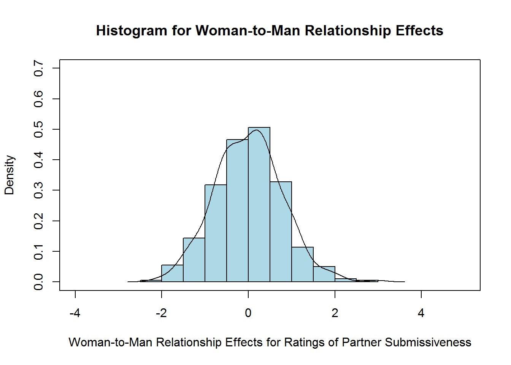
qqnorm(scale(REs_SRM_ASubmit.withNSMTraits$cond$`GROUPID:MaleID:FemaleID`$FM), main = "Normal Quantile-Quantile Plot")
qqline(scale(REs_SRM_ASubmit.withNSMTraits$cond$`GROUPID:MaleID:FemaleID`$FM))Q-Q plot suggests normality.
Scatterplots for Pairs of Random Effects
Scatterplot of men’s actor and partner effects
plot(REs_SRM_ASubmit.withNSMTraits$cond$`GROUPID:MaleID`)Scatterplot of women’s actor and partner effects
plot(REs_SRM_ASubmit.withNSMTraits$cond$`GROUPID:FemaleID`)Scatterplot of men’s and women’s relationship effects
plot(REs_SRM_ASubmit.withNSMTraits$cond$`GROUPID:MaleID:FemaleID`)Narcissistic Traits Predicting SRM Effects for Ratings of Partner Arrogant-Calculating
Visual Inspection of Variable Distributions Across Groups
dotplot(
reorder(GROUPID, AArrCalc) ~ AArrCalc,
data = SD_data4, jitter.y = TRUE,
ylab = "Speed-Dating Group",
main = "Dotplot of \'AArrCalc\' for Speed-Dating Groups")Subsetting data
myvars <- c("GROUPID", "MaleID", "FemaleID", "MF", "FM",
"AArrCalc", "Ac_NSM_Grandiosity", "Ac_NSM_Entitlement",
"Ac_NSM_Vulnerability", "Pc_NSM_Grandiosity", "Pc_NSM_Entitlement",
"Pc_NSM_Vulnerability", "Agender", "GroupID_EC1", "GroupID_EC2",
"GroupID_EC3", "GroupID_EC4", "GroupID_EC5", "GroupID_EC6",
"GroupID_EC7", "GroupID_EC8", "GroupID_EC9", "GroupID_EC10",
"GroupID_EC11", "GroupID_EC12", "GroupID_EC13", "GroupID_EC14",
"GroupID_EC15", "GroupID_EC16", "GroupID_EC17", "GroupID_EC18",
"GroupID_EC19", "GroupID_EC20", "GroupID_EC21", "GroupID_EC22",
"GroupID_EC23", "GroupID_EC24", "GroupID_EC25", "GroupID_EC26",
"GroupID_EC27", "GroupID_EC28", "GroupID_EC29", "GroupID_EC30",
"GroupID_EC31", "GroupID_EC32")
SD_data_AArrCalc.withNSMTraits <- SD_data4[myvars]
SD_data_AArrCalc.withNSMTraits <- na.omit(SD_data_AArrCalc.withNSMTraits)Narcissistic Traits Predicting SRM Effects for Ratings of Partner Arrogant-Calculating
SRM_AArrCalc.withNSMTraits <- glmmTMB(AArrCalc ~ 1 + Agender*GroupID_EC1 + Agender*GroupID_EC2 + Agender*GroupID_EC3 + Agender*GroupID_EC4 +
Agender*GroupID_EC5 + Agender*GroupID_EC6 + Agender*GroupID_EC7 + Agender*GroupID_EC8 + Agender*GroupID_EC9 +
Agender*GroupID_EC10 + Agender*GroupID_EC11 + Agender*GroupID_EC12 + Agender*GroupID_EC13 + Agender*GroupID_EC14 +
Agender*GroupID_EC15 + Agender*GroupID_EC16 + Agender*GroupID_EC17 + Agender*GroupID_EC18 + Agender*GroupID_EC19 +
Agender*GroupID_EC20 + Agender*GroupID_EC21 + Agender*GroupID_EC22 + Agender*GroupID_EC23 + Agender*GroupID_EC24 +
Agender*GroupID_EC25 + Agender*GroupID_EC26 + Agender*GroupID_EC27 + Agender*GroupID_EC28 + Agender*GroupID_EC29 +
Agender*GroupID_EC30 + Agender*GroupID_EC31 + Agender*GroupID_EC32 + Agender*Ac_NSM_Grandiosity +
Agender*Ac_NSM_Entitlement + Agender*Ac_NSM_Vulnerability + Agender*Pc_NSM_Grandiosity +
Agender*Pc_NSM_Entitlement + Agender*Pc_NSM_Vulnerability +
(0 + MF + FM |GROUPID:MaleID) + (0 + FM + MF |GROUPID:FemaleID) +
us(0 + MF + FM + 0| GROUPID:MaleID:FemaleID),data = SD_data_AArrCalc.withNSMTraits,
family = gaussian(link = "identity"), dispformula=~0, REML = TRUE,
verbose = FALSE, na.action = na.omit)summary(SRM_AArrCalc.withNSMTraits) Family: gaussian ( identity )
Formula:
AArrCalc ~ 1 + Agender * GroupID_EC1 + Agender * GroupID_EC2 +
Agender * GroupID_EC3 + Agender * GroupID_EC4 + Agender *
GroupID_EC5 + Agender * GroupID_EC6 + Agender * GroupID_EC7 +
Agender * GroupID_EC8 + Agender * GroupID_EC9 + Agender *
GroupID_EC10 + Agender * GroupID_EC11 + Agender * GroupID_EC12 +
Agender * GroupID_EC13 + Agender * GroupID_EC14 + Agender *
GroupID_EC15 + Agender * GroupID_EC16 + Agender * GroupID_EC17 +
Agender * GroupID_EC18 + Agender * GroupID_EC19 + Agender *
GroupID_EC20 + Agender * GroupID_EC21 + Agender * GroupID_EC22 +
Agender * GroupID_EC23 + Agender * GroupID_EC24 + Agender *
GroupID_EC25 + Agender * GroupID_EC26 + Agender * GroupID_EC27 +
Agender * GroupID_EC28 + Agender * GroupID_EC29 + Agender *
GroupID_EC30 + Agender * GroupID_EC31 + Agender * GroupID_EC32 +
Agender * Ac_NSM_Grandiosity + Agender * Ac_NSM_Entitlement +
Agender * Ac_NSM_Vulnerability + Agender * Pc_NSM_Grandiosity +
Agender * Pc_NSM_Entitlement + Agender * Pc_NSM_Vulnerability +
(0 + MF + FM | GROUPID:MaleID) + (0 + FM + MF | GROUPID:FemaleID) +
us(0 + MF + FM + 0 | GROUPID:MaleID:FemaleID)
Dispersion: ~0
Data: SD_data_AArrCalc.withNSMTraits
AIC BIC logLik deviance df.resid
2291.9 2698.8 -1059.0 2117.9 785
Random effects:
Conditional model:
Groups Name Variance Std.Dev. Corr
GROUPID:MaleID MF 0.50267 0.7090
FM 0.05891 0.2427 -0.07
GROUPID:FemaleID FM 0.54113 0.7356
MF 0.01644 0.1282 0.20
GROUPID:MaleID:FemaleID MF 0.52716 0.7261
FM 0.51409 0.7170 0.04
Number of obs: 794, groups:
GROUPID:MaleID, 116; GROUPID:FemaleID, 114; GROUPID:MaleID:FemaleID, 403
Conditional model:
Estimate Std. Error z value Pr(>|z|)
(Intercept) 2.797059 0.066853 41.84 < 2e-16 ***
Agender 0.291928 0.065618 4.45 8.63e-06 ***
GroupID_EC1 -0.153040 0.265865 -0.58 0.56486
GroupID_EC2 -0.081603 0.303261 -0.27 0.78786
GroupID_EC3 0.121582 0.354301 0.34 0.73148
GroupID_EC4 0.010479 0.262128 0.04 0.96811
GroupID_EC5 0.423144 0.452597 0.93 0.34983
GroupID_EC6 0.216323 0.401307 0.54 0.58985
GroupID_EC7 -0.038701 0.329885 -0.12 0.90661
GroupID_EC8 0.051510 0.296035 0.17 0.86187
GroupID_EC9 0.157093 0.296774 0.53 0.59657
GroupID_EC10 0.050874 0.348459 0.15 0.88392
GroupID_EC11 0.152809 0.349376 0.44 0.66184
GroupID_EC12 0.348118 0.300294 1.16 0.24635
GroupID_EC13 -0.087733 0.359146 -0.24 0.80701
GroupID_EC14 -0.164422 0.311164 -0.53 0.59722
GroupID_EC15 -0.294986 0.399222 -0.74 0.45997
GroupID_EC16 0.844388 0.398680 2.12 0.03418 *
GroupID_EC17 0.358847 0.360766 0.99 0.31989
GroupID_EC18 0.142487 0.296989 0.48 0.63139
GroupID_EC19 -0.303818 0.354195 -0.86 0.39102
GroupID_EC20 -0.094682 0.376532 -0.25 0.80146
GroupID_EC21 0.110488 0.280019 0.39 0.69316
GroupID_EC22 -0.164172 0.325872 -0.50 0.61441
GroupID_EC23 -0.717765 0.299109 -2.40 0.01641 *
GroupID_EC24 -0.124402 0.300203 -0.41 0.67859
GroupID_EC25 -0.510993 0.337978 -1.51 0.13056
GroupID_EC26 -0.310886 0.349629 -0.89 0.37390
GroupID_EC27 0.168652 0.373711 0.45 0.65178
GroupID_EC28 -0.576889 0.354532 -1.63 0.10370
GroupID_EC29 -0.100268 0.302329 -0.33 0.74015
GroupID_EC30 0.123099 0.349367 0.35 0.72458
GroupID_EC31 0.361723 0.365128 0.99 0.32184
GroupID_EC32 0.179885 0.329970 0.55 0.58565
Ac_NSM_Grandiosity 0.092418 0.097056 0.95 0.34099
Ac_NSM_Entitlement 0.000711 0.100170 0.01 0.99434
Ac_NSM_Vulnerability 0.075385 0.071007 1.06 0.28839
Pc_NSM_Grandiosity 0.162209 0.050606 3.21 0.00135 **
Pc_NSM_Entitlement -0.007030 0.051867 -0.14 0.89219
Pc_NSM_Vulnerability -0.068667 0.038271 -1.79 0.07278 .
Agender:GroupID_EC1 -0.204879 0.261904 -0.78 0.43406
Agender:GroupID_EC2 0.207210 0.298843 0.69 0.48808
Agender:GroupID_EC3 0.440753 0.347541 1.27 0.20473
Agender:GroupID_EC4 -0.505551 0.258121 -1.96 0.05016 .
Agender:GroupID_EC5 -0.379464 0.443676 -0.86 0.39240
Agender:GroupID_EC6 -0.171062 0.396824 -0.43 0.66641
Agender:GroupID_EC7 0.190869 0.322783 0.59 0.55430
Agender:GroupID_EC8 -0.832313 0.291170 -2.86 0.00426 **
Agender:GroupID_EC9 -0.086350 0.291851 -0.30 0.76733
Agender:GroupID_EC10 -0.290260 0.342244 -0.85 0.39638
Agender:GroupID_EC11 -0.148271 0.343088 -0.43 0.66562
Agender:GroupID_EC12 0.287095 0.295057 0.97 0.33055
Agender:GroupID_EC13 0.151709 0.352424 0.43 0.66685
Agender:GroupID_EC14 -0.264945 0.306700 -0.86 0.38767
Agender:GroupID_EC15 -0.651882 0.388708 -1.68 0.09353 .
Agender:GroupID_EC16 -0.014790 0.394216 -0.04 0.97007
Agender:GroupID_EC17 0.221913 0.353862 0.63 0.53058
Agender:GroupID_EC18 -0.281720 0.291915 -0.97 0.33451
Agender:GroupID_EC19 0.406943 0.348019 1.17 0.24228
Agender:GroupID_EC20 -0.201526 0.369542 -0.55 0.58552
Agender:GroupID_EC21 0.682026 0.274061 2.49 0.01282 *
Agender:GroupID_EC22 -0.119848 0.322030 -0.37 0.70977
Agender:GroupID_EC23 0.493219 0.294456 1.68 0.09393 .
Agender:GroupID_EC24 0.228190 0.295087 0.77 0.43935
Agender:GroupID_EC25 -0.120449 0.334311 -0.36 0.71863
Agender:GroupID_EC26 0.357166 0.343456 1.04 0.29838
Agender:GroupID_EC27 0.207091 0.362114 0.57 0.56739
Agender:GroupID_EC28 0.052699 0.348281 0.15 0.87973
Agender:GroupID_EC29 0.163887 0.297499 0.55 0.58171
Agender:GroupID_EC30 0.603526 0.343015 1.76 0.07850 .
Agender:GroupID_EC31 -0.373272 0.360809 -1.03 0.30088
Agender:GroupID_EC32 -0.507106 0.325937 -1.56 0.11975
Agender:Ac_NSM_Grandiosity 0.016098 0.097055 0.17 0.86826
Agender:Ac_NSM_Entitlement 0.049780 0.100170 0.50 0.61922
Agender:Ac_NSM_Vulnerability 0.011292 0.071005 0.16 0.87364
Agender:Pc_NSM_Grandiosity -0.025352 0.050602 -0.50 0.61637
Agender:Pc_NSM_Entitlement 0.025717 0.051871 0.50 0.62004
Agender:Pc_NSM_Vulnerability -0.008320 0.038255 -0.22 0.82782
---
Signif. codes: 0 '***' 0.001 '**' 0.01 '*' 0.05 '.' 0.1 ' ' 1Checking Normality of Level-1 Residuals
Standard low tech way
hist(scale(resid(SRM_AArrCalc.withNSMTraits)),
freq = FALSE, ylim = c(0, .7), xlim = c(-4, 5),
main = "Narcissistic Traits Predicting SRM Effects for Ratings of Partner Arrogant-Calculating",
col = "lightblue",
xlab = "Standardized Residuals")
lines(density(scale(resid(SRM_AArrCalc.withNSMTraits))))
box()qqnorm(scale(resid(SRM_AArrCalc.withNSMTraits)), main = "Normal Quantile-Quantile Plot")
qqline(scale(resid(SRM_AArrCalc.withNSMTraits)))There are some minor problems with the normality of the residuals for AArrCalc.
More high tech way with DHARMa package (note that residual ~ pred plot is incorrect)
SRM_AArrCalc.withNSMTraits_simres <- simulateResiduals(SRM_AArrCalc.withNSMTraits)Model family was recognized or set as continuous, but duplicate values were detected in the response. Consider if you are fitting an appropriate model.system.time(sr.SRM_AArrCalc.withNSMTraits <- simulateResiduals(SRM_AArrCalc.withNSMTraits))Model family was recognized or set as continuous, but duplicate values were detected in the response. Consider if you are fitting an appropriate model. user system elapsed
1.01 0.02 1.03 plot(sr.SRM_AArrCalc.withNSMTraits)The Kolmogoriv-Smirnov test confirms that the assumption of normality of the residuals is NOT violated.
Checking for potential non-linearity and heteroscedasticity
Method suggested by Florian Hartig on Github to obtain predicted values
that are not conditioned on random effects (this prevents an artificial
correlation between residuals and predicted values in scatterplot)
newdata=SD_data_AArrCalc.withNSMTraits
newdata$GROUPID = NA
pred_AArrCalc.withNSMTraits <- predict(SRM_AArrCalc.withNSMTraits, newdata)
Stdresiduals_AArrCalc.withNSMTraits <- scale(resid(SRM_AArrCalc.withNSMTraits))plot(pred_AArrCalc.withNSMTraits, Stdresiduals_AArrCalc.withNSMTraits)No noticeable issues with non-linearity, but potential issues with heteroscedasticity.
Checking Normality of Random Effects
Extracting Random Effects from Model
REs_SRM_AArrCalc.withNSMTraits <- ranef(SRM_AArrCalc.withNSMTraits)Histogram and Q-Q Plot for Male Actor Effects
hist(REs_SRM_AArrCalc.withNSMTraits$cond$`GROUPID:MaleID`$MF, col = "lightblue",
freq = FALSE, ylim = c(0, .7), xlim = c(-4, 5),
xlab = "Men's Actor Effects for Ratings of Partner Arrogant-Calculating",
main = "Histogram for Men's Actor Effects")
lines(density(REs_SRM_AArrCalc.withNSMTraits$cond$`GROUPID:MaleID`$MF))
box()qqnorm(scale(REs_SRM_AArrCalc.withNSMTraits$cond$`GROUPID:MaleID`$MF), main = "Normal Quantile-Quantile Plot")
qqline(scale(REs_SRM_AArrCalc.withNSMTraits$cond$`GROUPID:MaleID`$MF))The random effects for men’s actor effects seem pretty non-normal in shape.
Histogram and Q-Q Plot for Male Partner Effects
hist(REs_SRM_AArrCalc.withNSMTraits$cond$`GROUPID:MaleID`$FM, col = "lightblue",
freq = FALSE, ylim = c(0, .7), xlim = c(-4, 5),
xlab = "Men's Partner Effects for Ratings of Partner Arrogant-Calculating",
main = "Histogram for Men's Partner Effects")
lines(density(REs_SRM_AArrCalc.withNSMTraits$cond$`GROUPID:MaleID`$FM))
box()qqnorm(scale(REs_SRM_AArrCalc.withNSMTraits$cond$`GROUPID:MaleID`$FM), main = "Normal Quantile-Quantile Plot")
qqline(scale(REs_SRM_AArrCalc.withNSMTraits$cond$`GROUPID:MaleID`$FM))The random effects for men’s partner effects seem somewhat non-normal in shape.
Histogram and Q-Q Plot for Female Actor Effects
hist(REs_SRM_AArrCalc.withNSMTraits$cond$`GROUPID:FemaleID`$FM, col = "lightblue",
freq = FALSE, ylim = c(0, .7), xlim = c(-4, 5),
xlab = "Women's Actor Effects for Ratings of Partner Arrogant-Calculating",
main = "Histogram for Women's Actor Effects")
lines(density(REs_SRM_AArrCalc.withNSMTraits$cond$`GROUPID:FemaleID`$FM))
box()qqnorm(scale(REs_SRM_AArrCalc.withNSMTraits$cond$`GROUPID:FemaleID`$FM), main = "Normal Quantile-Quantile Plot")
qqline(scale(REs_SRM_AArrCalc.withNSMTraits$cond$`GROUPID:FemaleID`$FM))The random effects for women’s actor effects seem more-or-less normal in shape.
Histogram and Q-Q Plot for Female Partner Effects
hist(REs_SRM_AArrCalc.withNSMTraits$cond$`GROUPID:FemaleID`$MF, col = "lightblue",
freq = FALSE, ylim = c(0, .7), xlim = c(-4, 5),
xlab = "Women's Partner Effects for Ratings of Partner Arrogant-Calculating",
main = "Histogram for Women's Partner Effects")
lines(density(REs_SRM_AArrCalc.withNSMTraits$cond$`GROUPID:FemaleID`$MF))
box()qqnorm(scale(REs_SRM_AArrCalc.withNSMTraits$cond$`GROUPID:FemaleID`$MF), main = "Normal Quantile-Quantile Plot")
qqline(scale(REs_SRM_AArrCalc.withNSMTraits$cond$`GROUPID:FemaleID`$MF))The random effects for women’s partner effects seem pretty non-normal in shape (histogram suggests really high levels of kurtosis).
Histogram and Q-Q Plot for Man-to-Woman Relationship Effects
hist(REs_SRM_AArrCalc.withNSMTraits$cond$`GROUPID:MaleID:FemaleID`$MF, col = "lightblue",
freq = FALSE, ylim = c(0, .7), xlim = c(-4, 5),
xlab = "Man-to-Woman Relationship Effects for Ratings of Partner Arrogant-Calculating",
main = "Histogram for Man-to-Woman Relationship Effects")
lines(density(REs_SRM_AArrCalc.withNSMTraits$cond$`GROUPID:MaleID:FemaleID`$MF))
box()qqnorm(scale(REs_SRM_AArrCalc.withNSMTraits$cond$`GROUPID:MaleID:FemaleID`$MF), main = "Normal Quantile-Quantile Plot")
qqline(scale(REs_SRM_AArrCalc.withNSMTraits$cond$`GROUPID:MaleID:FemaleID`$MF))
Q-Q plot suggests normality.
Histogram and Q-Q Plot for Woman-to-Man Relationship Effects
hist(REs_SRM_AArrCalc.withNSMTraits$cond$`GROUPID:MaleID:FemaleID`$FM, col = "lightblue",
freq = FALSE, ylim = c(0, .7), xlim = c(-4, 5),
xlab = "Woman-to-Man Relationship Effects for Ratings of Partner Arrogant-Calculating",
main = "Histogram for Woman-to-Man Relationship Effects")
lines(density(REs_SRM_AArrCalc.withNSMTraits$cond$`GROUPID:MaleID:FemaleID`$FM))
box()qqnorm(scale(REs_SRM_AArrCalc.withNSMTraits$cond$`GROUPID:MaleID:FemaleID`$FM), main = "Normal Quantile-Quantile Plot")
qqline(scale(REs_SRM_AArrCalc.withNSMTraits$cond$`GROUPID:MaleID:FemaleID`$FM))Q-Q plot suggests some non-normality.
Scatterplots for Pairs of Random Effects
Scatterplot of men’s actor and partner effects
plot(REs_SRM_AArrCalc.withNSMTraits$cond$`GROUPID:MaleID`)Scatterplot of women’s actor and partner effects
plot(REs_SRM_AArrCalc.withNSMTraits$cond$`GROUPID:FemaleID`)Scatterplot of men’s and women’s relationship effects
plot(REs_SRM_AArrCalc.withNSMTraits$cond$`GROUPID:MaleID:FemaleID`)Narcissistic Traits Predicting SRM Effects for Ratings of Partner Warmth-Agreeableness
Visual Inspection of Variable Distributions Across Groups
dotplot(
reorder(GROUPID, AWarmAgree) ~ AWarmAgree,
data = SD_data4, jitter.y = TRUE,
ylab = "Speed-Dating Group",
main = "Dotplot of \'AWarmAgree\' for Speed-Dating Groups")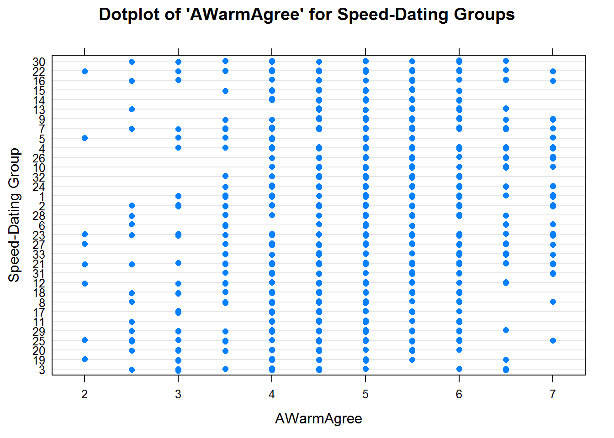
Subsetting data
myvars <- c("GROUPID", "MaleID", "FemaleID", "MF", "FM",
"AWarmAgree", "Ac_NSM_Grandiosity", "Ac_NSM_Entitlement",
"Ac_NSM_Vulnerability", "Pc_NSM_Grandiosity", "Pc_NSM_Entitlement",
"Pc_NSM_Vulnerability", "Agender", "GroupID_EC1", "GroupID_EC2",
"GroupID_EC3", "GroupID_EC4", "GroupID_EC5", "GroupID_EC6",
"GroupID_EC7", "GroupID_EC8", "GroupID_EC9", "GroupID_EC10",
"GroupID_EC11", "GroupID_EC12", "GroupID_EC13", "GroupID_EC14",
"GroupID_EC15", "GroupID_EC16", "GroupID_EC17", "GroupID_EC18",
"GroupID_EC19", "GroupID_EC20", "GroupID_EC21", "GroupID_EC22",
"GroupID_EC23", "GroupID_EC24", "GroupID_EC25", "GroupID_EC26",
"GroupID_EC27", "GroupID_EC28", "GroupID_EC29", "GroupID_EC30",
"GroupID_EC31", "GroupID_EC32")
SD_data_AWarmAgree.withNSMTraits <- SD_data4[myvars]
SD_data_AWarmAgree.withNSMTraits <- na.omit(SD_data_AWarmAgree.withNSMTraits)Narcissistic Traits Predicting SRM Effects for Ratings of Partner Warmth-Agreeableness
SRM_AWarmAgree.withNSMTraits <- glmmTMB(AWarmAgree ~ 1 + Agender*GroupID_EC1 + Agender*GroupID_EC2 + Agender*GroupID_EC3 + Agender*GroupID_EC4 +
Agender*GroupID_EC5 + Agender*GroupID_EC6 + Agender*GroupID_EC7 + Agender*GroupID_EC8 + Agender*GroupID_EC9 +
Agender*GroupID_EC10 + Agender*GroupID_EC11 + Agender*GroupID_EC12 + Agender*GroupID_EC13 + Agender*GroupID_EC14 +
Agender*GroupID_EC15 + Agender*GroupID_EC16 + Agender*GroupID_EC17 + Agender*GroupID_EC18 + Agender*GroupID_EC19 +
Agender*GroupID_EC20 + Agender*GroupID_EC21 + Agender*GroupID_EC22 + Agender*GroupID_EC23 + Agender*GroupID_EC24 +
Agender*GroupID_EC25 + Agender*GroupID_EC26 + Agender*GroupID_EC27 + Agender*GroupID_EC28 + Agender*GroupID_EC29 +
Agender*GroupID_EC30 + Agender*GroupID_EC31 + Agender*GroupID_EC32 + Agender*Ac_NSM_Grandiosity +
Agender*Ac_NSM_Entitlement + Agender*Ac_NSM_Vulnerability + Agender*Pc_NSM_Grandiosity +
Agender*Pc_NSM_Entitlement + Agender*Pc_NSM_Vulnerability +
(0 + MF |GROUPID:MaleID) + (0 + FM + MF |GROUPID:FemaleID) +
us(0 + MF + FM + 0| GROUPID:MaleID:FemaleID),data = SD_data_AWarmAgree.withNSMTraits,
family = gaussian(link = "identity"), dispformula=~0, REML = TRUE,
verbose = FALSE, na.action = na.omit)Warning in fitTMB(TMBStruc): Model convergence problem; false convergence (8).
See vignette('troubleshooting')glmmTMB issues a false convergence warning (8), but same model runs fine in SPSS, with the same deviance value and virtually identical parameter estimates.
summary(SRM_AWarmAgree.withNSMTraits) Family: gaussian ( identity )
Formula:
AWarmAgree ~ 1 + Agender * GroupID_EC1 + Agender * GroupID_EC2 +
Agender * GroupID_EC3 + Agender * GroupID_EC4 + Agender *
GroupID_EC5 + Agender * GroupID_EC6 + Agender * GroupID_EC7 +
Agender * GroupID_EC8 + Agender * GroupID_EC9 + Agender *
GroupID_EC10 + Agender * GroupID_EC11 + Agender * GroupID_EC12 +
Agender * GroupID_EC13 + Agender * GroupID_EC14 + Agender *
GroupID_EC15 + Agender * GroupID_EC16 + Agender * GroupID_EC17 +
Agender * GroupID_EC18 + Agender * GroupID_EC19 + Agender *
GroupID_EC20 + Agender * GroupID_EC21 + Agender * GroupID_EC22 +
Agender * GroupID_EC23 + Agender * GroupID_EC24 + Agender *
GroupID_EC25 + Agender * GroupID_EC26 + Agender * GroupID_EC27 +
Agender * GroupID_EC28 + Agender * GroupID_EC29 + Agender *
GroupID_EC30 + Agender * GroupID_EC31 + Agender * GroupID_EC32 +
Agender * Ac_NSM_Grandiosity + Agender * Ac_NSM_Entitlement +
Agender * Ac_NSM_Vulnerability + Agender * Pc_NSM_Grandiosity +
Agender * Pc_NSM_Entitlement + Agender * Pc_NSM_Vulnerability +
(0 + MF | GROUPID:MaleID) + (0 + FM + MF | GROUPID:FemaleID) +
us(0 + MF + FM + 0 | GROUPID:MaleID:FemaleID)
Dispersion: ~0
Data: SD_data_AWarmAgree.withNSMTraits
AIC BIC logLik deviance df.resid
2366.0 2763.6 -1098.0 2196.0 787
Random effects:
Conditional model:
Groups Name Variance Std.Dev. Corr
GROUPID:MaleID MF 0.3650 0.6042
GROUPID:FemaleID FM 0.4268 0.6533
MF 0.1260 0.3550 -0.22
GROUPID:MaleID:FemaleID MF 0.3868 0.6219
FM 0.9487 0.9740 0.22
Number of obs: 794, groups:
GROUPID:MaleID, 116; GROUPID:FemaleID, 114; GROUPID:MaleID:FemaleID, 403
Conditional model:
Estimate Std. Error z value Pr(>|z|)
(Intercept) 4.916689 0.064123 76.68 <2e-16 ***
Agender 0.145839 0.064539 2.26 0.0238 *
GroupID_EC1 0.236601 0.245176 0.97 0.3345
GroupID_EC2 0.174012 0.282217 0.62 0.5375
GroupID_EC3 -0.638277 0.337308 -1.89 0.0585 .
GroupID_EC4 0.285928 0.241601 1.18 0.2366
GroupID_EC5 -0.440843 0.444283 -0.99 0.3211
GroupID_EC6 0.228934 0.386261 0.59 0.5534
GroupID_EC7 -0.202869 0.311335 -0.65 0.5147
GroupID_EC8 -0.147921 0.275914 -0.54 0.5919
GroupID_EC9 0.466388 0.277651 1.68 0.0930 .
GroupID_EC10 0.346889 0.331147 1.05 0.2949
GroupID_EC11 -0.329949 0.332123 -0.99 0.3205
GroupID_EC12 -0.132127 0.279263 -0.47 0.6361
GroupID_EC13 0.293675 0.345054 0.85 0.3947
GroupID_EC14 -0.193865 0.289340 -0.67 0.5028
GroupID_EC15 0.018635 0.385452 0.05 0.9614
GroupID_EC16 0.264756 0.383760 0.69 0.4903
GroupID_EC17 -0.283228 0.343827 -0.82 0.4101
GroupID_EC18 -0.226538 0.276927 -0.82 0.4133
GroupID_EC19 -0.565195 0.333630 -1.69 0.0903 .
GroupID_EC20 -0.235738 0.360234 -0.65 0.5129
GroupID_EC21 0.256703 0.259786 0.99 0.3231
GroupID_EC22 -0.087225 0.306399 -0.28 0.7759
GroupID_EC23 0.047643 0.279177 0.17 0.8645
GroupID_EC24 0.358022 0.280474 1.28 0.2018
GroupID_EC25 -0.491576 0.317075 -1.55 0.1211
GroupID_EC26 0.670383 0.332260 2.02 0.0436 *
GroupID_EC27 -0.013188 0.356579 -0.04 0.9705
GroupID_EC28 -0.001610 0.337427 0.00 0.9962
GroupID_EC29 -0.386431 0.282321 -1.37 0.1711
GroupID_EC30 -0.072890 0.348213 -0.21 0.8342
GroupID_EC31 0.102847 0.340154 0.30 0.7624
GroupID_EC32 0.604661 0.310696 1.95 0.0516 .
Ac_NSM_Grandiosity 0.171009 0.090983 1.88 0.0602 .
Ac_NSM_Entitlement -0.146681 0.095088 -1.54 0.1229
Ac_NSM_Vulnerability 0.027531 0.065335 0.42 0.6735
Pc_NSM_Grandiosity 0.013097 0.058686 0.22 0.8234
Pc_NSM_Entitlement -0.030260 0.060109 -0.50 0.6147
Pc_NSM_Vulnerability -0.020149 0.044958 -0.45 0.6540
Agender:GroupID_EC1 0.126827 0.254105 0.50 0.6177
Agender:GroupID_EC2 -0.019018 0.288699 -0.07 0.9475
Agender:GroupID_EC3 0.422569 0.341595 1.24 0.2161
Agender:GroupID_EC4 -0.075887 0.251108 -0.30 0.7625
Agender:GroupID_EC5 -0.203114 0.436780 -0.47 0.6419
Agender:GroupID_EC6 -0.277214 0.380538 -0.73 0.4663
Agender:GroupID_EC7 0.191158 0.319626 0.60 0.5498
Agender:GroupID_EC8 -0.195810 0.283846 -0.69 0.4903
Agender:GroupID_EC9 0.053230 0.285536 0.19 0.8521
Agender:GroupID_EC10 -0.242307 0.335083 -0.72 0.4696
Agender:GroupID_EC11 -0.385287 0.336092 -1.15 0.2516
Agender:GroupID_EC12 -0.195899 0.287498 -0.68 0.4956
Agender:GroupID_EC13 0.278124 0.348761 0.80 0.4252
Agender:GroupID_EC14 0.239754 0.295073 0.81 0.4165
Agender:GroupID_EC15 -0.100719 0.390434 -0.26 0.7964
Agender:GroupID_EC16 0.324595 0.378207 0.86 0.3908
Agender:GroupID_EC17 -0.128304 0.347883 -0.37 0.7123
Agender:GroupID_EC18 -0.041197 0.285139 -0.14 0.8851
Agender:GroupID_EC19 -0.067934 0.337373 -0.20 0.8404
Agender:GroupID_EC20 0.144757 0.362670 0.40 0.6898
Agender:GroupID_EC21 -0.566676 0.271288 -2.09 0.0367 *
Agender:GroupID_EC22 -0.273760 0.309524 -0.88 0.3765
Agender:GroupID_EC23 -0.144473 0.286323 -0.50 0.6139
Agender:GroupID_EC24 -0.017084 0.288331 -0.06 0.9528
Agender:GroupID_EC25 0.123480 0.318943 0.39 0.6986
Agender:GroupID_EC26 -0.625638 0.336038 -1.86 0.0626 .
Agender:GroupID_EC27 -0.126036 0.368876 -0.34 0.7326
Agender:GroupID_EC28 0.007197 0.340811 0.02 0.9832
Agender:GroupID_EC29 0.578872 0.289571 2.00 0.0456 *
Agender:GroupID_EC30 0.790031 0.352124 2.24 0.0249 *
Agender:GroupID_EC31 0.115163 0.342720 0.34 0.7369
Agender:GroupID_EC32 -0.164102 0.313661 -0.52 0.6008
Agender:Ac_NSM_Grandiosity -0.041042 0.090987 -0.45 0.6519
Agender:Ac_NSM_Entitlement 0.014851 0.095089 0.16 0.8759
Agender:Ac_NSM_Vulnerability -0.002651 0.065318 -0.04 0.9676
Agender:Pc_NSM_Grandiosity -0.013807 0.058696 -0.24 0.8140
Agender:Pc_NSM_Entitlement -0.116616 0.060107 -1.94 0.0524 .
Agender:Pc_NSM_Vulnerability -0.001516 0.044963 -0.03 0.9731
---
Signif. codes: 0 '***' 0.001 '**' 0.01 '*' 0.05 '.' 0.1 ' ' 1Checking Normality of Level-1 Residuals
Standard low tech way
hist(scale(resid(SRM_AWarmAgree.withNSMTraits)),
freq = FALSE, ylim = c(0, .7), xlim = c(-4, 5),
main = "Narcissistic Traits Predicting SRM Effects for Ratings of Partner Warmth-Agreeableness",
col = "lightblue",
xlab = "Standardized Residuals")
lines(density(scale(resid(SRM_AWarmAgree.withNSMTraits))))
box()
qqnorm(scale(resid(SRM_AWarmAgree.withNSMTraits)), main = "Normal Quantile-Quantile Plot")
qqline(scale(resid(SRM_AWarmAgree.withNSMTraits)))Residuals appear normal in shape.
More high tech way with DHARMa package (note that residual ~ pred plot is incorrect)
SRM_AWarmAgree.withNSMTraits_simres <- simulateResiduals(SRM_AWarmAgree.withNSMTraits)Model family was recognized or set as continuous, but duplicate values were detected in the response. Consider if you are fitting an appropriate model.system.time(sr.SRM_AWarmAgree.withNSMTraits <- simulateResiduals(SRM_AWarmAgree.withNSMTraits))Model family was recognized or set as continuous, but duplicate values were detected in the response. Consider if you are fitting an appropriate model. user system elapsed
0.97 0.01 0.98 plot(sr.SRM_AWarmAgree.withNSMTraits)The Kolmogoriv-Smirnov test confirms that the assumption of normality of the residuals is NOT violated.
Checking for potential non-linearity and heteroscedasticity
Method suggested by Florian Hartig on Github to obtain predicted values
that are not conditioned on random effects (this prevents an artificial
correlation between residuals and predicted values in scatterplot)
newdata=SD_data_AWarmAgree.withNSMTraits
newdata$GROUPID = NA
pred_AWarmAgree.withNSMTraits <- predict(SRM_AWarmAgree.withNSMTraits, newdata)
Stdresiduals_AWarmAgree.withNSMTraits <- scale(resid(SRM_AWarmAgree.withNSMTraits))plot(pred_AWarmAgree.withNSMTraits, Stdresiduals_AWarmAgree.withNSMTraits)No noticeable issues with non-linearity, but potential issues with heteroscedasticity.
Checking Normality of Random Effects
Extracting Random Effects from Model
REs_SRM_AWarmAgree.withNSMTraits <- ranef(SRM_AWarmAgree.withNSMTraits)Histogram and Q-Q Plot for Male Actor Effects
hist(REs_SRM_AWarmAgree.withNSMTraits$cond$`GROUPID:MaleID`$MF, col = "lightblue",
freq = FALSE, ylim = c(0, .7), xlim = c(-4, 5),
xlab = "Men's Actor Effects for Ratings of Partner Warmth-Agreeableness",
main = "Histogram for Men's Actor Effects")
lines(density(REs_SRM_AWarmAgree.withNSMTraits$cond$`GROUPID:MaleID`$MF))
box()qqnorm(scale(REs_SRM_AWarmAgree.withNSMTraits$cond$`GROUPID:MaleID`$MF), main = "Normal Quantile-Quantile Plot")
qqline(scale(REs_SRM_AWarmAgree.withNSMTraits$cond$`GROUPID:MaleID`$MF))The random effects for men’s actor effects seem pretty normal in shape.
Histogram and Q-Q Plot for Female Actor Effects
hist(REs_SRM_AWarmAgree.withNSMTraits$cond$`GROUPID:FemaleID`$FM, col = "lightblue",
freq = FALSE, ylim = c(0, .7), xlim = c(-4, 5),
xlab = "Women's Actor Effects for Ratings of Partner Warmth-Agreeableness",
main = "Histogram for Women's Actor Effects")
lines(density(REs_SRM_AWarmAgree.withNSMTraits$cond$`GROUPID:FemaleID`$FM))
box()qqnorm(scale(REs_SRM_AWarmAgree.withNSMTraits$cond$`GROUPID:FemaleID`$FM), main = "Normal Quantile-Quantile Plot")
qqline(scale(REs_SRM_AWarmAgree.withNSMTraits$cond$`GROUPID:FemaleID`$FM))The random effects for women’s actor effects seem more-or-less normal in shape.
Histogram and Q-Q Plot for Female Partner Effects
hist(REs_SRM_AWarmAgree.withNSMTraits$cond$`GROUPID:FemaleID`$MF, col = "lightblue",
freq = FALSE, ylim = c(0, .7), xlim = c(-4, 5),
xlab = "Women's Partner Effects for Ratings of Partner Warmth-Agreeableness",
main = "Histogram for Women's Partner Effects")
lines(density(REs_SRM_AWarmAgree.withNSMTraits$cond$`GROUPID:FemaleID`$MF))
box()qqnorm(scale(REs_SRM_AWarmAgree.withNSMTraits$cond$`GROUPID:FemaleID`$MF), main = "Normal Quantile-Quantile Plot")
qqline(scale(REs_SRM_AWarmAgree.withNSMTraits$cond$`GROUPID:FemaleID`$MF))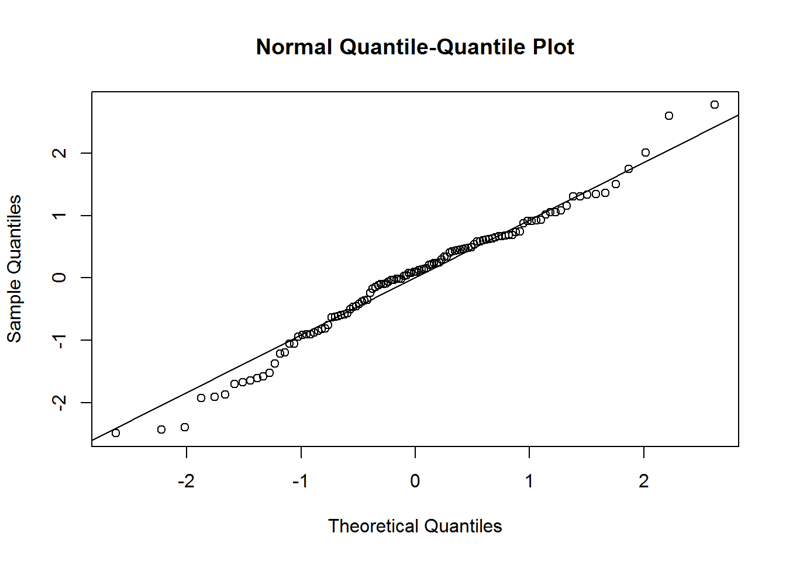
The random effects for women’s partner effects seem pretty normal in shape.
Histogram and Q-Q Plot for Man-to-Woman Relationship Effects
hist(REs_SRM_AWarmAgree.withNSMTraits$cond$`GROUPID:MaleID:FemaleID`$MF, col = "lightblue",
freq = FALSE, ylim = c(0, .7), xlim = c(-4, 5),
xlab = "Man-to-Woman Relationship Effects for Ratings of Partner Warmth-Agreeableness",
main = "Histogram for Man-to-Woman Relationship Effects")
lines(density(REs_SRM_AWarmAgree.withNSMTraits$cond$`GROUPID:MaleID:FemaleID`$MF))
box()qqnorm(scale(REs_SRM_AWarmAgree.withNSMTraits$cond$`GROUPID:MaleID:FemaleID`$MF), main = "Normal Quantile-Quantile Plot")
qqline(scale(REs_SRM_AWarmAgree.withNSMTraits$cond$`GROUPID:MaleID:FemaleID`$MF))Q-Q plot suggests normality.
Histogram and Q-Q Plot for Woman-to-Man Relationship Effects
hist(REs_SRM_AWarmAgree.withNSMTraits$cond$`GROUPID:MaleID:FemaleID`$FM, col = "lightblue",
freq = FALSE, ylim = c(0, .7), xlim = c(-4, 5),
xlab = "Woman-to-Man Relationship Effects for Ratings of Partner Warmth-Agreeableness",
main = "Histogram for Woman-to-Man Relationship Effects")
lines(density(REs_SRM_AWarmAgree.withNSMTraits$cond$`GROUPID:MaleID:FemaleID`$FM))
box()qqnorm(scale(REs_SRM_AWarmAgree.withNSMTraits$cond$`GROUPID:MaleID:FemaleID`$FM), main = "Normal Quantile-Quantile Plot")
qqline(scale(REs_SRM_AWarmAgree.withNSMTraits$cond$`GROUPID:MaleID:FemaleID`$FM))Q-Q plot suggests some non-normality.
Scatterplots for Pairs of Random Effects
Scatterplot of women’s actor and partner effects
plot(REs_SRM_AWarmAgree.withNSMTraits$cond$`GROUPID:FemaleID`)Scatterplot of men’s and women’s relationship effects
plot(REs_SRM_AWarmAgree.withNSMTraits$cond$`GROUPID:MaleID:FemaleID`)Narcissistic Traits Predicting SRM Effects for Ratings of Partner Gregarious-Extraversion
Visual Inspection of Variable Distributions Across Groups
dotplot(
reorder(GROUPID, AGregExtra) ~ AGregExtra,
data = SD_data4, jitter.y = TRUE,
ylab = "Speed-Dating Group",
main = "Dotplot of \'AGregExtra\' for Speed-Dating Groups")Subsetting data
myvars <- c("GROUPID", "MaleID", "FemaleID", "MF", "FM",
"AGregExtra", "Ac_NSM_Grandiosity", "Ac_NSM_Entitlement",
"Ac_NSM_Vulnerability", "Pc_NSM_Grandiosity", "Pc_NSM_Entitlement",
"Pc_NSM_Vulnerability", "Agender", "GroupID_EC1", "GroupID_EC2",
"GroupID_EC3", "GroupID_EC4", "GroupID_EC5", "GroupID_EC6",
"GroupID_EC7", "GroupID_EC8", "GroupID_EC9", "GroupID_EC10",
"GroupID_EC11", "GroupID_EC12", "GroupID_EC13", "GroupID_EC14",
"GroupID_EC15", "GroupID_EC16", "GroupID_EC17", "GroupID_EC18",
"GroupID_EC19", "GroupID_EC20", "GroupID_EC21", "GroupID_EC22",
"GroupID_EC23", "GroupID_EC24", "GroupID_EC25", "GroupID_EC26",
"GroupID_EC27", "GroupID_EC28", "GroupID_EC29", "GroupID_EC30",
"GroupID_EC31", "GroupID_EC32")
SD_data_AGregExtra.withNSMTraits <- SD_data4[myvars]
SD_data_AGregExtra.withNSMTraits <- na.omit(SD_data_AGregExtra.withNSMTraits)Narcissistic Traits Predicting SRM Effects for Ratings of Partner Gregarious-Extraversion
SRM_AGregExtra.withNSMTraits <- glmmTMB(AGregExtra ~ 1 + Agender*GroupID_EC1 + Agender*GroupID_EC2 + Agender*GroupID_EC3 + Agender*GroupID_EC4 +
Agender*GroupID_EC5 + Agender*GroupID_EC6 + Agender*GroupID_EC7 + Agender*GroupID_EC8 + Agender*GroupID_EC9 +
Agender*GroupID_EC10 + Agender*GroupID_EC11 + Agender*GroupID_EC12 + Agender*GroupID_EC13 + Agender*GroupID_EC14 +
Agender*GroupID_EC15 + Agender*GroupID_EC16 + Agender*GroupID_EC17 + Agender*GroupID_EC18 + Agender*GroupID_EC19 +
Agender*GroupID_EC20 + Agender*GroupID_EC21 + Agender*GroupID_EC22 + Agender*GroupID_EC23 + Agender*GroupID_EC24 +
Agender*GroupID_EC25 + Agender*GroupID_EC26 + Agender*GroupID_EC27 + Agender*GroupID_EC28 + Agender*GroupID_EC29 +
Agender*GroupID_EC30 + Agender*GroupID_EC31 + Agender*GroupID_EC32 + Agender*Ac_NSM_Grandiosity +
Agender*Ac_NSM_Entitlement + Agender*Ac_NSM_Vulnerability + Agender*Pc_NSM_Grandiosity +
Agender*Pc_NSM_Entitlement + Agender*Pc_NSM_Vulnerability +
(0 + MF + FM |GROUPID:MaleID) + (0 + FM + MF |GROUPID:FemaleID) +
us(0 + MF + FM + 0| GROUPID:MaleID:FemaleID),data = SD_data_AGregExtra.withNSMTraits,
family = gaussian(link = "identity"), dispformula=~0, REML = TRUE,
verbose = FALSE, na.action = na.omit)Warning in fitTMB(TMBStruc): Model convergence problem; false convergence (8).
See vignette('troubleshooting')glmmTMB issues a false convergence warning (8), but same model runs fine in SPSS, with the same deviance value and virtually identical parameter estimates.
summary(SRM_AGregExtra.withNSMTraits) Family: gaussian ( identity )
Formula:
AGregExtra ~ 1 + Agender * GroupID_EC1 + Agender * GroupID_EC2 +
Agender * GroupID_EC3 + Agender * GroupID_EC4 + Agender *
GroupID_EC5 + Agender * GroupID_EC6 + Agender * GroupID_EC7 +
Agender * GroupID_EC8 + Agender * GroupID_EC9 + Agender *
GroupID_EC10 + Agender * GroupID_EC11 + Agender * GroupID_EC12 +
Agender * GroupID_EC13 + Agender * GroupID_EC14 + Agender *
GroupID_EC15 + Agender * GroupID_EC16 + Agender * GroupID_EC17 +
Agender * GroupID_EC18 + Agender * GroupID_EC19 + Agender *
GroupID_EC20 + Agender * GroupID_EC21 + Agender * GroupID_EC22 +
Agender * GroupID_EC23 + Agender * GroupID_EC24 + Agender *
GroupID_EC25 + Agender * GroupID_EC26 + Agender * GroupID_EC27 +
Agender * GroupID_EC28 + Agender * GroupID_EC29 + Agender *
GroupID_EC30 + Agender * GroupID_EC31 + Agender * GroupID_EC32 +
Agender * Ac_NSM_Grandiosity + Agender * Ac_NSM_Entitlement +
Agender * Ac_NSM_Vulnerability + Agender * Pc_NSM_Grandiosity +
Agender * Pc_NSM_Entitlement + Agender * Pc_NSM_Vulnerability +
(0 + MF + FM | GROUPID:MaleID) + (0 + FM + MF | GROUPID:FemaleID) +
us(0 + MF + FM + 0 | GROUPID:MaleID:FemaleID)
Dispersion: ~0
Data: SD_data_AGregExtra.withNSMTraits
AIC BIC logLik deviance df.resid
2464.8 2872.2 -1145.4 2290.8 789
Random effects:
Conditional model:
Groups Name Variance Std.Dev. Corr
GROUPID:MaleID MF 0.1832 0.4280
FM 0.3123 0.5589 0.11
GROUPID:FemaleID FM 0.2095 0.4578
MF 0.2740 0.5235 -0.04
GROUPID:MaleID:FemaleID MF 0.4915 0.7011
FM 0.8881 0.9424 0.09
Number of obs: 798, groups:
GROUPID:MaleID, 116; GROUPID:FemaleID, 114; GROUPID:MaleID:FemaleID, 403
Conditional model:
Estimate Std. Error z value Pr(>|z|)
(Intercept) 5.142823 0.067243 76.48 < 2e-16 ***
Agender 0.074724 0.064013 1.17 0.24308
GroupID_EC1 0.217846 0.263282 0.83 0.40800
GroupID_EC2 -0.043774 0.301760 -0.15 0.88466
GroupID_EC3 -0.318028 0.356162 -0.89 0.37189
GroupID_EC4 0.456265 0.259129 1.76 0.07828 .
GroupID_EC5 -0.867500 0.464002 -1.87 0.06154 .
GroupID_EC6 -0.034585 0.410446 -0.08 0.93285
GroupID_EC7 -0.355759 0.328625 -1.08 0.27900
GroupID_EC8 -0.009199 0.294534 -0.03 0.97509
GroupID_EC9 0.369910 0.295323 1.25 0.21037
GroupID_EC10 0.361024 0.350455 1.03 0.30294
GroupID_EC11 -0.144351 0.354429 -0.41 0.68381
GroupID_EC12 -0.178187 0.297507 -0.60 0.54922
GroupID_EC13 0.189408 0.361507 0.52 0.60032
GroupID_EC14 -0.129414 0.307632 -0.42 0.67399
GroupID_EC15 0.175290 0.401317 0.44 0.66227
GroupID_EC16 0.415363 0.407701 1.02 0.30830
GroupID_EC17 0.034353 0.362894 0.09 0.92458
GroupID_EC18 -0.474338 0.295344 -1.61 0.10826
GroupID_EC19 -0.073113 0.353068 -0.21 0.83595
GroupID_EC20 0.079426 0.380042 0.21 0.83445
GroupID_EC21 -0.124486 0.275897 -0.45 0.65184
GroupID_EC22 -0.463803 0.327961 -1.41 0.15730
GroupID_EC23 0.137511 0.298187 0.46 0.64469
GroupID_EC24 0.357433 0.299876 1.19 0.23329
GroupID_EC25 -0.453442 0.339315 -1.34 0.18144
GroupID_EC26 -0.100358 0.351700 -0.29 0.77538
GroupID_EC27 0.112445 0.370378 0.30 0.76144
GroupID_EC28 -0.302789 0.357051 -0.85 0.39642
GroupID_EC29 0.226385 0.301320 0.75 0.45246
GroupID_EC30 -0.031539 0.351258 -0.09 0.92845
GroupID_EC31 0.121021 0.340831 0.36 0.72253
GroupID_EC32 0.280434 0.332220 0.84 0.39860
Ac_NSM_Grandiosity -0.001101 0.074305 -0.01 0.98817
Ac_NSM_Entitlement -0.066406 0.077319 -0.86 0.39042
Ac_NSM_Vulnerability 0.004569 0.053464 0.09 0.93190
Pc_NSM_Grandiosity 0.337477 0.082064 4.11 3.92e-05 ***
Pc_NSM_Entitlement -0.140909 0.083904 -1.68 0.09307 .
Pc_NSM_Vulnerability -0.103427 0.061795 -1.67 0.09418 .
Agender:GroupID_EC1 0.159703 0.251381 0.64 0.52523
Agender:GroupID_EC2 0.601385 0.287279 2.09 0.03631 *
Agender:GroupID_EC3 0.106239 0.339535 0.31 0.75436
Agender:GroupID_EC4 0.147409 0.247655 0.60 0.55170
Agender:GroupID_EC5 -0.162371 0.439719 -0.37 0.71193
Agender:GroupID_EC6 0.211601 0.386646 0.55 0.58419
Agender:GroupID_EC7 -0.200756 0.314846 -0.64 0.52371
Agender:GroupID_EC8 -0.278402 0.281136 -0.99 0.32204
Agender:GroupID_EC9 0.004207 0.281913 0.01 0.98809
Agender:GroupID_EC10 -0.489093 0.333705 -1.47 0.14274
Agender:GroupID_EC11 -0.076745 0.337830 -0.23 0.82029
Agender:GroupID_EC12 0.092947 0.284294 0.33 0.74371
Agender:GroupID_EC13 -0.012442 0.344405 -0.04 0.97118
Agender:GroupID_EC14 0.282448 0.292689 0.97 0.33454
Agender:GroupID_EC15 -0.216130 0.384780 -0.56 0.57432
Agender:GroupID_EC16 -0.229284 0.384074 -0.60 0.55052
Agender:GroupID_EC17 -0.043004 0.345918 -0.12 0.90106
Agender:GroupID_EC18 -0.001070 0.282124 0.00 0.99698
Agender:GroupID_EC19 0.099348 0.336140 0.30 0.76757
Agender:GroupID_EC20 0.057088 0.361703 0.16 0.87459
Agender:GroupID_EC21 0.253435 0.265273 0.96 0.33939
Agender:GroupID_EC22 -0.299914 0.310679 -0.97 0.33437
Agender:GroupID_EC23 -0.060727 0.284248 -0.21 0.83083
Agender:GroupID_EC24 0.256951 0.286432 0.90 0.36968
Agender:GroupID_EC25 -0.388280 0.320952 -1.21 0.22637
Agender:GroupID_EC26 -0.499114 0.334812 -1.49 0.13603
Agender:GroupID_EC27 0.437752 0.358190 1.22 0.22166
Agender:GroupID_EC28 0.290447 0.339799 0.85 0.39268
Agender:GroupID_EC29 0.287527 0.287340 1.00 0.31699
Agender:GroupID_EC30 0.721765 0.334595 2.16 0.03100 *
Agender:GroupID_EC31 -0.787520 0.328490 -2.40 0.01651 *
Agender:GroupID_EC32 0.043671 0.314790 0.14 0.88966
Agender:Ac_NSM_Grandiosity 0.047132 0.074293 0.63 0.52582
Agender:Ac_NSM_Entitlement -0.055915 0.077320 -0.72 0.46958
Agender:Ac_NSM_Vulnerability -0.002461 0.053446 -0.05 0.96328
Agender:Pc_NSM_Grandiosity -0.212560 0.082056 -2.59 0.00959 **
Agender:Pc_NSM_Entitlement 0.034366 0.083906 0.41 0.68211
Agender:Pc_NSM_Vulnerability 0.026453 0.061792 0.43 0.66858
---
Signif. codes: 0 '***' 0.001 '**' 0.01 '*' 0.05 '.' 0.1 ' ' 1Checking Normality of Level-1 Residuals
Standard low tech way
hist(scale(resid(SRM_AGregExtra.withNSMTraits)),
freq = FALSE, ylim = c(0, .7), xlim = c(-4, 5),
main = "Narcissistic Traits Predicting SRM Effects for Ratings of Partner Gregarious-Extraversion",
col = "lightblue",
xlab = "Standardized Residuals")
lines(density(scale(resid(SRM_AGregExtra.withNSMTraits))))
box()qqnorm(scale(resid(SRM_AGregExtra.withNSMTraits)), main = "Normal Quantile-Quantile Plot")
qqline(scale(resid(SRM_AGregExtra.withNSMTraits)))There are some minor problems with the normality of the residuals for AGregExtra.
More high tech way with DHARMa package (note that residual ~ pred plot is incorrect)
SRM_AGregExtra.withNSMTraits_simres <- simulateResiduals(SRM_AGregExtra.withNSMTraits)Model family was recognized or set as continuous, but duplicate values were detected in the response. Consider if you are fitting an appropriate model.system.time(sr.SRM_AGregExtra.withNSMTraits <- simulateResiduals(SRM_AGregExtra.withNSMTraits))Model family was recognized or set as continuous, but duplicate values were detected in the response. Consider if you are fitting an appropriate model. user system elapsed
0.98 0.03 1.02 plot(sr.SRM_AGregExtra.withNSMTraits)The Kolmogoriv-Smirnov test confirms that the assumption of normality of the residuals is NOT violated.
Checking for potential non-linearity and heteroscedasticity
Method suggested by Florian Hartig on Github to obtain predicted values
that are not conditioned on random effects (this prevents an artificial
correlation between residuals and predicted values in scatterplot)
newdata=SD_data_AGregExtra.withNSMTraits
newdata$GROUPID = NA
pred_AGregExtra.withNSMTraits <- predict(SRM_AGregExtra.withNSMTraits, newdata)
Stdresiduals_AGregExtra.withNSMTraits <- scale(resid(SRM_AGregExtra.withNSMTraits))plot(pred_AGregExtra.withNSMTraits, Stdresiduals_AGregExtra.withNSMTraits)No noticeable issues with non-linearity or heteroscedasticity.
Checking Normality of Random Effects
Extracting Random Effects from Model
REs_SRM_AGregExtra.withNSMTraits <- ranef(SRM_AGregExtra.withNSMTraits)Histogram and Q-Q Plot for Male Actor Effects
hist(REs_SRM_AGregExtra.withNSMTraits$cond$`GROUPID:MaleID`$MF, col = "lightblue",
freq = FALSE, ylim = c(0, .7), xlim = c(-4, 5),
xlab = "Men's Actor Effects for Ratings of Partner Gregarious-Extraversion",
main = "Histogram for Men's Actor Effects")
lines(density(REs_SRM_AGregExtra.withNSMTraits$cond$`GROUPID:MaleID`$MF))
box()qqnorm(scale(REs_SRM_AGregExtra.withNSMTraits$cond$`GROUPID:MaleID`$MF), main = "Normal Quantile-Quantile Plot")
qqline(scale(REs_SRM_AGregExtra.withNSMTraits$cond$`GROUPID:MaleID`$MF))The random effects for men’s actor effects seem pretty normal in shape.
Histogram and Q-Q Plot for Male Partner Effects
hist(REs_SRM_AGregExtra.withNSMTraits$cond$`GROUPID:MaleID`$FM, col = "lightblue",
freq = FALSE, ylim = c(0, .7), xlim = c(-4, 5),
xlab = "Men's Partner Effects for Ratings of Partner Gregarious-Extraversion",
main = "Histogram for Men's Partner Effects")
lines(density(REs_SRM_AGregExtra.withNSMTraits$cond$`GROUPID:MaleID`$FM))
box()qqnorm(scale(REs_SRM_AGregExtra.withNSMTraits$cond$`GROUPID:MaleID`$FM), main = "Normal Quantile-Quantile Plot")
qqline(scale(REs_SRM_AGregExtra.withNSMTraits$cond$`GROUPID:MaleID`$FM))The random effects for men’s partner effects seem pretty normal in shape.
Histogram and Q-Q Plot for Female Actor Effects
hist(REs_SRM_AGregExtra.withNSMTraits$cond$`GROUPID:FemaleID`$FM, col = "lightblue",
freq = FALSE, ylim = c(0, .7), xlim = c(-4, 5),
xlab = "Women's Actor Effects for Ratings of Partner Gregarious-Extraversion",
main = "Histogram for Women's Actor Effects")
lines(density(REs_SRM_AGregExtra.withNSMTraits$cond$`GROUPID:FemaleID`$FM))
box()qqnorm(scale(REs_SRM_AGregExtra.withNSMTraits$cond$`GROUPID:FemaleID`$FM), main = "Normal Quantile-Quantile Plot")
qqline(scale(REs_SRM_AGregExtra.withNSMTraits$cond$`GROUPID:FemaleID`$FM))The random effects for women’s actor effects seem pretty normal in shape.
Histogram and Q-Q Plot for Female Partner Effects
hist(REs_SRM_AGregExtra.withNSMTraits$cond$`GROUPID:FemaleID`$MF, col = "lightblue",
freq = FALSE, ylim = c(0, .7), xlim = c(-4, 5),
xlab = "Women's Partner Effects for Ratings of Partner Gregarious-Extraversion",
main = "Histogram for Women's Partner Effects")
lines(density(REs_SRM_AGregExtra.withNSMTraits$cond$`GROUPID:FemaleID`$MF))
box()qqnorm(scale(REs_SRM_AGregExtra.withNSMTraits$cond$`GROUPID:FemaleID`$MF), main = "Normal Quantile-Quantile Plot")
qqline(scale(REs_SRM_AGregExtra.withNSMTraits$cond$`GROUPID:FemaleID`$MF))The random effects for women’s partner effects seem pretty normal in shape.
Histogram and Q-Q Plot for Man-to-Woman Relationship Effects
hist(REs_SRM_AGregExtra.withNSMTraits$cond$`GROUPID:MaleID:FemaleID`$MF, col = "lightblue",
freq = FALSE, ylim = c(0, .7), xlim = c(-4, 5),
xlab = "Man-to-Woman Relationship Effects for Ratings of Partner Gregarious-Extraversion",
main = "Histogram for Man-to-Woman Relationship Effects")
lines(density(REs_SRM_AGregExtra.withNSMTraits$cond$`GROUPID:MaleID:FemaleID`$MF))
box()qqnorm(scale(REs_SRM_AGregExtra.withNSMTraits$cond$`GROUPID:MaleID:FemaleID`$MF), main = "Normal Quantile-Quantile Plot")
qqline(scale(REs_SRM_AGregExtra.withNSMTraits$cond$`GROUPID:MaleID:FemaleID`$MF))Q-Q plot suggests some non-normality.
Histogram and Q-Q Plot for Woman-to-Man Relationship Effects
hist(REs_SRM_AGregExtra.withNSMTraits$cond$`GROUPID:MaleID:FemaleID`$FM, col = "lightblue",
freq = FALSE, ylim = c(0, .7), xlim = c(-4, 5),
xlab = "Woman-to-Man Relationship Effects for Ratings of Partner Gregarious-Extraversion",
main = "Histogram for Woman-to-Man Relationship Effects")
lines(density(REs_SRM_AGregExtra.withNSMTraits$cond$`GROUPID:MaleID:FemaleID`$FM))
box()qqnorm(scale(REs_SRM_AGregExtra.withNSMTraits$cond$`GROUPID:MaleID:FemaleID`$FM), main = "Normal Quantile-Quantile Plot")
qqline(scale(REs_SRM_AGregExtra.withNSMTraits$cond$`GROUPID:MaleID:FemaleID`$FM))Q-Q plot suggests some non-normality.
Scatterplots for Pairs of Random Effects
Scatterplot of men’s actor and partner effects
plot(REs_SRM_AGregExtra.withNSMTraits$cond$`GROUPID:MaleID`)Scatterplot of women’s actor and partner effects
plot(REs_SRM_AGregExtra.withNSMTraits$cond$`GROUPID:FemaleID`)Scatterplot of men’s and women’s relationship effects
plot(REs_SRM_AGregExtra.withNSMTraits$cond$`GROUPID:MaleID:FemaleID`)Narcissistic Traits Predicting SRM Effects for Ratings of Attraction to Partner
Visual Inspection of Variable Distributions Across Groups
dotplot(
reorder(GROUPID, AATTRACT) ~ AATTRACT,
data = SD_data4, jitter.y = TRUE,
ylab = "Speed-Dating Group",
main = "Dotplot of \'AATTRACT\' for Speed-Dating Groups")Subsetting data
myvars <- c("GROUPID", "MaleID", "FemaleID", "MF", "FM",
"AATTRACT", "Ac_NSM_Grandiosity", "Ac_NSM_Entitlement",
"Ac_NSM_Vulnerability", "Pc_NSM_Grandiosity", "Pc_NSM_Entitlement",
"Pc_NSM_Vulnerability", "Agender", "GroupID_EC1", "GroupID_EC2",
"GroupID_EC3", "GroupID_EC4", "GroupID_EC5", "GroupID_EC6",
"GroupID_EC7", "GroupID_EC8", "GroupID_EC9", "GroupID_EC10",
"GroupID_EC11", "GroupID_EC12", "GroupID_EC13", "GroupID_EC14",
"GroupID_EC15", "GroupID_EC16", "GroupID_EC17", "GroupID_EC18",
"GroupID_EC19", "GroupID_EC20", "GroupID_EC21", "GroupID_EC22",
"GroupID_EC23", "GroupID_EC24", "GroupID_EC25", "GroupID_EC26",
"GroupID_EC27", "GroupID_EC28", "GroupID_EC29", "GroupID_EC30",
"GroupID_EC31", "GroupID_EC32")
SD_data_AATTRACT.withNSMTraits <- SD_data4[myvars]
SD_data_AATTRACT.withNSMTraits <- na.omit(SD_data_AATTRACT.withNSMTraits)Narcissistic Traits Predicting SRM Effects for Ratings of Attraction to Partner
SRM_AATTRACT.withNSMTraits <- glmmTMB(AATTRACT ~ 1 + Agender*GroupID_EC1 + Agender*GroupID_EC2 + Agender*GroupID_EC3 + Agender*GroupID_EC4 +
Agender*GroupID_EC5 + Agender*GroupID_EC6 + Agender*GroupID_EC7 + Agender*GroupID_EC8 + Agender*GroupID_EC9 +
Agender*GroupID_EC10 + Agender*GroupID_EC11 + Agender*GroupID_EC12 + Agender*GroupID_EC13 + Agender*GroupID_EC14 +
Agender*GroupID_EC15 + Agender*GroupID_EC16 + Agender*GroupID_EC17 + Agender*GroupID_EC18 + Agender*GroupID_EC19 +
Agender*GroupID_EC20 + Agender*GroupID_EC21 + Agender*GroupID_EC22 + Agender*GroupID_EC23 + Agender*GroupID_EC24 +
Agender*GroupID_EC25 + Agender*GroupID_EC26 + Agender*GroupID_EC27 + Agender*GroupID_EC28 + Agender*GroupID_EC29 +
Agender*GroupID_EC30 + Agender*GroupID_EC31 + Agender*GroupID_EC32 + Agender*Ac_NSM_Grandiosity +
Agender*Ac_NSM_Entitlement + Agender*Ac_NSM_Vulnerability + Agender*Pc_NSM_Grandiosity +
Agender*Pc_NSM_Entitlement + Agender*Pc_NSM_Vulnerability +
(0 + MF + FM |GROUPID:MaleID) + (0 + FM + MF |GROUPID:FemaleID) +
us(0 + MF + FM + 0| GROUPID:MaleID:FemaleID),data = SD_data_AATTRACT.withNSMTraits,
family = gaussian(link = "identity"), dispformula=~0, REML = TRUE,
verbose = FALSE, na.action = na.omit)Warning in fitTMB(TMBStruc): Model convergence problem; false convergence (8).
See vignette('troubleshooting')glmmTMB issues a false convergence warning (8), but same model runs fine in SPSS, with the same deviance value and virtually identical parameter estimates.
summary(SRM_AATTRACT.withNSMTraits) Family: gaussian ( identity )
Formula:
AATTRACT ~ 1 + Agender * GroupID_EC1 + Agender * GroupID_EC2 +
Agender * GroupID_EC3 + Agender * GroupID_EC4 + Agender *
GroupID_EC5 + Agender * GroupID_EC6 + Agender * GroupID_EC7 +
Agender * GroupID_EC8 + Agender * GroupID_EC9 + Agender *
GroupID_EC10 + Agender * GroupID_EC11 + Agender * GroupID_EC12 +
Agender * GroupID_EC13 + Agender * GroupID_EC14 + Agender *
GroupID_EC15 + Agender * GroupID_EC16 + Agender * GroupID_EC17 +
Agender * GroupID_EC18 + Agender * GroupID_EC19 + Agender *
GroupID_EC20 + Agender * GroupID_EC21 + Agender * GroupID_EC22 +
Agender * GroupID_EC23 + Agender * GroupID_EC24 + Agender *
GroupID_EC25 + Agender * GroupID_EC26 + Agender * GroupID_EC27 +
Agender * GroupID_EC28 + Agender * GroupID_EC29 + Agender *
GroupID_EC30 + Agender * GroupID_EC31 + Agender * GroupID_EC32 +
Agender * Ac_NSM_Grandiosity + Agender * Ac_NSM_Entitlement +
Agender * Ac_NSM_Vulnerability + Agender * Pc_NSM_Grandiosity +
Agender * Pc_NSM_Entitlement + Agender * Pc_NSM_Vulnerability +
(0 + MF + FM | GROUPID:MaleID) + (0 + FM + MF | GROUPID:FemaleID) +
us(0 + MF + FM + 0 | GROUPID:MaleID:FemaleID)
Dispersion: ~0
Data: SD_data_AATTRACT.withNSMTraits
AIC BIC logLik deviance df.resid
2623.0 3030.0 -1224.5 2449.0 786
Random effects:
Conditional model:
Groups Name Variance Std.Dev. Corr
GROUPID:MaleID MF 0.3292 0.5737
FM 0.4285 0.6546 0.13
GROUPID:FemaleID FM 0.3556 0.5963
MF 0.5577 0.7468 -0.12
GROUPID:MaleID:FemaleID MF 0.6465 0.8041
FM 0.9105 0.9542 0.23
Number of obs: 795, groups:
GROUPID:MaleID, 116; GROUPID:FemaleID, 114; GROUPID:MaleID:FemaleID, 403
Conditional model:
Estimate Std. Error z value Pr(>|z|)
(Intercept) 3.95151 0.08276 47.74 < 2e-16 ***
Agender 0.19344 0.07871 2.46 0.0140 *
GroupID_EC1 -0.11700 0.32771 -0.36 0.7211
GroupID_EC2 -0.07202 0.37382 -0.19 0.8472
GroupID_EC3 -0.66073 0.43901 -1.51 0.1323
GroupID_EC4 0.49628 0.32284 1.54 0.1242
GroupID_EC5 -0.12782 0.56543 -0.23 0.8212
GroupID_EC6 -0.30109 0.50194 -0.60 0.5486
GroupID_EC7 -0.08231 0.40689 -0.20 0.8397
GroupID_EC8 0.19862 0.36548 0.54 0.5868
GroupID_EC9 0.65072 0.36768 1.77 0.0768 .
GroupID_EC10 0.31292 0.43202 0.72 0.4689
GroupID_EC11 0.18587 0.43313 0.43 0.6678
GroupID_EC12 -0.14121 0.36918 -0.38 0.7021
GroupID_EC13 0.22428 0.44531 0.50 0.6145
GroupID_EC14 -0.25743 0.38207 -0.67 0.5005
GroupID_EC15 0.13704 0.49372 0.28 0.7813
GroupID_EC16 0.15241 0.49870 0.31 0.7599
GroupID_EC17 0.05293 0.44718 0.12 0.9058
GroupID_EC18 -0.30449 0.36655 -0.83 0.4061
GroupID_EC19 -0.08568 0.43513 -0.20 0.8439
GroupID_EC20 -0.05754 0.46743 -0.12 0.9020
GroupID_EC21 -0.44334 0.34478 -1.29 0.1985
GroupID_EC22 -0.67099 0.40479 -1.66 0.0974 .
GroupID_EC23 -0.41826 0.37121 -1.13 0.2598
GroupID_EC24 -0.05246 0.37074 -0.14 0.8875
GroupID_EC25 -0.58470 0.41820 -1.40 0.1621
GroupID_EC26 0.47864 0.43351 1.10 0.2695
GroupID_EC27 0.14982 0.45883 0.33 0.7440
GroupID_EC28 -0.46750 0.43984 -1.06 0.2878
GroupID_EC29 0.30839 0.37507 0.82 0.4110
GroupID_EC30 -0.04876 0.43305 -0.11 0.9104
GroupID_EC31 0.58354 0.42477 1.37 0.1695
GroupID_EC32 0.42851 0.40990 1.05 0.2958
Ac_NSM_Grandiosity -0.05134 0.08903 -0.58 0.5641
Ac_NSM_Entitlement -0.17045 0.09248 -1.84 0.0653 .
Ac_NSM_Vulnerability 0.05157 0.06488 0.79 0.4267
Pc_NSM_Grandiosity 0.43044 0.09968 4.32 1.57e-05 ***
Pc_NSM_Entitlement -0.16945 0.10299 -1.65 0.0999 .
Pc_NSM_Vulnerability 0.02748 0.07303 0.38 0.7067
Agender:GroupID_EC1 -0.06203 0.31636 -0.20 0.8446
Agender:GroupID_EC2 0.68020 0.35775 1.90 0.0573 .
Agender:GroupID_EC3 -0.27342 0.41940 -0.65 0.5145
Agender:GroupID_EC4 -0.08509 0.31241 -0.27 0.7853
Agender:GroupID_EC5 -0.02720 0.52934 -0.05 0.9590
Agender:GroupID_EC6 0.79218 0.46631 1.70 0.0894 .
Agender:GroupID_EC7 -0.81786 0.39344 -2.08 0.0376 *
Agender:GroupID_EC8 -0.18377 0.35178 -0.52 0.6014
Agender:GroupID_EC9 0.04395 0.35403 0.12 0.9012
Agender:GroupID_EC10 -0.56100 0.41192 -1.36 0.1732
Agender:GroupID_EC11 -0.37191 0.41307 -0.90 0.3679
Agender:GroupID_EC12 0.78446 0.35600 2.20 0.0276 *
Agender:GroupID_EC13 0.49650 0.42473 1.17 0.2424
Agender:GroupID_EC14 0.01040 0.36503 0.03 0.9773
Agender:GroupID_EC15 0.21214 0.47562 0.45 0.6556
Agender:GroupID_EC16 0.25583 0.46339 0.55 0.5809
Agender:GroupID_EC17 -0.50424 0.42701 -1.18 0.2376
Agender:GroupID_EC18 0.30673 0.35330 0.87 0.3853
Agender:GroupID_EC19 -0.66386 0.41469 -1.60 0.1094
Agender:GroupID_EC20 -0.92648 0.44448 -2.08 0.0371 *
Agender:GroupID_EC21 0.77266 0.33708 2.29 0.0219 *
Agender:GroupID_EC22 -0.53512 0.38287 -1.40 0.1622
Agender:GroupID_EC23 0.11603 0.35636 0.33 0.7447
Agender:GroupID_EC24 -0.01558 0.35694 -0.04 0.9652
Agender:GroupID_EC25 -0.74682 0.39407 -1.90 0.0581 .
Agender:GroupID_EC26 -0.81657 0.41313 -1.98 0.0481 *
Agender:GroupID_EC27 0.86528 0.45087 1.92 0.0550 .
Agender:GroupID_EC28 0.49319 0.41874 1.18 0.2389
Agender:GroupID_EC29 0.02262 0.36028 0.06 0.9499
Agender:GroupID_EC30 1.02132 0.41320 2.47 0.0134 *
Agender:GroupID_EC31 -0.46375 0.40988 -1.13 0.2579
Agender:GroupID_EC32 -0.30681 0.38774 -0.79 0.4288
Agender:Ac_NSM_Grandiosity -0.09197 0.08900 -1.03 0.3014
Agender:Ac_NSM_Entitlement 0.01172 0.09248 0.13 0.8992
Agender:Ac_NSM_Vulnerability 0.03036 0.06484 0.47 0.6396
Agender:Pc_NSM_Grandiosity -0.16912 0.09969 -1.70 0.0898 .
Agender:Pc_NSM_Entitlement 0.08095 0.10299 0.79 0.4319
Agender:Pc_NSM_Vulnerability -0.03586 0.07303 -0.49 0.6234
---
Signif. codes: 0 '***' 0.001 '**' 0.01 '*' 0.05 '.' 0.1 ' ' 1Checking Normality of Level-1 Residuals
Standard low tech way
hist(scale(resid(SRM_AATTRACT.withNSMTraits)),
freq = FALSE, ylim = c(0, .7), xlim = c(-4, 5),
main = "Narcissistic Traits Predicting SRM Effects for Ratings of Attraction to Partner",
col = "lightblue",
xlab = "Standardized Residuals")
lines(density(scale(resid(SRM_AATTRACT.withNSMTraits))))
box()qqnorm(scale(resid(SRM_AATTRACT.withNSMTraits)), main = "Normal Quantile-Quantile Plot")
qqline(scale(resid(SRM_AATTRACT.withNSMTraits)))Residuals appear normal in shape.
More high tech way with DHARMa package (note that residual ~ pred plot is incorrect)
SRM_AATTRACT.withNSMTraits_simres <- simulateResiduals(SRM_AATTRACT.withNSMTraits)Model family was recognized or set as continuous, but duplicate values were detected in the response. Consider if you are fitting an appropriate model.system.time(sr.SRM_AATTRACT.withNSMTraits <- simulateResiduals(SRM_AATTRACT.withNSMTraits))Model family was recognized or set as continuous, but duplicate values were detected in the response. Consider if you are fitting an appropriate model. user system elapsed
1.00 0.02 1.02 plot(sr.SRM_AATTRACT.withNSMTraits)The Kolmogoriv-Smirnov test confirms that the assumption of normality of the residuals is NOT violated.
Checking for potential non-linearity and heteroscedasticity
Method suggested by Florian Hartig on Github to obtain predicted values
that are not conditioned on random effects (this prevents an artificial
correlation between residuals and predicted values in scatterplot)
newdata=SD_data_AATTRACT.withNSMTraits
newdata$GROUPID = NA
pred_AATTRACT.withNSMTraits <- predict(SRM_AATTRACT.withNSMTraits, newdata)
Stdresiduals_AATTRACT.withNSMTraits <- scale(resid(SRM_AATTRACT.withNSMTraits))plot(pred_AATTRACT.withNSMTraits, Stdresiduals_AATTRACT.withNSMTraits)No noticeable issues with non-linearity or heteroscedasticity.
Checking Normality of Random Effects
Extracting Random Effects from Model
REs_SRM_AATTRACT.withNSMTraits <- ranef(SRM_AATTRACT.withNSMTraits)Histogram and Q-Q Plot for Male Actor Effects
hist(REs_SRM_AATTRACT.withNSMTraits$cond$`GROUPID:MaleID`$MF, col = "lightblue",
freq = FALSE, ylim = c(0, .7), xlim = c(-4, 5),
xlab = "Men's Actor Effects for Ratings of Attraction to Partner",
main = "Histogram for Men's Actor Effects")
lines(density(REs_SRM_AATTRACT.withNSMTraits$cond$`GROUPID:MaleID`$MF))
box()qqnorm(scale(REs_SRM_AATTRACT.withNSMTraits$cond$`GROUPID:MaleID`$MF), main = "Normal Quantile-Quantile Plot")
qqline(scale(REs_SRM_AATTRACT.withNSMTraits$cond$`GROUPID:MaleID`$MF))The random effects for men’s actor effects seem pretty normal in shape.
Histogram and Q-Q Plot for Male Partner Effects
hist(REs_SRM_AATTRACT.withNSMTraits$cond$`GROUPID:MaleID`$FM, col = "lightblue",
freq = FALSE, ylim = c(0, .7), xlim = c(-4, 5),
xlab = "Men's Partner Effects for Ratings of Attraction to Partner",
main = "Histogram for Men's Partner Effects")
lines(density(REs_SRM_AATTRACT.withNSMTraits$cond$`GROUPID:MaleID`$FM))
box()qqnorm(scale(REs_SRM_AATTRACT.withNSMTraits$cond$`GROUPID:MaleID`$FM), main = "Normal Quantile-Quantile Plot")
qqline(scale(REs_SRM_AATTRACT.withNSMTraits$cond$`GROUPID:MaleID`$FM))The random effects for men’s partner effects seem pretty normal in shape.
Histogram and Q-Q Plot for Female Actor Effects
hist(REs_SRM_AATTRACT.withNSMTraits$cond$`GROUPID:FemaleID`$FM, col = "lightblue",
freq = FALSE, ylim = c(0, .7), xlim = c(-4, 5),
xlab = "Women's Actor Effects for Ratings of Attraction to Partner",
main = "Histogram for Women's Actor Effects")
lines(density(REs_SRM_AATTRACT.withNSMTraits$cond$`GROUPID:FemaleID`$FM))
box()qqnorm(scale(REs_SRM_AATTRACT.withNSMTraits$cond$`GROUPID:FemaleID`$FM), main = "Normal Quantile-Quantile Plot")
qqline(scale(REs_SRM_AATTRACT.withNSMTraits$cond$`GROUPID:FemaleID`$FM))The random effects for women’s actor effects seem more-or-less normal in shape.
Histogram and Q-Q Plot for Female Partner Effects
hist(REs_SRM_AATTRACT.withNSMTraits$cond$`GROUPID:FemaleID`$MF, col = "lightblue",
freq = FALSE, ylim = c(0, .7), xlim = c(-4, 5),
xlab = "Women's Partner Effects for Ratings of Attraction to Partner",
main = "Histogram for Women's Partner Effects")
lines(density(REs_SRM_AATTRACT.withNSMTraits$cond$`GROUPID:FemaleID`$MF))
box()qqnorm(scale(REs_SRM_AATTRACT.withNSMTraits$cond$`GROUPID:FemaleID`$MF), main = "Normal Quantile-Quantile Plot")
qqline(scale(REs_SRM_AATTRACT.withNSMTraits$cond$`GROUPID:FemaleID`$MF))The random effects for women’s partner effects seem pretty normal in shape.
Histogram and Q-Q Plot for Man-to-Woman Relationship Effects
hist(REs_SRM_AATTRACT.withNSMTraits$cond$`GROUPID:MaleID:FemaleID`$MF, col = "lightblue",
freq = FALSE, ylim = c(0, .7), xlim = c(-4, 5),
xlab = "Man-to-Woman Relationship Effects for Ratings of Attraction to Partner",
main = "Histogram for Man-to-Woman Relationship Effects")
lines(density(REs_SRM_AATTRACT.withNSMTraits$cond$`GROUPID:MaleID:FemaleID`$MF))
box()qqnorm(scale(REs_SRM_AATTRACT.withNSMTraits$cond$`GROUPID:MaleID:FemaleID`$MF), main = "Normal Quantile-Quantile Plot")
qqline(scale(REs_SRM_AATTRACT.withNSMTraits$cond$`GROUPID:MaleID:FemaleID`$MF))
Q-Q plot suggests normality.
Histogram and Q-Q Plot for Woman-to-Man Relationship Effects
hist(REs_SRM_AATTRACT.withNSMTraits$cond$`GROUPID:MaleID:FemaleID`$FM, col = "lightblue",
freq = FALSE, ylim = c(0, .7), xlim = c(-4, 5),
xlab = "Woman-to-Man Relationship Effects for Ratings of Attraction to Partner",
main = "Histogram for Woman-to-Man Relationship Effects")
lines(density(REs_SRM_AATTRACT.withNSMTraits$cond$`GROUPID:MaleID:FemaleID`$FM))
box()qqnorm(scale(REs_SRM_AATTRACT.withNSMTraits$cond$`GROUPID:MaleID:FemaleID`$FM), main = "Normal Quantile-Quantile Plot")
qqline(scale(REs_SRM_AATTRACT.withNSMTraits$cond$`GROUPID:MaleID:FemaleID`$FM))Q-Q plot suggests normality.
Scatterplots for Pairs of Random Effects
Scatterplot of men’s actor and partner effects
plot(REs_SRM_AATTRACT.withNSMTraits$cond$`GROUPID:MaleID`)Scatterplot of women’s actor and partner effects
plot(REs_SRM_AATTRACT.withNSMTraits$cond$`GROUPID:FemaleID`)Scatterplot of men’s and women’s relationship effects
plot(REs_SRM_AATTRACT.withNSMTraits$cond$`GROUPID:MaleID:FemaleID`)Narcissistic Traits Predicting SRM Effects for Meta-Perceptions of Attraction
Visual Inspection of Variable Distributions Across Groups
dotplot(
reorder(GROUPID, AMETAATTRACT) ~ AMETAATTRACT,
data = SD_data4, jitter.y = TRUE,
ylab = "Speed-Dating Group",
main = "Dotplot of \'AMETAATTRACT\' for Speed-Dating Groups")Subsetting data
myvars <- c("GROUPID", "MaleID", "FemaleID", "MF", "FM",
"AMETAATTRACT", "Ac_NSM_Grandiosity", "Ac_NSM_Entitlement",
"Ac_NSM_Vulnerability", "Pc_NSM_Grandiosity", "Pc_NSM_Entitlement",
"Pc_NSM_Vulnerability", "Agender", "GroupID_EC1", "GroupID_EC2",
"GroupID_EC3", "GroupID_EC4", "GroupID_EC5", "GroupID_EC6",
"GroupID_EC7", "GroupID_EC8", "GroupID_EC9", "GroupID_EC10",
"GroupID_EC11", "GroupID_EC12", "GroupID_EC13", "GroupID_EC14",
"GroupID_EC15", "GroupID_EC16", "GroupID_EC17", "GroupID_EC18",
"GroupID_EC19", "GroupID_EC20", "GroupID_EC21", "GroupID_EC22",
"GroupID_EC23", "GroupID_EC24", "GroupID_EC25", "GroupID_EC26",
"GroupID_EC27", "GroupID_EC28", "GroupID_EC29", "GroupID_EC30",
"GroupID_EC31", "GroupID_EC32")
SD_data_AMETAATTRACT.withNSMTraits <- SD_data4[myvars]
SD_data_AMETAATTRACT.withNSMTraits <- na.omit(SD_data_AMETAATTRACT.withNSMTraits)Narcissistic Traits Predicting SRM Effects for Meta-Perceptions of Attraction
SRM_AMETAATTRACT.withNSMTraits <- glmmTMB(AMETAATTRACT ~ 1 + Agender*GroupID_EC1 + Agender*GroupID_EC2 + Agender*GroupID_EC3 + Agender*GroupID_EC4 +
Agender*GroupID_EC5 + Agender*GroupID_EC6 + Agender*GroupID_EC7 + Agender*GroupID_EC8 + Agender*GroupID_EC9 +
Agender*GroupID_EC10 + Agender*GroupID_EC11 + Agender*GroupID_EC12 + Agender*GroupID_EC13 + Agender*GroupID_EC14 +
Agender*GroupID_EC15 + Agender*GroupID_EC16 + Agender*GroupID_EC17 + Agender*GroupID_EC18 + Agender*GroupID_EC19 +
Agender*GroupID_EC20 + Agender*GroupID_EC21 + Agender*GroupID_EC22 + Agender*GroupID_EC23 + Agender*GroupID_EC24 +
Agender*GroupID_EC25 + Agender*GroupID_EC26 + Agender*GroupID_EC27 + Agender*GroupID_EC28 + Agender*GroupID_EC29 +
Agender*GroupID_EC30 + Agender*GroupID_EC31 + Agender*GroupID_EC32 + Agender*Ac_NSM_Grandiosity +
Agender*Ac_NSM_Entitlement + Agender*Ac_NSM_Vulnerability + Agender*Pc_NSM_Grandiosity +
Agender*Pc_NSM_Entitlement + Agender*Pc_NSM_Vulnerability +
(0 + MF + FM |GROUPID:MaleID) + (0 + FM + MF |GROUPID:FemaleID) +
us(0 + MF + FM + 0| GROUPID:MaleID:FemaleID),data = SD_data_AMETAATTRACT.withNSMTraits,
family = gaussian(link = "identity"), dispformula=~0, REML = TRUE,
verbose = FALSE, na.action = na.omit)summary(SRM_AMETAATTRACT.withNSMTraits) Family: gaussian ( identity )
Formula:
AMETAATTRACT ~ 1 + Agender * GroupID_EC1 + Agender * GroupID_EC2 +
Agender * GroupID_EC3 + Agender * GroupID_EC4 + Agender *
GroupID_EC5 + Agender * GroupID_EC6 + Agender * GroupID_EC7 +
Agender * GroupID_EC8 + Agender * GroupID_EC9 + Agender *
GroupID_EC10 + Agender * GroupID_EC11 + Agender * GroupID_EC12 +
Agender * GroupID_EC13 + Agender * GroupID_EC14 + Agender *
GroupID_EC15 + Agender * GroupID_EC16 + Agender * GroupID_EC17 +
Agender * GroupID_EC18 + Agender * GroupID_EC19 + Agender *
GroupID_EC20 + Agender * GroupID_EC21 + Agender * GroupID_EC22 +
Agender * GroupID_EC23 + Agender * GroupID_EC24 + Agender *
GroupID_EC25 + Agender * GroupID_EC26 + Agender * GroupID_EC27 +
Agender * GroupID_EC28 + Agender * GroupID_EC29 + Agender *
GroupID_EC30 + Agender * GroupID_EC31 + Agender * GroupID_EC32 +
Agender * Ac_NSM_Grandiosity + Agender * Ac_NSM_Entitlement +
Agender * Ac_NSM_Vulnerability + Agender * Pc_NSM_Grandiosity +
Agender * Pc_NSM_Entitlement + Agender * Pc_NSM_Vulnerability +
(0 + MF + FM | GROUPID:MaleID) + (0 + FM + MF | GROUPID:FemaleID) +
us(0 + MF + FM + 0 | GROUPID:MaleID:FemaleID)
Dispersion: ~0
Data: SD_data_AMETAATTRACT.withNSMTraits
AIC BIC logLik deviance df.resid
2461.4 2868.7 -1143.7 2287.4 789
Random effects:
Conditional model:
Groups Name Variance Std.Dev. Corr
GROUPID:MaleID MF 0.43656 0.6607
FM 0.10457 0.3234 0.41
GROUPID:FemaleID FM 0.92803 0.9633
MF 0.05323 0.2307 0.57
GROUPID:MaleID:FemaleID MF 0.56676 0.7528
FM 0.71735 0.8470 0.00
Number of obs: 798, groups:
GROUPID:MaleID, 116; GROUPID:FemaleID, 114; GROUPID:MaleID:FemaleID, 403
Conditional model:
Estimate Std. Error z value Pr(>|z|)
(Intercept) 3.904915 0.084042 46.46 < 2e-16 ***
Agender 0.165988 0.067684 2.45 0.0142 *
GroupID_EC1 -0.320562 0.338507 -0.95 0.3436
GroupID_EC2 -0.437593 0.382160 -1.15 0.2522
GroupID_EC3 -0.047362 0.448094 -0.11 0.9158
GroupID_EC4 0.523661 0.334411 1.57 0.1174
GroupID_EC5 0.029645 0.563494 0.05 0.9580
GroupID_EC6 0.192023 0.495320 0.39 0.6983
GroupID_EC7 0.124387 0.421284 0.30 0.7678
GroupID_EC8 -0.483440 0.376239 -1.28 0.1988
GroupID_EC9 0.333508 0.377275 0.88 0.3767
GroupID_EC10 -0.002587 0.439891 -0.01 0.9953
GroupID_EC11 0.075468 0.441143 0.17 0.8642
GroupID_EC12 -0.300906 0.380780 -0.79 0.4294
GroupID_EC13 0.260396 0.453586 0.57 0.5659
GroupID_EC14 -0.247198 0.388373 -0.64 0.5245
GroupID_EC15 0.390448 0.509186 0.77 0.4432
GroupID_EC16 0.247666 0.492255 0.50 0.6149
GroupID_EC17 -0.145260 0.456049 -0.32 0.7501
GroupID_EC18 0.074395 0.377883 0.20 0.8439
GroupID_EC19 0.692386 0.442754 1.56 0.1179
GroupID_EC20 0.009705 0.474352 0.02 0.9837
GroupID_EC21 -0.229424 0.360613 -0.64 0.5246
GroupID_EC22 -0.648126 0.408036 -1.59 0.1122
GroupID_EC23 0.005248 0.379194 0.01 0.9890
GroupID_EC24 -0.309391 0.382885 -0.81 0.4191
GroupID_EC25 -0.585056 0.419698 -1.39 0.1633
GroupID_EC26 -0.200538 0.441091 -0.45 0.6494
GroupID_EC27 -0.189824 0.484475 -0.39 0.6952
GroupID_EC28 -0.341350 0.447015 -0.76 0.4451
GroupID_EC29 0.066489 0.383419 0.17 0.8623
GroupID_EC30 0.122883 0.445099 0.28 0.7825
GroupID_EC31 -0.072767 0.428194 -0.17 0.8651
GroupID_EC32 0.648653 0.413199 1.57 0.1165
Ac_NSM_Grandiosity 0.594503 0.110400 5.38 7.25e-08 ***
Ac_NSM_Entitlement -0.115379 0.115969 -0.99 0.3198
Ac_NSM_Vulnerability -0.072663 0.078153 -0.93 0.3525
Pc_NSM_Grandiosity 0.099027 0.059782 1.66 0.0976 .
Pc_NSM_Entitlement -0.084363 0.060979 -1.38 0.1665
Pc_NSM_Vulnerability -0.010958 0.045517 -0.24 0.8097
Agender:GroupID_EC1 -0.411899 0.265653 -1.55 0.1210
Agender:GroupID_EC2 0.477353 0.302296 1.58 0.1143
Agender:GroupID_EC3 0.270372 0.358962 0.75 0.4513
Agender:GroupID_EC4 -0.069712 0.262109 -0.27 0.7903
Agender:GroupID_EC5 -0.220603 0.461064 -0.48 0.6323
Agender:GroupID_EC6 -0.334260 0.399565 -0.84 0.4028
Agender:GroupID_EC7 -0.260611 0.335752 -0.78 0.4376
Agender:GroupID_EC8 0.194691 0.297281 0.65 0.5125
Agender:GroupID_EC9 -0.090184 0.298177 -0.30 0.7623
Agender:GroupID_EC10 -0.386580 0.351955 -1.10 0.2720
Agender:GroupID_EC11 0.170612 0.353017 0.48 0.6289
Agender:GroupID_EC12 0.262222 0.301230 0.87 0.3840
Agender:GroupID_EC13 0.410399 0.363631 1.13 0.2591
Agender:GroupID_EC14 0.148346 0.307827 0.48 0.6299
Agender:GroupID_EC15 -0.465924 0.411965 -1.13 0.2581
Agender:GroupID_EC16 0.279689 0.396992 0.70 0.4811
Agender:GroupID_EC17 -0.630018 0.365643 -1.72 0.0849 .
Agender:GroupID_EC18 0.164046 0.298705 0.55 0.5829
Agender:GroupID_EC19 -0.116659 0.354395 -0.33 0.7420
Agender:GroupID_EC20 0.226101 0.381249 0.59 0.5531
Agender:GroupID_EC21 0.276458 0.284257 0.97 0.3308
Agender:GroupID_EC22 -0.561459 0.323948 -1.73 0.0831 .
Agender:GroupID_EC23 -0.039488 0.299844 -0.13 0.8952
Agender:GroupID_EC24 -0.016457 0.303495 -0.05 0.9568
Agender:GroupID_EC25 0.694213 0.333739 2.08 0.0375 *
Agender:GroupID_EC26 -0.145259 0.352964 -0.41 0.6807
Agender:GroupID_EC27 -0.143833 0.389091 -0.37 0.7116
Agender:GroupID_EC28 -0.335128 0.357981 -0.94 0.3492
Agender:GroupID_EC29 0.122736 0.303354 0.40 0.6858
Agender:GroupID_EC30 0.475517 0.357890 1.33 0.1840
Agender:GroupID_EC31 0.137793 0.361945 0.38 0.7034
Agender:GroupID_EC32 -0.075497 0.328418 -0.23 0.8182
Agender:Ac_NSM_Grandiosity 0.081725 0.110373 0.74 0.4590
Agender:Ac_NSM_Entitlement -0.048698 0.115964 -0.42 0.6745
Agender:Ac_NSM_Vulnerability 0.084532 0.078114 1.08 0.2792
Agender:Pc_NSM_Grandiosity -0.085260 0.059767 -1.43 0.1537
Agender:Pc_NSM_Entitlement -0.016051 0.060989 -0.26 0.7924
Agender:Pc_NSM_Vulnerability 0.013704 0.045500 0.30 0.7633
---
Signif. codes: 0 '***' 0.001 '**' 0.01 '*' 0.05 '.' 0.1 ' ' 1Checking Normality of Level-1 Residuals
Standard low tech way
hist(scale(resid(SRM_AMETAATTRACT.withNSMTraits)),
freq = FALSE, ylim = c(0, .7), xlim = c(-4, 5),
main = "Narcissistic Traits Predicting SRM Effects for Meta-Perceptions of Attraction",
col = "lightblue",
xlab = "Standardized Residuals")
lines(density(scale(resid(SRM_AMETAATTRACT.withNSMTraits))))
box()qqnorm(scale(resid(SRM_AMETAATTRACT.withNSMTraits)), main = "Normal Quantile-Quantile Plot")
qqline(scale(resid(SRM_AMETAATTRACT.withNSMTraits)))There are some problems with the normality of the residuals for AMETAATTRACT, most likely due to the fact that it is a single-item measure.
More high tech way with DHARMa package (note that residual ~ pred plot is incorrect)
SRM_AMETAATTRACT.withNSMTraits_simres <- simulateResiduals(SRM_AMETAATTRACT.withNSMTraits)Model family was recognized or set as continuous, but duplicate values were detected in the response. Consider if you are fitting an appropriate model.system.time(sr.SRM_AMETAATTRACT.withNSMTraits <- simulateResiduals(SRM_AMETAATTRACT.withNSMTraits))Model family was recognized or set as continuous, but duplicate values were detected in the response. Consider if you are fitting an appropriate model. user system elapsed
1.00 0.01 1.01 plot(sr.SRM_AMETAATTRACT.withNSMTraits)The Kolmogoriv-Smirnov test confirms that the assumption of normality of the residuals is NOT violated.
Checking for potential non-linearity and heteroscedasticity
Method suggested by Florian Hartig on Github to obtain predicted values
that are not conditioned on random effects (this prevents an artificial
correlation between residuals and predicted values in scatterplot)
newdata=SD_data_AMETAATTRACT.withNSMTraits
newdata$GROUPID = NA
pred_AMETAATTRACT.withNSMTraits <- predict(SRM_AMETAATTRACT.withNSMTraits, newdata)
Stdresiduals_AMETAATTRACT.withNSMTraits <- scale(resid(SRM_AMETAATTRACT.withNSMTraits))plot(pred_AMETAATTRACT.withNSMTraits, Stdresiduals_AMETAATTRACT.withNSMTraits)No noticeable issues with non-linearity or heteroscedasticity.
Checking Normality of Random Effects
Extracting Random Effects from Model
REs_SRM_AMETAATTRACT.withNSMTraits <- ranef(SRM_AMETAATTRACT.withNSMTraits)Histogram and Q-Q Plot for Male Actor Effects
hist(REs_SRM_AMETAATTRACT.withNSMTraits$cond$`GROUPID:MaleID`$MF, col = "lightblue",
freq = FALSE, ylim = c(0, .7), xlim = c(-4, 5),
xlab = "Men's Actor Effects for Meta-Perceptions of Attraction",
main = "Histogram for Men's Actor Effects")
lines(density(REs_SRM_AMETAATTRACT.withNSMTraits$cond$`GROUPID:MaleID`$MF))
box()qqnorm(scale(REs_SRM_AMETAATTRACT.withNSMTraits$cond$`GROUPID:MaleID`$MF), main = "Normal Quantile-Quantile Plot")
qqline(scale(REs_SRM_AMETAATTRACT.withNSMTraits$cond$`GROUPID:MaleID`$MF))The random effects for men’s actor effects seem pretty normal in shape.
Histogram and Q-Q Plot for Male Partner Effects
hist(REs_SRM_AMETAATTRACT.withNSMTraits$cond$`GROUPID:MaleID`$FM, col = "lightblue",
freq = FALSE, ylim = c(0, .7), xlim = c(-4, 5),
xlab = "Men's Partner Effects for Meta-Perceptions of Attraction",
main = "Histogram for Men's Partner Effects")
lines(density(REs_SRM_AMETAATTRACT.withNSMTraits$cond$`GROUPID:MaleID`$FM))
box()qqnorm(scale(REs_SRM_AMETAATTRACT.withNSMTraits$cond$`GROUPID:MaleID`$FM), main = "Normal Quantile-Quantile Plot")
qqline(scale(REs_SRM_AMETAATTRACT.withNSMTraits$cond$`GROUPID:MaleID`$FM))The random effects for men’s partner effects seem pretty normal in shape.
Histogram and Q-Q Plot for Female Actor Effects
hist(REs_SRM_AMETAATTRACT.withNSMTraits$cond$`GROUPID:FemaleID`$FM, col = "lightblue",
freq = FALSE, ylim = c(0, .7), xlim = c(-4, 5),
xlab = "Women's Actor Effects for Meta-Perceptions of Attraction",
main = "Histogram for Women's Actor Effects")
lines(density(REs_SRM_AMETAATTRACT.withNSMTraits$cond$`GROUPID:FemaleID`$FM))
box()
qqnorm(scale(REs_SRM_AMETAATTRACT.withNSMTraits$cond$`GROUPID:FemaleID`$FM), main = "Normal Quantile-Quantile Plot")
qqline(scale(REs_SRM_AMETAATTRACT.withNSMTraits$cond$`GROUPID:FemaleID`$FM))The random effects for women’s actor effects seem somewhat non-normal in shape.
Histogram and Q-Q Plot for Female Partner Effects
hist(REs_SRM_AMETAATTRACT.withNSMTraits$cond$`GROUPID:FemaleID`$MF, col = "lightblue",
freq = FALSE, ylim = c(0, .7), xlim = c(-4, 5),
xlab = "Women's Partner Effects for Meta-Perceptions of Attraction",
main = "Histogram for Women's Partner Effects")
lines(density(REs_SRM_AMETAATTRACT.withNSMTraits$cond$`GROUPID:FemaleID`$MF))
box()qqnorm(scale(REs_SRM_AMETAATTRACT.withNSMTraits$cond$`GROUPID:FemaleID`$MF), main = "Normal Quantile-Quantile Plot")
qqline(scale(REs_SRM_AMETAATTRACT.withNSMTraits$cond$`GROUPID:FemaleID`$MF))The random effects for women’s partner effects seem somewhat non-normal in shape.
Histogram and Q-Q Plot for Man-to-Woman Relationship Effects
hist(REs_SRM_AMETAATTRACT.withNSMTraits$cond$`GROUPID:MaleID:FemaleID`$MF, col = "lightblue",
freq = FALSE, ylim = c(0, .7), xlim = c(-4, 5),
xlab = "Man-to-Woman Relationship Effects for Meta-Perceptions of Attraction",
main = "Histogram for Man-to-Woman Relationship Effects")
lines(density(REs_SRM_AMETAATTRACT.withNSMTraits$cond$`GROUPID:MaleID:FemaleID`$MF))
box()qqnorm(scale(REs_SRM_AMETAATTRACT.withNSMTraits$cond$`GROUPID:MaleID:FemaleID`$MF), main = "Normal Quantile-Quantile Plot")
qqline(scale(REs_SRM_AMETAATTRACT.withNSMTraits$cond$`GROUPID:MaleID:FemaleID`$MF))Q-Q plot suggests some non-normality.
Histogram and Q-Q Plot for Woman-to-Man Relationship Effects
hist(REs_SRM_AMETAATTRACT.withNSMTraits$cond$`GROUPID:MaleID:FemaleID`$FM, col = "lightblue",
freq = FALSE, ylim = c(0, .7), xlim = c(-4, 5),
xlab = "Woman-to-Man Relationship Effects for Meta-Perceptions of Attraction",
main = "Histogram for Woman-to-Man Relationship Effects")
lines(density(REs_SRM_AMETAATTRACT.withNSMTraits$cond$`GROUPID:MaleID:FemaleID`$FM))
box()qqnorm(scale(REs_SRM_AMETAATTRACT.withNSMTraits$cond$`GROUPID:MaleID:FemaleID`$FM), main = "Normal Quantile-Quantile Plot")
qqline(scale(REs_SRM_AMETAATTRACT.withNSMTraits$cond$`GROUPID:MaleID:FemaleID`$FM))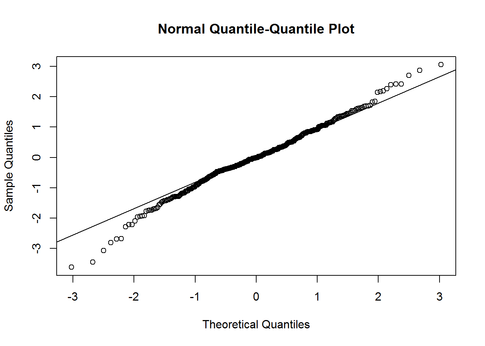
Q-Q plot suggests normality.
Scatterplots for Pairs of Random Effects
Scatterplot of men’s actor and partner effects
plot(REs_SRM_AMETAATTRACT.withNSMTraits$cond$`GROUPID:MaleID`)Scatterplot of women’s actor and partner effects
plot(REs_SRM_AMETAATTRACT.withNSMTraits$cond$`GROUPID:FemaleID`)Scatterplot of men’s and women’s relationship effects
plot(REs_SRM_AMETAATTRACT.withNSMTraits$cond$`GROUPID:MaleID:FemaleID`)
sessionInfo()R version 3.6.3 (2020-02-29)
Platform: x86_64-w64-mingw32/x64 (64-bit)
Running under: Windows 10 x64 (build 10586)
Matrix products: default
locale:
[1] LC_COLLATE=English_United States.1252
[2] LC_CTYPE=English_United States.1252
[3] LC_MONETARY=English_United States.1252
[4] LC_NUMERIC=C
[5] LC_TIME=English_United States.1252
attached base packages:
[1] stats graphics grDevices utils datasets methods base
other attached packages:
[1] haven_2.2.0 DHARMa_0.2.7 nlme_3.1-145 lme4_1.1-21
[5] Matrix_1.2-18 lattice_0.20-38 TMB_1.7.16 glmmTMB_1.0.0
[9] workflowr_1.6.1
loaded via a namespace (and not attached):
[1] zoo_1.8-7 xfun_0.12 pbapply_1.4-2 splines_3.6.3
[5] vctrs_0.2.4 htmltools_0.4.0 yaml_2.2.1 survival_3.1-8
[9] rlang_0.4.5 pillar_1.4.3 nloptr_1.2.2.1 later_1.0.0
[13] glue_1.3.2 emmeans_1.4.5 multcomp_1.4-12 foreach_1.4.8
[17] stringr_1.4.0 mvtnorm_1.1-0 codetools_0.2-16 coda_0.19-3
[21] evaluate_0.14 knitr_1.28 forcats_0.5.0 httpuv_1.5.2
[25] parallel_3.6.3 TH.data_1.0-10 Rcpp_1.0.3 readr_1.3.1
[29] xtable_1.8-4 promises_1.1.0 backports_1.1.5 fs_1.3.2
[33] spaMM_3.1.27 hms_0.5.3 digest_0.6.25 stringi_1.4.6
[37] grid_3.6.3 rprojroot_1.3-2 gap_1.2.2 tools_3.6.3
[41] sandwich_2.5-1 magrittr_1.5 tibble_2.1.3 proxy_0.4-23
[45] pkgconfig_2.0.3 crayon_1.3.4 whisker_0.4 MASS_7.3-51.5
[49] estimability_1.3 qrnn_2.0.5 minqa_1.2.4 rmarkdown_2.1
[53] iterators_1.0.12 R6_2.4.1 boot_1.3-24 git2r_0.26.1
[57] compiler_3.6.3